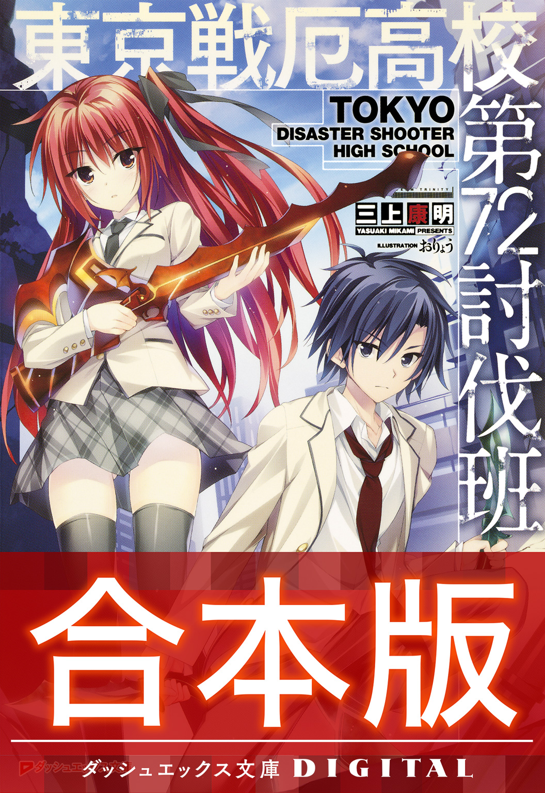
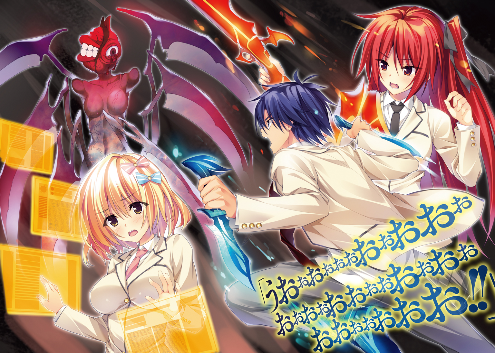

| 【合本版】東京戦厄高校第72討伐班 全3巻 | |
| 三上康明 | |

東京戦厄高校第72討伐班 合本版

この本は縦書きでレイアウトされています。
また、ご覧になる機種により、表示の差が認められることがあります。


 ダッシュエックス文庫DIGITAL
ダッシュエックス文庫DIGITAL
東京戦厄高校第72討伐班
三上康明
Ｐｒｏｌｏｇｕｅ
日本中の電信柱にその観測機が取り付けられてから、もう十年。
サッカーボール程度の大きさの球体で、色は黒。
半径一〇〇メートル圏内に一つは設置されており、日本国内では五百万個を数える。
あまりにも大量、と言っていいだろう。
維持費だけで年間三百億円という国家予算が使われ、今なお増産が続けられている――「災厄」以後の大ヒット商品、だなんて皮肉が聞こえてくるほど。
しかしこの観測機を撤去しろ、という声はまったく聞こえてこない。
なぜならば人間の命を守るのに必要不可欠だからだ。
この黒い球体、「災厄警報」は人々を見下ろす高い位置で今日もじっと観測している。
揺れるバスの車内、左手でつり革につかまっていた。
火見沢月佳は右手に英語の参考書を開き、真剣なまなざしをじっと注いでいる。
整った顔立ちだ。肌はすべやかで車内の暖房のせいか頰がほんのり紅潮している。小ぶりな唇はピンク色で、テキストに合わせて少しだけ動く。
長いまつげと、熱心な瞳の色は――紅。燃えるような紅。
紅は、瞳だけではない。肩胛骨まで伸びている美しい長髪もまた紅だ。パールホワイトのＰコートに、月佳の紅い髪がよく映えている。
しかしこの紅は、取り立てて周囲の視線を惹いていない。「災厄」以降、生まれた子どもたちの特徴だからだ。
「ふう......」
息をついて車窓から外を眺めた月佳は、街並みの切れ目からほんの一瞬、海を見た。
湘南の海。きらきらと光った海面――冬空を映す青い海。
二月の今、海水浴シーズンではまったくない。でも海の美しさは一年を通じて同じだ。
見た景色が消えないように、そっと目を閉じる。
三年間、過ごすことになる町。
東京新都鎌倉区。
（......それもこれも、今日の入試に受かったら、だけどね）

次に目を開いたときには、バスは街中の道、交差点にさしかかっていた。
そのとき、だった。
対向車がなにかに乗り上げて大きくバウンドした。
ハンドルを取られた車が歩道に乗り上げて民家の外壁へと突っ込む。
急停車したバス。月佳はつり革を握りしめて衝撃をこらえる。
バス車内で上がる悲鳴――それをかき消したのはサイレンだ。
ディンディンディンディンディンディンディンディンディンディンディンディンディンディンディンディンディンディンディンディンディンディンディンディンディンディンディンディンディンディンディンディンディンディンディンディンと短い間隔で鳴り続ける。
音の発信源は交差点――の、上。
信号機の支柱に取り付けられた観測機が赤く光っている。
月佳は知っている。その、色が意味するところを。
中心から半径一〇〇メートル以内は赤。
三〇〇メートル以内はオレンジ。
六〇〇メートル以内は黄色。
一キロメートル以内が白。
《災厄技術庁からお知らせいたします。「災厄の種」の「発芽」を確認いたしました。発生地は東京新都鎌倉区――》
観測機から、サイレンを割って機械的な音声が入ってくる。
赤ということは、近いところに出現したということだ。
おそらく、車が乗り上げたなにかだ。
《災厄レベルは１ｓｔです。速やかにこの場から離れるか建物内へ避難してください。繰り返します。速やかにこの場から離れるか、建物内へ避難してください》
交差点内には急ブレーキを踏んだ乗用車が入り込んでおり身動きが取れなくなっている。
運転手たちは車から飛び出すと走って逃げていく。
このバスとて、前後を乗用車に挟まれているから移動は不可能だ。
「ドアを開けて！」
月佳は参考書をバッグに突っ込むとバスの運転席へと向かった。
「車では避難できないわ！ 早くして！」
「あ、は、はいっ」
ぷしゅーと前後のドアが開くや月佳は外へと飛び出した。
交差点を中心に人々が放射状に逃げていく。
近くのコンビニはシャッターが閉まり、バイクが猛烈なＵターンを決めて遠ざかっていく。けたたましいサイレン。だが、人々は混乱することなく冷静に、迅速に、待避する。
これは、慣れかもしれない。
危機への、慣れだ。
だけれどこの警報に直面し、緊張しない者はいない――月佳の心臓がばくんばくんと強く鼓動を打つ。
月佳がそれを見るのは初めて、だった。
盛り上がった地面、飛び出しているのは薄青い半透明の鉱物だ。
いや、鉱物と言うよりラグビーボール状のガラス細工のようだ。
表面はカットされ、すべて六角形の幾何学的な断面が組み合わさっている――。
「急がなきゃ......！」
月佳はそれのある交差点を警戒しつつ、民家に突っ込んだ車へと急ぐ。
壁を突き崩してボンネットはつぶれていたけれど、他は無事だ。
役目を終えたエアバッグがだらりとハンドルに垂れている。
「大丈夫ですか！」
運転席のドアを叩くと、うめき声が聞こえた。初老の男性――気絶から目を覚ます。
なんとか降りてくる運転手を月佳が支える。
「歩けますか？」
「私は大丈夫だ......ありがとう。災厄警報が鳴っているというのに、君は勇敢だ」
「――勇気くらいしか、私にはないの」
交差点にあったそれは、今――変化していた。
パキッ、ピキ、パリン。
六角形が割れ、剝がれていく。
中から出てきたのは二本の角――それも半透明の美しい色合いを持っていた。
のそり、のそりと、前足、後ろ足、と交互に動かして出てくる。見た目はクワガタに近い。だが足の数は四本で、翅がなく、目玉が頭の中央にひとつあるきりだった。
全身は薄い青色。透き通っていた。ガラス細工の置物みたいだ。だが、動いている。体内を黄色く発光する光が流れていて、動いている。
ギチギチギチギチ――それは、角のように見えていた二本の巨大な牙を左右に広げた。
「早く、逃げてください......早く！」
運転手の背中を押して彼を先に逃がす。
交差点へと振り返ると、それもまた、月佳を発見する。
この生命体は「災厄」と呼ばれていた。
カチンカチンカチン――まるで歓喜するように牙と牙を打ちつけた。
それほど大きくはない。せいぜい両腕で抱えられる程度だ。
災厄は走り出した。
車のボンネットからルーフへとジャンプする。鋭い爪がルーフを削り取る。
一直線に、月佳へ向かって走ってくる。
とてつもない速度に、月佳はあっけにとられた。
実際に動いているのを、目の前で見るのは初めてだった。
あんな――ガラスのような、機械のような生命体が、こんなにも機敏に動くなんて。
災厄は車の上から、跳んだ。
虫が羽ばたくように。
肉食獣が草食獣に飛びかかるように。
見開かれた月佳の目に、災厄が映し出される。
驚きに、恐怖に、動けなかった。
今、動かないことが「死」に直結することだとわかっているのに。
「ぃぃぃいいいいいいいやぁっふううううううううううううううううう!!」
災厄と月佳の間に滑り込んだ少年がいた。
軽々とした身のこなし、そして――制服。見たことのない学ラン。
「ライジングキィィィィック!!」
アホみたいなかけ声とは違って鋭い一撃だった。
びゅおっ、と風を切り裂いた蹴り上げは災厄のボディに直撃する。
重いものが激突する、鈍い音が響き渡る。
蹴り飛ばされた災厄は、背中から地面に激突した。
「――――――――――――――――――――――――――――――――――――――」
足を真上へ蹴り抜いた形で止まった少年は、
「――いっでええええええええええええ!? なん、これぇ!? めっちゃかてぇし重いし!?」
片足ケンケンで足を抱え込むのを見て、月佳の意識が戻ってくる。
「あ、あ......あ」
「おう、お礼は別にいいぜ......ってかこれ、痛くないし、たいしたことないし、ちょっとびっくりしただけだし、ほんとに痛くないし！」
「あ、あ――」
「これ涙目とかじゃないから！ ちょっとね、目にゴミがね、そういうのだから――え？」
月佳の指した指先――災厄はまったく動じることなく、くるりと起き上がったのである。
そして、カチンカチンカチンと牙と牙をぶつける。
「......やっぱり、そう簡単にはノックダウンしないっすよねえ～」
「く、来るっ」
災厄は再度走り出す。今度は少年に向かって一直線に。
「よっしゃ――」
少年は、
「――逃げっか」
災厄に背を向けた。
「え？」
そして月佳の手をつかんで走り出す。
「えええええええええええ!?」
「走れ！ 死にてえのかよ！」
もつれるように走り出したが災厄の動きは相当速い。
「だって、今、なんか戦いそうな雰囲気だったじゃない!?」
「じゃーお前やってみろよ！ めっちゃ足痛いんだぞ！」
「災厄相手にキックなんて効くわけないわよ!?」
「俺のライジングキックを受け止めたのはあいつで十五人目だ」
「結構多い！ ――って、もうすぐそこに」
数歩の距離に、迫っていた。
災厄が牙を広げる。
飛び出す。
宙を舞う。
「武装召喚」
ふたりの前方から涼やかな声――すらりとした金髪碧眼の少年が立っていた。
着ている制服はブレザー。首元にはワインレッドのタイ。
彼は、制服には不釣り合いな武器を手にしていた。
洋弓。アーチェリーでも使われるコンパウンドボウ。
その色は翠――翡翠のような色は、きわめて透明度が高かった。
少年と月佳は同時に身体を伏せた。彼が、弓を構えたからだ。
つがえたのは翠の光に包まれた矢。
引き絞ったかと思うと、即座に放たれる。
ヒィウッと空気を切り裂く音は後から聞こえてきた。
矢は災厄に命中した。真正面に。災厄は後方へ吹っ飛んでいく。
追撃で二射目、三射目が放たれ、災厄が地に着くよりも前に残りの矢は命中した。
災厄は地面に叩きつけられ、転がっていく。
「察するに......ネケ＝イニキタスか。哀れな、小さき、生き物よ」
腹に三本の矢を埋め込んだまま、痙攣し――色彩が失われる。最後は灰色へと変わった。
「死んだ、のか？」
「すごい......」
至近距離、動いている敵。
にもかかわらず彼は速射し、すべてを命中させた。
どんな状況でも実力を発揮できる、積み上げられた練度。
武装解除した少年を、驚愕混じりの視線で月佳は見つめた――。
そんな彼は両腕を広げるや、目を閉じた。
「............春の空気は、騒がしい。花見の酔客ならばまだしも、暴力に身を委ねる災厄はいただけない。甘い春の風に血のにおいが混じる前に、僕がここに到着してよかった――」
「は？」
いきなりなにを言いだしたのか。
きょとんとする月佳とは裏腹に、いったいどこにいたのか、車の陰から、家の塀の裏から、人々が出てきて一斉に拍手を送った。
「さすがだねえ」
「宮野くんがいたら安心だ」
彼の胸元には金色のバッジが輝いていた。
鎌倉区にある高校の校章、獅子をモチーフとしたバッジだ。
「そうか......この人が」
月佳は納得した。彼の、実力にも。
「この人が、なんなんだ？」
「災厄と戦うために設立された東京戦厄高校。そのトップチーム『黄金獅子』だけが着用を許される金色のバッジ......」
これぞ強さ。
これぞ武力。
これぞ――人類の希望。
月佳は自らの手を押さえる。恐怖の後遺症だろうか、右手の指先が震えていた。
「すげーな......俺が目指してるものはやっぱりすげーよ」
「――もしかしてあなたも、東京戦厄高校の受験に？」
少年は胸を張った。
「俺は成家廻人。最強のシューターになる男だ。よろしくな！」
差し出された手を握りかえすべきかどうか考えてから、
「......それは入試に受かってから言うべきじゃない？」
「おっ、それもそーだな！ あっはははははは――」
高笑いした途中で廻人が、止まる。
時を同じくして月佳も、止まった。
「入試!! 遅れちゃう!!」
「やべえ、今何時だよ!?」
ふたりは自分のバッグを探し、拾い上げると走り出す。
向かう先は、同じだ。
「もぉぉぉ、遅刻で失格になったりしたらサイテーよ!!」
「あっははははは」
「なに笑ってんの!?」
「いや、ほんとはこの災厄との遭遇が実は入試の一部とかそういう......ドラマみたいな展開はさすがにないよなあ、全然ないわこれ、って思うとなんかすげえおかしくなってきて」
「黙って走るか走るの止めて帰って」
「お前結構ひでーよな!?」
ふたりは、大騒ぎしつつも全力疾走で学校を目指した。
そして入学試験の、結果は――。
国立東京戦厄高校――東京新都鎌倉区に設立された、日本に九つある戦厄高校のうちのひとつである。二〇〇を超える「災厄討伐班」が存在し、生徒によって構成されている。
生徒たちは災厄の甲殻より造られる対災厄戦闘兵器「生体響刻武装」を装備し、これを操る技術を学ぶ。
彼らは、やがてこう呼ばれる――「災厄を討つ者」と。
Ｃｈａｐｔｅｒ Ⅰ
Ⅰ
《新入生諸君――君たちがこの学校へやってきた理由は、様々だろう。災厄を討ち滅ぼしたいという高邁な志、家族の仇、家庭の事情、単に暴れたいだけ......理由がなんでも構わない。我々が必要としているのは『災厄と戦う』という強い意志だ。
だが、入学式のこの日、君たちは知るべきだ。今この場にいるクラスメイトが三年後、同じ顔ぶれで卒業式を迎えられるとは限らないことを。任務の途中で殉職する可能性を。失われた犠牲を乗り越え、我々は進まなければならないことを》
しん......と静まり返った講堂にマイクを通した声が響く。
話す主は威風堂々としていた。
身長は一八〇センチを超え、制服の下にはしなやかで強靱な筋肉が躍動している。
さらりとした髪は、ぬらりと光るような黒だ。
感情ひとつ見せない怜悧な黒瞳。
胸にあるバッジは「黄金獅子」――「戦厄高校史上最強」と囁かれる少年である。
東京戦厄高校生徒会長、六条誠一郎だ。
《歩むべき道がわからなくなったら、今、このとき、胸にある意志を思い出してほしい。我々がなろうとしている『災厄を討つ者』に必要なものは『災厄と戦う』という『強い意志』に他ならない。意志があれば、倒せない敵はない。乗り越えられない困難はない。
ここにいるすべての新入生に、『強い意志』があることを期待している。
ようこそ、戦厄高校へ。
災厄と戦うためだけに存在している学校へ。
人類を守る最前線へ。
私は君たちを歓迎する》
窓の外には桜が満開だ。
暖かな日射しはこれからの前途を祝福しているように感じられる。
教室のざわつきは止まなかった。
入学式が先ほど終わり、初めて足を踏み入れた教室には知らない顔ばかり。
このクラスに限らず、新入生全員が「災厄以後」に生まれた象徴である髪の色、目の色を持っている。赤、緑、黄色といった様々な色が教室内を彩る。
ほぼ全員が「初めまして」状態でお互いの出身地をたずねたり、どんなマンガが好きで、ゲームをやって、音楽を聴いてきたのか――当たり障りのない会話を続けていた。
しかし、無秩序に見えるざわめきにも中心人物がいた。
火見沢月佳はすでに話題の少女だった。
入学試験の学力項目がトップだったから、新入生代表のあいさつをこなした。
体力測定でも女子レベルではない好成績。特殊科目の「射撃」においては歴代最高点。
生体響刻武装の「響刻値」適性検査もきわめて高い数値――学年に一人いるかどうかという「Ａプラス」である。
響刻値とは使用者が生体響刻武装と相性がいいかということを示すひとつの指標だ。これは遺伝子レベルで決まるので、「才能」と言ってもいいだろう。
それだけではなかった。
「火見沢さんって名前変わってるよな、って思ったけどマジであの『ホムラ』の家なの？ 自動車メーカーの？」
「すっげー。うちの親父もホムラのＳＵＶ乗ってるよ」
「昨日ニュースになってたじゃん。新車発表って」
火見沢家は日本でもトップスリーに入る自動車メーカー「ホムラ」の創業者一家だった。「ホムラ」の時価総額は現在一〇兆二千億円。火見沢家の総資産は推定一兆円超えと言われているが、実態はそれより多いとも言われ真実は定かではない。
もちろん彼女の成績や氏素性だけが惹きつけているのではなかった。
紅い髪はブレザーである制服によく似合っていたし、下に穿くスカートは生徒の自由に任せられているが、月佳は上品なチェック柄だ。彼女がにっこりとすれば男子だけではなく女子もまた一瞬うっとりとしてしまうほどの破壊力があった。
そんな空気を破ったのは、ひとりの少年だった。
「あー！ お前！」
青色の短髪、ブレザーを着慣れてないどころか着させられているような状態でシャツもだらりと外に出ている――成家廻人だ。
「――あなた」
「よう！ お前も受かったんだな。あんときは入試やばかっ」
「入試で不正でもしたの？ あなたが入学できるレベルの試験じゃないと思うのだけど......」
「ふごぅ!? なにさらっとキツイこと言ってんの!?」
「だってあなたバカっぽいし」
「あっはははは。まー、バカっぽいってよく言われるけどなー」
廻人はにかっと笑った。
「事故の影響なんか、お前にゃなかったってことかな？ クラスメイトっぽいし、お互いがんばろーぜ。そんじゃ」
「..................あ」
彼は、災厄を前に動けなかった月佳の前へと滑り込んだ。
こともあろうに災厄に蹴りをくれた。効くわけもないのに。
でも、あれがなければ――月佳は災厄に食われていたかもしれない。
右手の指先が震えていた。
「あの――」
言いかけた月佳だったけれど、
「おーい、お前らみんな座れー」
ボディラインがはっきりわかるスーツを着た女性が教室へ入ってくる。ジャケットをボタンひとつで留めていたが、盛り上がっている胸のせいで今にも取れそうだ。腰のくびれのラインを見て「おお......」と思わず声を漏らす男子生徒までいた。
彼女は長い黒髪を頭の上で団子にし、知性を感じさせる雰囲気のメガネをかけていた。
「やあー、担任の仁科だよ。今年もちゃんと生徒が入ってきたようでよかったよかった。入試の前後でシューターの殉職が報道されるとたいていドタキャンが大量発生するんだけど、今年は死んでないしね。アハハッ」

見た目とは裏腹にどぎつい言葉を放たれる。
浮ついた空気が急速に冷え込んだ。
「ん～、表情が引き締まったね。そういう顔、私は好きよ？ では災厄討伐班について発表したいと思いまーす」
いきなりの話題転換にまたもざわめきが教室に広がる。
「災厄討伐班」――通常、「討伐班」と呼ばれる。
生体響刻武装を使用して災厄と戦うにあたり、現代戦術の最先端は「チーム戦」だ。
明確に役割を分担した三人から五人で討伐班――チームを構成し、戦う。
この学校で学ぶ戦い方も、すべてはチーム戦のためにある。
「先生。災厄討伐班の発表とおっしゃいましたが、すでに班分けは行われており、それを発表する段階であるということでしょうか？」
すっ、と手を挙げて月佳がたずねると、
「もちろん、そうだよ」
「討伐班はシューターごとの性格や相性が非常に重要かと思います。私たちは会ったばかりでお互いのことを知りません」
「もちろん、そうだよ」
同じ言葉を繰り返した。
「だから、私が勝手にくじ引きで決めても同じだよね？」
え、と固まる月佳――だけでなくほとんどの生徒の硬直を無視して仁科は続けた。
「ちなみに学期の変わり目で討伐班は変更可能なので安心してね。あ、それと今から発表する討伐班でこれから模擬戦やるから、服はそのままでバトルルームに集合～」
模擬戦、という言葉に硬直はざわつきへと変わる――不穏なざわつきへと。
「お言葉ですが先生――」
「黙れ、火見沢月佳」
仁科は斬って捨てた。
「君たちは好きでウチに入学した。私たちは強制なんかしていないし、入ってきた以上、手加減するつもりはない。――もういっちょ教えとくけど最初の一年で全体の三五パーセントが自主退学するのが毎年の平均ね。では最初の討伐班、第六三討伐班四名～」
実に楽しそうに仁科は言った。
戸惑いを隠せない生徒がほとんどだった。
名前を次々と読み上げていき――そして仁科はその名前にたどり着いた。
「最後は三人チームだね。第七二討伐班、火見沢月佳、千早川アリス、成家廻人。以上」
Ⅱ
「お前も幸運だよなー！ 最強のシューターになる俺と同じ討伐班なんだもんな！」
奇縁というか、ただの偶然というか。またしても遭遇してしまったこのクラスメイト。
しかも廻人は、月佳を特別扱いしない。
超有名企業の創業者一家の娘であろうとなんだろうと。
「......とりあえず、入試の日のことだけど。あなたにひとつ言っておきたいことが――」
「そういやもうひとりのメンバーはどこだ？」
月佳の言葉を遮り、余裕で無視して廻人はきょろきょろする。
ぐぬぬと右手を握りしめた月佳は、絶対お礼なんて言ってやらないと決意した。
ここは「バトルホール」――体育館に併設されているチーム戦専用の施設だ。
六角形のホールは二階に観客席があり、映画館のように傾斜がついて並んでいる。
中央には六角形のエリアがあり、その周囲に六つの模擬戦用ステージが展開していた。
仁科のクラスの生徒しかいないようで貸し切り状態だった。
「は、はひっ、お待たせ、しましたぁっ......み、道に迷っちゃってっ......」
ふたりのところへやってきた少女は息も絶え絶えだった。
「あ、あのあの、ふつつか者ですが、どうぞよろしくお願いしますっ」
ぺこっ、と頭を下げ、彼女のセミロングの金髪がふわりと揺れた。
背の低い少女だ。金髪は肩の上で柔らかく内側に巻いている。
月佳と違って穿いているスカートはポップなドット柄だった。
「道に迷った、って......私たち、まとまって移動してきたじゃない」
「最初はいっしょに教室を出たんですけど、窓の外をちょうちょが飛んでて、『あ、春ですよね～』ってほんわかしてたんですよねえ。春ってアリス大好きなんです。あったかくって、気持ちよくって......あれ？ なんの話でしたっけ？」
「............」
月佳は真顔になったが、もはやなにも言わなかった。
「はいはーい、注目ー。それじゃ響刻構成体を配りますよー」
仁科が段ボール箱から無造作に半透明の棒を取り出した。
「ぷれーん、ぐりっぷ？」
小首をかしげるアリスに廻人が説明する。
「生体響刻武装を発動するのに必要なデバイスだよ。握りしめて『武装召喚』と発声すると武装に変わるんだ。くぅ～、ようやく俺の武器が持てるってわけ！」
「わあ、すごいですね～」

「すごいだろ～」
自分自身がすごいわけでもないのに廻人が得意げに言う。
「発現するシューター・タイプは遺伝子レベルで決まってるし、武装の種類も決まってるんだ。こればっかりはどうやったって変わらない」
「シューター・タイプって......八種類のやつでしたっけ」
「そう。俺たちみたいにチームを組む場合は、あらかじめデバイス同士をチーム設定にしておくんだ。で、シューター同士が連携して戦えるようになる」
「おおぉ......すごいです！」
「すごいだろ～」
相変わらず、自分がすごいわけでもないのに廻人は得意げに言った。
「おーい、成家、千早川、火見沢。取りにきなさーい」
仁科に呼ばれて三人は響刻構成体を取りに行く。
三人はそれを、初めて手にした。
大きさはリレーで使うバトンと同じくらいだ。
ずっしりと、重い。
中央はメタリックな円柱であり、中には機器が埋め込まれている。
指のへこみがあり、握り込むようにできていた。
学生証のナンバーが刻印されてある。
自分だけの響刻構成体。ぴかぴかの新品だ。
ガラス細工のようにカットされた、半透明の棒が左右に飛び出している。
先端は丸くなっているが、カットされた面はたいていが六角形を描いていた。美しい光が棒の内部を漂う。人工では生産不可能な材質であるため「災厄」の身体をリサイクルして造られる。
人類にとって究極の敵、災厄を滅ぼす唯一無二の武器だ。
「............」
ぶるっ、と武者震いが月佳を襲った。
これが――生体響刻武装。
これこそ、月佳がこの学校に求めてやってきた「力」。
未来を切り拓く力だ。
「もう、君たちの身体に調整はされているから、チーム戦が始まる前に起動してみて」
逸る気持ちを抑えて月佳は口を開いた。
「武装召喚」
ヴン――と響刻構成体を握る右手が震えた。
月佳の瞳と同じ、紅い光が響刻構成体の中に満ちていき、一瞬、目を細めなければならないほどの光を放つ。
響刻構成体から放たれた光は月佳の右肩――制服にもまとわりついていた。
戦厄高校の制服は戦闘服としても使われる。
生体響刻武装と同じ素材が編み込まれており、武装展開とともに反応するのだ。
「――これが」
光が収まったとき、月佳は握りしめていた。
それは紅のショットガンだった。
半透明、精巧なクリスタル細工のようで、内部に紅い光がきらめいていた。
炎をまとっているかのようだ。
響刻構成体のグリップはショットガンの銃把の一部となっている。
ガンの形状は水平二連。
銃口が左右にふたつ並んでおり、一度の弾込めで二回撃つことができる。
トリガーに反応する撃鉄は竜の細工がなされてあった。
制服へは発射の衝撃を受け止めるプロテクターが右胸から右肩にかけて現れていた。
しかし――実はこのショットガン、災厄を攻撃するためのものではない。
月佳のシューター・タイプは「調善」という。
ショットガンが発するのは光。
チームメンバーの武装能力値を上昇させる、サポートタイプのシューターなのだ。
廻人もまた自分の生体響刻武装を起動しようとしたが、反応しなかった。
廻人の響刻構成体は月佳のものとは少し違い、グリップが長い。
ならば、と廻人は両手でつかむ。
「武装召喚！」
ヴン、と響刻構成体に埋め込まれたシステムが起動する。
目にも鮮やかな青の光がほとばしる。
「お、おおおおっ......」
彼が手にしていたのは二本のダガーだった。
鮮やかなブルーの刀身には流れる風の紋様が刻まれてあった。
特徴的なのは足下だ。ローファーを囲って展開している、青色のブーツ。
くるぶしの部分に関節があり、膝下までを包んでいた。
「これが......生体響刻武装」
廻人は武器を握りしめる。
「ようやくスタートラインに立てたってことだよな......。なるぜ、最強のシューターに！」
一方のアリスは、仁科に叱られていた。
「ええ？ どうして千早川はＰＣ持ってきてないの？」
「すすすすみませんんんんっ......」
「しょうがないなあ......じゃ、これ使って」
仁科が手渡したのはキーボードだった。
アリスが電源をオンにすると立体画面がキーボードの上部に出現する。
「え、えっと......武装召喚ぅ！」
アリスの瞳と同じ、金色の光が響刻構成体に満ちていく。
棒はわずかに伸びて片方にこぶができた。ショートワンドだ。
変化は画面に起きていた。
大量の情報が文字列となって画面にあふれていき、三画面が左右、上へと現れる。
「は、はわわ......」
おろおろするアリスに月佳が眉根を寄せてたずねる。
「あの......千早川さんって......『復慈』なの？」
「は、はいぃ」
涙目で、拾うように画面の文字を追うアリス。
「復慈って......破損した生体響刻武装を修理できるシューター・タイプよね？ 復慈はチーム編制に組み込まれない特別タイプだったはずだけど」
八種類あるシューター・タイプのうち唯一、前線で戦うメリットがないのが復慈だ。
というのも、武装が破損したシューターは前線から撤退すればよいのである。
安全地帯まで撤退してから修復すればいい。
そのため復慈は、復慈だけのチーム――「討伐班」ではなく「修復班」を作ることが一般的だった。
「こ、今年は復慈の入学者が多かったみたいで、特別クラスに入りきらなかった生徒が、一般チームに入るとかで」
「そんなの学校の勝手じゃない」
「ごめんなさいぃっ」
ぺこっと頭を下げるアリス。
「おい月佳......アリスをいじめんなよ」
「な、なんてこと言うのよ。別にいじめてるわけじゃ――え？」
廻人を見た月佳が固まる。
「ん？」
月佳は廻人を指差し、足下を指差し、手に持ったダガーを指差し、口をぱくぱくさせ、
「あなた......『迅引』なの......？」
うろたえるのも無理はなかった。
こればかりは、アリスの復慈以上に――あり得ない。
迅引――それは。
八種類のシューター・タイプで「最も役に立たない」と言われているタイプなのだ。
迅引とは、軽武装、回避に特化されたタイプだ。
言うなれば足が速い――以上。
「迅引さんはどんなことをするんですかぁ？」
「機動力を活かして災厄の攻撃を回避し、隙を作りだすんだ」
「おぉ～すごいです！」
「すごいだろ～」
廻人の言うことは正しい――のだが、現在主流の戦術は、迅引ではなく「防闘」が災厄を引きつけるというものだ。
このとき月佳が見たのはアメフト部に入るつもりだというクラスメイト。
彼は防闘だった。
カイトシールドと、短槍を手にしている。身体中に重鎧のようなプロテクターも。
防闘は攻撃よりも防御に特化している。
さらにこの巨大な武装は特殊な周波数を持ち、災厄を引きつける性質がある。
迅引にはこの周波数を発する機構が存在しない。
つまり災厄の引きつけ役としては防闘がいれば十分なのである。
「ん？ 月佳は調善か。流行のシューター・タイプだな！」
廻人の言うとおり調善はどんな戦術でも活用される人気のシューター・タイプだった。
それに比べて迅引は――。
「んん？ なんだよその目。お前、俺のことお荷物とか思ってんじゃないだろうな？」
「思ってるんじゃなくて、確信してるんだけど......」
「くくく、そう言えるのも今だけだぞ？ 俺の試験成績はなんと――全項目、迅引の中で学年で一番か二番だったんだ！」
廻人は胸を張った。
「今年の迅引は学年でふたりって聞いたけど......」
「ひえええぇぇぇバレてるぅぅぅぅ！」
とんでもない討伐班だと月佳は思った。
お荷物の迅引。
後方部隊のはずの復慈。
そしてサポートすべき相手のいない調善。
それはでたらめにバランスの悪いチーム――いや、チーム未満かもしれなかった。
「全員発動したね？ それじゃチーム戦の相手を発表するからー」
仁科が廻人たちの相手に指名したのは、先ほどの防闘がいる討伐班だった。
「お、相手はどんなんだ？」
まったくこたえたふうもないように、廻人が月佳にたずねる。
「......防闘、光撃、遠炎、停鈍」
光撃（ダメージ・ディーラー）は近接攻撃に特化したタイプ。
遠炎は遠距離攻撃に特化したタイプ。
停鈍は敵の動きを鈍らせることに特化したタイプ。
つまり、防闘が敵を引きつける間に、光撃と遠炎が敵をぼこぼこにし、不意の襲撃にはとりあえず停鈍が足止めできる――そういったわかりやすいチーム連携が可能だ。
「そっかそっか。それじゃあ軽～くもんでやろうかね」
それでも廻人の自信は揺るがない。
「一応聞くけど......あなたの自信の根拠はどこにあるの？」
「そりゃー、そんなもん」
廻人はもう一度胸を張る。
「ない！」
「............」
「ない！」
「............」
「な」
「もう言わなくていいから」
月佳がかぶりを振って歩き出そうとしたとき、
「なあ――月佳。お前もあんまり無理すんなよ？ 手、震えてんじゃん」
「！」
驚いて自分の右手を見る月佳――指先が小刻みに震えていた。
「......たいしたことないわ」
月佳は右手を握りしめた。
たいしたことない――そうだ。チームのバランスの悪さに比べれば指の震えなんて。
Ⅲ
人間相手に生体響刻武装を使用することは法律で禁じられている。
だがチーム戦は戦厄高校のカリキュラムに組み込まれている。
目的は、自分たちの生体響刻武装の力を確認し、武装に慣れることだ。
生体響刻武装には安全装置が組み込まれており、戦厄高校の制服を着用していれば攻撃が身体には直接当たらない（もちろん衝撃や振動という形でダメージは身体に伝わるが）。ゆえに、ある程度の安全は確保されている。
「よーし、それじゃお互い展開しろー」
廻人たちは六角形のバトルエリアに足を踏み入れる。こちらは三人、向こうは四人だ。
足下は黄色のマット。柔らかい。エリアの境界線は赤色で区切られている。
バトルエリアはかなり広く、教室が四つぶんくらいだろうか。
相手チームはアメフト部の防闘を先頭に、光撃の男子生徒と遠炎の女子生徒が二列目、停鈍の女子生徒が三列目という形だ。
「成家くん。一応聞いておきたいのだけど、あなたの響刻値はどれくらいなの？」
「............」
「調善は響刻値を上昇させるのよ。大体ワンランクだけど」
「..................」
「......どうしたの？ 響刻値を聞いただけだけど」
「........................」
廻人はじっと黙り込んでからぽつりと、
「......Ｂマイナス」
月佳は無言でため息をついた。
「そういう態度取るのよくないと思いまーす！ あのな、俺だってもうちょっとあるんじゃないかって思ってたよ！ でも迅引の測定器が故障してるっつって光撃のでやったら――」
「もういいから。さっさと準備して」
「ふぬうう」
肩を怒らせて前面へ立つ廻人。
響刻値がＡプラスの月佳からすると、Ｂマイナスは五ランク下である。
Ｃが一般人の平均値なので、一般人よりちょっとよい程度ということになる。
「あ、あのぅ......アリスはどうしたらいいですかねぇ」
明らかに機器をもてあましているようにアリスは言った。
三つ現れている立体画面には相変わらず情報が更新されていくが、アリスにとってそれらは意味不明の文字列だった。
画面に並んでいた文字列は、「Chihayagaba Arisu」と、とりあえず名前を打ってみましたという感じ――だが自分の名前すら間違っている。
「武装の修理をするしか、って思ったけど修理なんてするヒマあるのかしら」
「そうですよねぇ......はぅぅ」
アリスはベタ座りし、キーボードを床面に置いた。
カタカタ。
空中に「shonbori」という文字が浮かび上がった。
「作戦とか考えなくていいよ。自分たちがどういう能力を持っているのか確認しなさい」
仁科が言った。
向かい合う、チーム同士。
入学試験で優秀な成績を収め、しかも話題の月佳がチーム戦に登場する。
クラス全員が注目する。
「よーし、準備いいかいー？」
廻人が深く息を吸って、吐くのが見えた。
月佳もまたショットガンを斜め下に向け、握り直す。
ゆら、ゆら......と揺れていた銃口が、止まった。
「それじゃ――模擬戦開始！」
「ウルトラダァァァッシュ！」
先制攻撃を仕掛けたのは廻人だった。
防闘に向かって駈け出すと一気に跳躍――。
「え？」
マヌケな声を上げたのは――他ならぬ廻人だった。
今、彼の姿は防闘のはるか頭上、棒高跳びでもやったのかというくらい。
相手チームを全員飛び越して、その背後に着地。
どしんっ。めきょりっ。
ブーツの武装は、衝撃に耐えきれずヒビがはいる。
「えええええええ!? なんだよこれー！」
「なにしてるの!? 逃げて！」
月佳の声が飛ぶ。廻人の正面に迫っていたのは遠炎の放った矢だ。紫色の光を間一髪かわしてごろんごろんと廻人は転がる。
「なんなのよ、あいつッ！」
月佳はショットガンを構えた。
廻人との距離は二〇メートルほど。当てられる距離――だが、
「!?」
引き金にかけた人差し指が、震えている。
「動いて――動いて――――――動けぇぇぇっ！」
無理矢理力を込めて月佳はショットガンを撃つ。
ガウンッ、という衝撃が肩に走る。
紅い光が照射される――廻人のずっと上へと。
「どうして......？」
自分の手が信じられなかった。
射撃の練習を、これまでずっと積んできた。
慣れた動作だ――けれど指が震えている。
「くっ、俺のこのミラージュステップにかかれば――ふおあっ!?」
廻人は敵チームを回り込もうとしたが、足が空回りして前のめりに倒れた。
生体響刻武装に身体が振り回されている。
ダガーの片方が前方へとからからからんと転がっていく。
「うぬぬぬぬぬ！」
両手を突いて立ち上がり、一本だけ残ったダガーを構える廻人の手に向けて、
「えいっ！」
月佳は引き金を引く。
だけれどすでに廻人は防闘へ突っ込んでいた。
当たらない。
今回は照準がどうのというより、廻人の動きが速すぎた。
廻人を追ってもう一度引き金を引いたが、射撃は起きなかった。
「どうしてよ!?」
ショットガンから紅い光は失われていた。
水平二連のショットガンだ。
二発撃てば打ち止めになり、次の射撃まで再充塡の時間が必要となる。
「ふぐんっ」
変な音が聞こえた。
廻人の右足、ブーツのヒビが深刻なものとなり完全に砕け散っていた。
すると廻人は糸の切れた操り人形のようにくたぁっとなって防闘の持つカイトシールドに正面からぶつかって倒れていた。
「壊れた......武装が？ そんなに脆いわけが――そうだ！ 千早川さん、あれ修理でき――」
月佳はアリスを振り返った。
今、アリスの目の前には天井まで届くかという七十八個のディスプレイが表示され、破損した廻人の武装を直すべくアリスの指示を待っているところだった。
「――――」
画面から月佳へと、涙目の顔を向けたアリスは、
「アリスには、わかりましぇん......」
ぐすり、と鼻をすすった――直後、
「――あぁっ、ひ、火見沢さんっ！」
しゅるしゅるしゅる......という小さな音が聞こえていた。
月佳の足下で。
それは停鈍の武装だ。ロープ状の武装であり、一度手離すと自律的に行動する。
ロープは対象の足下に迫り――複数に分裂する。
「え？ え？ えええええっ!?」
まるで触手のように相手をからめとる。
ロープは月佳の足を這い上っていく。
ショットガンを投げ捨ててスカートを押さえた月佳だったが、触手の数は十本だ。
「え、あの、なんですか、これはっ!?」
「はわわわわっ」
アリスが駈け寄って触手を外そうと手を伸ばす。
「ふひゅぅうん――」
いきなり立ち上がったアリスは立ちくらみして月佳へと倒れ込む。
ロープはふたりの足下にするするすると絡みついていく。
「ひぅぅぅうん......」
アリスも月佳と同じようにスカートを押さえるが、ロープはそれを無視して中に滑り込んでいく――ところで、
「はい、そこまでー。勝負ついたでしょう、これは」
ぱちんと仁科が手を叩いた瞬間、すべての生体響刻武装が解除された。
ロープもまた消え去って、もつれ合って倒れている女子ふたりが残されていた。
こうして成家廻人、火見沢月佳、千早川アリスのチーム初試合が終わった。
結果は――完敗。
明々白々の自爆であった――。
Ⅳ
戦厄高校は全寮制ですべての生徒が男子寮と女子寮に分かれて暮らしている。
生徒にはそれぞれ個室が与えられ、生活用の一部屋とバス、トイレがある。
月佳の部屋――入り口にだけ明かりが点っていた。
ブーツやスニーカーがそろえて置かれている。
がちゃり、とドアが閉まった。
「............」
月佳は、学校のバッグをその場に下ろした。
背中をドアにつけたままずるずるとしゃがみ込む。
「ふぇぇぇぇぇぇぇぇん............」
膝を抱きかかえるようにしてそこに額をつける。
「......もぅ、やだ、学校行きたくない......あんなひどい格好見られた......絶対パンツまで見られた......」
ぐす、と小さく鼻をすすった。
「みんな家のことばっかり言うし......私は私なの、火見沢月佳なの、『あのホムラの家の人』じゃないの......だからこの学校に入ったのに、あの家から逃げ出したかったのに......」
涙目で見つめたのは右の手のひらだ。
「............シューター・タイプが調善だってわかってからずっと練習してたのに......どうして、動かなくなっちゃったの............」
小さく震える、指先。
きっかけがいつなのか、わかっている。
入試の日、災厄と遭遇した――死が眼前に迫ったとき、月佳は恐怖に嚙みつかれた。
射撃訓練では問題ないが、緊張感のある状況では指が震えるようになってしまった。
「練習して身につけた力だけは......私を裏切らないって思ってたのに............」
ぇぐっ、と小さくしゃっくりが出た。
部屋にかけてある時計の秒針が、かち、かち、と動く。
「..................ダメ、ダメダメ、月佳！ あなたはそんなふうにへこたれちゃダメ！」
がばっといきなり立ち上がった。
「そうよ！ 困難もトラブルもなにもかも押しのけて、私は私になるの！ 火見沢月佳になるんだから！ そのためにこの学校にやってきたんだから！」
そして靴をぽいぽいと脱いで部屋に入っていくと明かりも点けずに小型冷蔵庫を開ける。
そこには――大量の、チョコレートやショコラケーキがあった。
「がんばるからひとつだけ......うん、ひとつだけならニキビもできないし......！」
ショコラケーキを取り出すと冷蔵庫を閉じもせず包みのセロファンを剝がす。
ぱくっ、とかぶりついた。
脳がしびれるような、頭が痛くなるような甘さ。
「んにゃおいひぃ!!」
たまらず月佳はころんと背中から転がる。
人差し指と親指でケーキをつまんで口に運ぶ。
甘い。うれしい。甘い。しあわせ。
「んんんんん」
赤ん坊のように身体をちぢこまらせて左右に転がる。
あっという間に食べきってしまうと、唇の周りをぺろりとなめつつ寝転がったまま足でバタンと冷蔵庫の扉を閉じた。
「ふにゃぁぁぁ..................」
そして指についたチョコレートを舐める。
いとおしそうに、最後の最後まで味わい尽くすように。
「はあ......がんばろ」
つぶやいた。
指先は、震えていなかった。
Ⅴ
不幸とは――空から降ってくるのではなく、地中から芽生えるものだと人類が知ったのはおよそ三〇年ほど前だ。
地中から生まれた「災厄の種」は「災厄」を生み出した。
災厄は様々な色に発光する甲殻でできた生命体である。
既存の武器火力がほとんど効果を持たず、爆薬、放射能すら災厄には通じなかった。
災厄には人を捕食する――血をすすって成長する特徴がある。巨大化した災厄は、サンフランシスコ全市を破壊し、北京を陥落させ、パリの郊外にも巣くっている。
人間しか喰わないために「人類の天敵」と呼ばれている。
人間が半径一キロメートル以内にいない場合、冬眠状態になるのも大きな特徴だった。
全世界百カ国以上で跋扈している災厄――日本も例外ではない。
四国全土、中国地方のほとんどが災厄によって侵され、人間が立ち入ってはいけない地域として指定されていた。
特に、東京西部、旧神奈川北部から山梨県にかけてのエリアは十年前に災厄と自衛隊とが凄絶な戦いを繰り広げ――その戦いは今日、「東京大災厄」と呼ばれている。
災厄を倒すには、災厄の甲殻を利用した武具が有効だと人類は発見した。
以来、人類はこの武器に改良を繰り返し――最終的に生体響刻武装を作り上げた。
「食堂すげーんだぜ。全部無料だし。うん、そう。ばあちゃんのメシにはかなわないよ――あ、野菜とか送らなくていいから！ 部屋にキッチンないし！ ......リヤカー三台分？ や、止めてくれ！ とにかく、そろそろ学校行かなきゃだから切るよ。じゃあね――」
電話を切ると、廻人はふぅと息をついた。
ベッドの上には脱ぎ捨てた衣服が散らばったまま。
デスクにはなにもなく、きれいに片づけられていた。
ただ、珍しいものがひとつあった。
木製フレームの写真立てに、現像された写真が収まっている。
廻人の家族――十人以上が写っている。
青い空、緑豊かな山。畑をバックに、よく日に焼けた人々。
小学校に入る前の廻人が右手でピースをし、左手には戦隊物のお面を握りしめている。
その廻人をヘッドロックしているのが廻人に負けずやんちゃだった姉だ。
弟と妹がひとりずつ、両親に抱かれている。
祖父母に、叔父に、叔母に、従兄弟に――今の日本には珍しい大家族。
ほんとうだったら広大な農地を継ぐはずだった。
ほんとうだったら幼なじみたちの通う普通高校に進学していたはずだ。
ほんとうだったら今も土にまみれて暮らしていた。
「それじゃあ学校行くぜ！ ――あの人に追いつくために！」
だけれど廻人は、遠い、遠い、戦厄高校へやってきた。
東京戦厄高校の敷地は東京新都鎌倉区にある。
鎌倉区は旧神奈川県鎌倉市と同じ地域であり、東京大災厄で壊滅的な打撃を被った東京都と神奈川県は合併し、東京新都となった。ただし合併を頑なに拒んだ横浜市だけは横浜特別行政区として独立した地方自治体となっている。
東京戦厄高校は鎌倉駅ほど近くに建てられ、三学年で九五〇人という規模だ。
日本国内に九つある戦厄高校のうちもっとも大規模である。
「おはようございますー」
「はい、おはよう」
「おはようございまーす」
学生寮は高校から徒歩十五分の距離にあった。
生徒たちは通学途中で商店街を通っていく。
出会う人々に挨拶することが半ば義務づけられている。
これは「ゆくゆくは自分たちがこの人たちを守る」という意識を作っていくためだ。
廻人は学生寮を出てすぐ――つまりは隣の女子寮の前に立っていたふたりを発見した。
月佳と、なぜか月佳に首根っこをつかまれているアリスである。
「お？ なにしてんの？」
「おはよう」
月佳は何食わぬ顔で優雅に挨拶したが、
「ふぇぇ」
当のアリスは困惑しきっている。
「これ、見て」
月佳が差し出したのは封筒だった。
「ん......た、退学届!?」
「千早川さんのを取り上げたの。そうしたら逃げ出そうとしたから捕まえたというわけ」
「な、なんでだよ!? いきなりこんな、まだ二日目じゃん？」
「授業初日から遅刻なんて笑えないから、歩きながら話しましょう」
「ふぇぇ......」
首根っこをつかまれたまま歩き出すアリスはつま先立ちでトトトと歩いている。
「......昨日のチーム戦だって。彼女はなにもできなかった自分が敗因だと考えているの」
説明している月佳の横ですでにアリスは涙目だった。
アリスがこれ以上なく首を縮める――肩にまでめり込みそうだ。
怒られることを極度に恐れている小動物のような。
「は？ なに言ってんだよ？ 負けたのはみんなの責任だろ。俺たち同じ討伐班なんだし」
「......ふぇ」
「むしろ俺なんかすげー燃えてきてるんだけど！ 武装ってすげーよな！ 俺、めっちゃジャンプしてたろ？ コントロールできるようになったら――って考えたら」
廻人が両手を握りしめてぷるぷる震える。
「くう最っ高にかっちょいいよな!! この学校に来てよかった!!」
「......コントロールできるようになってから言いなさいよ」
「まあまあ、できるようになるって。成家廻人ならすぐにできるって信じてる」
「そういうことは周囲が言うものなの」
「月佳だって、あきらめないんだろ？ 俺に当てられなかったもんな～。俊足の俺にな～」
「くっ......」
図星だったのか月佳が拳を作って震える。
「と、とにかく、アリスちゃん――こいつの言うことには一理あるの」
「こいつ？ 俺には成家廻人っつー名前があってだな」
「こいつは」
完璧に無視して月佳が言った。
「お荷物の迅引で、無鉄砲で、作戦も考えないし、やたら自信満々なのが鼻につくヤツだけど――ひとつ正しいことを言った。負けたのはみんなの責任よ。あなただけじゃない」
月佳がアリスを解放してやると、すとんと彼女は地面に立った。
「千早川さん」
月佳は、アリスの顔をのぞき込む。
「......失敗に落胆したのは、未熟だったのは、あなただけじゃない。私もすごくつらかった。でも......これからなの。私たちは。これから、強くなればいい」
青空の下、ケヤキの並木が続いている。
正面にあるのは東京戦厄高校だ。
多くの生徒たちが正門に吸い込まれていく。
「ア、アリスは......身体も弱いですし、意志も弱いです......」
「大丈夫だ。走るのは俺の仕事だし、弱気になったら月佳がなんかビシッと言うよ」
「アリスは......復慈のことなんて、プログラムのことなんて、全然わかんないんです......」
「平気よ。私もプログラムの勉強したいって思ってたから、いっしょに進めましょう」
「............」
戸惑いしかなかったアリスの両目が、潤む。
「どうしてですか......？ ふたりはどうして、そんなに、アリスのことを構ってくれるんですか......？ アリスは、ぐずぐずしてて、のろまだって昔から言われてて......」
「悪いところがあれば補い合うのがチームなんだ。俺たちは望んで同じ討伐班になったわけじゃない。でもさ、俺はこう思うんだ。だからこそこれは――運命なんだ、って」
「うん、めい......」
「そうだよ。お荷物の迅引、討伐班に要らないはずの復慈、サポートする相手がいない調善。最悪のバランスだよな。笑っちゃうよマジで。でも――それで、強くなったら。俺たち、最高にカッコよくないか？」
「......私はそこまで楽観できないけどね。でも、ダメだと決めつけるのはまだ早いとは、思う。だからもうちょっとだけがんばってみない？ いっしょに」
月佳から差し出された右手。
アリスはその手を見て、月佳の顔を見て、
「............」
それから手で目元をごしごしとこすった。
「......よっ、よろしく、お願いします......」
月佳の手を握り返した――。
戦厄高校の二日目が、始まる。
これから本格的な授業が。
「――そういやなんか月佳から甘いにおいが......する？」
廻人が呟く。けれどすでに月佳はアリスとともに歩き出していた。
「っと、急がなきゃ」
Ⅵ
戦厄高校の授業は半分が普通高校と同じ内容であり、残り半分で「戦厄」――「ディザスター・シューティング」にあてられている。
「――えー、なので、災厄を構成するものは大きく分けてふたつとなる。外殻層は見てのとおり半透明な甲殻である。基本は六角形の結晶体によって構成されているが、結晶は様々な鉱物による組成であり人造は今のところ不可能である。構成体のもうひとつが中心体。『災厄の心臓部』とも言われているな。中心体が特殊な波長を発し、外殻層はそれにあわせて駆動する。つまり災厄とは機械のようなものだ。中心体がどのように活動しているのか、メカニズムは解明されていない。中心体を破壊することで災厄の活動は停止する。どの災厄にも例外はなく、災厄の身体の中心部に中心体は存在する」
初老の教師が災厄について授業を行っている。
「災厄基礎概論」は災厄に関する知識として必須の授業であり、一年次の定期試験においてはかなりの得点比重を占める。
「――災厄のレベルはゼロから９ｔｈまであるが、よし、火見沢――サンフランシスコを破壊したレベル９ｔｈの災厄について知っていることを言ってみろ」
教室は普通高校とそう変わらない造り。
違うのは、災厄の出現に関する情報を掲示するモニターが廊下側の壁面にある点だ。
スピーカーからは、校内放送以外に出動指令が飛んでくることもある。
「サンフランシスコで猛威を振るったのはレベル９ｔｈのミゼルコルディアと観測されています。ブロックで構成される巨大なゴーレム状の災厄で、十八年前に周辺人類が息絶えて以後、沈黙を保っています」
「それだけか？」
「ミゼルコルディアはレベル５ｔｈで発芽したきわめて特異な災厄で、当時、生体響刻武装はプロトタイプの生体武装の技術レベルだったため、アメリカ陸軍は大打撃を被り、空爆によって被害拡大を食い止めました。ミゼルコルディア本体は今もなお休眠状態であり、サンフランシスコ市内は航空機を含め立ち入りを完全に禁じられています」
「そう、そのとおりだ。よく知っているな」
おお......と教室がざわつく。
月佳が座りざま廻人をちらりと見る――と、廻人はすっかり眠っていた。
「............」
こいつが勉強を教えてくれと言ってきても絶対に教えないことにしようと心に決めた。
次の授業はシューター・タイプ別の専門授業だった。
廻人とその男子生徒――廻人以外の唯一の迅引である田村は並んで座っていた。
迅引科の専門課程、その特別教室......と言っていいか、あやしいところにふたりはいる。
パイプイスに、会議室から持ってきたであろう長机。ホワイトボード。
生徒や教員が通りがかる廊下のすぐそば――多目的スペースの一角に設えられていた。
昨年、一昨年と迅引科の入学者はゼロだったがゆえに、人数の増えた復慈科に教室を取られていたのだ。
「ね、ねえ、成家くん。昨日は残念だったみたいだね」
「昨日のは残念っつうかボロボロっつうか......」
チーム戦がひどい結果だったのは自覚しているので、慰められるとそれはそれでつらい。
「てか別のクラスの田村がなんで知ってんの？ コミュ厨リア充ネットワークで？」
「あはは、そんなんじゃないよ......。火見沢さんって目立つからさ」
「？ そうなの？ そういや田村のクラスのチーム戦はどうだったんだ」
「初日からチーム戦やるほうが変だよ。ないない。それに僕は討伐班じゃなくて修復班に回ったんだ。五人チームで、僕以外の四人は全員復慈っていう構成」
「それってお前、パシリ、っつうか、足っつうか......」
「だよね......ギリギリの五人チームだから特別編制なんだって言い訳っぽく言われたけど」
生体響刻武装はチームメンバーの武装をお互い登録する必要がある。
特に調善の能力が同じ討伐班メンバー以外の武装能力――特に災厄の能力――を向上させないためである。また、停鈍や弱破――災厄の装甲を弱くしたり動きを鈍らせる――の効果が仲間に及ばないようにも働く。
現在の生体響刻武装の連携処理は、能力的に他に四つまでの武装との連携が可能で、そのため班人数の限界は五人となっていた。
「あー、ちゃんとふたりいるね？ 来てるね。まあ、ひとりは見た顔だけど」
そこへ――聞き覚えのある声がした。
「迅引科の教師、仁科美玲だよー。はい、拍手ー」
ぽかーんとする廻人と、戸惑いつつも拍手をする田村。
「......成家廻人、減点いち」
「なんで!?」
「ここでは私の命令が絶対なのであーる」
にっこりと仁科は笑った――邪悪な笑顔だった。
「それじゃ始めまーす。まず田村くん――あなたのしご、じゃなかった課題はこれ」
「今『仕事』って言わなかった？」
「黙って成家。はい」
白い用紙を渡された田村が書かれている文字を読む。
「......住所がふたつありますね」
「そうね」
「上に『引っ越し』って書いてありますね」
「そうね」
にっこりと仁科は微笑んだ。
「じゃ、引っ越し手伝ってきて！」
「ええええええ......!? な、なんでですか？ 授業ですらないんですか？」
「だからー、君の足活かせるし」
「でも」
「バイト代も出るし」
「でも――え、出るんですか？ いくらです？」
「おい田村、なに乗り気になってるんだよ！」
仁科が田村に耳打ちした。
うん、うんうん、と田村はうなずいた末――どろん、と瞳が淀み、がたん、とパイプイスを倒すほどの勢いで立ち上がった。
「......成家くん。僕はちょっと校外に行ってくるね......『武装召喚』！」
「うおおおい！ なにちょっといい声で召喚したんだよ!?」
廻人の声など聞こえなかったように走り去っていく田村。
がんばってねぇ、などと仁科はその横で手を振っている。
「......先生......引っ越しの手伝いってなんすか」
「私の友だちがさ、急にしなくちゃいけなくなって」
「私用だった！ どこまでもひどい！」
「いいじゃない。バイト代出るんだし――彼、なんで迅引なのにこの学校来たか聞いた？ 家庭の事情よ。ここなら授業料免除だけでなく生活費まで学校がもってくれるからね。これは彼のためでもあるのよ？ 彼はあなたよりも肉体的に未完成。力仕事をする――特に大型の家具を運ぶような引っ越し作業は、ふだん使わない筋肉も鍛えられる」
「お、おお......そうなんすか。なんだよ、先生ちゃんと考えて――」
「――って言っておけば学校的にオッケーかなって」
「やっぱり適当かよ!? で、じゃあ俺はどうすんですか。別に生活とか困ってないけど」
「東京新都が陥落しても君の実家みたいな農家は自給自足でやってけるだろうねえ」
「いやあ、まいったなあ」
「......別に褒めてるんじゃないんだけど。それで――君は迅引なのにどうしてこの学校に来たの？ 迅引がお荷物だってことくらいは知っていたでしょうに」
たずねられ――廻人の表情がふっと緩んだ。
懐かしくて、微笑ましい過去を思い出すような。
「......俺、憧れてる人がいるんだ。その人みたいになりたい。だからこの学校を選んだ」
廻人は胸を張る――まるでその人に見られてでもいるかのように。
「俺は最強の『災厄を討つ者』になりたい」
廻人のつむいだ真っ直ぐな言葉には、なんの混じりけもない純粋さがあった。
誰よりも澄んだピュアな思いだ。
じっと聞いた仁科は――言葉を咀嚼し、ゆっくりと理解したあと、
「成家くん。私の授業は厳しいわよ――この学校の誰よりも。でもね、もしそれをクリアすることができれば......あなたは、最強の迅引になれる」
私の授業は厳しい――そう言った仁科は正しかった。
「なあにシンプルだよ。あと五分後に、体育教師の杉下が校内見回りでやってくる。そのとき成家くんがこれを持って第四女子更衣室の前できょろきょろしていればいいの」
ぽん、と手渡されたのはひらりとした布だった。
「で、杉下と目が合ったら――学校の敷地外まで逃げて」
人差し指と親指でつまんでみるとそれは――削れる面積を削るだけ削った、ヒモ状のパンツだった。
つまりは女子更衣室に忍び込んだフリをして追っ手から逃げろということだ。
「シンプルでしょ？」
「いやまったく意味不明っすよ！」
「盗むわけじゃないから平気平気。私物を君に貸すだけだから」
「し、私物ッ......!?」
パンツ（ほぼヒモ）と仁科の顔とを廻人の視線が行ったり来たりする。
「いい表情だね。じゃ、行っておいで。逃げるときは本気でね」
第四女子更衣室――と書かれたプレートが廻人の頭上にある。
更衣室の前に立っているだけでもなんだか背徳感がある。
「私物......つってたよな」
シブツだよ、シブツ。先生の持ち物だよ。穿いた......ってことはないよな？ 使用済みを渡したりしないよな？ これ汚れがないし......汚れてないよな？
じー。
見つめる。
黒い。
紛う方なきヒモパンである。
高校生女子が穿いているような代物ではないのである。
そろりそろりと持ち上げて、顔から二〇センチほど離れたところで観察する。
光沢がある......シルクか？ こんなもんどこで買うんだ。いや、その前にふだんからこんなの穿いてんのか？
「ずいぶんと熱心に見ているじゃないか」
「いや、まあ......ほんとに私物なのかな、って」
「誰のものだ？」
「そりゃあ――え？」
右へと視線を巡らす。
「ちょっと生徒指導室まで来てもらおうか......？」
パンチパーマに垂れた感じのサングラス、上下は芥子色のジャージという「センス」なんて言葉が欠片も感じられない出で立ち。
生徒から「なんで教職やってるの？ 恐喝の間違い？」との呼び声高い体育教師――。
「す、すす、杉下先生ぃぃぃいいいいいいいいい!?」
「ヨォ、新入生かぁ、貴様？」
廻人は回れ右して猛ダッシュした。
「逃げられると思ってんじゃねえよガキがァァァッ!!」
ふたりは同時に叫ぶ。
「武装召喚!!」
戦厄高校内では生体響刻武装の装着は自由だ――学校内の器物を損壊しない、他人に危害を加えない、このふたつの条件を満たす限り。
全力で走りたいがブーツがみしりと軋み、意図的に速度を落とす。
「武装で逃げようなんざ考えが甘すぎるんだよ」
得も言われぬ気迫に振り返った廻人は絶句した。
――弱破だ。
弱破は、災厄や生体響刻武装の能力を大幅に下げる。
武装の形状は「楽器」である。音波を通じて相手に作用する。
「笛」か「鈴」、「弦楽器」のどれかが発現する。
杉下は、笛だ。
縦笛......うん、三本の縦笛だ。
ふつう、三本も笛があっても意味がない――はずが、
「プピ――――」
杉下は口、右の鼻の穴、左の鼻の穴に一本ずつ笛を突っ込んだ状態で音を鳴らした。
「!?」
がくん、と廻人の身体が重くなる。
ブーツの形状である生体響刻武装。いつもならあふれんばかりの青い光の粒子が、今やほんのわずか漂っているに過ぎない。
迅引の能力が弱まり、単に武装が重いだけの状態になっている。
「プピ――――」
「ひっ......」
追ってくる。杉下が。
「プピ――――」
鼻の穴と口に縦笛を突っ込んだ、見た目ヤ○ザの杉下が全力でこちらに駈けてくる。
「ひえええええええええッ!?」
逃げた。
全力で逃げた。
生体響刻武装が壊れるとか重いとか言っている場合じゃない。
ヤツはヤバイ。
人間としてヤバイ。
「プピどうしたおらっピ動きがプップピ鈍ってるプピぞぉ！」
「うわあああああああああああ!?」
廻人は本気を出した。
弱破の能力のせいか、武装の軋みはない。
廊下を曲がる。階段を駈け下り非常口から外へ。
「ふぅ――」
鉄の扉を押し開いた。
二階から杉下が降ってきた。
「勝っプピた気でいるんじゃピピねえだろうプピプなあ、小僧」
両耳にも縦笛が刺さって、五本になっていた。
「ひええええええ!?」
Ｕターンして廊下を逃げていく廻人。
「プピィィィィィ」
これまでとは違う音が響いてくる。
耳に挿したところで空気は出てこないだろうというのは浅はかな考えだ。
四本目と五本目があることで、音に広がりが生まれ、弱破としての威力を向上させているのである（たぶん）。
ずしん、と身体が重くなる。
「う、おお。おおおおお!?」
鉛を身に纏っているかのごとき重さだ。
廻人は負けじと足を踏み出す、一歩一歩。
一方の杉下は武装に集中しているため追うこともできない。
「これ、なら、なんとか、逃げ切れ......」
ジャキジャキジャキッ。
耳慣れない金属音が聞こえた。
廊下の柱がパカンと開き、中から銃口が現れた。
《緊急事態につきトラップ発動――ターゲットは学内生徒》
銃口は廻人を向いていた。
「え......ええええええええええええええ!? 聞いてないよそんなのー!!」
ドバッ、と発射された巨大ネットによって廻人は捕らえられた。
Ⅶ
「う、うごご......」
廻人は棒きれに全身を支えてもらいながら歩いていた。
杉下に捕まった廻人は、なんとか誤解を解いたものの、その後「混乱を引き起こした罰」とかいう理不尽極まりない罪状を言いわたされてただひたすら走らされた。
しかも、制服に革靴で。
制服が戦闘服である以上、その装備で走れなければ意味がない――という指導である。
「パトロール中はちゃんとしててよね。転んでも置いてくから」
「ひでぇ......」
「災厄と遭遇してもあなた同じこと言えるの？」
「ううう、助けてくれアリス......」
「ふぇぇ......成家くん死んじゃうんですかぁ？」
「死なねーよ！ 飛躍したなずいぶん！」
「ぷっ。アリスちゃんが一番ひどい」
「笑うなよ月佳！」
廻人、月佳、アリスの三人が歩いていた。
夜の鎌倉区には潮の香りが混じった風が吹く。
今日はパトロールの当番だ。パトロールは一年生が担当することになっている。
災厄の発生は、統計上、鎌倉区に特に多い。発見時にどうするべきか――一に安全確保、二に一般市民の避難誘導、三に戦厄高校に連絡、となっている。
「アリス、俺はヘーキだから勉強続けていいよ」
廻人が言ったのは、手に収まらないような分厚い本を彼女が持っていたからだ。
生体響刻武装を駆動させている特殊プログラミング言語「デウス４」の参考書だ。
「ふぇぇ......」
アリスは涙を目尻に浮かべた顔でじっと廻人を見つめる。
どうやら非常に難しいらしく、先ほどから一ページも進んでいない。
「どこで引っかかってるの？ ああ、ここね......わかりにくいんだよね。いい？ 引数がここにあるけど最終的にこの行にあるこの命令文が――」
え？ なに、この女、プログラムまでできんの？
と、廻人が驚愕の目で月佳を見ていると、
「というわけ。わかる？」
涙を浮かべたままふるふるとアリスが首を横に振る。
「『デウス４』は抽象度の高いプログラミング言語で、かなり変わった性格を持っているの。より感覚的なプログラミングを受け入れたりする。アリスちゃんのやろうとしていることも、基本を押さえたらあとはインスピレーションを働かせたほうが近道だと思う」
「いんしゅぴれーちょん......」
涙声のアリス。
「てか、なんで月佳はそんなのまでわかんだよ。調善は知らなくていいことだろ」
「自分の命を預けるテクノロジーよ。少なくとも技術の根幹を理解しないで使いたくない。車のメカニズムを知らない人に運転免許証は交付されないのと同じ。あなたも少しは学んだほうがいいと思うけど？」
「いいよ、俺は。だってなんかあったらアリスが直してくれるんだろ？」
「はぅぅ......」
プレッシャーになってしまったようでそろそろ涙があふれそうだ。
「その前に生体響刻武装が壊れないようにトレーニングして。壊れなければ千早川さんが修理する必要だってないんだから」
「んなこと言ったって、壊れると思うか？ ふつう......」
「迅引科の生徒ってレアだから武装の調整がされてないとか？ 響刻値が高すぎると壊れることもあるみたいだけど、あなたはＢマイナスだし」
「今、Ｂマイナス、ってところだけ声張らなかった？ なあ？」
Ａプラスに言われてしまうとＢマイナスはどう逆立ちしても勝てない。
「つってもまぁ、最初は自動修復でなんとかなるんだし！ アリス、それに俺のこと、廻人って呼んでくれよ！」
「え、えっと......」
「廻人。かーいーと」
「あ、あの..................か............か、か......か、廻人くぅん............」
もじもじ頰を染めてうつむくアリスだったがそんな戸惑いには廻人はまったく気づかず、すでに月佳へと視線を向けていた。
「で、さー。調善の授業ってなにやってんの？」
「............そういう振りをするだけしておいて無視ってどういう神経してんの？」
「ん？ なんだそりゃ？」
アリスは参考書に顔を突っ込んで隠していたけれど耳は真っ赤だった。
「そうね......授業は調善効果の基礎理論に始まって、あとは実射」
「だよなぁ。そんじゃ、迅引科の授業って走る以外になにやるんだろうな？」
少しだけ考えて、月佳は言った。
「それは、まぁ......逃げるんじゃないの？」
「............」
廻人はこのとき杉下のことを思い出していた。
「............なるほど」
合点がいった。
Ⅷ
東京戦厄高校には様々な施設がある。
彼女――月佳のいる「射撃場」もそのひとつだ。
ただし的は立体映像であり、そこに生体響刻武装で照射する――という類のもの。
高速で現れる映像を瞬時に撃ち抜く月佳に、そばのレーンで練習していた生徒たちは目を丸くしていたが当の月佳は浮かない顔だった。
「......あいつは、もっと速い。それにこれはただの練習――」
射撃場に併設されているシャワールーム。他に利用している生徒は誰もいない。ひとり、曇りガラスで囲われたブースに入ると月佳は熱めのお湯を出した。
熱い滴が、彼女の白い肌を滴り落ちる。浮き上がった鎖骨に滞留したお湯が、小ぶりな胸へと滑っていく。
紅い髪がぺたりと背中にくっつく。すらりとしているが柔らかさを感じさせる背中へもお湯が流れ落ちた。
「どうして......練習じゃうまくいくのに」
両手で顔を覆って月佳はうめく。
練習では、完璧だ。一年生には自分以上の射撃能力を持った人間はいないだろうという自負もある。だけれど、本番で失敗した。
指先の震え――。
「......何度も、練習しなきゃ。そうしたらきっと、恐れるよりも前に身体が動くはず」
長くシャワーを浴びていたらしい。着替えて出ていくと射撃場には誰もいなかった。
射撃場を出ると、最後の生徒が出ていったことを確認して出入り口は自動的にロックがかかる。自動ドアの上部、赤色の照明が点灯する。
射撃場から校舎へと続く渡り廊下を過ぎたところが職員室だった。
オープンカウンターで中の様子が見渡せる。
夕暮れどきだったがまだ学校内には生徒がちらほらといて、特に職員室へは勉強の質問や進路の相談などで生徒がやってくる。
「よっす、月佳」
そんな職員室から出てきたのは廻人である。
「......なにをやらかしたの？」
「うおい！ いきなり疑念たっぷりか！ なんで罪を犯した前提なんだよ」
「ああ、まだ違うのね」
「うんうん、まだ違う」
皮肉のつもりで「まだ」と言ったのにあんまり通じていない。
「それで、どうして職員室に？」
「あの仁科って先生よ、俺をパシるんだよな。『荷物運びには迅引が最適』ってさあ」
「............」
「..................なに『なるほど、その手が』みたいな顔してんだよ」
「してないわよ？」
「してた！ 今度使ってやろうって目！」
「言いがかりね」
「くう悪意があるなあ！」
ふたりがくだらない言い争いをしていたときだった。
「わ、六条さんだ！」
職員室にいた生徒たちの間にざわめきが走る。
一〇人ほどの生徒を引き連れ、廊下の向こうから生徒会長の六条誠一郎がやってくる。
「おおぉ......すげーな、みんな注目してる」
「シューターとしてはこの学校で一番の有名人だしね」
六条の実力を知った災厄技術庁は、きわめて異例のことながら六条のチームにだけはレベル３ｒｄの災厄討伐を許可している。
ちなみに災厄技術庁は日本における災厄関連技術研究の最先端だ。生体響刻武装や災厄警報の開発はもちろん、戦厄高校のカリキュラム決定にも関わっている。
「隣の人も有名なのか？」
六条の横にいたのは女子生徒だ。
彼とは違ってにこやかに、引き連れた取り巻きの生徒たちに受け答えしている。
「あれは芙蓉先輩。生徒会副会長よ」
「へえ」
芙蓉乃愛は明るい桃色の髪の持ち主だった。
緩く波打つその髪は、彼女の大きな胸の上までの長さ。
胸を持ち上げるように右手を回し、左手で白く滑らかな頰を押さえている。
どこか眠そうな細い目だ。
そんな彼女の胸にも「黄金獅子」が輝いている。
彼らは――廊下の端に寄った廻人と月佳の前で立ち止まった。
「？」
「？」
廻人と月佳はわざわざ廊下を横にずれたのに、彼らは立ち止まった。
六条が首だけ廻人を向く。
「君は......迅引科に入学した生徒だな」
「え？ アンタ俺のこと知ってん――ぅぐっ」
月佳が廻人の脇腹にひじ鉄をぶち込み、「言葉遣いっ」と囁く。
「ああ、知っている。今年の一年は『不作』だとな。迅引がふたりもいる」
「......へ？」
「防闘がいる現在、迅引に活躍の場はない。そして復慈が多く、光撃は少ない。今年の一年の志は低いと言えよう。その象徴が......君だ」
人差し指が廻人に突きつけられる。
「役立たずの迅引の尻ぬぐいをする余裕はない。周囲の足を引っ張らないよう励め」
六条は冷徹に言い放つと、啞然とする廻人たちを置いて歩き出した。
廻人を見て、六条の取り巻きたちがくすくすと笑いつつ追っていく。
やがて言葉の意味を理解した廻人が、
「――おい、アンタ」
「待って」
声を発した廻人の腕を月佳がつかむ。
だが廻人は止まらなかった。
「俺が迅引だからとかそんなんで、不作だとか志が低いとか決めるんじゃねーよ！」
ぴたり、と六条が足を止めた。
「史上最強だか知らねーけど、俺はアンタ以上のシューターになる！ 最強のシューターになるんだ！」
それはなんの実績もない、それも一般的には「役立たず」と認識されている迅引である新入生の言葉だった。
六条の取り巻きたちは呆れ、さげすみ、嘲笑った。
言われた六条本人はなにも言わなかった。
ただ、去っていった。
振り返りもせず。言葉が聞こえていないわけではないだろうに。
「............」
だけれど――ただ、月佳だけは、ひとり胸の空くような思いだった。
この学校の誰しもが敬い、畏怖する生徒会長。
六条を相手に廻人は自分の信念を曲げなかった。
「なんなんだよあいつ......なあ、月佳」
「ほんとうに、ね。なんなんだろ」
彼女が言ったのは、六条に向けてではない――廻人に向けて、だった。
田舎から出てきた少年。
シューター・タイプは迅引のくせにあふれる自信。
だけど彼は持っている。
勇気を。
後先考えず災厄の前に飛び出す勇気を。
最初からみんなが頭を下げるべき相手にも立ち向かう勇気を。
月佳が、災厄のせいでなくしてしまったかもしれないと恐れていた勇気を――。
「帰りましょ」
もう、太陽は西に沈もうとしていた。
「明日も学校あるし、勉強も、訓練もいっぱいやらなくちゃ」
「おう、そうだな！」
「......それにチーム練習も」
ぽつり、と月佳は付け加えた。
「ん？ なんか言った？」
「ううん」
晴れがましい気持ちで月佳は、茜色に染め上げられた廊下を歩いていく。
焦ることはない――すべてはまだ、始まったばかりなのだから。
Ｃｈａｐｔｅｒ Ⅱ
Ⅰ
「お願い、火見沢さん！ この課題一緒にやってくれないかなあ......？」
「一日でいいから！」
ホームルームが終わると月佳の周囲には生徒が集まっていた。
東京戦厄高校は五月のゴールデンウィークを前に一年生の悲鳴が上がる。
連休。
「戦厄」という新しい経験にさらされた新入生たちは喜んで休暇を迎え――られない。
普通高校ならば消化しているカリキュラムを、戦厄高校は削っている。
しわ寄せは、連休にやってくる。
机に積まれた課題は、「お前ら休みだからって帰省しようなんて考えるなよ？ 五月病になんてかかってるヒマはないからな？」という学校からのメッセージのようですらある。
「ふぇぇ......こんなにできないよぅ......」
と言ったのはアリスではなくて廻人だったが、「気持ち悪い真似するな」と月佳からきろりとにらまれて（人垣越しに感じた）廻人はあわてて両手で口を塞ぐ。
そのアリスはといえば、復慈科の「デウス４基礎集中講座」という、内容を聞くまでもなく難易度の高そうな講座へと出席していてすでにいない。
「火見沢さ～ん、お願い！」
その間にも月佳を囲む人垣は厚くなる。
月佳の頭の良さを見込んで、助けてもらおうという魂胆だ。
男子生徒の中にはこれをチャンスに、月佳や他の女子との距離を縮めたいなんて考えているやつも当然のようにいるのだけど。
「みんな討伐班があるんだから、チームメンバーで協力したらいいんじゃない？」
月佳がやんわり断ろうとすると、
「討伐班っていっても二学期からわからないし......ねぇ？ チーム名だって決めてないし」
学期の変わり目に「チーム移動」して抜けたいと思っている生徒は結構多いようだ。
それに、チーム名だ。各討伐班はナンバリングがつけられるが、それ以外にも固有のチーム名を自分たちでつけることができる。
これをつけるということはつまり、「この討伐班でやっていく」という意思表示のようなものでもある。ちなみに生徒会チームは「黄金獅子」というチーム名を代々名乗っている。
「当然、火見沢さんも移動するんでしょ？」
「――え？」
「そりゃ愚問だろー。調善でもめっちゃいい成績なんでしょ？ 迅引と組む必要ないって」
かぶせてきたのは、月佳たちとチーム戦で当たった男子生徒だ。
シューター・タイプは光撃で、サッカー部にも入っている。
授業さえしっかりやれば部活動などは結構自由なのがこの学校の特徴である。
「そうだ！ 火見沢さん、うちに入らない？ 俺、調善がいるとすっげえパワー出るんだ」
「えっ、と......あなたのチームは四人だし、バランスもいいじゃない」
「防闘と停鈍は相性が悪いから。停鈍じゃなくて調善がいたほうがいいかなって」
その停鈍は、触手を這わせてきたあの女子生徒だろう。
確かあのチーム戦の後に、この光撃の彼が告白ってフラれたとかなんとか聞いた。
停鈍の女子はこの話が聞こえているはずだけれど冷ややかに無視していた。次のチームがもう決まっているのだろうか。
（私をその子の代わりにしようってわけ？ この私を？）
ぴきっ、と額に青筋が立ったがなんとかこらえる月佳である。
「ごめんなさい。私は今の討伐班を続けるつもりなの」
「ええっ!?」
彼だけでなく周囲の全員が驚いた。
みんな、当然のように月佳がチーム移動するものだと考えていたのだ。
「な、なんで？ 迅引なんかと組んだってしょうがないじゃん！」
月佳も最初、そう考えていた。
（でも迅引はすべてのシューター・タイプの中でもっとも当てづらい。あいつに当てられれば――私は調善として成長できる。それに、あいつは六条先輩にも立ち向かった。それ、あなたにもできる？ できないでしょ？ あいつには結構カッコいいところも――）
と、考えたところで、
「なっ、なに考えてるのよ私......あいつはただのバカで能天気な迅引ってだけなのに......」
「やっぱ火見沢さんもそう考えてたんだ」
「え？」
自分が途中から考えを口にしていたことに今さら気づいた。
「迅引なんて要らないよな。誰が見たって今、迅引は一番のお荷物だし」
「あ、ちょっ、そうじゃなくて」
「復慈だって足引っ張ってるだけだろ？ あの子っておどおどしてるし実力もない――」
月佳は突然立ち上がった。
あまりの勢いのよさに周囲が口をつぐむ。
「今のは、聞き間違いかしら？ ――千早川さんに実力が、ない？」
言葉から怒気がほとばしる。
アリスは「デウス４」の勉強を真剣に進めている。
パトロール以降、月佳に教えを請うたことも一度や二度じゃない。夜中にメッセージが来て、彼女の部屋に行って教えたこともある。毎日努力しているのだ。
「あ......な、なんか怒らせた？ これって火見沢さんを責めてるんじゃないんだよ。復慈なんていたってしょうがないって事実じゃん？ それにあの子は復慈の中でも成績悪いし」
「てめえ！」
月佳が口を開くよりも前に、彼女の右から飛んでくる人影があった。
廻人だ。
机の上から跳躍したのだ。
月佳の目の前、廻人は胸ぐらをつかんで光撃の男子を組み伏せる。
人垣が割れる。机がふたつ倒れる。わあっと叫び声が上がる。
「努力しているやつをバカにするやつは最低だ！」
「なっ――な、なにすんだよ！ 事実は事実だろうが！」
自分が押し倒されたと知って、光撃の男子が怒りに顔を染める。廻人を押しのける。
「足を引っ張ってる事実から目を背けてりゃ世話ねえよ！」
「あんだとコラァ!!」
廻人がもう一度飛びかかろうとしたとき、
「待って」
月佳が、いきり立つ廻人の肩に手を置く。
「あんだよ!? お前も思ってんのかよ、俺らが足手まとい――」
「黙って単細胞考えなし無謀向こう見ず無鉄砲蛮勇田舎者バカイト」
「たっ!?」
立て板に水のごとく流れてきた罵倒に廻人は目を剝いた。
月佳は廻人の前に歩み出て、光撃の男子へと向き合う。
「こうしましょう。あなたは迅引が必要ないと言い、成家くんは足手まといではないと主張している。どちらが正しいかを確かめるのは簡単よね？ ――チーム戦の再戦よ。戦うのは私と成家くんのふたりでいいわ。負けるようなら、私はあなたの討伐班に移動する」
にっこりと笑う彼女は美しく――そして、見る者をぞっとさせるような棘を含んでいた。
Ⅱ
女子生徒をかけたチーム戦が行われる。この情報は廻人のクラスだけでなく一年生全体へと広まった。テキストベースのチャットリンクであっという間に拡散するのである。
「ちょ、ちょっと！ 聞いた？ 今からチーム戦が――」
その情報は集中講座が始まろうとしている復慈科にまで届いた。
「ふぇ......ふぇぇっ!?」
アリスもまた月佳を賭けてチーム戦が行われると知って、がたんと席を立った。
「あのあの、アリスは――け、欠席しますっ！」
彼女はキーボードと分厚い参考書を抱え、特別教室から飛び出していった。
無人だったバトルホールには廻人たちのクラスメイトだけでなくその倍以上の人数が観客としてやってきていた――そのほとんどは、月佳がいかにしてクラスのトップチームに移動するのかということにしか興味がなかった。
相手はバランスの取れた四人の討伐班。対して、迅引と調善のふたり。
勝敗は火を見るより明らか――というわけである。
「生体響刻武装を利用したチーム戦でいいね。ルールは『リーダー戦』に準じる」
クラス委員であるメガネをかけた男子が言った。シューター・タイプは遠炎で、遠炎の中では学年トップの成績だ。月佳と並んで、このクラスにふたりしかいない（迅引は言うまでもなく除外されている）、タイプ別成績トップの生徒である。
「それでいい。リーダーは俺だ」
「おう。こっちのリーダーは俺な」
光撃の男子と廻人がリーダーを名乗り出る。
「一応リーダー戦のルールを説明しておこう。生体響刻武装を利用したチーム戦で、どちらかのリーダーに攻撃が届き、そのリーダーが行動不能あるいは次の行動が不可能であるほどに追い込んだ時点で勝負終了となる。今回のチーム戦は学内で認められている自由実習を利用するものだから学校が禁じている生体響刻武装を使用する私闘には当たらない――」
細かいルールについて審判役のクラス委員が説明を続けるそばで、
「これもう勝負見えてるだろ。なんでやるの？」
「火見沢さんが移動する口実だよ。言わせんな」
「何秒で終わるかジュース賭けるか？」
周囲では生徒たちのささやきが――いや、ささやきと言えるほど小さくはなかった。
「以上だ。質問は......ないようだな」
ルールの説明が終わった。
ふたつのチーム――四人とふたりは、それぞれ六角形のフィールド内で距離を取る。
「自らリーダーに立候補するなんて、自信あるの？」
たずねた月佳に、
「おーよ。だから......月佳は、無理しなくていいからな」
「......無理なんかしてないって言ってる」
廻人には指先の震えを見抜かれている。それだけに、
（――上等じゃない）
どくん、と心臓が強く打って月佳の全身に血を流していく。
廻人からの気遣いが、馬鹿にされたように感じられた。屈辱だ。
「準備はいいか？」
審判役の少年はフィールドの外で双方の様子を確認する。
全員がうなずいた。
ぴん、と張り詰める空気の中、
「......廻人」
そのとき初めて――彼女は、彼を、ちゃんと名前で呼んだ。
「本気で戦って。絶対にあなたに当ててみせる」
月佳がひりつくほどに真剣なまなざしで廻人を見据える。
前に立つ廻人は月佳を振り返った。
彼は――笑っていた。
心底楽しそうな顔で。
審判が右手を挙げる。
「それでは――戦闘開始！」
「武装召喚!!」
全員の声が響き渡る。
廻人が手にするのはダガー二刀。そして足下にはブーツ。
月佳の手にはショットガン。右胸から肩にかけてプロテクター。
「――すぅ」
月佳は集中していた。
すべての世界がきわめてクリアに見える。
あらゆるオブジェクトと自分との距離が完璧に把握できる。
「ダァァァァァッシュ!!」
廻人が身をかがめた。
瞬間、姿がかき消えた。
足下には剝がれ落ちたブーツの欠片。
（あいつ――本気で戦えって言ったけど）
今までなら、すでに月佳は廻人を見失っていただろう。
（――こないだよりずっと速くなってるじゃない！）
だけど今はついていける。
一〇メートル右。
月佳以外の誰も廻人の動きについていけていない。
廻人は右足で踏み込んで前方に走る。
一歩ごとブーツが欠けていく。
長くはもたない。
短期決戦だ。
月佳の紅色の光が、構えた銃の中心に集まっていく。
震えは――ない。
「当たれぇぇぇぇぇえええええっ!!」
発射された光は紅色の閃光となって右のブーツに照射される。
「！」
月佳の紅い光の粒が、廻人のブーツに漂う青い光の粒に混じり合う。
粒と粒がロンドを踊るようにくるりくるりくるくるくると高速回転していく。
青色に輝いていたブーツは、今、紫色の光へと変わる。
この瞬間廻人は、自らの背中に翼が生えたのかと錯覚したほどに身体が軽くなった。
右足に力がみなぎってくる。
敵チームに切り込んでいく廻人の速度は今や先ほどの二倍。
廻人自身、攻撃する余裕もなかった。
真後ろから激突した防闘はなにが起きたのかもわからずに前のめりにぶっ倒れた。
「わああああッ!?」
いきなり現れた廻人に困惑した光撃は手にした両手斧を廻人に振り下ろす。
攻撃の届く距離だ。
廻人は思わずダガーで受けようとするが光撃と迅引の武器では強度があまりにも違う。
叩き折られる――。
「ちょっとは考えなさいよバカイト！」
月佳のショットガンが二射目を放つ。
紅の光が照射された廻人のダガーが紫色の輝きを放つ。
「!?」
両手斧は軽くダガーをへし折るはずだった。
だが、実際に起きたのはその逆だった。
ダガーの刃が、斧にめり込んだのだ。
「うおああああああッ!!」
廻人がダガーを振り切る――パァンッ、と弾けた。
両手斧が砕け散った。
しかし廻人のダガーも一本、へし折れた。
直後、廻人の姿はそこになかった。
光撃の背後に回り込んでいた。
「動くな」
彼の首筋に残り一本の刃を当てる。
「俺たちの......勝ちだ」
しん、とバトルホール内が静まりかえった。
はぁ、はぁ、はぁ、と廻人だけが荒く息をついていた。
倒れた防闘はなにが起きたのかさっぱりわかっていなかった。
停鈍と遠炎は動くことすらできなかった。
観客のどれほどが、今の勝負の行方を完璧に理解できただろうか？
「しょ、勝負あり」
審判役の男子が言うと、どよめきが広がり、それは歓声へと変わった。
すごいだの見えなかっただのとにかく興奮気味に生徒たちは話し合い、拍手の中、わけもわからず叫びだす者まであった。
「はっ、はぁっ、はっ......」
廻人の額から汗が垂れる。
疲労を感じたのは月佳の調善能力を受けてからだった。
ブーツの崩壊――生体響刻武装の崩壊とともに疲労は増していった。
戦闘があと三〇秒続いてたとしたら動けなくなっていたのは廻人だ。
「......あ」
バトルホールの入り口、アリスがいた。
啞然として見ていたアリスの手から参考書とキーボードがばたばたと落ちていく。
彼女は悲しげな目をした。
そして落ちた荷物を拾い上げると、廻人たちのところへとやっては来ずに去っていった。
Ⅲ
翌日からゴールデンウィークに突入した。
連休中の天気予報はすべて晴れマーク。
「..................おふぅ......やっぱこれ無理じゃね............」
しかし――廻人はうめいた。
学生寮の、男子棟と女子棟が唯一共有スペースとして利用しているのがこのカフェテリアだ。広々としていて、三階まで吹き抜けなので開放感がある。
六人掛けの丸テーブルに広げられた参考書。
壁一面がガラスになっていた。外の街路樹から漏れてくる光が、ノートの上にちらちらと射し込んでいる。
ノートに頰をつける形で突っ伏しているのが廻人だった。
鼻下にシャーペンを挟んで唇を尖らせている。
解きかけの数式はずいぶん始めのほうから間違っているのだが、それにすら気づかない。
「いつもの『燃えるぜ』とかいう暑苦しいのはどうしたのよ」
イスをひとつ空けて左にいる月佳はすいすいと問題を解いていく。
「やー、なんつうかさ、やることに理由があればいいんだよね。俺が数学の問題を解くたびに災厄がいなくなるなら燃えるんだけど......なんで戦厄高校で勉強せにゃならんのだ......」
「文部科学省が指定しているカリキュラムがあるからでしょ――というのは建前で、ほんとうは他にも理由がありそうだけどね」
「んん？」
「戦闘以外の困難を与えることでチームの結束を強めようとしてるのよ」
他のテーブルでも課題に取り組む一年生の姿が見えたが、上級生の姿はない。
「不慣れな環境にやってきた生徒が協力できるようイベントを学校が用意してるってこと」
「......でも俺はこんなんじゃなくてちゃんと災厄討伐の訓練したいよ。なあ、アリス？」
「ふぇっ」
そんなに顔を近づけて文字読めるの？ というくらいの距離でノートを見据えていたアリスが顔を上げた。
「これからどんどんチーム戦の練習しなきゃだろ？ 学校があるうちはチーム戦の授業よりも専門課程ばっかだから、こういう休みの日にさ――」
「あなた、休日を返上してチーム戦の練習しようとか言うつもり？」
我が意を得たりとばかりに廻人がパチンと指を鳴らす。
「イエス！」
「やれやれ......」
「お、どんどんやれ、ってことか？」
「はあ？」
「やれ、やれ、ってさ」
「............」
「にししし」
「くだらなさすぎて特にコメントもないんだけど」
「うおい！ 冷たい！」
そこへ、注意していなければ聞こえないか細い声が入り込んできた。
「あのぅ......アリスは......やっぱりチームから抜けたほうがいいような気がします......」
持ち上げたノートで鼻まで隠す。
「え？」
「だって......ふたりはふたりですごく強かったし......結局、アリスはなにもできなかったし......足手まといなのは変わらないってゆうか......」
視線を交わす廻人と月佳。
無言を恐れたのか、額までノートで隠すアリス。
「なに言ってんだ？ 一番重要なの、アリスだろ」
言ったのは廻人だった。
「ぇ......？ で、でもぉ......アリスがいなくてもふたりで勝てたじゃないですか......アリス、いなくても大丈夫じゃないですか......」
ああ――と廻人は納得した。
どうしてチーム戦の後、アリスが浮かない顔をしていたのか。
今日だって月佳がしつこく呼びかけてようやく、アリスはここにやってきたという。
「ねえ、千早川さん。これ見て。昨日のチーム戦の後の写真」
すると月佳がスマホの画面を見せた。
画面には、チーム戦の直後、疲れ切ってへたり込んで半ば土下座するみたいになっている廻人が写っていた。
「なにこの恥ずかしい写真!? 勝手に撮るなよ！」
「私だってできれば撮りたくないに決まってるでしょ。うぬぼれないで」
「え、無断で写真撮られた上に罵声まで浴びせられるの......？」
驚愕の廻人へ視線すら寄越さず月佳はアリスにだけ話しかける。
「こいつの足下――生体響刻武装。ブーツ、ぼろぼろでしょ？」
「......ぅん」
「私は、迅引の生徒は少ないから武装の調整ができてないんじゃないか......だから廻人の武装が壊れるんじゃないかって推測したの。でも、それは違うと思い始めた。だっていくら私の調善能力で補強されたとしても、迅引のダガーが光撃の斧を打ち砕くなんてあり得ないでしょ？ それで問い合わせたの、災厄技術庁に。そうしたら調整不足なんかで壊れることはないと断言された。武装同士がぶつかっての破損はもちろんあるけど」
「え、そうなん？ じゃ、なんで俺のブーツ壊れたんだ？」
「通常使用で武装が破損するケースはたったひとつしかないの。それは――響刻値があまりにも高い場合」
「でも俺、Ｂマイナスだぜ？」
「そう、Ｂマイナス――光撃用の測定器で。迅引用の測定器は壊れてたんだっけ？」
「入試のあとに計ったんだけど、数値が出ないから故障してるって言われたよ」
月佳はため息をついた。
「でしょうね......。一般の測定器が計測できる響刻値はＡプラスのひとつ上、Ｓまでよ。そして武装が破損するレベルは――ＳＳ。あなたの響刻値は、ＳＳだと思う」
廻人が絶句してアリスを見る。
アリスもまたノートで鼻まで隠した状態で、目だけ見開いて廻人を見る。
「......で、それってすげえの？」
「ちょっと、せっかくもったいぶって教えてあげたのに台無しにしないでよ！ 私のＡプラスだって学年に数人っていうレアな存在なのよ！」
「ぷっ。お前自分でレアとか言って恥ずかしくねーの――」
「............」
「す、すみません、先を続けてください」
すごい目でにらまれた。野生動物なら回れ右して全力逃走するヤツ。
「......Ｓは数年にひとりいるかどうかと言われていて、生徒会長の六条さんが光撃で響刻値Ｓを記録してる。ＳＳの存在なんて......今まで聞いたこともない」
「お、おお......すげえじゃん、俺！ っつーかよく気づいたな、月佳！」
「もしあなたになにもなければ、気づかなかったと思うけどね。あのとき六条さんがやたらあなたに冷たい扱いをしたでしょ？」
「おー。あのヤローな。ムカつくよなー」
「......その単純な感想というか、発想というか......ま、いいわ。私はどうして六条さんがあなたなんかに突っかかったのかが気になった。考えた結果――あなたはひょっとしたら、六条さん以上の響刻値じゃないかって思ったの。たぶん、六条さんはそう信じてる」
「ふひひ。なんだよ、あの生徒会長。俺にジェラシーしちゃったわけ？」
「調子に乗らないの。......イスにも乗らないで、恥ずかしい」
イスの上に立ち上がってふんぞり返りだした廻人は月佳に引きずり下ろされる。
「高すぎる響刻値は悪い面もある。通常使用でどんどん武装が壊れていくんだから」
「確かになあ......なんか武装が壊れると、すげえ身体疲れるんだよ」
「しかも私の調善効果で破損の過程は速まる」
「うーん。つくづく相性悪いなあ！ ぶふーっ、これヤバくね!? ヤバすぎね!?」
「なに笑ってんのよ......」
「ヤバイ状況のほうが燃えるぜ！」
「出た......意味不明の『燃えるぜ』」
そこまで話したところで――月佳はアリスへと向いた。
アリスは自分に関係のない話だと油断していたのだろう、びくりとする。
「千早川さん、聞いてのとおりよ。私たちも未熟なの。昨日のチーム戦はたまたまうまくいっただけ。これからもっと考えてトレーニングしていかなくちゃいけない。だから、自分が要らない、だなんて......言わないでほしい。壊れた武装の修復にはあなたが必要なの」
諭すような月佳の言葉。
アリスはそっと目を伏せた。
他人の気持ちを変えることは難しい。
ましてや会ったばかりならなおさらだ。
アリスが――もしもこのまま「自分は必要ない」と思い続けるのなら、どうしようもないかもしれなかった。
「あ、あのぅ............」
ゆっくりと、アリスが口を開いた。
「............アリスが、廻人くんの武装を直しますっ。そ、そしたら、アリスも、このチームにいても......いいんですか？」
おっかなびっくり、ふたりの反応をうかがうように。
「おーよ！ アリスが直してくれるなら壊れてもいいじゃん、なあ！」
廻人は即座に反応したが、
「実際にはそうなると思うけど、どこまでできるかは不明ね」
「なんでだよー。いちいち水を差すなよー」
「うるさい、単細胞。いい？ 災厄を倒しきれずあなたの武装が破損したとき、千早川さんが自動修復するのを災厄に待っててもらうの？」
「んん？ 自動修復ってどれくらい時間かかるの？ 三〇秒とか？」
「速くて一時間」
「遅っそ！ 遅すぎィ！ それじゃ前線なんか無理じゃん――あ、ち、違う。アリス、あのさ、そういうんじゃなくて」
廻人があわててとりなそうとしたが、アリスは言った。
「ち、違います......」
きゅっと握りしめた拳、顔を真っ赤にして彼女は続ける。
「わ、笑われるかもしれませんけど――聞いてください。さ、最初のチーム戦のとき、いっぱい......いっぱい画面が出てきちゃったんです。アリス、いっぱいあわてましたっ。それからずっと悩んでたんです――どうして画面が出てきちゃったんだろうって」
「生体響刻武装がＰＣと連携して、破損状況をモニタリングしてるんでしょ？」
「はい。最初はアリスもそう思いました。でも、『デウス４』のことを調べていくうちに違うことに気づいたんです。アリスなりにいんしゅぴれーちょんで考えてみたんです......」
ちらり、ちらりと月佳を見、それから廻人を見た。
「この子たちはアリスの指示を待っているんじゃないか、って......」
月佳と廻人がちらりと視線を交わす。
「自動修復は万能です。復慈なら誰にでも使えます。でもそのぶん、遅いです。遅すぎです。廻人くんが言ったとおりです。でも、討伐班を組めばあらかじめ最適化したコードを入れておけるので、修復にかかる時間は十分の一、いえ、五十分の一くらいまで早められるそうです。でも――それでも、修復に六〇秒。まだまだまだまだ遅いんです」
アリスの言うとおり、戦闘中に一分間動けなくなることはあまりにも致命的だ。
「だから......自動修復に頼っちゃいけないんです......」
「自動修復じゃないとしたら、どうするの？」
もともとアリスは前向きな性格ではないはずだ。
ぼうっとしていることも多いし、反応も鈍かったりする。
だけれど彼女は一所懸命だった。
「あ、あのあのっ、もしも――破損した武装所有者の座標を指定して修復コードを書き込むことができたらっ、自動じゃない、マニュアルプログラミングができたら......」
全身全霊でプログラム言語に取り組んで、精一杯悩んだ。
このチームに自分がいてもいいのか、と。
そして今、一所懸命に語っている。
彼女の考えを。
彼女が導き出した、自分なりの結論を。
「今まで誰も試したことがないんですけどっ......武装が破損した瞬間にその場で直せるんじゃないか、って――同時性破損修復が可能なんじゃないかって思うんですっ」
アリスは勇気を振り絞った。
自分が要らない人間かもしれないという不安を感じ。
これでもかというくらい目を真っ赤にして――それでも、彼女は言った。
「..................できるのか、月佳？」
沈黙ののち、廻人がまず口を開いた。
「なんで私に聞くのよ――でも、たぶん、ううん、聞いたことはないけど原理的には......できないことはない......と、思う。ただ『デウス４』の理解をもっと進めないとだし、廻人の武装を隅から隅まで把握しなくちゃいけない。なにより戦闘時に冷静にプログラムできるかっていうことが一番重要で――」
「できるのか、月佳？」
廻人はたずねた。ただ、イエスか、ノーかを。
言い訳も可能性の低さも実現性の難しさもなにも要らない。
ただできるかどうかを。
「......できる」
月佳はうなずいた。
「うおおおおおおおおおおおおぉぉぉすげぇぇぇえええええええええええええええええ!!」
廻人が大声を上げたので何事かと他の生徒がこちらを見る。
「ちょっと興奮しすぎ、廻人」
そう言う月佳の頰も紅潮していた。
「だ、ダメですかぁ......火見沢さん？」
言うだけ言って力を使い果たしたのか、ノートで顔の下半分を覆うアリス。
「私には......ダメとか、できないとか、言う権利なんてない。それはあなたが決めることだと思うから」
不可能ではない――という結論だ。難易度はきわめて――途方もなく高い。
「......でもね、私は、うれしい」
「ふぇっ......？」
「討伐班を辞める、自分は要らないって言われるかもって思った。でも、違ったね。あなたは自分で、この討伐班での存在意義を見つけ出した。千早川さん――いえ、アリスちゃん」
月佳はアリスの手に、手を重ねた。
「アリスちゃんがいっぱい努力してること、私は知ってる。夜遅くまで勉強したり、先生に何度も質問したり。あなたのアイディアを実現するのはものすごく大変だと思う。でもあなたならきっとやり遂げられると私は信じてる」
廻人も力強くうなずいた。
「そうだぜ、アリス――お前はこのチームの弱点を補える存在になれるんだ」
「廻人くん......月佳ちゃん......」
アリスの目に涙が浮かぶ。
あっという間にこぼれる――その前に、月佳の差し出した純白のハンカチがアリスの目元を押さえた。
「泣くのは禁止。さあ、課題、終わらせちゃおう」
「うん......うんっ」
「うおおおし！ さっさと終わらせてチーム練習しよーぜ！」
お荷物の迅引。
サポートすべき相手のいない調善。
討伐班にはまったく必要のない復慈。
バランスなど欠片もない三人だったはずだ。
それが今や、奇跡のようなバランスの上に成り立っているチームなのだと気づいた――いや、自分たちの力で見つけ出した。
三人はこれから最高の討伐班に向けて突き進んでいく――。
はずだったが。
「......まだ英語やってるの？」
日が沈み、夕飯時も過ぎ、このテーブル以外の電気が落とされたカフェテリア。
ノートと課題を広げたままの廻人を見下ろす冷たい目をした月佳。
お風呂にも入ったのだろう、濡れた髪を後ろでひとつにまとめ、ロングのＴシャツにスウェットという月佳にしては相当ラフな格好だ。
「だ、だって......難しすぎんだよ、この英作文......」
「あなた三時ごろに私が聞いたとき大見得切ったでしょ。『勉強くらい俺は自分でなんとかする。お前はアリスにプログラム教えてやれ』って」
「だ、だって......あんなふうにチームがまとまったところで、勉強教えてなんてカッコ悪くて言えないじゃんかよー......」
「呆れた」
「だ、だって......」
「だっても勝手もない。見せなさい」
月佳がイスを引いて廻人のすぐ左にやってくる。
お風呂上がりのふわりとした香りが漂ってきた。
その香りは廻人が前に感じた、甘い――お菓子のような香りとは違った。
あまりに無防備で、それでいて頭をぼうっとさせる香りに、廻人は動けなくなる。
「英作文を始める前に、ちゃんと課題の長文を読み込まないとダメ。内容理解できてる？」
「――――」
「廻人？」
「あ、は、はい。たぶんできてます」
「......なんで丁寧語」
「ででで、できてる。わかってるって」
「？ それじゃあ聞いててあげるから訳してみて――」
遅い時間まで、カフェテリアの明かりが消えることはなかった。
Ⅳ
連休の最終日――前日までになんとか課題を終えた廻人たちは、この日、ようやく学校の施設を利用してチーム練習をするつもりだった。
「あようやくようやくここまでたどりついた長かった............」
男子寮の前の道路、ガードレールに腰を下ろした廻人ががっくりしていると、
「時間かけ過ぎよ。課題の半分くらいが中学校のころに習っているべきことだったじゃない。どうして解けないの？ 中学時代なにしてたの？」
「中学時代？ 渓流に飛び込んだり、秘密基地作ったり、農作業手伝ったり......」
「小学生レベルね......よくこの学校に来ようって思ったものだわ」
あきれ果てた顔で言ったのはもちろん月佳だ。
アリスが来るのをふたりは待っている。
「それを言うなら月佳もそうだろ。勉強できて、射撃もやって、それに実家すごいんだろ」
「知ってたの？」
「や......ちょっと聞いただけだけど」
それは男子寮でのこと。
やたら同学年男子――のみならずたまには先輩男子からも「火見沢月佳を紹介しろ」とせっつかれたのである。一度や二度ならまだしも、この連休中は毎日数回だ。
さすがに廻人でもなにか変だと気がつき、聞き出した。
「あなたもそうなの......」
「なにが」
「私の家がどれくらいお金持ちなのか興味があるとか、そういうこと」
「や、それはどうでもいい」
「え......どうでもいい!? 一応経済界じゃすごく有名な家なんだけど!?」
「あー、違う、月佳の実家だもんな、どうでもいいってことはない。まあ、なんていうか、そんなことより俺が聞きたいのはお前のことだ、月佳！」
「え、えっ？」
ガードレールから飛び降りた廻人は月佳の両肩をがっしりとつかんだ。
「お前、ちゃんと寝てるか？」
「は......はい」
「何時間」
「六時間は寝るようにしてるけど......そうしないとニキビとか出やすくなるし」
「ニキビぃ？」
廻人がまじまじと顔を見てくるので月佳があわてて額と口元を手で隠す。
「んだよ、なんもねーじゃん。つるつるのきれいな肌だよ」
「そ......そう？ でもこことか気になる」
月佳は人差し指で左のこめかみの上を指す。
廻人が目を近づけるが、ほんのり赤くなっているだけだ。
「こんなの！ なんともないよ。言われるまでまったく気づかなかった」
「そ、そうなんだ......よかった」
「どうやって時間作ってんだ？ 勉強して、射撃だろ。全然時間足りなくなるじゃん」
「それは......っていうか、そろそろ肩から手を離してもらって――」
「ふぇっ」
廻人が手を離そうとしたときだった。
どさっ、という音。それはアリスの持っていたバッグが地面に落ちた音。
「あ、あのあのっ......ごめんなさい、お邪魔してしまってっ」
「は？ 邪魔？」
廻人はよくわかっていなかったが、
「えぇっ!?」
月佳は廻人を突き飛ばすようにして離れる。
「ななななにか勘違いをしてると思うのその勘違いはとても危険で」
「アリス、ふたりがそうゆうんだって全然知らなくてっ......」
「だから勘違いなのー！」
バッグを拾って引き返そうとするアリスへと月佳は走っていく。
「？ なんなんだ？」
ただひとりわからない廻人はぼんやりとふたりを眺めていた。
「おい、早く練習行かねー？」
災厄討伐のチーム練習は、お互いの生体響刻武装をより理解し、戦闘中の連携を素早く行うためのトレーニングだ。
チーム連携の練習施設は学校内に三カ所あった。
ひとつはバトルホールだが、これは戦闘訓練にも利用するため自主練習をする場合は残りふたつを使うことが多かった。
第一トレーニングホールは、パッと見は体育館と変わりない。
ただバスケットゴールもなければコートのラインも引かれていない。足下はバトルホールと同じ素材の弾力性のある床だ。
ふだんは休日といえども自主練に来る生徒がいるのだが、今日は連休の最終日というのもあるのか廻人たちの貸し切り状態だった。
「いいわよ、廻人走って！」
「ソニック・ダァーッシュ!!」
「......余計なことは言わなくていいから......」
すでに生体響刻武装は装着済みだ。
走り出す廻人は、この広々としたホールいっぱいを使って走っていく。
「は、は、破損率四％ですっ」
アリスが立体画面をじっと見ている。
「調善――照射行くわ」
月佳がショットガンタイプの生体響刻武装を構えた。
「当ててみろよ月佳ー！」
「言われなくても！」
言葉が終わらないうちに月佳は引き金を引く。
紅色の光は見事廻人の武装に照射された。
「うおおおっと、っと、っと......ぉぉぉおおおおお!?」
廻人の走る速度がぐんと上がり、走るたびに武装が欠けていく。こぼれ落ちていく。
体力が奪われていく。
「アリスちゃん！」
「は、はいぃ、破損率三五％超えました、あ、え、あっと、えと、修復プログラム......プログラム......えっと、プログラム入力、か、開始しますっ」
「......アリスちゃん」
月佳が指差した先、すでに廻人の体力は尽きて、芋虫のように床にへばっていた。
「ふぇぇ......あ、アリスのせいで、廻人くんがっ......」
「平気よ。まだ壊れていない」
「機械!?」
「また走らせればいいの。壊れるまで」
「月佳ちゃん!? 目が笑ってません！」
「あいつはそれしか能がないから」
「本気ですねっ!?」
倒れている廻人のそばに近寄ったふたり。
「じゃあこの状態で復慈プログラム打ってみようか」
「え、えっと......破損部位がブーツタイプのここで、だから、この関数とこの関数を呼び出して......座標はこれで......」
「ベーシックな情報はあらかじめ入力しておいてショートカットしたほうがいいわ」
「そっか。だからこれをこうすると......」
ぱちぱちぱちとキーボードを打ち込んでいく。
「あっ」
そのとき、廻人のブーツの周りに金色の光がきらめいた――アリスの生体響刻武装と同じ光――破損に染みこんでいく。
金色の光が破損部位を復元していく。
「わぁっ......」
「やったわね！」
むくりと起き上がる廻人。
「なんか、身体が軽くなった」
「すごぉいっ！」
アリスが無邪気に手を叩き、月佳が苦笑する。
「どう？ 自動修復じゃない、自分で組んだプログラムを走らせ、成功した気持ちは」
「......自分で組んだ、プログラム......」
アリスがぎゅっと両手を握る。
「がんばりますっ」
「おう、がんばろーぜ！ ......でも、ここはちょっと狭いな。俺、すぐ走り終わっちゃう」
「そうですねぇ......もっと広いところのほうがいいかもしれませんねぇ」
「どこがいいかな」
「うぅ～ん」
「......ふふふ」
「お、どうした月佳？ セミの幼虫でも食ったような顔して」
「してないわよ！ っていうかどんな顔よ」
廻人が自分の顔を指差しながら得意げな顔をした。
月佳からこの上ない軽蔑の視線を向けられた。
「広い場所。私、心当たりあるんだ」
三人はやってきた――月佳の提案した場所に。
「わぁーっ！」
アリスが駈け出した。そして鉄柵に手をついて身体を伸ばす。
吹いてくる風は強め。この香り――潮のにおい。
「うおおおお！ 解放感すげー！ 早くこっち来いって！」
廻人はすでに階段を下りていた。そしてふたりを見上げている――砂浜から。
由比ガ浜海岸は砂浜だ。東京大災厄以後、平塚に防衛線が敷かれ、以西は熱海まで立ち入りが禁じられていた。湘南の海は海水浴こそ禁じられていないものの観光客はめっきり減って、地元民が海岸線を散歩するくらいの場所になっている――つまりガラガラなのだ。
「俺んちってさー。山ん中にあるから、海とか全然来たことないんだ」
「ふぇぇ......靴の中に砂がじゃりじゃり入っちゃいますぅ......」
「そういうときは靴脱いじゃえ。気持ちいいぜ、素足！」
「バカイト。靴脱いでどうするのよ。チーム戦の練習するんでしょ......」
「え、そうなの？」
「ここなら広いし、なにより走りにくい。足下もクッションが効いているから武装も壊れにくくスピードも必要以上に出ない。練習場所としてはこの上ないでしょう」
「砂のお城は？」
「作りません」
「砂風呂は？」
「入りません」
「波打ち際でばしゃばしゃっこはぁ......？」
「しません。っていうかアリスちゃんまで乗っかってこないで」
月佳がむげに断ると、
「............」
ふたりは捨てられた子犬のような目で月佳を見てきた。
「......もう、しょうがないなあ。今日だけよ。次からここに来たら練習――ひゃあっ!?」
いきなり海水を掛けられた。廻人から。
「..................」
「おいおいおい～優等生～こういうのは苦手かーい？ へいへい～」
ぷるぷるぷるぷると身体を震わせる月佳。
「覚悟しなさいッ......!!」
「ヒッ!?」
そして三人は血も凍る海水の掛け合いを繰り広げたのである。
Ⅴ
「はいっ、成家センセイ、質問でありますっ」
「なんだね。言ってみたまえ、千早川くん」
「どうして成家センセイはシューターになろうと思ったのでしょーかっ」
「ふむ、いい質問だ千早川くんっ」
「むふー」
センセイと生徒ごっこをやっているのは言うまでもなく廻人とアリスだった。
時刻は夜の九時。場所はカフェテリア。
今日のチーム練習を振り返るミーティングのために集まっている。
もとは月佳が夕食時に廻人を呼び止め、練習時の問題点を指摘したことがきっかけだった。それが定例化してチーム練習があった日は夜の九時くらいに集まるようになった。
廻人がＴシャツにスウェットというだらけた格好で、アリスは若草色のジャージ上下を着ていて、それはジッパーを上まで閉めると口元まですっぽり収まってしまうものだった。
月佳は長風呂らしく、遅れている。
「センセイはな、憧れてる人がいるんだ」
「へぇー......どんな人なんですかぁ？」
「聞きたい？」
「聞きたいですっ」
「いやいやそれがすごいのよ」
センセイごっこは止めたようだ。
「俺の家ってさ、すっげー田舎なの。家の裏が山になってて全部うちの敷地、みたいな感じで。田んぼは離れたところにあるから親父と叔父さんで管理してるんだけど、畑は俺とか兄姉も駆り出されてみんなで野菜作ってる」
「おおぉ～......」
「牛も飼ってるぞ」
「モォォ!?」
「そうだ、モーモーだ。あいつらめっちゃウンコすんのな」
「お、おおう......」
急に出てきたシモのワードに反応に困るアリス。
「親父に叔父さんに年上の従兄弟とか腕っ節ハンパなくてさ。俺も中学じゃ腕相撲とか強いほうだったけどうちじゃ全然格下なの。で、二年前――家の近くに現れたんだ。災厄が」
「！」
イスに横座りの廻人は、右腕をイスの背もたれに、左腕をテーブルに置いて――視線はどこか記憶を思い返すように斜め上を向いていた。
「暑い夏の日だった。災厄警報が設置されてないエリアだったし、うちのほうで災厄が出たとか聞いたこともなかったから最初それがなんなのかわからなかった。舗装されてない農道のど真ん中に、ボコッ、て災厄の種があったのよ。それをうちの親父は......轢いた」
「轢いた!?」
「農業用トラクターで」
「農業用トラクターで!?」
「夏休みだったから俺も野良仕事手伝ってたんだわ。で、親父のトラクターがごわんって浮くのが見えて、なんだなんだって見に行ったら災厄だったんだ。すぐに発芽して、小さい人型のヤツが出てきた。親父はシャベルを手にして言った。『ブッ殺してやる』」
「おおぅ......ハードボイルド廻人くんパパ......」
「でも負けた」
「早いです！」
「すげえ硬くて、シャベルが先にべっこりイッちまって。そこからみんなを呼んでフルボッコにしたんだけど、傷もつけられなかった。そんななかで従兄弟が災厄の攻撃をちょっと食らって血を流したんだ。そしたら災厄はパワーアップした」
みるみる成人男性と同じくらいの大きさになったという。
「さすがにヤバイと思ったよ。親父は俺たち全員に逃げろって言った。でもそんなのイヤだった。力を合わせよう――と話していたときだった」
ごくり、とアリスがつばを呑み込む。
祈るように両手を組んで、話にのめり込んでいる。
「あの人が......現れたんだ」
アメリカ製のバイクでやってきた若い男。
――なんだ、こんなところにもいやがるのか、災厄どもは。
半ヘルからはみ出る金髪にはパーマがかかっていて、目元はオレンジのサングラス。
首に柄物のスカーフを巻いて、Ｔシャツにぼろぼろのジーンズを穿いていた。
彼は、シューターだった。
「武装召喚」と囁くと一本のダガーを手にした。
白金色に輝くダガーで災厄を串刺しにして討伐、「ちゃんと通報しとけよー」と言い残して去っていった。
「すごいです......」
「だろ？ 災厄技術庁のシューター・チーム所属のシューターだったみたいだ。それからだよ。俺もその人に憧れて、戦厄高校に行きたいって思うようになったのは」
ニッ、と廻人は笑う。
「しかもその人は――迅引だった」
「よし、っと」
寮の自室で、月佳は髪をとかし終えると立ち上がった。
三年間住むこの部屋は、入居のときに壁紙を変えることができる。月佳は薄いピンクのものを選んでいた。
備え付けのベッドはシングル用だとしても小さく、デスクも小さい。
だけれど私物を置いて、好きなベッドシーツにして、真鍮で装飾された姿見を立てかければ月佳だけの部屋となっていた。
オフホワイトのパーカを羽織る。紅の髪がふわりと背中へと流れていく。
クリアファイルのように薄いタブレットタイプのＰＣを手にした。そこには今日の練習で気づいたことがすでにまとめられてある。
姿見の前に立って前に垂れてきていた髪を全部後ろに流し、前髪をちょんちょんと直す。
左右ずれていたパーカを肩の位置から調整する。
「よしっ。今日も私はかわいいぞ」
と、そこまでやったところで、ふと廻人の顔が脳裏をよぎる。
「............なんでこんなに外見に気を遣ってるんだろ。バカバカしい」
歩き出そうとしたところで――パーカのポケットでスマートフォンが震えた。
「こんな時間に誰がかけてきたのよ」
表示されていたのは、同じ火見沢で始まる名前。
火見沢陽那。
月佳と、九つ離れている姉だ。
陽那は大学を出て「ホムラ」に入社している。二五歳にして管理職になっており、ゆくゆくはさらに年長の兄と同じくホムラの中核を担うだろうと言われていた。
月佳はポケットにスマートフォンを突っ込もうとして、止め、ベッドへと放り投げた。
「......私にもう、構わないで」
冷たく言い放つと月佳は自室を後にした。
Ｃｈａｐｔｅｒ Ⅲ
Ⅰ
今年の新入生が東京戦厄高校に入学して、もう二カ月が経過していた。
各クラスの討伐班は、崩壊状態もあれば円満に活動しているところもありと様々だ。
「廻人、走ってみて」
そして廻人たちにも変化が現れていた。
放課後――集まっていた、由比ガ浜海岸。
ザーン......ザザーン......と波が崩れていく。
アリスの後ろに立っていた月佳に促され、廻人は武装を装着したまま走る。
破損が始まると身体が重くなる――が、廻人もまた武装の扱いに慣れてきていた。
一気に体力を消耗することもほとんどない。
アリスは宙に浮く立体画面を食い入るように見つめ、手元のキーボードは高速で打ち込まれる。
彼女の生体響刻武装であるショートワンドは直立した状態でゆっくりと回転。
放たれた金色の光の粒は筋となり、五メートルほど離れた廻人の武装に入り込んでいく。
遠隔修復である。
「リアルタイムで修復されてるの、わかる!?」
遠くの廻人へと両手を口元に添えて月佳が声を上げる。
「わかる！」
廻人は足下に力を入れ、爆発的なダッシュをする。
砂浜がえぐれ爆発したように砂埃が舞う。
「きゃっ」
月佳とアリスの横を駈け抜けると疾風が起きる。
だけれどアリスのキーボードを打ち込む手は止まらない。
「ちょっと！ こっち通るならあらかじめ言ってくれないと危ないで――」
「すげえな！」
「うわ!?」
いきなり目の前にやってきた廻人。
急ブレーキとともにこれまた砂が舞い上がる。
「けふっ、けほ、けほっ」
「アリス！ 壊すつもりで走ったのに壊れてねーし！ すげーよこれ！」
「もう、興奮しすぎ......けほっ」
アリスの目の前に展開された立体映像は今や二十を数える。廻人の武装の破損状況をリアルタイムで伝えるものだ。距離一〇〇メートルまでなら遠隔修復が可能だ。
「――修復専用プログラム〇六と〇八を同時展開、コード間のバッティングなし、修復状況モニタリング九八％――」
「アリス......？」
「――パッチ解凍率低い、適合性低いためコード修正必要、修正コード進行――」
かたかたかたかたかたかたかたととんでもない速度でキーボードが打ち込まれていく。
「怖い!!」
「アリスちゃんが集中してるんだから邪魔しないでよ」
「つってもなあ、これ集中しすぎだろ......」
彼女の横には五冊の分厚い「デウス４」プログラミング用参考書があったが、そのどれにも大量の付箋紙が貼られてあるし読み込まれてへたっていた。
廻人は気づく。アリスがすごい量の汗をかいている。
前髪がぴたりと額に張りついている。
それに少し顔色も悪いような――。
（大丈夫かな......）
毎日、生体響刻武装について勉強した。
毎日、それぞれ専門コースで訓練した。
毎日、三人でチームワークを高めていくトレーニングをした。
そして毎日――寮のカフェテリアで反省をした。
どうやったらうまくチームが機能するか？
タイミングは？
やり方は合っているか？
お互い正直に思ったことを話した。
知れば知るほどチームワークが高まっていった。
（......ま、大丈夫か。なんかあったら言うだろ、アリスなら）
今は努力の成果を喜ぶべきだと廻人は思った。
「あれ――雨だ」
例年よりも早い梅雨前線が、東京新都鎌倉市に雨雲をもたらしていた。
砂浜をぽつりと黒く染め、ぽつりぽつりと広がり、やがて土砂降りに変わっていく。
「アリスちゃん、ＰＣガードして！」
「ふぇ――雨っ!?」
アリスがあわてて画面を消し、脱いだブレザーをキーボードにかぶせる。
防塵防滴加工はされているが完全防水ではないのである。
「アリスちゃん、これ、私持って走るね。上のコンビニにいるから！」
「お、お、お願いしますぅっ」
月佳はキーボードを受け取ると走り出す。コンビニなら雨宿りくらいはできる。
「アリス、走れるか？」
「は、はいぃっ」
砂浜は走りづらい。アリスはすぐにぜぇぜぇと肩で息をし、
「ふゃっ!?」
派手にすっ転んだ。
「お、おい、アリスっ」
「らいじょ、らいじょうぶれす......アリス、ちょっと身体疲れて、て......」
砂まみれのアリス。やはり、と廻人は思う。彼女の疲労はかなりのところまで来ている。
「アリス、持ち上げるぞ」
「え......ふぇっ!?」
廻人はアリスの肩に右手を回すと、身をかがめて左手を彼女の膝裏に回した。
力を込めて彼女を持ち上げる――俗に言う「お姫様だっこ」だ。
「か、かか、廻人くぅん......！」
「じっとしててくれ」
廻人が走るとあっという間に石段にたどり着く。雨でしぶきが白く足下に漂う。
「重いですからぁ......アリス、重いですからぁ......！」
「いや全然軽い。びっくりした」
「ふぇぇぇぇぇ......」
雨に濡れて肌寒いはずなのに真っ赤になったアリスは両手で顔を覆う。
生体響刻武装を発動しているおかげで廻人は軽々と石段を上がる。
交通量の少ない道路を渡る。
すでにコンビニにたどり着いていた月佳がふたりを見てぽかんと口を開ける。
「んだよ、月佳」
軒下に入ったが、相変わらずアリスは顔を手で覆ったままだった。
「ど、どうしてそんなふうに、だ、だっこしてきたのかな、とか思うでしょっ！」
「しょうがねーだろ。アリスがこんなんだし......」
廻人と月佳はアリスに視線を向け――ふたりとも、絶句した。
「......こんなんだし......ってこういうこと？」
「い、いや、違う、これ違うから！」
「......アリスちゃん、その変態から離れたほうがいいわ」
「ふぇ？」
アリスが両手を顔から外すと――自分の状態に気がついた。
土砂降りの雨だ。
ブレザーを脱いでブラウスだけになった彼女をずぶ濡れにしている。
白のブラウスは透けて――クリーム色にドット柄のブラジャーがくっきりと見えていた。
しかも、である。
あのアリスが――舌っ足らずで小さいアリスが。
柔らかそうで豊かな胸を持っていたのである。
「ひゃあうんっ」
アリスが胸を両腕で抱えるように隠す。
「これはなかなかどうして眼福――じゃなかった！ ご、ご、ごめんっ!!」
廻人があわてて地面に下ろすが、アリスはしゃがみ込んで、
「......廻人くん、えっちです......」
真っ赤になったままでふるふると震えていた。

「ち、違うって、なあ！ これ、そういうんじゃ――」
ぽんぽん、と肩を叩かれた。
にっこり笑った月佳がいた。
こういうときの月佳が死ぬほど怖いことを、廻人は知っていた。
「ひえええええええええええええええええええええええ――――」
Ⅱ
日没後、雨は止んだが雲は厚く月を隠していた。
濡れた茂みが、これから夏に向けて伸びんとする緑の香りを濃厚に放っていた。
「アリス......体調は平気か？」
濡れた制服で身体を冷やさないようにと、あのあとすぐに寮へ帰った。
そして風呂に入って出てきた――パトロールのために。
ちなみに言えば廻人の両頰は腫れ上がっているが言うまでもなく月佳にひっぱたかれた痕だ。左右両方なのは、往復ビンタの証である。
「は、はぃ......」
さっきのことがあって恥ずかしいのか、アリスは月佳の陰に隠れた。
「ちょっと変態、話しかけないで」
月佳が冷たい。
「ちげえっての！ あのな――」
「半径三メートルは空けて話してほしいんだけど」
「目がマジじゃん!?」
「私はいつだって本気」
「こえぇよ......俺だって悪気があったわけじゃないのに......」
廻人がしょんぼりとしたときだった。
ディィィンディィィンディィィンと間延びした警告音が響き渡る。
ハッとして頭上を見る三人。
電柱の上、災厄警報が光を発している。その色は白――。
《災厄技術庁からお知らせいたします。「災厄の種」を確認いたしました。発生地は東京新都鎌倉区笛田四丁目近辺と推測されます。災厄レベルはゼロです。シューター到着まで付近住民は現場に近づかないようにしてください》
緊張がふっと抜ける。
「なんだゼロか......」
「笛田っていったらここから近いんじゃない？」
「せっかくだし見に行ってみっか」
「アリスたちのパトロール範囲じゃないと思いますけどぉ......」
「いいじゃんいいじゃん。どうせレベルゼロならなにも危険はないし」
「まあ......少しくらいならいい、のかな？」
月佳も賛成してしまったので二対一である。
三人はパトロールエリアから外れていく。
廻人たちが現場に着くころにはパトカーが二台と消防車が一台、それに救急車を灰色に塗ったような災厄技術庁の回収車がすでに到着していた。
近隣の住民も集まっている。スマートフォンを取り出して撮影する者もいた。
廻人たちだけでなく、他の討伐班も様子を見に来ていた。お互い持ち場を離れてやってきたことが明らかなので、「おお」とか「よう」とか小さく挨拶しただけだった。
災厄の種が出現したのは道路の側溝だった。
災厄技術庁から派遣されてきた職員に、パトロール担当討伐班――同じクラスのサッカー部の光撃が所属する、あの討伐班が状況を説明していた。
この討伐班はすでにチーム名「光輝の一撃」を名乗っていた。自分たちで好きにチーム名をつけられるとはいえ、あまりに光撃に寄ったチーム名ではある。
職員がフタつきのバケツによく似たケースへと災厄の種を入れた。
レベルゼロは発芽しなかった災厄の種だ。危険性はゼロである。
災厄警報の精度は一〇〇パーセントではないため物々しい警戒が敷かれるが、レベルゼロはやはり危険性もゼロだ。
出現する災厄の種のうち、レベルゼロとレベル１ｓｔが全体の九五パーセントを占めるため、ほとんどの災厄は危険度が低いということでもある。
だが、そのたった残り五パーセントの上位災厄の危険度は歴史が証明している。
今回の災厄の種はラグビーボール程度の大きさだった。光を放たず、沈んだ色だ。
災厄技術庁はこれを回収し、調査。その後解体し、生体響刻武装の素材へと加工する。
災厄の種が回収され、災厄技術庁の専用車も去っていった。廻人たち三人も自分たちのパトロールエリアへと戻るために歩き出した。
「結構大きい種だったね」
「発芽しないでよかったですねぇ......」
廻人の後ろで月佳とアリスが話している。
「発芽してちゃっちゃと倒すほうがすっきりするけどな」
廻人が強がると、
「はー......あのねえ、正当防衛ならまだしも、一年生はレベル１ｓｔであっても戦ってはダメなの。知ってるでしょ？ 三年生になってもごく少数のチームのみ、それも２ｎｄがやっとなのよ」
戦厄高校の生徒が災厄と戦うことに大きな制限があるのには理由がある。
これほど災厄が猛威を振るっても「未成年に戦わせるべきではない」という社会的な声が大きいからだ。
「わかってっけどさー......戦いたいじゃん？ 俺たちの実力、試したいじゃん？」
「甘い考えがトラブルを生むの」
「そうかなあ......アリスはどう思う？」
「ふぇ？ えと、アリスは......戦わないで済むならそのほうがいい、ですけど......」
「くぅぅ、正論極まりねー！ 月佳だってほんとは戦ってみたいんじゃないのか？」
「はぁ？」
「ほらほら、自分に素直になっちゃえよー」
「気持ち悪い絡み方しないでよ......」
「それじゃーなんで月佳はこの学校来たんだよ。入試の日だって災厄がいても全然びびってなかったじゃん？ すげーヤツがいるなーって思ったんだよな。あのとき俺も逃げとくかーって思ったんだけど、月佳が災厄のほうに向かってったから戻ったんだ」
「そう......だったの？」
「勇気あるヤツだって思ったよ」
「......勇気、ね」
ゆら、ゆら、と揺れていた右手。
今は震えていない――。
「あっ！」
アリスが声を上げた。
その理由は聞くまでもなかった。
ディンディンディンディンと短いサイレンが鳴り響く。
《災厄技術庁からお知らせいたします――》
警報の色は赤。出現場所は廻人たちのパトロール区域内だ。
「来たァァァ！」
廻人が響刻構成体を両手で握りしめる。
「ちょっと、廻人！」
「武装召喚!!」
生体響刻武装に身を包んだ廻人が身体をかがめる。
「待って――待ちなさい廻人！」
だけれど廻人は走り出していた。
Ⅲ
災厄だ。
どこにいる。この近くなのは間違いない。
後ろから月佳の声が迫ってきたが、廻人は止まらなかった。
ふたりを置いて、走る、走る、走る。
「！」
急ブレーキ。
ガリガリガリガリとブーツがアスファルトをえぐる。
家と家の間に空き地があり、腰までの高さの草が茂っている。
そこに――いた。
小さい。ソフトボールくらいの大きさで、横に広い肉まんのような形をしている。
色はグリーン。ほのかに発光している。
光がなければ植物に同化してしまってわからないだろう。
「..............................なんだ、小せぇな」
がっかりした。
《――災厄レベルはゼロです。シューター到着まで付近住民は現場に――》
レベルゼロ。やっぱり。
見ていても動きはない。
ただ静かに光を放っているだけだ。
「戦う――っていうわけにはいかないか......」
廻人が追いかけている背中。
あの日見たシューター。
迅引の彼はひとりで災厄を撃破した。
廻人の父たちが束になっても倒せなかった災厄を、いとも簡単に。
今、自分がどれくらいの力を手にしているのかをただ知りたかった。
それだけだ。
せめてレベル１ｓｔなら戦うこともできたのに――。
「廻人！」
「おー。ここにいたよ」
走ってくる月佳とアリスへと振り返る。
ふたりもまた生体響刻武装を念のため展開していた。
「残念だけど、やっぱレベルゼロだなあ。全然動かない――」
廻人は気づいた。
アリスがぎくりとして立ち止まり、月佳の目が大きく見開かれる。
「逃げて、廻人――!!」
気配があったのだろうか。
かすかな物音だったのかもしれない。
いつの間に。
ソフトボール状の災厄の種から、八本の足が生えている。
カッターナイフのように鋭利な足だ。
それは、廻人へ向かって走り出していた。
「――っく」
廻人は動こうとした。だが、一瞬、災厄のほうが早い――。
月佳はその瞬間、流れるような手つきでショットガンを構えていた。
照準は廻人のブーツに合っている。武装を強化すれば廻人ならかわせる。
間に合う。
今なら。
「――――」
引き金が――重い。
まるで溶接して固定したかのように重い。
引き金を引くことができない。
（動いて......動いて動いて動いて動いて動いて!!）
だけれどぴく、ぴく、と痙攣するだけで指が動くことはなかった。
跳躍した災厄の、三本の足が廻人の左腕をえぐる。
噴き出す鮮血。
「っぐああ!?」
アスファルトに着地した災厄は、ひときわ鮮やかなグリーンの光を放った。
災厄の種の外殻は、ぱきぱきと音を立てて壊れていく。中から出てきたのは蜘蛛のような災厄だった。ただし八本の足は等間隔であり、どちらが前か後ろかもわからない。中央にブリリアントカットをしたダイヤモンドのごとき形状の本体がある。
血を吸った災厄は、めき、めりり、めきょ、と足がふくれあがり、本体が盛り上がり、巨大化していく。
「クソッたれ......」
左腕を押さえて廻人がうめく。
あっという間だった。災厄は廻人の腰ほどまでも大きくなっていた。
「！」
災厄の足が伸びて、足下に落ちた血の滴りをアスファルトごと貫く。
血を吸っているのだと気づいたとき、廻人は後じさりした。
垂れた血を、アスファルトをえぐって災厄がすすっていく。
災厄が廻人に近づいていく。
廻人はダガーを握りしめる。
「月佳！ ダガーに当ててくれ！」
「............」
「月佳!? 聞いてるのか！ おいっ！」
ショットガンを構えたまま、月佳は凍りついたように動かなかった。
災厄が走り出し、廻人目がけて跳躍する。
巨体だ。
ぴゅううと風を切って振り下ろされる刃。
廻人はバックステップでかわすが、刃はアスファルトをやすやすと貫いた。
「おおおおおッ！」
足が刺さっている間にと廻人は踏み込んでダガーで斬りつけようとした。
パキンッ――ダガーの刃は簡単に折れた。
「――――」
啞然として刀身を見つめる廻人は――完全に無防備だった。
だけれど災厄は廻人を襲ってこなかった。
周辺に満ちるサイレン。
音から逃れるように廻人から離れていく。
茂みに入り込んで、がさがさと遠ざかっていく。
災厄は廻人たちの前から逃げ出した。
人間の血を吸って巨大化した災厄が、一般人の住む街中へと――逃げ出したのだ。
Ⅳ
サイレンは鳴っていないが救急車やパトカーのパトランプがきらめいている。
野次馬として集まってきた人々は災厄レベルがゼロではなかったと聞いて、あわてて家へと帰っていく。
開かれた救急車の後部ハッチ。ストレッチャーに腰をかけていた廻人は、救急隊員から応急処置を受けつつ身元の確認をされた。
災厄技術庁の職員がやってきたが、専用車両ではなく黒塗りのセダンから降りてきた。
「災厄レベルゼロの検知だったはずだが......発芽したということなんだね？」
スーツを着た職員だ。廻人は正直に起きたことをすべて話した。
「なぁ......これってどういうことなんだ？ レベルゼロは発芽しないはずだよな？」
「............」
「レベルゼロだったんだろ？」
「検知時点では、そうだ」
「？ よくわかんねーよ......検知後にレベルが変わったのか？」
「............」
職員は口を閉ざす。明らかに言いたくなさそうだった。
その態度に、違和感を覚えた。
「教えてくれ。俺だって戦厄高校の生徒なんだ――」
廻人が重ねて言おうとしたときだった。
「災厄レベル３ｒｄ『ペルセクチオーネ』の討伐任務を受諾しました。詳しい情報をお聞かせ願います」
声が響いた。毅然とした、声が。
やってきたのは、東京戦厄高校第一討伐班「黄金獅子」。
光撃にして生徒会長、六条誠一郎。
弱破にして副会長、芙蓉乃愛。
遠炎にして生徒会役員、宮野ユーリ――入試の日、瞬時に災厄を退治した彼だ。
最後のひとりは二年生にしてトップチーム入りした、防闘にして生徒会書記、向ヶ原棗。背の低い少女だった。
「担当係官はあなたですか」
六条の問いに、
「は、はい。私です。よく来てくれました」
職員たちの態度ががらりと変わる。彼らと六条は倍ほどの年齢差があるはずだ。だけれど六条に対してはきわめて丁寧な応対だった。
「災厄に関する情報をお伝えします。『ペルセクチオーネ』は出現時点でレベルゼロが検知されるという特殊な性質を持っています。発芽後にレベル１ｓｔになり、およそ一週間でレベル３ｒｄまで自然成長します。ただし今回は人間の血を吸っています」
出現時点でレベルゼロ――聞いた廻人は混乱するが、六条は落ち着き払っている。
「現時点ではどれほど成長していますか」
「レベル２ｎｄでしょう。早くて二四時間から四八時間で３ｒｄになる可能性があります。ただ......実はそれだけではなく」
職員は顔をしかめた。
「......これまで、討伐記録がないのです」
「ない？」
「初観測は昨年、米国でした。しかし......『一体を発見したが実は二体だった』という無線連絡を残し、シューター・チームは壊滅しました」
壊滅――。
言葉の重さに廻人の身体も硬くなる。
「そのペルセクチオーネはどうなりました」
「逃げました。アメリカはあのとおり広大ですから、活動限界範囲である人間から一〇〇〇メートル以上離れたところで停止したのではないかと思われます」
「............」
なにかを考え込むように六条は黙り込んだが、
「よくわかりました。ここからは警察と協力して討伐作戦を練りたいと思います」
「是非そうしてください。出現災厄がペルセクチオーネだとわかったときはどうなることかと思いましたが、あなたがいるなら大丈夫でしょう。我々は本庁へと戻ります」
職員たちは去っていった。
「どうするの、会長さん」
今なお余裕ある笑みを浮かべた乃愛に、
「――非常線を敷く。住民の方々の安全が第一だ。不用意な外出は控えるよう警察から通達してもらう。戦厄高校の二年、三年の選抜討伐班を動員し、二四時間以内にペルセクチオーネを討伐する」
それは災厄と戦うという強い決意でもある。
一方で、足手まといを参加させないという指示でもあった。
「なあ、その作戦に俺も入れてくれ！ 俺の血で災厄が巨大化したんだ。このままじゃ――」
いてもたってもいられずに廻人はストレッチから下りた。
「――バカ者!!」
六条が身体全体から怒気を放った。
透明な圧力に廻人の身体はしびれたように動けなくなる。
「......レベルゼロの災厄であったとて十分に安全な距離を保ち一般人が近寄らないよう警戒する。それが我々戦厄高校生徒の役目だ。責務だ。そうしていれば発芽したとしても攻撃を受けることはなかったはずだ。血を吸われることもなかったはずだ。違うか」
「..................それは」
「レベルゼロと聞いて侮ったか。生体響刻武装を手にし、力を手に入れたのだと思っていたか。大きな錯誤だ。力とは、なんのために使うかによって価値が変わる。志なき力は害悪だ。貴様が命を散らしてもなんとも思わん。だが、災厄は貴様の血を吸った。成長した。善良なる者にとって脅威となった」
ぎり、と廻人は歯を食いしばる。
六条の言葉はあまりにも正論だ。
自分はただ、力を試したかった。災厄を相手に戦えるのではないか――そしてかなり力を発揮できるのではないかと思ってしまった――。
慢心だ。
慢心は、最悪の結果をもたらした。
「所詮は迅引などその程度だったということだ」
六条はチームを引き連れて去っていった。
廻人は空を見上げた。
分厚い、雲が垂れ込めていた。
月も星も見えなかった。
悔しさがじわりじわりと身体に満ちていく。
その感触を味わっていた。
もう二度と経験しないために。
こんな後悔を、二度と経験しないために。
「......廻人くん。大丈夫ですかぁ......？ 廻人くんもいっぱい痛いと思うんですけど......」
アリスが近づいてきた。
「月佳ちゃんが、いないんです。どこにも......いないんです」
どこをどう通ったかは覚えていない。月佳はひとり、寮の自室にいた。
部屋の中心で床に膝をつく。
秒針が時を刻む小さな音が聞こえる。
「............」
薄暗い部屋で、手のひらを見つめた。
かすかに震える指先――先ほど、動かなかった指先。
冷蔵庫を開ける。オレンジ色の光に照らされてチョコレートブラウニーが鎮座している。
ひとつをつかんで口に運んだ。食いちぎるように食べた。
甘い――だけれど、幸せはやってこなかった。
「......撃てなかった......」
ぽろりと涙がこぼれた。
「............撃てなかった......撃てなかった......！ どうして、どうしてなの......!? 私、なんのためにこの学校に入ったの!? 私は、私の強さを証明しなくちゃいけないのに!!」
この指には鎖が絡まっている。
心に食い込んだ恐怖につながる鎖が。
「この学校に来た。私は、私であることを証明するために。この学校で。『火見沢家の娘』じゃない、私自身の価値を見いだすためにここに来たのに」
手からブラウニーがこぼれ落ちた。
こんなにも好きなチョコレート。
愛してやまないチョコレート。
それなのに今は、月佳の心をいやしてくれない。
「私に......価値なんてないの............？」
Ⅴ
どんよりした雲から雨が落ち始めたのは、翌日の昼過ぎだった。
ペルセクチオーネの行方はいまだわからず近隣住民はなるべく外出をしないようにと警察から告知があった。被害を出さないのはもちろん、災厄を成長させないという目的もある。
レベル１ｓｔの災厄も、人間ひとりぶんの血を吸うとレベル４ｔｈへと成長する。
およそ十人ぶんでレベル５ｔｈ、百人で６ｔｈ、千人で７ｔｈに成長する。
国内でレベル２ｎｄ以上の災厄が市街地で観測されたのは半年ぶりで、ニュース番組でも大きく取り上げられた。災厄技術庁は選抜チームを派遣するべきか検討しており、東京戦厄高校と密に連絡を取っている。
現在は二年生チームが五つと、三年生チームが十三、警戒に当たっている。一年生のパトロール任務は解除だ。
廻人と月佳は学校を欠席した。
アリスは寝ずに月佳の帰りを待っていたけれど、月佳は寮に帰らなかったようだ。
連絡をしてもなしのつぶてだった。今まで、どんなに夜遅くでも月佳にメッセージを送れば一時間以内に返事があったのに。
（どうしよう......）
どうしたらいいのか、アリスはずっと悩んでいた。
廻人は昨日のペルセクチオーネのことで自分を責めているようだ。
でも、月佳は......？
わからなかった。
アリスには、急に月佳が心変わりしたように感じられた。
寝不足もあってぼんやりしたまま一日を過ごしてしまった。
「火見沢さん、学校辞めるってことだよな」
「まー、そういうことだろうな」
そんなアリスの耳に、放課後、そばで話している男子の声が聞こえてきた。
「......ふぇ？」
いきなりの言葉の意味を理解すると――アリスは立ち上がる。
「ど、どういうことなんですかっ、月佳ちゃんが、学校を辞めるなんて......!?」
「え？ 千早川さん知らないの？ さっき職員室で話題になってたよ。なんかホムラからの寄付金期待してたのにーとか言ってる先生いたし」
「......う、ウソです。月佳ちゃんがアリスたちにナイショで辞めたりなんて......」
「そう思いたい気持ちはわかるけどさー。しょうがないでしょ。いわゆるお嬢様がシューターなんて、柄じゃないっしょ」
「成家があんな失敗しちゃったから、急いでシューター辞めたんだろうなあ。思ってた以上に危険だったっていうか。親に止められたとかもあるかもな」
アリスは両手を握りしめた。
腕がぷるぷる震えた。
いったいこの人たちになにが理解できるというのだろう。
月佳がどれほど本気で、取り組んでいたかを。
あの日――実力のない足手まといだと言われた自分の代わりに、怒ってくれた月佳を。
自分を、必要だと言ってくれた言葉を。
大切なチームのメンバーを。
「............」
うつむいたアリスの両目から涙がこぼれる。
それにも気づかれず、男子たちは去っていった。
アリスはひとり、残された。
廻人や月佳のためになにも言い返せず、ただ泣くだけだった。
そんな自分が悔しくてまた涙があふれてきた。
「あら、あら、まあ、まあ。ダメだよぉ、女の子がこんなところで泣いたら。どうかした？ なんかいじめられた？」
不意に現れたのは仁科だった。
「せ、先生......」
アリスはポケットからハンカチを出して目元と鼻をぬぐった。
「......月佳ちゃん、学校辞めちゃうんですかぁ？」
「げ、どっから聞いたの？ ああ、千早川は火見沢と同じ討伐班だっけ......うーん、まいったね。メンバーとは相談してなかったか」
アリスは目の前が真っ暗になるように感じられた。
三人のチームが、音も立てずに崩れ去っていく。
あんなに親身にしてくれた月佳が、いなくなる。
たったの二カ月、かもしれない。
だけれどずっといっしょに過ごした。
家族ですらこんなに濃密に過ごしたことがないほどに。
「......千早川、千早川？ おーい」
「あ......は、はい」
「成家って、やっぱ学校サボりかなー？ 彼に配達頼みたかったんだけどなー」
「......配達？ あのぅ、それって廻人くんが迅引だから......」
「おっと、まるで私が迅引の武装を使ってパシリにしているんじゃないかと疑ってやいないかね。いや、違うよ、雨だから行くのだるいとかそういうんじゃない。いいね？」
「は、はぁ......」
「参ったねえ......行くか、私が......やだなあ、六条くんのとこ行くなんてなあ......サインが必要な書類があってね。今、彼は災厄対策で出ずっぱりだもんで」
そのときアリスに、あるアイディアが閃いた。
「あ、あのぅ、先生――それ、アリスが持っていきます！ 廻人くんに！」
「そう？ ラッキー！ それじゃよろしくぅー」
アリスが考えたのは、こうだ。
月佳や廻人の心境の変化はペルセクチオーネを取り逃がしたことに端を発している。
だからそこからやり直せばいい。
生徒会長に頼んで、探索＆討伐チームに入れてもらうのだ。廻人もそうしたがっていた。
いっしょに戦って災厄を倒せればふたりのわだかまりも消えるはずだ。
前のように戻れるはずだ――。
Ⅵ
降り注ぐ雨が傘を叩いていた。前方から歩いてくる討伐班に気がつくと、そっと路地裏に隠れた。彼らが二年生なのか、三年生なのかは知らない。通り過ぎていくのをじっと待つ。
昨晩のことがあってから廻人は寮に戻っても一睡もできなかった。
悔しかった。六条に言われたことが、ではない。自分自身の未熟さが悔しくて、腹が立ってしょうがなかった。
気がつけば制服に着替えて外に出ていた。
自分にできることはなにか――災厄ペルセクチオーネの発見だ。迅引の機動力なら災厄に気づかれても逃げ切れる。
それからずっと外を歩いていた。雨が降ってきたのでビニール傘をコンビニで買った。先ほどまで未舗装の山道を歩いていたので制服の裾はどろどろだ。身体も冷え切っていた。それでも廻人は、捜索を止めるつもりはなかった。
月佳やアリスに話すべきかと一瞬考えた。だけれどこれは、自分の失敗だ。だから独力でこの失敗を挽回したかった。自分の軽率さが招いた失敗で月佳やアリスに迷惑をかけることはできなかった。
アリスが言っていた「月佳がいない」ということは気になったが、月佳のことだから廻人に呆れ、怒って寮に帰ったのだろう。
「......よし、行ったな」
討伐班が通り過ぎたのを確認したとき、廻人の携帯電話が着信した。ずぶ濡れだったが完全防水なので問題ない。
『あー、成家くん？』
「げ、先生」
『げ？ げ、じゃないよ君ぃ。ようやく電波つながったみたいだね。どこ行ってたの？』
「............いや、寮っすけど」
『ウソつけ。雨音聞こえてる』
「コンビニっす！」
『は。さっきまでケータイ圏外だったでしょ。ここいらで電波が届かない場所なんて限られてるんだ――山の中だ。君ぃ、勝手にペルセクチオーネ探してるんじゃないだろうね』
エスパーかよ、と突っ込みたくなるほど的確な推測だった。
『もし次も失態を演じるようなことがあれば停学来ちゃうよこれ』
「......大丈夫です。失敗はもうしない」
傘を持つ手に力を込めた。
『そ？ それならいいんだけど――あれ？ あれは千早川くんかな？ おっかしいなあ。成家くんに渡してくれって言ったのに、千早川くんが直接行こうとしてるのかなあ』
「なんの話ですか」
『六条くんに持っていく書類を成家くんに渡してくれって託したんだよね。なのに千早川くんが傘差して外走ってる。寮じゃなくて本部方面に。成家くんの仕事取られちゃったねえ』
通話が切れた。アリスが作戦本部に行こうとしている――廻人がいる、と考えてのことではないだろう。ではなんのために？
「......なんか、イヤな予感がする」
廻人は走り出した。
アリスは傘を差して、足早に歩いていた。
「廻人くん......今、どこにいるんですか......？」
さっきまで何度か電話をかけたがつながらなかった。
こんなとき廻人がなにをしているのかアリスは知らなかった。
いつも明るくて、いつも前向きで、誰よりも勇気があって。
そんな廻人が、昨日はつらそうな顔をしていた。
自分のミスで災厄を成長させてしまったことを悔いていた。
アリスは月佳のことが気がかりで廻人がなにを考えているか、どう感じているかまで思いを馳せることができなかった。
「どこにいるんですか......どこにいるかもアリスはわからないんです......」
討伐班に入ってから、アリスはプログラムの勉強で手一杯だった。
月佳が支えてくれた。
廻人が走ってくれた。
ふたりが来てくれるのが当たり前だった。
「......ごめんなさい、廻人くん。アリスは廻人くんのこと全然知りませんでした。知ろうとしませんでした......。だから......これからいっぱい教えてください。月佳ちゃんに戻ってきてもらうのに、廻人くんが必要なんです。アリスひとりじゃなにもできないんです――」
外出禁止命令が出ているせいだろう、雨の降る往来に人影はない。
通りがかる車もない。
そんなアリスがやってきたのは――鎌倉区役所だった。
東京戦厄高校と警視庁鎌倉警察署が合同本部を構えた場所である。
人気のないエントランスで待つように言われた。傘を差していたのに身体はかなり濡れてしまっている。
そこへやってきたのはアリスと同じくらいかという背の低い女子生徒だった。
「......かいちょに、届け物て聞いたケド」
耳の上で切りそろえられたショートヘアはオレンジで、その耳にはシルバーの五連ピアスがずらり。ピアスにはめられた宝石がきらきらと輝いている。
「あ、あのぅ......あなたは」
両目の下にべったりとくまがついており、眠そうな目、とも言えるし、獰猛な光を隠している目、とも言える。
ガムをもごもごと嚙んでは時折ぷくーっとふくらませた。
ブレザーの下は黒いロングのＴシャツで、胸元には赤い文字で「Kill 'em all !!」。
まったくサイズが合っておらず、袖がかなり余っていて両手をすっぽり隠している。
「ンなの、どうでもいくね？」
「あ、でも......これは生徒会長さんに」
その彼女のブレザーには黄金獅子のバッジがある――生徒会チームの一員だ。
昨日ペルセクチオーネが発芽した現場にいた少女だと気がついた。
生徒会チーム唯一の二年生。
防闘、向ヶ原棗。
か弱そうな見た目とは裏腹に「絶対防御」と呼ばれるその防御力は絶大で、光撃である六条の攻撃力とともに「最強の剣と盾」と称されている。
「かいちょに、アタシが渡すっつってんの......早く出せよ」
「す、すす、すみません」
アリスがあわてて仁科から託された書類を取り出す。
クリアファイルに挟まっていたので被害は軽いが、書類の端はよれている。
ひったくるように棗がそれを受け取る。
「ジャ......帰って」
棗がアリスに背を向けたときだった。
「あ、あのぅ......せ、先輩っ！ お願いがあるんですけど......」
不機嫌そうに――最初から機嫌もなにもないような顔だったが――振り返った棗がぷくーっとフーセンガムをふくらませる。
「......あ、あの、その......」
アリスは言い淀んだが、ここでひるんではどうしようもない。
意を決して口を開く。
「あ、あのぅ......アリスたちを、ペルセクチオーネ討伐チームに参加させて......くれ、ませんかぁ......？」
「............」
「............あ、あのぅ」
「......なにゆってんの？」
「ええと......アリスと、廻人くんと、月佳ちゃんは討伐班なんです。それで――」
「ちがくて」
棗が近寄り、至近距離でアリスをにらみつける。
「これ、殺し合いだから」
なんの誇張も、飾り気もなく、淡々と棗が言った。
「災厄が生きるか、アタシが生きるか。どっちかなんだケド。戦力になれないヤツ、邪魔なだけナノ。消えろ？」
高圧的でもなければ強権的でもない。
だからこそ棗の言葉はアリスを打ちのめす。
東京戦厄高校トップチームの防闘――彼女は正真正銘、災厄を討つ者なのだ。
「......戦力に、なります......なれます......」
アリスは空気を求めてあえぐように口を動かし、言葉を紡ぎ出す。
そのためにここに来たのだ。
三人なら、戦えると。
災厄を討てるのだと、信じているから。
「アリスたちも、チームですっ！」
棗がさらに近寄る。
アリスと鼻がつく寸前まで。
「災厄に食われに行きたいってコト？ メーワク。アタシがここでぼこぼこにしようカ？」
安っぽいガムの甘い香りが漂う。
泣きだしたかった。
だけれど退けなかった。退きたくなかった。
ここで、ペルセクチオーネと戦うチャンスをもらえれば廻人と月佳は戻ってくるはずだ。
ふたりとも負けず嫌いなのだ。
アリスよりもずっと。
「......アリスたちは、戦力に、なれますっ......！」
棗は右手を握り込んだ。
「――ジャ、吹っ飛べ」
彼女の繰り出す右パンチがアリスの頰に刺さる――前に、ぱぁん、と音が鳴った。
きゅっ、と目を閉じたアリスが、いつまで経っても拳が飛んでこないことに気づいておそるおそる目を開く。
「――人間同士の暴力は、美しくない。ましてや女性同士では。女性は美しき華と同義さ。ねえ、そうだろう？ 華は愛でるべき存在なのだから」
クラスの女子が「東京校ナンバーワンのイケメン」とウワサしていた、宮野ユーリだ。
「......宮野センパイ、帰れよ？」
「誓うかい？ 女の子を叩いたりしないって」
「離せってゆってんノ」
「誓いは心から行うものだよ。そうだろう？」
ユーリがつかんだ棗の手が離れない。
防闘である棗はかなりの筋力があるはずなのに軽々といなしている。
「......チッ」
あきらめたように棗が舌打ちすると、ユーリは彼女を解放した。
忌々しそうにアリスへ一瞥をくれると棗は去っていく。
「あ、あのぅ......ありがとうございました......」
「感謝の言葉はいいね――山中の清流のように心に安らぎを与える」
「え――え？」
拒絶する間もなかった。
ユーリは片膝を床につけると、アリスの手を取ってその甲に口づけをした。
石像のようになるアリスとは裏腹に、何事もなかったかのようにユーリは立ち上がる。
「さあ、迷える仔猫ちゃん、住処へお帰り」
ユーリの言い方は回りくどいが、結局のところ「寮に帰れ」と棗と同じことを言っている。
「あのあのっ、さ、参加させてください――アリスたちも、参加したいんです」
「この場はシステムがすべてを支配している。僕にその権利はあり、仔猫ちゃんにその権利はない。これは自明のことではないかな？」
「参加させくださいっ......お願いします......！」
頭を下げたアリスにユーリはため息をつく――まるで成功の目もない恋愛の相談をされた友人のような顔で。降参、とでも言うようにユーリは両手を挙げた。
「これは秘密のことだけど、教えてあげるよ。秘密は秘密であるからこそ美しい。その秘密を壊そうというのだから、とても罪深いことじゃないか」
「秘密......？」
顔を上げたアリスに、
「変なところで我が校の生徒を見かけたって報告が、ね......先ほど上がってきた。それはとても美しい、紅の髪を持つ少女だという」
その人物が誰なのか、考えるまでもなくアリスにはわかった――月佳だ。
ユーリはアリスの耳元に囁いた。彼女がいたという場所を。
アリスは雷に打たれたような顔をすると、ユーリに背を向けて走り出した。
「あの勢いは恋する乙女というわけではないようだ。だけれど美しい......とても美しい、友情かもしれないね。だが友情は美しいがゆえに脆い......さあ、正念場だよ、仔猫ちゃん」
Ⅶ
「アリス！」
鎌倉区役所を出たアリスを発見したのは廻人だった。
走るように出てきた彼女は、手にしている傘も差していない。
「どうしたんだ？ 濡れるじゃねーか......」
傘の中に入れた廻人は、アリスの顔が青ざめているのに気づく。
「よかった......廻人くん、いました......全然連絡が取れなくて」
「......悪い。なんの問題もないよ。それよりアリス、寮に戻ろう。顔色悪いぞ」
「............」
「アリス？」
「......廻人くん。月佳ちゃんが......学校辞めちゃうんです」
「は？」
「仁科先生に、辞める、って言ったって......」
「なん......でだよ......どうして、あいつが」
そのとき廻人の脳裏によぎったのは、昨日の失敗だ。
「............俺に、愛想を尽かしたのか」
「違いますっ、絶対違います」
「そうとしか考えられない。それなら、辞めるのはあいつじゃない。俺のほうだ。それか月佳は、もっともっといい、別の討伐班に――」
「廻人くん」
アリスの冷え切った手が廻人の腕をつかんだ。
「アリスたちは、三人でひとつのチームなんです。この三人じゃなきゃダメなんです......」
ぎゅうとつかまれる腕は痛いほどだった。
「......確かアリスは身体、弱いって言ってたよな......だいじょぶなのかよ......」
この顔色の悪さに加え、寝ていないのかもしれない、目の下にはべったりとくまがある。
そんなアリスが区役所から走って出てきた。自らの身体を犠牲にするかのように。
どうして――。
「いいんです。アリスにとってはこの討伐班が大事なんです。身体なんかどうでもいいんです、この討伐班がなによりも、大事なんですっ......！」
もともとバランスの悪いチームだった。
学期ごとにチーム移動だってできるから、執着する必要なんてないはずだ。
「なんで、ここまで............するんだよ、アリス............」
アリスの意志に廻人は気圧される。
「......足手まとい、ですか......アリスは、まだ、ふたりの役に立てませんか......？」
廻人は胸を衝かれた思いがした。
――アリス――お前はこのチームの弱点を補える存在になれるんだ。
あのとき、廻人は確信していた。
この討伐班は「バランスの悪いチーム」じゃない。
この討伐班は「奇跡のようにバランスが取れているチーム」なのだ。
廻人は自分の力不足を嘆いていた。
六条に言われたことを鵜呑みにした。
自分自身の失敗を挽回することしか考えなかった。
（そうじゃない......そうじゃないはずなのに）
三人でひとつの討伐班。
自分が未熟なら、アリスに、月佳に、補ってもらえばいいだけなのに。
同じようにアリスや月佳に足りないところを、補える存在になればいいのに。
「廻人くん......お願いです。月佳ちゃんを止めましょう......？」
アリスだけが。
自分を「足手まとい」だと感じていたアリスだけが。
チームの重要性を理解し、チームの力を信じていた。
熱い感情が廻人の胸の底から湧き上がってくる。
廻人は思いがけずアリスを抱きしめた。
「ふぇっ!?」
「悪かった、アリス。俺がバカだった。俺が未熟だった」
自分のバカさ加減を痛感した。
昨日の失敗とは違う後悔が廻人の胸を満たしていく。
だけれど、気づいた。ほんとうに大事なものに。
もう、迷わない。
「......三人でひとつのチームだ。俺と、アリスと、月佳の三人じゃなきゃいけないんだ」
大切にする。
アリスがそうしてくれたように、自分もふたりを大切にする――。
身体を離したアリスの頰は少しだけ赤くなっていた。
「はいっ」
もう二度と、チームの力を忘れない。
「武装召喚」
廻人は迅引の生体響刻武装を発動した。
そして彼女に背中を向けてしゃがむ。
「ほら、乗って。俺がアリスを背負って走ったほうが早いから」
「で、でもぉ......」
「身体、疲れてるよな。だけどアリスにもいっしょに来てほしいから」
行く先は決まっている。
ユーリから教えてもらったという場所――月佳の居場所だ。
「そ、それじゃぁ......お願いします」
両手を前に回してビニール傘を握りしめる。
廻人はアリスをおぶって立ち上がった。
「ちゃんとしがみついてて」
「は、はいっ！」
土砂降りで視界は悪い。
走っていくのにこれほど悪い条件も珍しいだろう。
「待ってろよ、月佳」
だけれどそんなことどうでもよかった。
この先に月佳が待っているなら――どんな悪路でも走っていくだけだ。
「行くぜっ!!」
「――ふひゃぁっ!?」
最初からとんでもない加速だった。
一応差していたビニール傘は一瞬で風に取られて飛んでいった。
必死でアリスは廻人にしがみつく。
しぶきを上げて区役所の敷地を飛び出すと車道を駈け抜けていく。
車が通りがからないのは幸いだった。
足が重くとも、風が強くとも、速度を緩めなかった。
降りかかる雨が痛い。潮が混じっているのか、しょっぱい。
それは直線――真っ直ぐに、海へと続く道。
「大丈夫かっ、アリスっ!!」
「は、は、は、はいぃぃぃっ」
全然大丈夫そうではなかった。
「もうちょっとだから！」
アリスとふたりで行かねばならない。
あいつに会うならアリスとふたりでなければならない。
「はいっ......！」
そしてふたりはたどり着く――その場所へ。
由比ガ浜海岸。
三人が練習を繰り返したその場所へ。
雨に濡れて黒ずんだ砂浜。
ひとりぶんの足跡。
荒れる波を前にして、彼女の差している鮮やかなピンク色の傘は一輪咲いた花のようだ。
彼女は制服姿のままずっとここにいた。
傘を手にしていたけれど吹き込む風のせいで身体はずぶ濡れだった。
「月佳ッ!!」
砂浜に降りる石段の上で廻人が叫ぶ。
背負っていたアリスを下ろすと彼女は一瞬よろめいたが、踏ん張った。
ふたりは走り出したいのをこらえてゆっくり、ゆっくり、一段ずつ降りていく。
振り返った彼女の顔は――人形のように真っ白だった。
凍えた唇は紫色になっていた。
「......なに？ ふたりして......こんなところに」
かすれそうな声が切れ切れに届く。
「私、学校を辞めることにしたの......だからもう関係ないの」
廻人とアリスのふたりを、その場に押しとどめるに十分な言葉だった。
Ｃｈａｐｔｅｒ Ⅳ
Ⅰ
「どうしたんだよ......急に学校辞めるとか言って。俺に愛想が尽きたのか？ あんな無様な失敗したから。それにしたって退学なんてする必要ないじゃねぇか」
「そっ、そうですっ！ そんなの月佳ちゃんらしくないですっ！」
足下を見つめていた月佳は、ふたりの言葉にちらりと笑った。
「『私らしくない』――それって、なんなんだろうね」
「は？」
「私は私だと思ってた。でも、違うんだ。きっと。私は私じゃない。ただの火見沢家の人間ってだけなの。周りもそれを期待してる。私は私だと言い張っていたのは、私だけなんだ」
「それって、どういうことだよ。俺にもわかるように言ってくれよ。そうしたらいっしょに考えることだってできる。そりゃ俺はお前より頭は悪いかもしんないけど――」
「もういいの。私は、もう、いいの。......もう、いいの」
明らかな拒絶だった。
「月佳ちゃん......アリスのことが嫌いになりましたかぁ......？」
廻人の横、アリスが一歩踏み出す。
「アリスはいっぱいうれしかったんです......月佳ちゃんがいろんなこと教えてくれて......。でも、たまに思ってました......アリスは月佳ちゃんにとって邪魔なんじゃないかって......」
「そんなこと――あるわけない。ないよ。でもごめん、アリスちゃん。私はもう教えられない――あなたはもうひとりでできる」
「できないですぅ......アリス、月佳ちゃんがいないと困ります......」
泣きだしそうなアリスに月佳も苦しそうな表情を見せたが、心は変わらないようだ。
「............」
少しだけ考えるようにしてから、廻人は言った。
「なぁ、月佳......気になってたんだけど、チョコレートのこととかなんか関係あるのか」
「え!?」
そのとき初めて月佳が大きく目を見開いた。
「な、な、なんで、廻人が、それを......」
「ニオイがするから。お前、無理してるよなって思うときとか――今もニオイがする」
「えぇっ？ アリスは全然わかんないです」
「ほんとにかすかだから」
「......鈍そうなくせに」
月佳はブレザーのポケットに手を突っ込むとチョコレートの包み紙を取り出した。
「私の心は水に浮かぶ落ち葉みたいなものなの。少し風が吹いただけでくるくる回るし、沈んだり浮かんだりする。そういうとき、自分を落ち着かせるために食べる」
「チョコレートを？」
「ええ。心が安らかになる魔法の薬のようなもの――バカみたいでしょ」
月佳はポケットに包み紙を戻す。
「私は生まれたときからずっと、『火見沢家の次女』で『ホムラの一族』だった。どこにいくつの別荘や邸宅があるのかも知らない。実家だって全部の部屋を回ったことがないくらい広い。小さかったころの私は、家の中で迷子にならないよう常にＧＰＳ持たされてたの。バカみたいでしょ？ そんな生活を想像できる？」
「そりゃ、できねぇけど......」
「食事も着替えも歯磨きも、誰かがやってくれた。私は自分でなにかをする必要なんてなにひとつなかった。でもあるとき気がついた――私が私だから大事にされてるんじゃないって。私が、火見沢という家に生まれたから大事にされてるだけなんだって。そしたら全部をぶち壊したくなった。私は自分に勇気があると信じていたから。こんな家を飛び出してやるっていう勇気が。自分の人生は自分で切り開くという勇気が。......そんなもの、なかったね。昨日、災厄が廻人を襲ったとき、私はあなたのブーツを撃とうとした。でも撃てなかった......指が動かなかった......私の勇気なんて、どこにもなかった――」
「月佳ちゃんには勇気がありますっ！」
声を上げたのはアリスだ。
「アリスよりもずっとずっと勇敢ですっ！」
「違うの......アリスちゃん。ほんとうの私はとても臆病なの。恐怖に震えて、一番大事なときに引き金を引けなくなる」
「そんなこと、ないですっ......月佳ちゃん、言ってくれたじゃないですかぁ......私たちは未熟だ、って......アリスは月佳ちゃんよりもいっぱい、いっぱいいっぱい未熟ですけど、月佳ちゃんといっしょに成長していきたいんですっ......！」
「............ごめん、アリスちゃん。私は自分に失望したの」
アリスが助けを求めて廻人を見る。
廻人の目は――月佳を見据えていた。
「月佳」
強い決意を持った目で。
「世界中の人間が、火見沢家のお前を愛したとしても、俺は違う。俺は、月佳、お前だけを見てる」
廻人はもう一歩踏み出した。
アリスがそれに追いつこうとする。
近づいていく。
「負けず嫌いで、努力家で、たまにすげーキツイこと言うけど、誰よりも優しいお前だけを。でも、俺は知らなかった。もっと他の月佳もいるんだって知った。チョコのこととか、実家のプレッシャーとか、そういうの」
「もっともっと、いっぱい、教えてくださいっ、月佳ちゃんのことっ......！」
ふたりはずぶ濡れで、制服もよれよれだった。
だけれど――言葉は真っ直ぐだった。
温かかった。
「――ふたりの、言ってくれることはうれしいけど......私にあると思ってた勇気はもうどこかに行っちゃった......もう、私には武器を握る勇気がないの」
月佳の声が、震える。
月佳は自分自身に期待して戦厄高校に入学した。
だけど頼みにしていた勇気はあまりにもあっけなく消えてしまった。
「お前は、お前だ。他の誰でもない。だから......俺たちには必要なんだ」
それなのに。
ふたりを見ていると――つい、期待したくなる。
期待しても失敗したときにつらいだけだと、つい昨日学んだばかりなのに。
「......引き金を引けない、調善なの......災厄を見ると、手が、指が、震えて......」
右手が震える――止めどなく震える。
言葉が、感情が喉につかえる。
まぶたの裏が熱くなる。
「何度でもチャレンジしようぜ」
廻人が月佳の手をつかんだ。
「でも......次、災厄を前にして指が動かなくなったら――」
「災厄が怖いなら、俺だけを見ててくれ。お前が撃つのは災厄じゃない、俺だ。月佳に勇気がないって言うなら、俺がお前の勇気になる」
そこにアリスが手を重ねた。
「アリスも、できる限り、精一杯、応援しますからっ......！」
ふたりの熱が伝わってくる――。
もう、自分の身体は、心は、冷たくなったのだと思っていた。
「......私、私はっ......」
だけれど月佳の瞳からこぼれた感情は、びっくりするほどに熱かった。
ぽろぽろと流れ出した涙は雨に、潮に、溶けていく。
それは、月佳の中に残っていた温かな感情で。
「......まだ、シューターでいたい......！」
その感情はたぶん。
勇気と呼べるものだ。
アリスが月佳に抱きつく。
弾みで傘が落ちる。
「このチームを続けて......いいの......？」
ずぶ濡れになった顔で月佳が廻人を見る。
「当たり前だ。俺たちは――」

「三人でひとつの、チーム、ですからぁっ......」
土砂降りの雨はやがて小雨になり――止んでいく。
いびつな三人のチームが、元の形へと戻っていく。
Ⅱ
厚い雲の切れ目から夜空がのぞき、星が見えていた。
三人は寮へと向かい、無言で歩いていく。
廻人は初めて知った。
頭も良くて運動神経も抜群でクラスでも人気という月佳の新たな一面を。
頼りなくて不安定だったアリスが誰よりも心強い存在だったことを。
連携が取れるだけでは討伐班としては不完全だったことを。
必要なのは、この討伐班を続けるという覚悟。
今の三人は他のどの討伐班よりも結束力が強いはずだ。
だから、
「よっしゃ！ 挽回するぞ！」
廻人はいきなり声を上げた。
「挽回って――なにをですかぁ？」
「そりゃ決まってるだろ。ペルセクチオーネをぶっ倒す」
「え？」
「一理あるわね。このまま引き下がったらずっともやもやしたままだし」
「えぇ!?」
まさか月佳も賛成するとは思わなかったのか、アリスが素っ頓狂な声を上げる。
「ふ、ふたりともメチャクチャ負けず嫌いですぅ......」
チームが元通りになったのならペルセクチオーネは他のチームに任せたほうがいいとアリスは当然のように思っていたのである。
「討伐班復活の第一歩としてはこれ以上ないよな。でも討伐に加われない......どうする？」
「それについてはなんとかできると思うけど、その前に問題があるわ――廻人、あなたよ」
「ん？ 俺がなに？」
深々と月佳はため息をついた。
「あなたの攻撃力じゃ災厄を倒せないでしょう」
「そのためにお前がいるんじゃん。ほら、前にチーム戦でやったときダガーに光当ててもらって光撃の斧をぶっ壊したろ？ あれくらい硬くなれば災厄だって倒せる」
「..............................はぁ..............................」
「海よりも深いため息を!?」
「妙案を期待した私がバカだった。あのね、私の武装はなに？」
「ショットガン」
「弾数は？」
「えっと......二発？」
「調善効果の継続が一〇秒で、再充塡が五秒」
「だから？」
「............あのね、私が右足と左足に照射するでしょ？ 効果が切れる前に撃てるのは『二回』つまり『四発』しかないの。しかも照準を合わせる時間を考えれば、実質『一回』『二発』だけ。それをダガーに当てたら、あなたのブーツへの効果が切れるじゃない」
「切れたら......ダメかな？」
「ダメでしょ。あなたの一番の長所がなくなっちゃう」
「てへへ、長所だって」
「褒めてない」
「じゃあどうすんだよ」
「撃てる弾数は決まってるんだからしょうがないじゃない」
「使えねえな」
かっちーん――という液体窒素を果物にぶっかけて急速冷凍させたような音をアリスは耳にした。
「攻撃要素皆無知識皆無作戦皆無のお荷物迅引に言われたくない!!」
「なんで二発しか撃てねーんだよ？」
「調善の効果は継続時間と再充塡時間がほとんど同一になる機構なの！ 知らないの!?」
「知らねーよ......お前だって迅引のことなんも知らんだろ？」
「知ってるわよ！ 響刻値が高いほど加速度と重力反発係数が上がるけど生体響刻武装の強度が指数関数的に下がる――」
「え......なんでそんなことまで知ってるの......お前ひょっとして俺のストーカー？」
「露骨に引かないでよ!? そんなわけないでしょ!!」
チームが元通りになるとともに、ふたりのぶつかり合いも戻ってきた。
それがうれしくてアリスは思わずにやけてしまう。
「......アリスちゃん、なんで笑ってるの？」
「えへへ～」
「アリスは寒さで頭がちょっとアレになっちゃったんだよ」
「違いますよ!?」
「なっ？」
「なっ、じゃないですぅ！」
ぽかぽかとアリスが廻人を叩いてきたけれど、孫がおじいちゃんの肩たたきでもしているのかという程度の気持ちよさである。
「そ、そうだ、月佳ちゃん。あのあの、アリス、ちょっと思ったんですけど――月佳ちゃんの武装ってショットガンタイプですよね。弾丸がパァッて散る」
「そうだけど」
「それって――一回の射撃でふたつの武装を照射できませんか？ 一発で廻人くんの両足、もう一発で廻人くんの武器二本に光を当てれば......」
確かにアリスの提案は一度に多量の弾丸を――月佳の場合は照射線を――放つショットガンならではの利点だ。
しかし照射範囲が広いとはいえ、限度がある。その照射範囲に、ふたつの武装が入り込んだところを狙って撃つにはまずタイミングが難しい。
それに距離だ。廻人との距離が数メートルならば当てることもたやすいが、一〇メートルともなれば、手元の誤差を一センチ以内に収めなければいけない。
実際の戦闘では三〇メートル以上離れることもある。
許容できる手元の誤差は一ミリほどだ。
「それを実行するのって、オリンピックレベルの射撃能力が必要なんじゃないの......」
「で、ですよねぇ......ごめんなさいぃ......」
「なに言ってんだよ、月佳。できるだろ。お前なら」
廻人だけはポジティブだった。
「できる。お前ならできる。俺は信じてる」
廻人は畳みかける。
「信じる、信じないだけでできるようになるんなら苦労しない――」
「でも不可能じゃない」
「............」
「だろ？」
月佳はおそらく引き金を引けなかった自分を思い出している。
もしも月佳の腕に問題がなかったとしても、ほんの刹那、引き金を引けないだけでタイミングを逃してしまう。
「なあ、月佳。俺だけを見ててくれ。他のなにも見なくていい」
立ち止まり、月佳の両腕に手を添える。
「それなら怖くない......だろ？」
「――――」
不意に見せた廻人の優しい笑顔に――、
「か、廻人を撃つのなんて簡単だし。むしろあなたこそ災厄の攻撃を受けないように注意しなさいよ」
月佳は頰を染め、腕をふりほどいて廻人に背を向ける。
ことさら大きな声で言った。
「あーあ！ チームに戻るって言っちゃったから、私は私の役割を果たす！ それでいいんでしょっ、それでっ！ すんごく難しいことさらっと言うんだから、もう......」
廻人はアリスと視線を交わしてから、
「それだけ月佳のこと、信頼してるんだ。お前ならできるって」
「............」
両手を腰に当てた月佳はうつむいて――その耳は真っ赤だった。
「............あ、ありがと......信頼してくれて......」
ほんとうにかすかな声でつぶやいた。
「月佳ちゃんっ！」
「ひえっ!?」
たまらずアリスが後ろから飛びついた。
「可愛すぎます！ 卑怯ですそんなのっ！」
「え、え、え!?」
「あっはははは。仲がいいなあ、ふたりとも」
「廻人、笑ってないでアリスちゃんはがして！ もう！」
にぎやかに、三人は夜道を歩いていった。
Ⅲ
「ふゃあったまりますなぁ」
もうもうと立ちこめる湯気。足を伸ばすどころか、アリスが身体いっぱい伸びをしても向こうまでつかないほどに広いお風呂――ここは女子寮にある大浴場だ。
カモミールを中心に複数のハーブをミックスした香りが立ちこめている。
学生寮としては相当立派な部類だろう。でも、それぞれの個室にもユニットバスがあるので、この浴場を利用する生徒は少なかったりする。
今日も貸し切り状態だった。いるのはふたり――アリスと、月佳だ。
「アリスちゃん、きちんと身体温めてね。風邪とかひかないように」
「はいぃ、わかってますぅ」
ペルセクチオーネ討伐も重要だけれど、雨で冷えた身体を温めることも同じくらい重要だった。万全のコンディションを整えなければならない。
洗い場から月佳がやってくる。アリスからふたりぶんくらい離れたところで、湯面に足先をそっとつける。ほっそりとした白い足を徐々に沈めていく。
「月佳ちゃん足長過ぎませんか!?」
「へっ!?」
いきなり大声を聞いて驚いた月佳が前のめりに湯船にダイブ。どばっしゃーんと盛大にしぶきを飛ばし、アリスの顔にもぴたぴたぴたとかかった。
「ぶはっ、ちょ、ちょっと、アリスちゃん、急になに、なんなの!?」
「ふぇぇぇ......すみません......。あんまり長かったのでつい......」
「別に、特別長いわけじゃない――」
言いかけて月佳は、湯船に浸かるアリスに気づく。
「あ、アリスちゃんこそ......身長に似合わず立派な胸を......」
「ふぇ!? そそそそそんなことっ！」
あわてて両手で胸元を隠すアリスだったが、やわらかそうな腕がさらに柔らかい胸に食い込んでいくのが揺れる水面を通して見える。
「み、見ないでくださぁい......」
「ごめんなさい、つい」
ふたりは並んで座った。湯気が立ち込めている。他に生徒がいないのでどちらも口を開かないと静かなものだった。
「現状を整理すると......ペルセクチオーネについてわかっているのはこの二点よね。『廻人の血を吸い、レベル１ｓｔから２ｎｄへと成長』。『最短二四時間、最長四八時間でレベル３ｒｄへ成長すると予測』」
「あのぅ......やっぱり災厄討伐に行くんですかぁ......？」
「当然。私たちの連携が成功すれば学年でもトップを取れると思う。あとはアリスちゃんの発案した無茶振りさえクリアできれば、最大の弱点、『攻撃力の低さ』もカバーできる」
「はうぅ......」
恐縮してアリスが小さくなる。
「でも、無理はしない――誰よりも早く私たちが発見できたら２ｎｄと戦う。無理そうなら撤退する。それでいい？」
「............はぃ」
アリスは消極的だったが、「撤退」という言葉を聞いて多少は安心したようだった。
そのとき、大浴場の引き戸が開かれる音が響いてきた。誰かが入ってきた――と気がついてふたりは口を閉ざす。
ペルセクチオーネを探しに行くだなんて企みが露見すれば叱られるくらいじゃ済まない。
入ってきた人物は、
「あらぁ？ 一年生のふたりかしら」
大風呂に浸かっているふたりの背後に立った。
「え――」
振り返った月佳は絶句する。
かけ湯を使ったのだろう、肌のところどころが濡れている。
太ももから腰のくびれのラインは見事と言うほかない。
さらには――胸だ。ハンドタオルで隠しているが全然隠しきれていない。思わず月佳は自分の胸を見下ろして同じ女性のものかどうか確認してしまったほど。
鎖骨から胸へと垂れている桃色の髪は緩やかに波打っている。
「ふたりでなんの陰謀を企てているのかなぁ～？」
生徒会副会長、芙蓉乃愛は月佳の隣へと身体を沈めた。
「ふぇぇ......」
その、すべてを見透かしているかのような口ぶりにアリスが涙目になる。
大丈夫――という意味を込めて、乃愛から見えない水面下で月佳はアリスの手を握る。
「芙蓉先輩は寮にいたんですね。てっきり生徒会チームとしてまとまって行動しているのかと思いました」
こちらの考えを多少は推測しているのかもしれない。アリスが区役所で討伐チームに加えてくれるよう直談判したからだ。
けれど月佳は危険以上にチャンスだと思った。
生徒会チームがどこまで情報を把握しているのか、確認できる――。
「うん。ほんとうはそうするべきだと思うけどねぇ。うちのメンバーたちは独立独歩の傾向が強くって......レベル２ｎｄならひとりでも倒せるからバラバラでも問題ないって」
「なっ――」
予想外の言葉だった。
レベル２ｎｄをひとりで倒せる――ほんとうだろうか。
（あり得るかもしれない......。あの、宮野先輩の実力なら）
入試のあったあの日、レベル１ｓｔの災厄をユーリは瞬く間に討伐した。
恐怖のあまり動けなかった月佳とは対照的に。
（でも今の私たちだって強い。負けない）
月佳の目に力がこめられたのを感じたのか、乃愛は小さく笑う。
「ふふ......悪いことを考えたりしたらダメよ？ 面白いことを教えてあげるわ。昨年アメリカでペルセクチオーネと交戦したシューター・チームは二体を発見したような交信記録を残して消息を絶ったけれど、災厄警報が最初に観測したとき、ペルセクチオーネは一体だけだったの」
「どういうことですか。災厄警報の観測範囲外にもう一体いた――」
「私はそうは思わないなぁ」
謎めく言葉――しかし乃愛にはなにか、そう思う根拠があるようだ。
「芙蓉先輩......どうしてそんな情報を持っているんですか。私がさっき、ペルセクチオーネを調べても学校や災厄技術庁のデータベースには全然引っかからなかったのに」
「うふふ。興味津々という顔ね」
「！」
かまをかけられた――と月佳は青ざめたが、
「私にはちょっとしたツテがあるの。それは調べなくても、いいことよ？」
乃愛は月佳の様子など気にしたふうもなく立ち上がる。
彼女の見事な肉体からお湯が滴り落ちていく。
「あなたたちはとっても面白いわ。だからこれだけは約束してほしいなぁ」
にっこりと微笑んだ彼女――その目だけは、微塵も笑っていなかった。
「死なないでね？」
ぞくり......湯に浸かっているというのに、月佳は背筋に冷たいものを感じた。
乃愛は浴槽から出ると大浴場からそのまま出ていった。
「月佳ちゃん......」
「............」
月佳は乃愛の出ていったドアを見つめた。
乃愛は確信している。月佳たちがペルセクチオーネを探しに行くことを。
だが止めなかった。むしろ行くことを促しているようにすら感じられた。
挑発だ。
「......負けない。絶対に」
月佳はつぶやいた。
「んだよ。ようやく出てきたのか？ 遅いって」
先に風呂から出ていた廻人は待ちくたびれたあげく、カツ丼を二杯食べ終わっていた。
「......なにその食事量。今から運動しようっていうのに身体が重くなるでしょ」
「腹減ったら力入らない。これ常識な」
月佳とアリスが食事をしながら先ほど大浴場で会った乃愛の話をした。
「ふーん」
廻人としては乃愛の思惑や意図はよくわからなかった。
だけれど情報は情報としてありがたく聞いておけばいいという気持ちだ。
「それじゃ、どうやって先にペルセクチオーネを発見する？ 生徒会チームより先に」
「とにかく外に出るしかないわね。パトロールを任されたチームのフリをして」
「バレねぇかな？」
「外出禁止の命令が出ているのにパトロールをしようなんていう殊勝な生徒はいないでしょう。堂々としていれば平気よ」
「そうか――アリスは大丈夫か？ 体調とか......身体も頑丈ってわけじゃないし、だいぶ雨に濡れたもんな。災厄を探すならかなり歩かなくちゃ」
「だ、だ、大丈夫です」
「ダメそうだな」
即ダメ出しだった。
「ふぇぇ......」
「ちょっと待って廻人。決めつけるの早すぎ。アリスちゃん――今の状態でプログラミングは問題ない？」
「は、はいっ。いっぱい、緊急用のパッチも作りました。ちゃんと頭に入ってます」
両手の人差し指をこめかみに当てるアリス。
「それじゃあ、いっしょに行きましょう。歩かなければ体力は減らないし」
「おいおい......歩き通しになるんだぞ？ 坂道ばっかりだから自転車だって厳しいし――タクシーでも使うのか？」
「惜しいけど違う。一般人を巻き込めない」
「？ 惜しい？ なんなんだ？」
月佳はにこりと微笑んだ――廻人に向けて。
「ねえ、廻人」
「......俺は今とんでもなく空恐ろしい生き物に微笑みかけられている気がする」
笑顔とは恐ろしい表情にもなるのだと廻人は初めて知った。
「さっきあなたもやってたじゃない。忘れたの？」
「まさか――」
こっくりと月佳はうなずいた。
「廻人がずっと、アリスちゃんをおんぶすればいいの。人力タクシーね」
Ⅳ
生体響刻武装は、発動し続けることのデメリットがほとんどない。
迅引科の田村が引っ越しのバイト――課外授業のために走り回れるのもこのためである。
長時間の発動により武装が破損すると問題だが、そこはアリスがカバーできる。
三人は寮を出た。
「あ、あのぅ......」
廻人の背におぶられたアリス。
「どうした？」
生体響刻武装を展開しているので廻人の足下はブルーに光っている。
アリスをおぶると両手がふさがるので、ダガーは月佳が持っていた。
「や、やっぱり歩きますぅ......」
「なんだよ急に。俺疲れてるように見える？」
「恥ずかしいですしぃ......」
「さっきもやったじゃん。誰もいないし、恥ずかしくないだろ？」
「うぅ......」
アリスが顔を真っ赤にして額を廻人の後頭部に押しつける。
それを後ろからじっと見つめる月佳。
「一応言っておくけど、アリスちゃんに変な気起こしたらただじゃおかないから」
「変な気ってなんだよ変な気って」
「それは――あ、あなたの両手がアリスちゃんの太ももを触っているからでしょう」
三人は戦闘服でもある制服姿だった。
スカートなので必然的に生肌を素手で触ることになる。
温かくて柔らかくてすべすべの太ももである。
たぶん歩くたびにスカートもめくれてパンツ丸見えなんじゃないかとか思ってしまうが、幸いなことに通りがかる人はいない。
「お前の発案じゃねーか......それに俺が気にしないようにしてたことをさらっと言うなよ」
「はうぅ......」
廻人の両肩に、おっかなびっくり載せられた両手。
「......でも、廻人くんの背中、あったかいです......」
眠たげな子犬のように瞳を閉じるアリス。
「そういえばアリス」
「はうぅっ!?」
「な、なんだ、どうした？」
「なな、なんでもありませんっ」
安心して寝そうだった――とは言えずふるふると首を横に振るアリス。
「アリスって元々身体強くないよな？ どうして戦厄高校に来たんだ」
「......叔父さんが紹介してくれたんです。身体も鍛えられるし、誰かのために働けるって、すばらしいことですし」
「そうか――」
人のために仕事をする。
尊い行為だ。
廻人は六条に指摘された言葉を思い出す。
――生体響刻武装を手にし、力を手に入れたのだと思っていたか。大きな錯誤だ。力とは、なんのために使うかによって価値が変わる。志なき力は害悪だ。
そのとおりだと痛感した。
もう、間違えない。
油断しない。
自分の手にした力は、誰かの役に立てるためのものだからだ。
「......なぁ、ひとつ提案なんだけどさ。チーム名、決めないか？」
「え？」
「ペルセクチオーネだけじゃなくて、災厄を討伐したら全部記録に残る。そのとき、『第七二討伐班が討伐』ってだけじゃ寂しいじゃん。俺たちが決めた、俺たちの名前があったほうがいいんじゃないかって」
「お......おぉぅ、賛成です！ アリス、とっても賛成です！」
「だろ!? だろ!?」
「それで、どんな名前を考えましたか？」
「ノーアイディア！」
「開き直りましたね！」
「そもそもどんなチーム名があるんだっけか......。生徒会チームは『黄金獅子』だよな？」
「はい。どんなチーム名でも大丈夫なはずですよ。好きな動物にしたりとか、食べ物とか、名前の頭文字をつなぎ合わせたりとか、マンガに出てくる結社の名前とか」
「なんでもいいとなると逆に困るなぁ......」
「そうなんですよねぇ......」
うーん、と廻人が首を左に、アリスが右に傾ける。
そのときぽつりと、
「トリニティ......」
月佳が口を開いた。
「え？」
「ふぇ？」
たずねるふたりに、
「『三位一体』――『三者が心をひとつにする』という意味にも使われてる言葉なの。もとはキリスト教の言葉だけど」
「三者が......」
「......心をひとつにする」
廻人とアリスが月佳の言葉を反芻した――あと、
「ちょ、ちょっとカッコイイかなって思っただけで、べ、別にこれにしなきゃいけないとかそういうんじゃないの。ふたりの意見も聞いて三人で決め」
「かっけぇええええええええええええ！」
「はぁっ!?」
廻人が叫びだしたので月佳がのけぞった。
「カッコイイです！ すごいです月佳ちゃん！ アリス、そんな言葉初めて知りました！」
「俺たちにぴったりじゃん！ なぁ！」
「はいぃ！」
あまりにふたりが喜んでいるので月佳も照れくさそうに口元を緩めた。
そのときだ。
「ちょっと静かにして、ふたりとも――なにか聞こえる」
月佳は左耳にインカムを当てていた。
東京戦厄高校の生徒に配布される特注品で、任務の際には着用が義務づけられている。
「......通信状況が悪いみたい。『見つけた』って聞こえたような......」
「！」
廻人は身につけていなかったが、アリスがあわてて胸ポケットから取り出して装着。
「アリス、音量大きくして俺にも聞かせてくれ」
「はいぃ」
アリスが首を突き出して、廻人の右耳と彼女の左耳のインカムが触れる。
『――指示願います。レベル２ｎｄか、３ｒｄか、こちらでは把握できない......』
『手を出すな』
答えた声が、生徒会長の六条誠一郎のものだと廻人にはすぐにわかった。
『場所を連絡しろ。今すぐ向かう』
『了解。座標を連絡します――住所はええと――』
『座標があればいい。警戒を怠るな』
『はい――あれ。おいっ......どこ......――ザザザッ――』
『どうした？』
『――ザザザザザ――ザッ』
通話が切れた。
「おい、どうなってる!?」
「交戦中かもしれない――座標、共有されたわ！ 住所は鎌倉区扇ガ谷......ん、この座標――源氏山公園だ」
「あの山か」
源氏山公園は鎌倉駅にほど近い公園だ。公園、とはいうもののひとつの小さな山で、木々の中を軽く歩けるハイキングコースもあり、春には花見客も訪れる。
「急ぎましょう――」
月佳は、はたと気づく。
「......ふたり、ずいぶん仲良しそうね」
「え？」
「ふぇ？」
頰と頰が触れるほどに近づいていた顔に気がついて、
「わっ!?」
「はうぅっ!?」
あわてて離れようとして転びかけたのを月佳が横から手を伸ばし、支える。
「バカやってないで、行くわよ」
「は、はいぃ......」
顔を真っ赤にして廻人の背中で縮こまるアリス。
「よっしゃ、それじゃ走るぞ――」
廻人が意気揚々と告げる。
「第七二災厄討伐班『トリニティ』、出撃！」
廻人たちは移動を開始した。源氏山公園まで二キロほどある。
アリスをおぶったまま走るので、上下動が激しいときは、
「はう、はう、はう、はう」
と彼女から変な声が聞こえてきたが構ってはいられなかった。
「災厄はたいして移動してなかったってことか？」
「植物の多い場所に隠れる習性でもある......とか」
かなりの速度で走っているが、月佳もまだ息を切らしていない。
「災厄の習性はわからないところが多いんだよな」
「ええ。人間以外を捕食しない災厄が、どうやって人間と他の動物を区別しているかも不明。災厄の種がどのように生まれ、発芽するのか。なぜ災厄ごとに独特のフォルムを持つのか。すべて不明――いえ、研究途上と言うべきね。きっと人間は災厄を克服できる」
「あっ、あの車」
アリスが指差した。
三人は源氏山公園にほど近い南西方面、交差点にさしかかっていた。
前方から三台の乗用車が走ってくる。サイレンを鳴らさず、ただパトランプを回転させた一般車両――おそらく覆面パトカーが、三台、連なって北へと走っていく。
ブロック塀の陰に身を潜めてその様子を見ていたが、おそらくあの車に生徒会チームを乗せているのだろう。
「どうする。向こうが先に着くぞ」
月佳は少し考えるようにして、
「......源氏山公園は山だから、車では入れない。私たちは他の入り口へ行きましょう」
Ⅴ
「なんで、かいちょいない......？」
後部座席で寝そべっている棗は、組んだ足を窓の縁に載せていた。
車を運転している警察官が険しい表情でちらちらとルームミラーで後ろを見る。
先ほどペルセクチオーネ発見報告があったとき、六条は本部におらず、三浦半島にある陸上自衛隊基地にいた。基地から鎌倉区役所までどれほど急いでも三〇分はかかる。
「幕僚長から直々に呼び出しだもの。彼以外に対応できないわ」
助手席に座った乃愛が意味ありげに微笑む。
「かいちょ、いないなら戦いたくないケド」
「先行してくれと言ったのは彼よ？」
「............ジャ、行ってもいい......ケド......」
前を走るパトカーが停まり、生徒会メンバーの乗るパトカーも停車した。
別の車からユーリが降りてきたところへ、ペルセクチオーネを発見したらしい三年生の討伐班が報告する。
「目標は斜面を登っていった。追いたかったが視界が悪くて......すまない、見失った」
「暗闇は人の感覚を鈍らせる。犠牲の華を咲かせなくてよかったと思えばいい」
ユーリが報告者の肩にとんと手を置くそばで、
「ジャ、いてくる」
ひとり、棗がさっさと歩き出す。
「向ヶ原さん――単独行動は危険よ」
「よゆう」
「しょうがないなぁ......」
追おうとした乃愛を手で制したのはユーリだ。
「この仕事は僕に任せたらいい......美しき人を、雨上がりの泥で汚すには忍びないからね」
「会長に怒られるわ」
「それも僕が引き受けよう。さあ、車で待っていてくれたまえ」
ユーリはどこから取り出したのか、一輪の薔薇を乃愛に差し出すと棗を追った。
「......困った子たちね」
とは言ったものの、まったく心配するでもなく乃愛は自動車に引き返した。それは、レベル２ｎｄどころか３ｒｄであっても、ふたりで倒してしまうだろうという確信があるからだ。
棗は手ぶらでずんずん山に入っていくが、ユーリは超輝度のハンドライトを持っていた。
ハイキングコースのあちこちには水たまりがあり、足下はかなり悪い。
「ふ......闇夜の森ほど美しさに欠ける場所はないね。ましてやこのぬかるみ。恵みの雨も、ここに至っては嫌われ者だ」
「センパイ」
「雨の夜と言えば、追う者、追われる者から始まるホラーと相場が決まって――」
「センパイ、黙ってほしいケド」
「――どうした、天真爛漫なる小さき者よ」
棗がすっと人差し指を前方に向けた。
茂みに隠れて見えづらいが、緑色に発光する物体がある。
八本の足は刀のように鋭く、地面に刺さっていた。
中央には胴体があり、そこを中心に光が発散されている。
「......なんだろうね、あの身体は？」
腕のない、できそこないのマネキンのような身体。
首と頭はあるが耳と口はなく、目と鼻の位置はでたらめになっている。
報告とは違う形状だが、ペルセクチオーネだろうとふたりは判断した。
「ジャ、倒す」
「オーケー」
ふたりは同時に叫んだ。
「武装召喚!!」
オレンジ色と、翡翠色の光が森の中で放たれる。
棗が手にしたのは彼女の身体を覆い隠すほど巨大なカイトシールド。
そして右手にはメイス。
高温に熱した鉄のような色だ。
ユーリが手にしたのはコンパウンドボウ――入試の日、廻人と月佳の目の前で災厄を瞬く間に倒したあの洋弓だ。
防闘と遠炎。
防御と攻撃。
バランスが取れた組み合わせだ。
「来るケド」
「そのようだ」
ペルセクチオーネはふたりに気づき、斜面をとんでもない勢いで駈け下りてくる。
巨大化が進行している。
足は一メートル弱の長さで関節がついていて、身体もあわせると、二メートル以上の高さ。
これならレベル２ｎｄ程度――ふたりは直感した。
災厄は、跳んだ。
熊よりも大きな身体が降ってくる。
「にゃああッ！」
棗はカイトシールドで正面から受け止める。
がきぃん、と重い音が響いたがどちらにも傷はつかない。
ぬかるみで棗の足がずずずずずずと滑って五メートル以上下っていく。
しかし態勢は崩れない。
「絶対防御」――棗がこう呼ばれるゆえんは、あらゆる攻撃を食い止めるからだ。
それはどのようなシチュエーション、体勢であったとしても変わらない。
その隙にペルセクチオーネの真横――ユーリが弓を構えていた。
「――射撃」
ヒィゥッと空気を切り裂いて矢がペルセクチオーネに向かう。
足にぶつかるが、キンッ、と高い音を立てて跳ねた。
「傷ひとつつかないとは。だがそれが、いいのだ。恋の炎も邪魔があればこそ燃え上がる」
「黙ってほしいケド」
ペルセクチオーネを正面で押さえ込んでいた棗は、
「にゃああああああッ!!」
足を踏ん張ってペルセクチオーネを押し返す。
ぐらりとバランスを崩したペルセクチオーネ。
棗はペルセクチオーネの足と足の間に入り込んでいく。
防闘らしからぬ素早い動き。
胴体へとメイスを力一杯振り下ろす。
どしんっ、という鈍い音とともにメイスが胴体にめり込む。
「外側は硬く、内は柔らか――乙女のガードは堅く、しかし心を許した相手にはすべてを許容するというわけか。――離れて、向ヶ原」
ペルセクチオーネの足が棗を狙っており、すでに棗は横に転げていた。
傷口はぱっくり開いている。
「その傷、こじ開けさせてもらおう――」
ユーリは矢を放つ――二連、三連、四連と続けざまに射る。
そのすべてが、傷口に叩き込まれた。
ギチギチギチギチギチ......と湿った樹木を倒すような音が響く。
ペルセクチオーネは胴体の真ん中から割れ、横倒しに倒れた。
災厄討伐の基本は、外殻層に守られた中心体を破壊すること。硬い足に守られた胴体を破壊した――これで討伐は完了した。
「............」
立ち上がった棗は武装を解除し、身体についた落ち葉を払う。
だが身体中についた泥は取れそうもない。
納得できないような顔をした棗だったが、泥はあきらめたようだ。
「......かいちょのとこ行こ」
「勝利の抱擁は？」
「黙ってほしいケド」
「冷ややかな態度はあたかも崖に咲く一輪の花のようで――」
両手を広げたユーリの横をてくてく棗が通り過ぎていった――ときだった。
「――向ヶ原ッ！」
ユーリが棗を引き寄せて横に飛んだ。
そこを飛んでいくなにか巨大な物体。
倒れ込んだ棗はなにが起きたかわからなかった。
棗をかばうように両手を地面についていたユーリ。
彼の左脇腹に、あり得ないものがあった。
今、倒したはずのペルセクチオーネの足だ。
「かわし......たと思った、のだがね......二体いるっていうのはズルイな......」
力が抜けて棗へと倒れるユーリ。
「センパイッ!!」
棗の目がペルセクチオーネをとらえる。
四本足で立っている。
飛んでいったものとは別だ。
八本足のペルセクチオーネは、今、四本足が二体になっていた――。
「――――」
目の前の一体は、倒れたままのふたりを捕食しようと足を振り上げる。
かわすことはできない――。
「せあああああああああッ!!」
その瞬間、黒い斬撃が放たれた。
ザンッとペルセクチオーネは真っ二つに割れて吹っ飛んだ。
両手に構えているのは「巨大な牛刀」とも言うべき、超攻撃特化の生体響刻武装。
その色は黒という、きわめて特殊な色をしている。
「無事......ではないな。だが、命に別状はなかろう」
彼は、東京戦厄高校ナンバーワンの光撃にして、生徒会長。
呼ばれしその二つ名は「万物を斬る黒き風」。
「かいちょ!!」
「ふふ......ヒーローは遅れてやってくる、ってことかな」
青ざめたユーリが苦笑を浮かべる。
「まずはペルセクチオーネを片づける――」
言いかけた六条だったが、斬ったはずのペルセクチオーネは、またも分裂していた。
二本足で立っているのが、二体。
都合三体になったのだ。
「災厄が逃げるわよ」
後からやってきた乃愛が指差した。
二本足二体と四本足一体のペルセクチオーネは、器用に走り出す。

とてつもない速度だった。
四本足よりも二本足のほうが速い。
茂みを、奥へ奥へと走っていく。
「俺は敵を追う。ふたりを任せたぞ、乃愛」
「はい」
「かいちょ――」
棗が立ち上がるよりも早く、一気に六条は走り出した。
それは、暗い視界、足下のぬかるみ、すべてを無視するかのごとき速度。
常人では追えない速度だった。
だが三体のペルセクチオーネは、野に放たれたにも等しい状態だった。
Ⅵ
廻人たちはかなり遠回りしていた。
区役所を通り過ぎＪＲの線路伝いに北へと向かう。左手には源氏山がせり出すようにそびえている。周囲には寺や民家があるが、通りがかる人間はいない。
「ああ、もう、生徒会チーム倒してねーだろーなー！」
「わかる、わけ、ないでしょ、黙って、走って、よ、ね」
さすがのハイペースに月佳の息も上がり始める。
「はぅ、はぅ、はぅ、はぅ」
アリスはただ廻人にしがみついていた。
「――ん？」
踏切の前で廻人は急に立ち止まる。
「なんか聞こえなかったか、今」
目の前は坂道。三人が視線を山へと向けたときだった。
前方、山の壁面に地蔵堂がある。
その真上から飛び出した――三体の災厄。
「!!」
足の数は違うがペルセクチオーネに間違いはなかった。
だが災厄はこちらに気づかないようだった。
「なんで......三体？ 足の数も大きさも違うけど足せば八本――まさか分裂した......？ だからアメリカで見つかったときの報告が......でも、そんなことあり得るの......？」
月佳は考えようとしたがあまりにも情報が少なかった。
「あいつら、踏切越えてくぞ！」
ペルセクチオーネは線路脇のフェンスを鋭利な足で切り裂き、侵入。
線路を越えて東へ行く。
「俺が追う。ふたりも離れてついてきてくれ」
廻人はアリスを下ろして月佳からダガーを受け取った。
廻人は身をかがめ、走り出した。
アスファルトを削り一歩で三メートルは進む。
ペルセクチオーネが通り抜けたフェンスから、敵を追う。
「アリスちゃん、動ける？」
「は、はい、アリスは全然歩いてませんでしたから、大丈夫です」
「よし」
ふたりも廻人に続いて走り出す――とき、人影がペルセクチオーネと同じ経路から道路へと飛び出した。
その人物は膝の屈伸で最大限の衝撃を殺し、アスファルトへ着地する。
「......君たちは」
六条はすぐに、月佳とアリスに気づく。
月佳はどう説明するべきか迷ったが、
「今、成家廻人がペルセクチオーネを追跡しています。彼の位置は捕捉可能です」
「チッ......」
忌々しそうに六条は舌打ちをした。
「彼の場所を教えろ。災厄を斬るのは、俺の任務だ」
一〇〇メートルほどの距離を空けて廻人はペルセクチオーネを追っていた。
災厄は民家を乗り越え、塀を突き崩し、走っていく。
武装が破損しないように気をつけると追跡するだけで精一杯だった。
「おいおい......マジかよ！」
廻人は大通りに出た。
大通りの向こうは濃い緑。正面には大きな鳥居。
ここは、鎌倉の中で最も有名な場所のひとつ――鶴岡八幡宮だ。
「神も仏もねーってか。そりゃそうだろうな！」
ペルセクチオーネはお構いなしに入っていく。
廻人も追って、南東へと走り木々の間を抜け、広々とした参道へと出る。
夜も更けている。誰もいない。
ペルセクチオーネは弁天社がある源氏池へと向かった。
広い池は蓮に覆われている。
池に架かる橋はコンクリート製だが、ペルセクチオーネが走るとたやすく削れる。
「どこまで行くんだよッ！」
橋の先、旗が林立する小島がある。
そこで災厄は進行方向を北へ向けた。
「え......」
ざぶざぶとしぶきを上げて、蓮の葉が覆う池を渡っていく。
「........................ああ、もう!!」
廻人も池へと飛び込むと、近くを泳いでいた鯉が逃げていった。
膝まで浸かったあとには一気に腰まで水面がせり上がる。
足を踏ん張って対岸へと抜ける。
ペルセクチオーネは北へと突き進む。
「なんなんだ、こいつら......なにがしたいんだよッ」
池から上がって足を振って水を切る。
災厄はどんどん進んでいく。右手に鎌倉国宝館、左手には背の高い生け垣。斜め左へと茂みを突き破り、木々や建物の間を抜けていく。
めちゃくちゃだった。
だが、ついていかなければならない。
廻人はうんざりしながら追ったが――。
「――止まった」
木々や建物の間を抜けた先でペルセクチオーネは止まっていた。
鶴岡八幡宮本殿の真下だ。
中央には一〇メートル四方の舞殿があるきりの広場だ。
追ってきた月佳とアリスがちょうどペルセクチオーネを挟み込むように反対側にいた。
「月佳！ アリス！ ――え？」
そこにいるはずのない生徒会長の姿を目にして廻人は絶句するが、今は理由を聞いていられるような状況ではなかった。
「下がっていろ」
六条がペルセクチオーネに歩いていく。
自信に満ちた足取りで。
黒よりも黒い目は、三体の災厄をとらえていて。
「武装召喚」
それは廻人が初めて見る、六条の生体響刻武装だ。
両手で持つにしてもあまりに重そうな黒色の大剣。
両腕をしっかりとガードするガントレット。
ただひたすらに攻撃にのみ特化した武装だ。
「ち、ちょっと、待ってくれ！ これは俺たちが倒す！」
「無駄な犠牲を増やすな――こいつらは、今から進化する」
六条が言ったことはただの推測ではなかった。
ペルセクチオーネが、なぜ今まで逃げ回っていたのか――。
災厄には時間が必要だったのだ。
人間の血を、自らの肉体に変える時間が。
ユーリの血を吸ったペルセクチオーネ――二本足のうち、一体が巨大化していく。
その二本足は、広場の中央、舞殿に匹敵するほど大きくなる。
六条は言った。
「レベル３ｒｄだ」
Ⅶ
レベル３ｒｄの災厄を討伐する許可は、戦厄高校の一般生徒には下りない。
唯一、生徒会チームにのみ許可されているが、六条とて単独での討伐は許されない。
だけれど彼は迷わなかった。
足を地面に滑らせた――ように見えると一気に災厄との距離を詰める。
小さいほうの災厄へと。
「せああああああッ！」
胴体目がけて大上段から斬り下ろす。
ッギィンッ――剣は弾かれた。
レベル３ｒｄの足が攻撃を阻害した。
「チッ」
最初に狙った二本足が六条へ反撃する。彼は背後へと跳躍してかわす。
「月佳！」
「わかってる！」
月佳とアリスはふたりそろって響刻構成体を握りしめる。
「武装召喚!!」
紅のショットガン、そして金色のショートワンドが顕現する。
と同時にアリスはその場に座り込みキーボードでコンピューターを起動する。
立体映像が彼女の周囲に展開。
その画面の数は十八――カスタマイズした結果、ここまでならアリス自身が同時に処理できると判断した最大数だ。
「バカな！ 無駄な犠牲を増やすなと言ったろう!!」
「知らねー！」
六条の制止に、廻人は叫び返す。
「アンタがそう判断するのは、俺たちが未熟だからか？ 経験が足りないからか？ 才能がないからか？ 最悪のチームバランスだからか？ そんなこと――知らねえよ」
両手のダガーを構えた。
「たとえアンタの言うことが全部正しいとしても――第七二災厄討伐班『トリニティ』は、絶対に負けねぇ！」
アリスがキーボードを打ち込むと、わずかに破損のあったブーツが修復していく。
廻人が走り出す。
「ずいぶんと頭に血が上っているみたいね――」
廻人と月佳の距離は四〇メートルほど。
アリスの提案が耳元によみがえる。
――一回の射撃で、ふたつの武装を照射できませんか？
四〇メートルの距離があった場合、許される手元の誤差はどれくらいだろうか？
考えるだけ、無駄だ。
指が震える――。
やっぱり、という思いと、自分への失望が込み上げてくる。
（でも――）
廻人は月佳を信じると言った。
自分だけを見ててくれと言った。
今、廻人はもう月佳を見ていない。
信じ切っているから。
月佳なら――なんとかしてくれると。
それなら。
「......カッコ悪いとか、そんなこと言ってられないじゃない」
月佳はポケットから取り出した――銀紙に包まれた板チョコを。
銀紙を破くやパキンと口の中にチョコレートを放り込む。
この、甘やかな塊を。
「――――」
みんなに隠れて食べていたチョコレート。
心が苦しいときに自分をいやしてくれたチョコレート。
廻人には見抜かれていた。
このチョコレートがどれほど月佳にとって重要で――。
「――よし」
集中力を、高めてくれるのかを。
「いっけぇーっ!!」
指の震えが止まった瞬間、月佳はショットガンを構えた。
照準を合わせるまでにかかった時間はゼロコンマ三秒。
迷いなく引き金を引かれた銃口から発せられる紅の光は、他者の武装能力を向上させる能力だ。
迅引に翼を与える調善の能力だ。
タイミングは、完璧だった。
紅の光は見事廻人の両足を照射する。
廻人がぐんと加速するが、アリスの画面に大量の破損情報が現れ、両目を見開いたアリスがマシンガンのごとき速度でキーボードを叩き始める。
ヒビが入り、破片が飛んでいくそばから廻人のブーツには金色の光がほとばしり、破損が修復されていく。
「うおおおおおおッ！」
廻人の正面には四本足のペルセクチオーネ。
災厄もまた廻人を目がけて突っ込んでくる。
が、廻人の姿はかき消えた。
上空五メートル。
跳躍したのだ。
人間がなんの力も借りず跳躍できる高さではない。
ペルセクチオーネは一瞬、廻人を見失う。
見失わなかったのは、ただひとり――彼をサポートすると決心した少女。
「視えた――」
廻人のダガーは二本。
それをクロスするように掲げる。
月佳が紅の光を発射する――。
「でえええええええええええやあああああああああああああああああ!!」
青と紅の光が混じり合って紫の輝きを放つ。
落下の速度そのままに、直立するマネキンのような身体にダガーを叩きつけた。
ガガガガガガガガガガガガガガガガッガガガ――斬るというより無理矢理叩き割るように、剣はペルセクチオーネの表皮を割り、体内の光を割り、身体を切り裂いた。
勢いよく真っ二つになったペルセクチオーネが転がっていく。
だが災厄のリカバリーは早い。
二本足ずつの二体になったペルセクチオーネが廻人に左右から襲いかかる。
「月佳！」
「わかってる――って、言ってんでしょ!!」
彼女の頭の中では二種類のテン・カウントが刻まれていた。
調善効果が切れていくが、ショットガンは再充塡が済んでいる。
「ここッ」
紅の光が廻人の両足に照射される。
ほぼ同時に廻人は前方へ跳んで敵の攻撃をかわした。
ペルセクチオーネ同士の足がぶつかり合う硬質な音が響く。
「二本足になって機動力が上がってる――」
月佳が言いかけたときだった。
廻人はすでに一体の背後に回っていた。
月佳からの死角だ。
ショットガンを発射。
ダガー一本にしか当たらない。
廻人は右手で斬りつけ、身体を回転させるように二撃目を放つが――調善効果を受けていないダガーはポキリと折れた。
「月佳ァッ!!」
「もう！」
なんて危ない橋を渡るのだろう、廻人は。
死角に入れば危険度が増すというのに。
でも、
「――もう二度と外さないわよ!!」
廻人は、月佳が絶対に当てると信じているのだ。
欠片も疑わず、紙一重のところで災厄と渡り合っているのだ。
月佳が一回外すだけで、彼は災厄の攻撃を食らって大ケガをすることになるのに。
「だ、だ、大丈夫ですっ」
アリスの額には玉のような汗が浮かんでいた。
新たに作成した関数を――ダガーの修正プログラムを呼び出す。
折れたダガーが金色に輝き、元の刀身に戻っていく。
ペルセクチオーネの攻撃を横に跳んでかわしながら、
「サンキュー、アリス！」
廻人とアリスを見て、月佳は思う。なんて素直な連携だろうと。
素早く、そしてお互いが必要なことをわかりきっている。
「――あなたたちは」
月佳はこのとき、笑みを浮かべた。
おかしくておかしくてたまらなかった。
確かに砂浜でチーム練習を積んできた。何日も、何日も。
でも今まで、これほど連携がうまくいったことなんてなかった。
それなのに――本物の敵を目の前にした今、異常なまでの集中力を発揮している。
今日、月佳は学校を辞めようとしていたのに。
今日、チームは崩壊の危機に瀕していたのに。
「私が負ける要素になるなんて、ごめんだわ」
パキンともう一度チョコレートを口にする。
ドンッ、ドンッ、と直後撃たれた二発のショットガン。
紅の光は過たず廻人の両足、ダガーを照らす。
廻人がペルセクチオーネの攻撃を、わずか数センチのところでかわして踏み込む。
先ほど斬りつけた部分に連撃。
ダガーが外殻層を切り裂いて、災厄の身体は真っ二つになる。
勢い余って一本足になったペルセクチオーネが転がっていく。
この状態になってもなお災厄は立ち上がろうとしたが、さすがに足が一本では無理だ。
「一本足になれば無力化できるんだ――」
月佳と同じことに廻人も気づいた。
続けざま廻人はもう一体へと向かう。
「うおおおおおおッ！」
電光石火の突進。
両手のダガーがペルセクチオーネの胴体に突き刺さる。
「う、ぐ、ぬぬっ」
ペルセクチオーネは動こうとするが、剣を突き刺した状態で廻人も一歩も動かない。
力比べだ。
「うおおおおおおおおおおああああああああああああああ!!」
力任せに廻人は切り裂こうとしたが、
「ダメよ！ 時間が――」
月佳は叫んだが、遅かった。
ダガーの調善効果が切れる。二本とも根元から折れた。
「くっ」
刃を刺したままペルセクチオーネが廻人に向かってくる。
ブーツへと月佳の光が照射される。
廻人が走って逃げる間にアリスがダガーの復慈を行おうとするが、根元から折れたせいだろう、時間がかかる。
「アリスちゃん、とにかく早く、一本だけでもいいから直して！」
「は、はいぃ」
「廻人！ なに光撃みたいに立ち回ってるのよ！ そうじゃないでしょ!?」
「じゃあどうすんだよ!?」
「あなたの武器はスピード！ 一撃が浅くてもいいから、積み重ねるの！」
「――そうか」
廻人のダガーが一本だけ直る。
ペルセクチオーネが廻人へと踏み込んで、身体を回転させる。
足払い。
まともに食らえば廻人の足は切断される。
「その手――じゃねーや。その足には乗らねーよっ！」
迫る災厄の足を飛んでかわし、廻人は振り下ろしの斬撃を見舞う。
やはり浅い。
だが、
「おらあああああああああああああああッ！」
廻人は斬撃を続けた。
ペルセクチオーネの攻撃をかわし、二歩のステップで同じ場所を斬りつける。
隙を見て連撃を繰り出す。
かわして、攻撃して、かわして、攻撃する。
一度で浅いなら、二度でも、三度でも――十度でも、五十度でも。
斬って斬って斬って斬りまくる。
それは人間と災厄のワルツだ。
一歩間違えば命を失う死のステップだ。
甲殻が剝がれて宙に舞う。
災厄の傷が深まっていく。
ペルセクチオーネは不利だと考えたのか廻人から離れていく。
「逃がすかよ！」
地面を削り、ロケットのように飛び出した廻人は、ペルセクチオーネの背後からダガーを突き刺した。
その突きは、先ほどから刺さったままの刃に当たり、ぐいと押し込む。
めり込んだ刃がペルセクチオーネの身体をふたつに裂いた。
廻人が相手にしていた四本足は――最終的に一本足が四体へと分かれ、無力化された。動こうとするが動けない状態で転がっている。
「なるほど......大口を叩くだけはある」
二体のペルセクチオーネを相手に、攻めあぐねていた六条が言う。
しかし「攻めあぐねていた」と言っても、六条はたったひとりで二体と戦っていた。
彼は光撃だ。
防闘の防御力も、迅引の速度も、弱破の弱体化攻撃も持たない。
ただの人間の、身体能力だけで災厄の攻撃をかわしていたということになる。
「――――すげぇ......」
呆然と見ていた廻人への前へ、跳躍してやってきた六条。
「成家廻人」
「な、なんすか」
そして彼は言った。
「この災厄を倒すのに君たちの力を貸してほしい」
「......え？」
それはなんのおごりも、見栄も、裏もない、率直な申し出だった。
廻人を悪し様に言った彼と同じ人物だとは思えなかった。
ちっぽけなプライドよりも、なすべき最善を選択できる――それが六条誠一郎なのだと廻人は気がついた。
（これがトップチームの光撃......）
すべては災厄を倒すために。
彼の行動原理は、たったそれだけなのだ。
「もちろんです」
すでにアリスの復慈は完了しており、二本のダガーが手元にある。
廻人はダガーを持つ両手に力を込める。
「一体、引き受けます」
六条はうなずいた。
「......行くぞ!!」
六条が左に、廻人が右に移動した。
小さいペルセクチオーネが六条を追い、レベル３ｒｄが廻人へと迫る。
「でけぇ......近くで見ると！」
災厄が走るたびに大地が揺れる。
しかも動きは俊敏で、繰り出される蹴りはそのまま斬撃となる。
「――速えぇなッ！」
びゅおうとすさまじい音が響き渡る。
廻人の速度ですらぎりぎりかわせる程度。
迅引でない六条がどうやって回避していたのだろう。
「廻人、走って！」
「わかってる！」
すでに月佳の調善照射はダガーではなく足を中心に当てるようにしている。
一瞬でも廻人の速度が落ちたらアウトだ。
一度の照射も無駄にできない。
全力で走る廻人に照射するのは難易度が非常に高い。
「はぅ、はぅ、はぅ、はぅ」
廻人の武装は崩壊が始まっており、ぎりぎりのところでアリスが食い止めている。
「くっ」
ぬかるみに滑って廻人の身体は地面を転げていく。
ザンザンザンとペルセクチオーネは地面を切り裂いて近寄ってくる。
「ぬおおお！」
廻人は両手両足を使い、犬のように前方へ駈ける。
一瞬の後、ペルセクチオーネの足が廻人のいた場所を斬るが、空振り。
（走れ、走れ、走れッ！）
レベル２ｎｄと３ｒｄの違い――それがこんなにも大きいなんて。
廻人はスピードに乗って広場を駈ける。
ブレザーをはためかせ、舞殿へ飛び込み、一歩踏ん張って反対側へ抜け出す――が、
「マジかよ!?」
ペルセクチオーネはそこに建物があろうがなかろうが、ひるまない。
前傾姿勢のまま突っ込む。胴体が舞殿の屋根を破壊し、床も踏み抜いて廻人を追う。
舞殿を抜けきったところでメキメキ......と建物が崩れていく。
廻人は石畳に靴を食い込ませ、右に跳んだ。
崩れた舞殿の周囲を時計回りに鬼ごっこが始まる。
「視界が悪いわ！」
建物崩壊の砂塵のせいで廻人に照準を合わせられない。
焦って月佳が、廻人がやってくるであろう方向へ回り込む。
すると――その砂塵の中に人影があった。
「廻人、跳んで！ 高く！」
「おおおおおお！」
廻人がジャンプした――一〇メートル近い高さだった。
そして見た。
砂塵の中にいた、自分が飛び越えた人物を。
六条誠一郎はすでに、もう一体のペルセクチオーネを倒していた。
漆黒の大剣は傷ひとつついていない。
それは――一瞬の出来事だった。
だけれど宙を舞う廻人には、はっきりと見えた。
六条は担ぐように大剣を構えていた。
そこへ砂塵をかき分け現れる、ペルセクチオーネ。
「ぜああああああああああああああああああああッ!!」
叫び声とともに発せられた一撃。
大上段からの斬撃は――すべてを切り裂く黒の閃光だ。
ペルセクチオーネの胴体にめり込み、両断する。
斬られた二本の足が勢いよく吹っ飛んでいく。
甲殻の破片をまき散らして二体に分裂したペルセクチオーネが地面を転げていく。
振り抜いた大剣は地面に一〇センチほど突き刺さる。
風圧が砂煙を割った。
六条の正面、斬撃によって地面が一〇メートル以上にわたってえぐられていた。
「す、すげぇ......」
着地した廻人はその跡を見て呆然とする。
六条は息をついて直立する。武装を解除する。
動かなくなった足が二本――これで八本すべてがばらばらになったことになる。
「災厄は制圧した」
彼はひとり落ち着き払っていた。
「我々の勝利だ」
「うおっしゃあ！」
廻人がガッツポーズをする。
六条は武装を解いてスマートフォンを取り出し、事後処理の連絡を始めた。
がらがらがら......と残っていた舞殿の残骸が崩れていく。
再び盛大に砂塵が上がり、廻人がごほごほと涙目になりながら、
「やったぜ月佳！ アリス――」
右拳を掲げようとして――気づいた。
勝利したというのにふたりの表情は明るくない。
むしろ目を見開いて、廻人の背後を見ている――。
「え？ なん――ふおっ!?」
振り返ろうとした廻人は腰からタックルされて後ろに吹っ飛んだ。
六条だ。
いきなりの仕打ちに驚くとか、怒るとか、そういうことはなかった。
なぜなら――廻人がいたその場に、突き刺さっていたからである。
足が。
見上げるほどに長くなった――足が。
太く、長く成長した足は先ほどよりも色濃い緑色の光を発している。
「ど、どうなってんだ............」
八本の足はすべて元通りくっついていた。初めて廻人が見たときの形に戻っている。
そして――胴体だ。
両腕を落とした人間の上半身のごとき身体は健在だ。
だがその首から上が、今までとは違う。
はっきりと目、鼻、口がわかる。
両目から真っ赤な筋が頰からあごへと伝っている。
まるで――血の涙を流しているかのごとく。
「復活したと考えるしかない。しかも――成長している」
押し殺した声で六条は言った。
「レベル４ｔｈだ......!!」
Ⅷ
「走って、廻人！」
月佳の放った照射が廻人のブーツを強化する。
廻人は六条とともに立ち上がり、左右に散る。
直後、レベル４ｔｈペルセクチオーネがふたりのいた場所へと突進していった。
ギャリ、ギョリ、と石畳に足が突き刺さるイヤな音が響く。
「こんなのアリかよ!?」
廻人が叫ぶと、
「災厄にアリもナシもないわ！ 考えられる可能性は――レベル４ｔｈまで元々成長するはずだったか、あるいは攻撃を受けたことで成長する特性がある、とか......」
「んなの倒しようがねえじゃねーか！」
「知らないわよ！」
「考えてくれよ――ってそっち行ったぞ！」
「！」
ペルセクチオーネは廻人たちのいた場所を通り過ぎると、そのまま広場をぐるりと回るように走っていく。
その先には――アリスがいた。
「アリスちゃん、アリスちゃん！」
「ふぇ？」
「逃げて!!」
地面にベタ座りして画面に集中していたアリスは自分がターゲットにされることをまったく想定していなかった。
彼女が顔を上げたとき、二〇メートルの距離までペルセクチオーネは迫っていた。
この速度なら、三秒もかからずアリスに到達する。
「ふぁっ!?」
立ち上がって走り出そうとしたアリスだったが、長く座りすぎていたせいか、あるいは体力を消耗していたせいか、前のめりに転んだ。
かちゃかちゃん......とキーボードが転がっていく。
鋭い足がキーボードを踏みつぶす。
見上げるほどの巨体――その影がアリスの全身を覆う。
「アリスちゃん――!!」
月佳の絶叫が響いたとき、
「おおおおおおおおおおおおおおおおおおおおおッ!!」
横から全力疾走した廻人がアリスの身体を抱えて跳んだ。
「ふぎゅぅぅうんっ!?」
すれすれをペルセクチオーネの足が通り抜ける。
ふたりはごろごろごろと地面を転がっていく。
「だ、大丈夫か、アリス」
「ふぁ、ふぁい――」
アリスはハッとして自分のキーボードを探す。
それは無残にも真っ二つになっていた。
「悪い......遅れたばっかりに」
アリスはふるふると首を横に振った。
「ごめんなさい、ごめんなさい............アリス、もう廻人くんを直してあげられません」
復慈の能力がなくなった――致命的であることは明らかだった。
廻人はもう、全力を出すことができなくなる。
「ケガはない!?」
月佳が駈けてくる。
「ああ――災厄は」
見ると、六条が引きつけていた。
ペルセクチオーネを誘導し、廻人たちから離れていく。
「お前たちは今すぐ撤退しろ」
六条は大剣でペルセクチオーネの突進をいなし、衝撃を受けて転がりながらも廻人たちに指示を出す。
ギリギリだ。
このまま戦いが続けば、六条だって危ない。
「俺が引きつける――」
「ダメ」
言いかけた廻人を月佳が制する。
「武装が壊れたらすぐに殺される。会長は戦闘経験が豊富だからギリギリ戦えてるだけ」
「会長にだけ任せておくのかよ！ 悔しくねえのかよ！」
「廻人」
月佳を見て、廻人は言葉を失う。
「私たちにできることは逃げること。そして応援を呼ぶこと。それだけなの」
ショットガンをあまりにも強い力で握りしめる月佳の手が白くなっていた。
悔しいに決まっている――。
ここまで、自分たちが戦えるとわかったのに。
チームが機能しているとわかったのに。
命の危険をたったひとりに預けて、撤退しなければならないなんて――。
「......イヤだね」
廻人は、月佳に、アリスに背を向けた。
「俺は迅引だ。だから、災厄を引きつけるのは俺の仕事だ」
地面を蹴って駈け出した。
その速度は今までより格段に落ちるが、六条よりはずっと速い。
「うおおおおおおおお！」
ペルセクチオーネに向かって跳躍する。
「バカな――止せ！」
六条は叫んだが、遅かった。
振り下ろしたダガーが、ペルセクチオーネの胴体部分――後頭部に突き刺さる。
「！」
空中で、廻人は見た。
ペルセクチオーネの血を流す目が、廻人を見た――ように感じられた。
まるで死にかけの虫を哀れむような目だった。
ぞくりと寒気が走り、廻人はダガーを抜いて地面へ飛び降りる。
「くっ」
そのまま廻人は真横に跳んだ。
ペルセクチオーネは廻人のいた場所を踏みつぶすと、そのまま廻人を追う。
「ぜええええいッ！」
だが六条もそのまま災厄を行かせない。
振り返った廻人は、六条の放った突きがペルセクチオーネの足に突き刺さり、灰色に変わるのを見た――が、
「!?」
五秒もすると、みちみちみちとイヤな音を立てて傷口を修復していく。
「んなっ......」
絶句した。
今までのペルセクチオーネは分裂しただけだった。
それが、どうだ。
自己治癒能力を持っている。
「どうやって倒すんだよ......こんなやつを！」
成長――いや、進化しているのだ。
その間にも月佳は戦厄高校へと通報していた。
学校は月佳からの報告に驚いたが、すぐに作戦本部につないだ。
生徒会チームのうち、防闘と弱破がこちらへ向かうが、災厄技術庁からの応援はもっと時間がかかりそうだ。レベル４ｔｈは想定外だったのだ。
廻人が逃げ、六条が攻撃する。
ペルセクチオーネの関心が六条へ向かうと、廻人が攻撃する。
そうした鬼ごっこの状況だったが、変化は訪れていた。
廻人の武装にヒビが入った。破損が始まれば一気に壊れるだろう。
「はぁ、はぁっ、はぁ」
滴る汗を手の甲でぬぐう。
同じく六条の息も上がってきていた。
このまま戦い続けることはできない。
「............」
月佳は考えていた。
ただひたすら、考えていた。
攻撃して傷をつけても復活してしまう。
対してこちらは傷を負うだけでも血を吸わせてしまう。
（災厄技術庁の応援どころか、生徒会チームの到着までももたない......）
焦る。
だけれどこういうときこそ冷静にならなければならない。
アリスは月佳の背後で、壊れたＰＣでなにかをしようとしているが、さすがに無理だ。
どうしたらいい。
どうしたら――。
（調善効果を受けていない廻人の攻撃が通用してペルセクチオーネの胴体に刺さった。どうして？ 大型化したけれどそのぶん硬度が下がった？ ――いえ、それより）
月佳は気がついた。
（どうして頭部への攻撃は修復されないの？）
廻人がダガーを突き刺した部分は、そのまま破損として残っていた。
（なにかが変。なにかがおかしい。考えなさい、考えなさい、考えなさい、私!!）
月佳は、気づこうとしていた。
ペルセクチオーネの秘密――倒すべき突破口に。
（災厄は生命体というより機械のようなもの。その基本は六角形の鉱物によって構成される外殻層と、中心体。中心体の破壊によって災厄は活動を止める。私たちは最初、八本の足をバラバラにすることで災厄を止めようとした。胴体に中心体があるから――）
そのとき月佳は重要なことに気がついた。
「――ペルセクチオーネはレベルゼロとして観測される......？」
特殊な災厄だという認識だった。
だけれどこのとき月佳は、廻人の響刻値を思い出していた。
ＳＳ――通常想定していない超数値で、「測定不能」と表示される。
「災厄警報が想定していない形で災厄の種が出現する――災厄の出現は一回に一体だという大前提がある............アメリカでのペルセクチオーネも一体と観測された............」
震える指先を口に当てる。
自分の仮説はあまりに大胆過ぎる――でも、これ以外考えられない。
「――廻人！ 六条先輩！」
月佳は叫んだ。
「ペルセクチオーネの本体は、足よ！ 八体の災厄があたかも一体であるかのように見せているのがこの災厄なの！」
なぜペルセクチオーネはレベルゼロと観測されるのか――。
一度に八体が出現するため、想定観測範囲を超えているからだ。響刻値がＳＳの場合、測定不能と表示されるのと同じように。
なぜ足は修復するのに、上部の胴体は修復されないのか。
胴体はペルセクチオーネにとって重要な存在ではない――中心体がない場所だからだ。
「なに言ってんだよ、月佳！ 意味がわかんねえ――」
「お願い、聞いて！ ペルセクチオーネは八体で一体なの！ 倒すには足をバラバラにするんじゃない、八体をいっぺんに破壊しなければならないのよ！」
「んなっ......バカなことあるかよ!?」
「バカなことだってことくらいわかってるわよ！ でも、それしか考えられない！」
足を破壊すれば灰色に変わる。
それは、そのとき足が活動を停止するから――おそらく、中心体が破損しているのだ。
だが残りの足がこれを修復してしまう。
これは破損した武装と復慈の存在と同じだ。
八体で一体のペルセクチオーネ――八体でひとつのチーム――それが月佳の結論だった。
「クソッ、マジかよ......どうすりゃいいんだよ、こんなヤツ！」
焦る廻人とは裏腹に、六条が落ち着いた声を発する。
「ペルセクチオーネは巨大化したが、外殻層の硬度は下がっている。君のダガーでも破壊することができるだろう。だが、足が修復されるのにかかる時間は五秒。その間に俺が壊せる足の数はせいぜい二本だ」
「六条先輩も......月佳のこと、信じてくれるんすか」
「他に有力な情報はなく、彼女の推論は筋が通っている」
ペルセクチオーネが跳躍する。
八本の足が、槍のように降ってくる。
ふたりはかわしたが、ズンッという地響きが足下を揺らす。
「六条先輩が二本――残りは六本」
廻人は二本のダガーをつかみ直す。
刃先を、そびえ立つペルセクチオーネへと向ける。
「右手で三本、左手で三本、ぶっ壊す。迅引向きの任務ってわけだ」
「――やれるのか」
「先輩も、五秒で二本、お願いしますよ」
挑発的な廻人に、
「くっくっく。ほざけ」
六条は笑ってみせた――心底愉快であるかのように。
廻人が身をかがめる。
両腕を後方へと伸ばし、発射準備。
「行くぜえええええええええええええええええ!!」
そして彼は飛び出した。
「――――」
月佳のこめかみから汗が一筋流れる。
これで、いいのだろうか。
ほんとうに？
六条は二本を破壊すると言ったし、実現するだろう。
でも、廻人は？
どくん、どくん、どくん、と月佳の心臓が血を送り出す――頭が痛いほどに。
（今の廻人では、無理）
五秒で足が再生するなら、廻人が一本を破壊するのにかけられる時間は、一秒未満。
速度は間に合う。
でも――武器は？
耐えられるのか？
いくらペルセクチオーネの硬度が低くなったとはいえ、廻人は迅引だ。
ダガーに照射すべきか、それともブーツか。
「月佳ちゃん――」
そのときだった。
アリスが両手で持っていた――スマートフォンを。
「――クラウドに保存してた緊急用のパッチをダウンロードしました。武装ともリンケージを結んでます。処理能力に限りがあるから――一回だけ」
スマートフォンに表示されているのは黒地に緑色の文字列だった。
月佳も見たことがない画面だった。
「一回だけ、廻人くんを直せます......！」
Ⅸ
廻人と六条が動き出すのは同時だった。
「うおおおおおおおおおおおおッ！」
「せああああああああああああッ！」
六条が距離を詰めて左下から斬り上げる。
フォンッ、と空気を巻き込んで、斬撃は災厄の足にめり込むや一気に斬り飛ばす。
ペルセクチオーネの感情のない瞳が、六条を見た。
その直後、廻人の放った右手の一撃がペルセクチオーネの足に突き刺さる。
甲殻から六角形の破片が飛び散る。
突き刺した場所から灰色に染まっていく――あと、六本。
残り時間は五秒。
月佳は迷っていた。
一度だけ修復できる復慈。
それにあわせて調善照射を入れるべきだ。
ダガー？
ブーツ？
考えている間にも廻人の刃が次の足に刺さる。
あと、五本。
引き抜いた二本のダガー。
廻人が一度ペルセクチオーネの足下から逃れ、反転する。
「でぇぇえああああああ！」
振り下ろした二本の刃が足へ突き刺さる。
あと、四本。
その廻人を見下ろしていた――ペルセクチオーネ。
残り時間は四秒。
「はああああああッ！」
構え直した六条が斬撃を放つ。
六条の大剣が、ペルセクチオーネの足を斬る。
勢い余って、足先が宙へくるんくるんと舞う。
廻人も次の足へと向かおうとしていた――とき、
「!?」
ぐらり、とペルセクチオーネの身体が傾く。
三本の足は片側に寄っている。
身体を支えきれなくなったのだ。
それだけではなかった――月佳は、見た。
崩れる態勢から、ペルセクチオーネは残った足を使って廻人に攻撃を繰り出す。
刃のように鋭い足先が、廻人に迫る。
「おおおおおおおッ――！」
廻人の武装が青く輝く。
みしり、ブーツにヒビが入る。
突風のように飛び出した廻人はペルセクチオーネの攻撃をかわし、数メートル離れた場所へと転げていく。
残り時間は、三秒。
失敗だ――月佳は悟った。
武装は壊れ、残り時間はない。
ならばできることは、
「アリスちゃん、足！」
「はい！」
アリスがスマートフォンから「デウス４」の修復プログラムを起動。
座標指定の後、転げ、立ち上がろうとする廻人のブーツへ金色の修復パッチが現れる。
月佳はショットガンを構えていた。
狙うは足だ。
もう、逃げるしかない。
引き金を引く――瞬間、
「!?」
廻人と目が合った。
まだ負けてない――そう言いたげな廻人の目と。
残り時間は、二秒。
月佳が放った照射は、廻人のブーツを目がけていた。
「なん、で――」
ブーツの前にダガーをかざした廻人は、調善効果をすべてダガーで受け止める。
青色だったダガーの刀身は紅の光を浴びて紫色に輝く。
夜気をまとったかのように――焰のように、紫の光が刀身から立ち上る。
両手で背後に振りかぶり、投げつけた二本のダガーは、くるんと一回転してペルセクチオーネの足に突き刺さる。
驚くほど強度を増した切っ先は、まるでポテトチップスをフォークで割るよりも簡単に災厄の足を二本、破壊した。
残り、一本。
残り、一秒。
この短い時間のすべてを、廻人は把握していた。
スマートフォンの小さい画面に入力を続けるアリス。
倒れてきたペルセクチオーネを、分厚い刀身で防御しつつ背後に跳んだ六条。
――あなたはバカなんだから無茶なことしないでよ――とでも言いたげな顔の月佳。
すべてが見えていた。
吹く風の方角も。
雲が抜けて輝きだした月も。
木々から滴り落ちる一粒の雫も――。
廻人はもう、月佳を見なかった。
彼女ならわかってくれると信じていた。
たった二カ月の討伐班。
けれど、これ以上ないほどに密度の濃かった二カ月。
彼女が唇を動かす。
「バカイト」
と。
その速度を月佳は完璧にとらえた。
紅の光が廻人のブーツを、いっぺんにふたつとも照らす。
翼が生えたように身体が軽くなる。
廻人はペルセクチオーネの手前、五メートルで――跳んだ。
「うおおおおおおおおおおおおおおおおおおおおおおおおおおおおおお!!」
青と、紅、そして黄金色の光をまとったブーツは崩壊する直前の状態を保っていた。
空中で一回転し、繰り出される中段蹴り。
迅引の加速が上乗せされて格闘技の達人が放つ蹴りよりも速い。
足先がペルセクチオーネの、残り一本の足にめり込む。
ミシッ――ブーツにヒビが入る。
足の甲殻にヒビが入る。
最後の瞬間は我慢比べだった。
使用者の移動速度を増加するだけの武装。
迅引は、「要らない」と言われるシューター・タイプだ。
だけれど廻人は知った。
自分を輝かせてくれる月佳を。
自分を支えてくれるアリスを。
強さとは、数値で測れるものじゃない。
強さとは、結びつきの強さだ。
今日。
この最高のチームが気づかせてくれた。
発熱のあまり煙すら噴出するスマートフォンを握りしめ、最後の最後まで廻人の修復を続けるアリス。
倒して――叫んだ月佳の声。
残り、ゼロ秒。
均衡は破れた。
あり得ない方向へとペルセクチオーネの足が曲がる。
折れた。
最後の足が、折れた。
Ⅹ
廻人はペルセクチオーネの足をへし折った勢いのまま前へと転げていく。
着地する余裕はなかった。
すでにブーツも粉砕され、破片が宙を舞っていたから。
そのまま地面に激突して身体をこすりつけるように転げていく。
「廻人！」
月佳の声が耳に届く。
廻人も起き上がろうとしたがあまりの身体の重さに立ち上がれない。
「どう......なった」
両手で身体を起こし、ペルセクチオーネを見る――。
灰色に、変色していた。
災厄の肉体すべてが灰色に。
ペルセクチオーネが発していた緑色の光はもうどこにもなかった。
血の涙のように流れた赤い痕だけが残っていた。
ペルセクチオーネは沈黙した。
討伐は成功したのだ。
「廻人！」
「月佳――うおあ!?」
駈けてきた月佳。
まさか――そのまま抱きしめられるとはまったく考えてなくて、廻人は言葉を失う。
両腕で強く抱きしめられた。
強く、強く。
柔らかな彼女の身体と、体温を感じて、驚きから醒めた廻人は全身がカッと熱くなる。
「あ、あ、あの、げげげ月佳さん――」
「――バカイト......」
しどろもどろになる廻人だったが月佳の腕が震えているのに気づく。
「なんで、あんな無茶したのよ......なにかあったら逃げる、そう約束したでしょ......!? 私はあなたに逃げなさいって言ったのに......どうして............!!」
「............」
無事だったからよかっただろ、とは言えなかった。
自分がやったことはただの博打だった。
しかも、勝てる見込みのほうが薄い。
八本の足をすべて破壊すれば倒せる――というのもただの推測に過ぎなかった。
もし失敗して廻人が命を落としたとしたら、危険になったのは月佳やアリスだ。
いや、なにより。
月佳は、失敗の責任をこの先ずっと感じることになったろう。
「――廻人くん......月佳ちゃん......」
アリスがすぐそばに来ていた。
「か、勝っ......勝った、ん、ですよね......？ 災厄に、勝ったんです、よ、ね......？」
彼女の手からスマートフォンが滑り落ちる。
ぬかるみに落ちたそれは、ジュウと音を立てた。
「その手――」
アリスの手は真っ赤にただれていた。
火傷だ。
スマートフォンは活動限界を超えたせいで発熱し、彼女の手を焼いていた。
「う、うわぁぁぁああ......うぇぇぇえええええん――――」
アリスもまた月佳の横から覆い被さるように抱きついてきた。
「ぇぐっ、よ、よかったです、廻人くんが無事で、よかったです――――」
廻人の身体を支配していた戦闘の興奮が一気に消えていく。
寒気が走る。
身体が震える。
恐怖が廻人の心をわしづかみにする。
「ごめん、ふたりとも――ごめん」
廻人の言葉が、喉に詰まる。
「ふたりがいるから、なにも考えずに突っ込んじゃって......ただ、災厄を倒したくて......」
涙があふれそうになって夜空を仰ぐ。
月が、にじんで見えた。
遠くからサイレンが近づいてくる。
廻人の口から嗚咽が漏れ、それは泣き声へと変わっていく。
初めての、本格的な戦闘を経験した恐怖と緊張から解放されて。
お互いの無事がなによりすばらしい戦果だと気づかされて。
もう二度とこんな無茶な戦い方はしない、という反省を胸に――ただ、声を放った。
Ｅｐｉｌｏｇｕｅ
五日間、学校に行けなかった。
あれから――ペルセクチオーネを倒してから、廻人たちは救急病院へと搬送された。軽傷だとわかると、今度はメンタルカウンセラーとの面談だ。生命の危機に瀕する戦闘を経験すると、恐怖がトラウマとなってその後シューター活動を続けられない者もいるらしい。
診断の結果、廻人の精神は正常だった。月佳やアリスも問題なしという所見だったが、アリスは風邪をこじらせて四日間寝込むこととなった。
三人は三日間の停学処分を受けた。「外出禁止を無視した」ことの処分である。
ペルセクチオーネを討伐したのは三人のおかげだと六条がとりなしてくれたおかげで退学にならずに済んだのだが、代わりに討伐の事実も秘密にするよう命じられた。
「成功すれば命令違反をしても構わない」という考えが広まらないようにするためである。
廻人たちはその審判を受け入れた。
停学中はすべての生徒と接触を禁じられていたからとにかくヒマだった。
生徒たちが学校に行っている間、寮を歩いても生徒はいない。
いつもは多くの生徒で賑わっているカフェテラスにも、誰もいなかった。
勉強しようとしても身が入らない。
運動したくとも外出もままならないので非常階段に座って外を眺めているだけ。
ひりつくような緊張と、戦闘の恐怖がまるでウソみたいに――穏やかな日々だった。
学校に行きたかった。
違う――月佳とアリスに会いたかった。
たとえ、「停学」を食らった問題児だと周りから言われても、足手まといの迅引だと色眼鏡で見られても、学校に行けば月佳とアリスに自由に会える。
こんなにも、誰かに会いたいと思うのは生まれて初めてだった。
廻人はベッドから起き上がり、目覚まし時計を見る――八時、四五分。
そうか、停学中だからもっと寝ててもいい――。
「じゃねーよ！ 今日からじゃん学校!!」
窓際に寄ってカーテンを開ける。外には学校へ向かう生徒たち。
ひえええぇぇぇぇと叫びながらパジャマを脱ぎ捨て制服に袖を通す。
「ああ......これでやっと学校行けるんだよな――――って感傷に浸ってる場合でもねー！」
迅引の足でダッシュしたいところだけれど、停学中は響刻構成体を取り上げられていた。
バッグをつかんでネクタイをぐるんと直接首に巻きつけて走り出す。
「おおおおおおおおはようございますうううううううう！」
近隣住民にもきっちり挨拶して猛ダッシュ。
戦厄高校の校門に到着したときに、始業のチャイムが鳴るところだった。
「やっべえ......」
停学明けから遅刻とか、これはもう完全に落ちこぼれ不良コースである。
焦りまくって校舎に飛び込んだ――ところで、両腕をだらんと下げている少女がいた。
「ようやく来たケド......ついてこい」
生徒会書記、向ヶ原棗はきわめて不愉快そうに言うと、すたすたと歩き出す。
「......え、俺のこと？」
断るという選択肢はないようだった。
校舎内ではすでに授業が始まっているので、廊下には静けさが漂っている。
特別棟に向かっている――目的地は生徒会室かと廻人は気がついた。
地上一階に設置されているのは、有事の出動を少しでも早くするためである。
「かいちょ、連れてきた」
開け放たれていたドアから棗が入っていく。
中央に生徒会長のデスクがあり、左右にいくつかのデスクが並んでいた。
窓際に六条が立っており、芙蓉乃愛、宮野ユーリも壁際にたたずんでいた。
だけれど廻人の視線が吸い寄せられたのは、
「あ――」
中央に立っていたふたりだ。
「停学明けから遅刻って......少しは自覚しなさいよ」
呆れた顔の月佳と、
「廻人くん！」
すっかり健康そうな笑顔のアリスだ。
あんなにも会いたかったふたりを前に、思いがけずまぶたの裏が熱くなる。
「ようやくそろったか」
廻人たちが再会を喜ぶ間もなく、会長席にいた六条が割って入る。
「君たちへの停学や今回の災厄ペルセクチオーネに関する口外無用の件など承知のとおりだ。これについては異存なしだな」
廻人たちは視線を交わしたが、三人ともにうなずいた。
「これは君たちの響刻構成体だが――」
「おおっ！」
会長のデスクに置かれた箱が開かれる。そこには三本の響刻構成体。
廻人が喜んで会長席に近寄ろうとすると、六条は響刻構成体に右手を開いて載せた。
「待て。私は君たちに言っておかなければならないことがある」
「え......」
停学以上の処分があるのか、と廻人が身構える。
生体響刻武装の取り上げとか――そうなれば最悪だ。
武装がなければ災厄と戦えない。チーム練習もできない。ただの高校生だ。
「災厄との戦いは日々行われる。災厄技術庁は――いや、我が国は、実力あるシューターを必要としている。規律に従い、任務を忠実に実行する者だ。言う意味が、わかるか？」
「......二度と命令に違反するな、ということでしょうか」
月佳が言うと、六条は手を離した。
「そのとおりだ。しかし義務には権利がついてくるものだ。東京戦厄高校は第七二災厄討伐班『トリニティ』にレベル１ｓｔの災厄討伐を許可することとなった。一年生チームへの許可は、実に五年ぶりの特例だ。誇っていい」
「――――」
廻人が月佳を見る、月佳が廻人を見る、廻人がアリスを見る、アリスが廻人を見る。
「ウソ......そんなことって」
「うおおおおおおおおおすげえええええええええ！」
「すごいですぅー！」
呆然とする月佳をよそに廻人とアリスがハイタッチする。
「受け取りなさい、麗人よ」
ユーリが月佳に響刻構成体を持ってくる。
ペルセクチオーネとの戦いでの傷は完治していないのだろう、腹をかばいながら。
「あ......ありがとうございます」
「あなたのような才媛は生徒会の討伐班にスカウトしたいところだよ。入試に間に合ったことも、畢竟、神の導きだったのだろうね」
ぱちりとウインクしてみせる。
あの日のことを彼は覚えていたのだと月佳は初めて知った。
「あなたのぶんはこれね」
乃愛が廻人に響刻構成体を手渡す。
「あざっす！ うおー、戻ってきた！」
「うふふ」
無邪気に喜ぶ廻人にこっそりと乃愛が囁く。
「あなたのものは特別に長くて太いのね......」
それは意味深な言葉であったけれど、
「？ なんかそうみたいっすねー。迅引だからかな？」
廻人にはまったく通じなかったので乃愛はつまらなそうな顔をした。
「......これ、お前のヤツ」
ぶっきらぼうに棗がアリスに響刻構成体を差し出す。
「あっ、ありがとうございますっ......！」
ぺこりと頭を下げて受け取ったアリスへ、
「認めてないケド。お前のこと」
視線を合わせず棗が言葉を投げつける。
「は、はいぃ......がんばりますぅ」
「がんばらなくていいケド」
「でもアリス、認めてほしい......って、思うんです。あのあの、認めてほしいのはアリスのことじゃなくて、廻人くんと月佳ちゃんのことなんですけどっ」
「聞いてないケド」
ぷいっ、と棗は六条のそばへと歩いていく。
「言うまでもないことだが、討伐班を解消した場合はこの特例も失効する。話は以上だ」
最後に六条が締めくくると、
「うっす！」
「わかりました」
「は、はいぃ」
三人は返事をして生徒会室を後にした。
「やったじゃん俺たち！」
「そうやってすぐに油断するのがあなたの悪い癖」
「――とか言いながら月佳もにやけてんじゃんかよ～」
「え!?」
「ウソでぇす！ やーい、騙されてんのー！」
「......廻人」
「痛い痛い痛い痛い！ そんなとこつねるの禁止！ いてぇってマジで!?」
「ふぇぇ......アリスはいっぱい緊張しました......」
「そうよね。私も、なにか悪いこと言われるんじゃないかって思ったもの」
「だよなー。俺も俺も。ああいう雰囲気って慣れないよなー」
「あなた怒られてもまったくなにも感じないふうに見えるけど......」
「おい、ひでー言い方だな！ アリスもなんか言ってやってくれよ！」
「廻人くんは......じょ、丈夫そうですっ！」
「アリスちゃん......それって褒めてるのか、褒めてないのか、微妙なところじゃ」
「あっははは、そっかそっか。アリスもそう思うかー」
「......バカイトにはちょうどよかったか」
「んなっ、月佳っ、またバカイト言ったな！ お前ペルペルとやってるときも言ったろ!?」
「ペルペル!?」
「ペルペルってなんだかペットみたいですぅ......」
がやがやとしゃべりながら遠ざかっていく三人を、廊下に出てきた六条が見送っていた。
「――ずいぶんとご執心ね、会長」
意味ありげに微笑んで、乃愛が言う。
「会長の響刻値より高い人材が現れた――と思ったらそれは、迅引だった。私はあなたが安心するのかと思ったのだけれど......逆だったようね」
「落胆したよ。せっかくの才能が無駄であったと。だが認識を改めた。シューター・タイプはあくまでも表面上の役割に過ぎない。活かせる環境が整えられるのであれば......」
六条の視線はただひとり――廻人に注がれていた。
「彼は、最高のシューターになれる可能性を持っている」
国立東京戦厄高校――東京新都鎌倉区に設立された、日本に九つある戦厄高校のうちのひとつである。
災厄の甲殻より造られる対災厄戦闘兵器「生体響刻武装」を装備し、これを操る技術を学ぶことができる。
生徒たちは、成長し、最前線で災厄と戦う者になることを期待されている。
彼らはやがてこう呼ばれるのだ――「災厄を討つ者」と。
これは成家廻人、火見沢月佳、千早川アリスが所属する第七二討伐班の物語。
これから成長していく、チーム「トリニティ」の物語だ。
あ と が き
現実世界を舞台に「不思議」を足して「ＩＦ」の世界を創り出す。そんな物語が私は大好きである。本書「東京戦厄高校第72討伐班」も、そういった造りとなっている。
思えば昔から、現実から一歩踏み出してしまった超常現象の類が好きだった。ユーレーはいまだにいると信じているし超能力だって存在するし宇宙人に至っては実在するに決まっている。知らなかった？ 映画や小説の「ＳＦ」が「架空」であるのは描かれている部分がウソであるというだけで実在しないわけではないのである。
こんな私であるからそりゃあもういろんなところに足を踏み入れたし、いろんな思い出がある。中学のころ部活の女子先輩に電話番号を渡されてドキドキした。「これ......あの有名な廃病院の電話番号。真夜中に電話するとつながるんだって」――大興奮である。ユーレーが出ると評判の廃ホテルを見に行くためにネット上で参加者を募って突撃もした（現物を見たらビビッて中に入ることはできなかった）。遭難しないようおさおさ怠りなく準備を整えて青木ヶ原樹海に足を踏み入れて白骨死体を発見しては富士吉田署に電話して警察を呼んだ。
今振り返ると、なんともイタイ過去である。超常現象を信じている輩に「行動力」と「若気の至り」を持たせるとイタイことをやらかしてしまうのである。こういうイタイ過去の秘密は、墓の下まで持っていくか、小説家になってあとがきのネタにするくらいしか使い道はない。
だけれど全部が全部「イタイ」だけではなかった。大学生であったころ数人で集まり、深夜のノリで「心霊スポット行こうぜ！」と誰かが言って車を出したことがあった。自殺者が多いと言われる某ダムの上に架かる橋を渡り、ユーレーが出ると評判の某Ｋ市にあるトンネルを見に行った。
そんな折、近くに古びた神社があると知った「怖い物知らず」と書いて「バカ」と読む大学生たちは、深夜のハイテンションでもちろん神社へも入っていく。おどけたポーズで賽銭箱の前で記念撮影とかするのである。外灯なんてない神社の裏手、森に設置された階段を見つけては「下るぞぉ！」と言い出すのである。私は、後ろを歩いていた女の子に「はい」と言って手を差し出した。根腐れしていそうな階段は彼女のパンプスでは歩きづらかろうと思ったのだ。「あ......ありがと」と急に戸惑ったような声で彼女は私の手を取った。
夏の夜であった。彼女のすこし汗ばんだ手の感触を今も覚えている。「......三上くんって、優しいんだね」とささやくように言われた。「そ、そんなことねぇよ」となんだかこっちも照れてしまって強がって返した私は当時、泣く子もバカにするチェリーボーイである。正真正銘、ただのひとりも斬ったことのない小刀を佩いていたのである。強がりもすれば舞い上がりもするんである。
そんな「深夜の心霊ツアー」があってからしばらくしてその子と付き合うことになったのだから私の超常現象好きもなかなかバカにできない。「なんだ、リアルだってギャルゲーみたいなもんじゃないか。ちょろいな。はははは」とうそぶいていた私は完全に一級フラグ建築士であったが、このフラグはきっちり回収された。一年くらいして散々なフラれ方をした。フラれたのは特に超常現象とは関連がないリアルな理由であった。
......どうして私はあとがきを書きながら古傷をえぐって夜のモ○バーガーでひとり悶絶しているのか。本書は私が小説家となってから記念すべき三〇冊目であるというのにこんなあとがきを書いてしまった。思うに「小説を書く」という行為は「自らの性癖を晒す」という行為に似ている。うちの親だって私の書く小説を読んでいるのだから、こんなあとがきを書くと、その結果どうなっちまうかくらいは賢明なる読者諸氏はおわかりであろう。気まずい会話、生温かい目、くすくす笑いという三連コンボで余裕のノックアウトである。しかし「もういいや、こっちのほうが面白いんだし、書いちゃえ！」という思い切りで私は書く。書いちゃう。むしろ思い切りしかなく慮りとかそういうのが足りない。だがしかし、書く側が照れてしまうと中途半端で途端につまらなくなるのが文章の深淵である。――ちょっと待て。私は超常現象の話をしたいんだ。精神的ストリッパーであり潜在的マゾヒストである小説家仲間を増やしたいのではない。
ネットが発達した世の中でなにがなくなったかと言えば、ユーレーや宇宙人といった類の超常現象だと私は感じている。それと引き替え（？）に、創作的な都市伝説や不可解な（合理的な解釈を与えられない）現実の事件が増えたように感じられる。こういった傾向にはいろいろと思うところがあるが、煎じ詰めれば人間は「不思議」を欲しているのではないか。現実に基づいた「説明できない現象」があることを、心のどこかで欲しているのではないか。
もし、思い当たるフシがあるなら、スマホの電源を切って見知らぬ土地を歩いてみるといい。地図も見ないでドンドコ行けば、未知との出会いはいくらでもある。知らぬ町、知らぬ空き地、知らぬ店、知らぬ顔――知り合いに会ったりしたのならそれこそミステリーである。
ネットがあるおかげで「なんでも知った気」になっている私を私は発見する。人間を感動させられるのは電子によって摂取した二次的三次的情報ではなく、現実が生み出す一次的な情報であることを忘れてはならない。この本を書くに当たっても鎌倉の町を歩いた。「鎌倉らしさ」は特に必要はなかったけれど、書く前にもう一度「鎌倉」を見ておきたかったのだ。鎌倉は過去に見たときからすこしだけ変容していた。私は鎌倉の中でも通ったことのない道を選んで歩く。私の「知らない」ものに出合うために。
三上康明
著者紹介
三上康明 みかみ やすあき
１９７９年神奈川生まれ。デビューがダッシュエックス文庫の前身であるスーパーダッシュ文庫であることはあまり知られていない。
執筆中ＢＧＭ：UVERworld「CHANCE!」
illustration
おりょう
イラストレーター。原画家。ツイッターｉｄ＝@oryo

この本は縦書きでレイアウトされています。
また、ご覧になる機種により、表示の差が認められることがあります。

 ダッシュエックス文庫DIGITAL
ダッシュエックス文庫DIGITAL
東京戦厄高校第72討伐班２
三上康明
Ｐｒｏｌｏｇｕｅ
東京戦厄高校の生徒会は、選挙によって選ばれる生徒会三役が頂点だ。
「会長」「副会長」「書記」である。
三役に立候補したものの選挙で敗れ、一定数以上の票を獲得した者が「役員」となる。
現在の役員は九人。
とんでもなく大量にある生徒会の仕事――たとえば行事の統括、たとえば各委員会の監督、たとえば災厄技術庁との調整、たとえば災厄討伐、これらをこなしていくには三役と役員では足りない。
「準役員」の登場である。
準役員は希望制であり、役員との面接で決定される。
準役員は現在二十五人――うち、一年生が十五人だ。
一年生が生徒会に入るには、この準役員しか枠がない。
「次の議題は桜田さんね」
副会長である芙蓉乃愛に促され、二年生の少女――桜田が話を始めた。
生徒会会議室は教室をふたつつなげたサイズの長方形。
よく磨かれた黒の天板が美しい長テーブル。
そのテーブルに着座できるのは役員以上の全十二名。
議長席には生徒会長六条誠一郎、右隣には進行役の乃愛、左隣には書記の向ヶ原棗。
棗は肩書きこそ「書記」だったが、議事録を取っている様子はない。リクライニングのついているイスでゆらゆらしながらオレンジ色の髪の毛先をいじっている。
棗の隣には生徒会シューター・チーム「黄金獅子」のひとりである役員、宮野ユーリがうっすら笑みを浮かべていた。
「......いいよなあ、あの席。僕も早くあそこに座りたい」
会議室の壁際にずらり並ぶ準役員の座席はパイプイスだ。
目を輝かせているのは一年生、輝井。
ふんわりとした金髪は前髪を立てて後ろに流している。
あどけなさを残しながらも明らかに美形とわかるその顔は、「東京校ナンバーワンイケメン」と名高いユーリと並んで一年生の間ではもてはやされている。
が、二年三年にはまったく存在を知られていないので絶賛アピール中である。
「......静かにしていろ」
むすっと答えつつメガネの位置を直したのは輝井の横にいる少年。
彼は廻人と同じクラスであり、クラス委員でもある直角だった。
「――以上です」
桜田が着座すると、本日すべての議題が終わった。
もう外はとっぷりと暗くなっている。お腹が空いた顔をしている生徒も多い。
「議題は以上ね。今回検討事項になったのは、一件だけか。優秀優秀」
にっこりと乃愛が笑うと準役員たちの中には彼女の笑顔に見とれる者もあった。
ユーリがナンバーワンイケメンなら、乃愛はナンバーワン美少女であることを疑う人間はいない。
「本日の進行において質問はあるか」
六条が口を開いた。会議が始まったときからまったく変わらない声音は、なんならこのまま延長戦に突入してもいいとでも言っているようである。
ないよ、ないない......と役員の間に苦笑が流れる。
「あのっ」
そのとき、である。
あるはずのない質問の手――しかも準役員から――が挙がった。
直角は、驚愕する。
輝井が無邪気に手を挙げていた。
「誰だ、君は」
「一年の輝井ですっ！」
役員と準役員の間には大きな溝がある。役員は考え、準役員は手足のように動くのである。手足は物事を考えるわけがないし、ましてや質問もしない。
さらにはそれが一年生であろうものなら――、
「君、場を弁えたまえ」
三年生の役員が不快感もあらわに言う。
「いや。準役員とて会議の参加者だ。質問をする権利はある。......彼は誰の準役員だ？」
「......わ、私です」
先ほど説明を終えた桜田がおずおずと名乗り出た。
六条のたずねた意味は「誰が輝井と面接して準役員にしたのか」ということだ。
役員ひとりあたりの仕事は多く、準役員は手足として必要になるが、一方で準役員がしくじった場合は推薦した役員の責任にもなる。
実は、桜田は輝井のことをよく知らない。ただ可愛らしい一年生が来て「準役員になりたいんですっ！」と言ってきたので「しょうがないなあ、いいよ」とにこにこと受け入れただけなのだ。ここで失言されてはたまったものではない。
ちなみに言うと六条も乃愛も準役員を登用していない。ユーリもだ。
彼らは生徒会チームとしてシューターとしての能力も抜群に高いが、事務処理能力も極めて高い（ただし棗だけは書記の仕事をやらせる準役員を登用していた）。
「あ、あの、生徒会長。私が確かに彼を準役員にしましたが――」
弁明しようとした桜田を六条は手で制する。
「質問の内容を聞こう」
やりとりの意味を理解しているのかいないのか、無邪気な様子で輝井は言う。
「あのっ、一昨日たまたま生徒会データベースを見てたんですよ。そしたら変更されてるところがあって......それは、『災厄を討伐可能な討伐班数』の『分布』についてです。原則としてレベル１ｓｔ以降の災厄討伐は二年生以上に許可されてますよね？ 生徒会チームでもレベル３ｒｄまでじゃないですか。でも――一年生討伐班に、レベル１ｓｔの災厄を討伐可能なチームがひとつ、あった」
ざわめきが広がる。
六条は先ほど桜田にしたように右手を小さく挙げた。
しん、と静まり返る。
「指摘は間違っていない。レベル１ｓｔの災厄を、討伐可能な一年生討伐班は存在する」
ごくり、と輝井がつばを呑むのを直角は見ていた。
学期の変わり目――二学期になる時点で、チームの移動が可能だ。
生徒会の準役員だけで構成されたチームを、輝井は組織しようとしている。
クラスの垣根を越えて直角もスカウトされており、移籍予定だ。
四人編制で、響刻値は「Ａマイナス以上だけ」という――輝井に言わせれば「ドリームチーム」である。
ちなみにチーム名は「シャイン」。「社員」ではなくもちろん「輝く」から来ている。輝井らしいネーミングと言える。
「それって......誰なんですか」
なのに。
ドリームチームができる前に、すでに特別なチームがあるなんて、あってはならない。
「言えない」
「い、言えない？」
「あれは特例中の特例だ。本人たちの立場を考えても今は言わないほうがいいだろう」
そんなにすごいチームなのか――静まった室内に再度ざわめきが広がる。
目を見開いた輝井だったが、その頭の中ではぐるぐるぐると様々な推測が飛び回っているだろうことは直角にも想像がついた。
「せ、せめてヒントを！ どんなチームなんですか!?」
そして会議室内にいたほとんどの生徒は今度こそ目を疑った。
「どんなチームか......だと？」
六条が――あの、生徒会長六条誠一郎が、
「......でたらめなチームだ」
口の端をゆがめて笑ったのだ。
乃愛が、そんな六条の様子がおかしくてたまらないという顔をし、棗は元々不機嫌そうな顔をさらに不機嫌にさせ、ユーリだけは変わらずに不思議な笑みを浮かべていた。
生徒会チームは知っているのだ。その「でたらめなチーム」を。
「あらあら、会長が笑うなんて珍しいわ」
乃愛が言うと会長の顔から笑みが消えた。
数年来一度も笑っていませんよとでもいうような、板についた仏頂面である。
「ふっ――これほど会議の空気が乱れたのは久しぶりだね。この乱れは、そう、平和な王国を突如襲う軍事クーデターみたいだよ」
と、物騒なたとえをユーリは言う。
「彼らはもっと目立つのかと思ったけれど......なかなか、出てこないね。雨の夜、あの、濃密な雨の夜以来目立たない影......」
「ユーリ」
ぎろりと六条がにらんだ。
ユーリが言いかけたのは、災厄「ペルセクチオーネ」を倒した夜の話だ。
ペルセクチオーネを倒したのは廻人たちではないことになっている。
廻人たちは命令違反をいくつも重ねて戦ったから、もしも名誉を得ようとしたならばついでに退学までくっついてきてしまうという事情があった。
「......先ほどのペンディング案件だが、決まったな」
「ん？ 一年生の夏の校外実習で生徒会の誰が引率するかって話？ それは業務量と調整して直前に決定すればいいでしょう」
乃愛が言うと、
「いや、決定だ。乃愛、ユーリ、ふたりで行け」
「えぇーっ」
「おやおや」
明らかに不満そうな乃愛と、笑みを崩さないユーリ。
「決定だ」
これで会議は閉会となった。
会議が行われたのは七月十八日――翌日に一学期の終業式を控えた日。
すなわち夏休みの直前だった。
Ｃｈａｐｔｅｒ Ⅰ
Ⅰ
「おおおおお高っけぇ！」
「揺れる揺れる揺れる揺れるってほんとマジ」
「ヤバくね？ これヤバくね？」
災厄技術庁所有の人員輸送用プロペラ機が離陸して、五分。
すし詰めに乗せられた生徒たちはギャーともワーともつかない喚声を上げまくっていた。
一〇〇人を輸送可能なプロペラ機が八機。半分が生徒で半分が自衛隊員だ。
隊員からすると生徒たちのはしゃぎっぷりは微笑ましいのか、生温かい視線を送る。
彼らが向かうのは、東京新都に所属する星降島。
伊豆七島よりもさらに南に位置し、鎌倉区から輸送ヘリで六時間という距離。
星が降っても降ってもなくならないほど――そんな意味を持つ島である。
星降島で、戦厄高校一年生恒例の夏期校外実習である。
この島は南国リゾートとして知られているけれど、民間航空機が発着できる空港がない。そのため一般人はフェリーでのみアクセス可能で、片道に約一日かかる。
そんなリゾート地へ、航空機で、しかも旅費も宿泊費もすべて学校持ちで行けるというのだから生徒たちのテンションが上がってしまうのも無理はない。
「くう 。満天の星を見ながら浜辺でふたり、夢とか愛とかささやきあっちゃって、砂浜に置いた手が触れるとびくっとなっちゃったりしてさあ。青春だよなあ！」
。満天の星を見ながら浜辺でふたり、夢とか愛とかささやきあっちゃって、砂浜に置いた手が触れるとびくっとなっちゃったりしてさあ。青春だよなあ！」
「お、おう......」
廻人の右隣にいる兵良はぎゅううと両手を握りしめて感極まっていた。
茶色の髪は口でくわえられるくらいに長く、センターで左右に分けている。
細い目は、笑うとすぐに線になってしまう。
兵良はその名前から「ヘラ」と呼ばれているが、カタカナで表すのがぴったりくる。
いつもヘラっとしているからヘラ。シンプルだ。
「んだよー。ノリ悪いじゃねーか。両手に花の成家くんは余裕なんですかねえ？」
「両手に花？」
「鈍感ヤロー。お前のチーム、女子ふたりだろ？ ほら、どっち狙ってるか正直に吐けよう。高嶺の花の月佳ちゃんか？ 癒やしのアリスちゃんか？」
「あいつらはただのチームメンバーだろ」
廻人が手に持っているスマートフォンの画面には、別機に搭乗している月佳とアリスとメッセージアプリでのやりとりがあった。
『六時間ってちょっと長過ぎよね......』
『無理無理無理無理無理ですぅ 高いところ無理ですぅ』
『ちょっと寝てても大丈夫かな？ 眠くなってきちゃった』
『月佳ちゃぁん どこですかぁ？ アリスから見えるところにいてくださいぃ』
『おやすみぃ』
『月佳ちゃぁん！ 無視とかひどいですぅ！』
『あははは。ごめんね。左見て。三メートルくらい』
『あっ、いたぁ！』
そのメッセージの二分後、
『アリスちゃんが大声上げて飛びついてきたから私まで怒られた......』
『ううぅ、ごめんなさいぃ。でもアリス、高いところ怖いんですぅ』
そんなやりとりが展開していた。
「お、なに見てニヤついてんだよ成家ぇ。見せろ！」
ヘラはどんな生徒にも分け隔てなく話しかけるのだが、中でもなぜか廻人とはウマが合って最近はよく話すようになっていた。
シューター・タイプが「お荷物」と名高い「迅引」である廻人にとって、なんの偏見もなく話しかけてくるヘラみたいな生徒は希有だ。
「くっそぅ、どうして廻人だけ女の子に恵まれてるんだっ」
「お前のとこも半分女子だろ？」
「............ふたりとも彼氏持ちなんだよ」
「そ、そうなのか、悪りぃこと言った」
「見ました？ この上から目線の成家さんを。ねえ、直角さん」
ヘラは逆隣の生徒に話しかける――クラス委員にして生徒会準役員の直角だ。
直角はきまじめな性格から「ちょっかく」とクラスであだ名されていた。
「聞いていなかった」
「おいぃ～。お前もノリ悪いなぁ。校外実習中は生徒会のこととか忘れてパーッと遊ぶ。そう俺と約束したよな？」
「していないけれども......」
「かーっ！ ノリ悪い！」
なんだか様子がおかしいなと廻人は思う。確かに、直角は四角四面できまじめなところはあるけれど、こんなふうに神経質でぴりぴりすることは滅多にない。
「......なあ」
先ほどからちらちら男子生徒を見て考え込んでいた直角は、改まった口調で言う。
「聞いたことはないか？ 一年生内に、とんでもない実力のチームがあるという話」
チームの実力とかそんなもん女の子の魅力の前には無意味だろ？ という顔で白けたヘラとは反対に、廻人は興味を持った。
「生徒会会議で話題になったんだが、生徒会長が認めた凄腕が一年生にいるらしい」
廻人は六条のことを思い返す。
ペルセクチオーネ討伐のとき、すさまじい実力を見せた。
光撃という攻撃特化のシューター・タイプであるにもかかわらず、廻人たちがチームで力を合わせて渡り合っていたペルセクチオーネに対して、彼はひとりで戦ったのだ。
その六条が認めた実力派チーム。
「どんなチームだろ......きっとすげぇんだろうな」
見てみたいと廻人は純粋に思った。
まさか、自分たちのことだとはつゆほどにも思っていない。
「......予想では、やはり会長と同じ光撃を擁するチームではないだろうか」
見当違いの推測をする直角。
「なるほどー、いい読みだなー」
「うむ。そうだろう」
「それなら直角が行こうとしてるチームじゃねーの？ すごい光撃がいるんだろ？」
「輝井か。響刻値は高いが、まだ実力派と言えない。それにまだチームとして結成されていないんだ。二学期からだ」
「あ、そか。他に準役員で『これは』ってヤツいねーの？」
「そうだな......」
ふたりは、どんどん真実から遠ざかっていった。
見渡す限り海の上を飛んでいくが、日は傾いていた。
時間的にはそろそろ――星降島に到着するはずだ。
『はいはーい！ みんな元気ですかー！ 仁科先生はとっても元気でおぶぇげぼごぼぉっ』
機内のスピーカーから聞こえてはいけない音が聞こえた。
うわぁ......とドン引きする男子生徒たち。
廻人の担任でもある仁科は二〇代後半だが未婚どころか彼氏もいないらしい。
それもそのはずだという残念な空気が流れている。
『......あー。仁科先生に代わって説明する』
隣のクラスの男性担任が後を引き取ったがその後ろからは聞こえてはいけない音がいまだに聞こえてきていた。
『今日から行われる四泊五日の校外実習についてだ。五つの課題がお前たちには与えられる。各項目ごと一〇点満点で、最大五〇点になる。知っている者も多いだろうな、これ、毎年恒例だから。生徒たちの間では「星降島の洗礼」とか呼ばれている。課題がなんであるかはあらかじめ教えられることもあるし、教えられないこともある。まあ、なんだ。全力で実習に取り組めばオッケーってことだ』
来た、と廻人は思った。
五〇点満点の課題。
毎年の平均点は二〇～二五点という難易度の高さ。
だけれど高得点を出せば、卒業後の進路にまで有効に働くというメリットもある。
（俺たちが目指すのは......三五点）
二日前、廻人たち第七二災厄討伐班トリニティは生徒会長に呼び出されていた。
――お前たちにはレベル１ｓｔの災厄討伐を許可した。許可を維持したければ、校外実習でチーム平均最低三五点を取ること。達成できなければ討伐許可を無効とする。
一方的に告げられた、ハードル。
――自信がないと自ら申告するのであれば今この場で討伐許可を返上しろ。
月佳の目が見開かれ、廻人と同時に声を上げた。
――自信ならあります。
――自信あるぜ！
――ふえぇ......。
アリスだけは無理無理無理と目で訴えていたけれども。
――そしたら俺、会長の記録も超えますよ。何点取ったんすか、会長。
おもしろくもなさそうに六条は言った。
――五〇点だ。
『えー、説明は以上だ。満点は五〇点。さらにボーナスで一〇点を加算することもできるが、これについては到着後に詳しく説明しよう――そうだ』
思い出した、とばかりに教師は言った。
『今回、成績の超優秀者――いや、優秀チームには学校から特別な報酬があるんだった』
特別な報酬、なんていう素敵な言葉の響きに機内が騒然とする。
『なんと！』
ざわざわっ。
『災厄技術庁の選抜シューター・チームとの合同訓練に参加できるのだー！』
しん......沈黙にも音があることを生徒たちは初めて知った。
『チーム平均点が四五点以上だぞ、お前たち、がんばれ！』
「がんばれじゃねぇ！ 選抜チームと合同訓練とか地獄しか見えねぇ！」
「こういうときはディズ○ーのチケットとかＵ○Ｊのチケットとかそういうんだろ!?」
「四五点とか不可能に決まってんだろ！」
ブーイングがあちこちから湧き上がる。
「......選抜シューター・チーム......」
だけれど、廻人だけは違った。
彼が脳裏に思い浮かべたのは、廻人の故郷、すなわちド田舎。
かつて出現した、災厄。
みんなで戦っても倒せなかった。それを、通りがかったシューターがあっさりと倒した。
廻人が目標としている、憧れている、目指しているあの人。
彼が所属しているのも災厄技術庁直轄のチームだと聞いていた。
選抜チームにいるに違いないと確信に似た思いを持っていた。
四五点を取れれば――あの人に、会える。
「うおおおおおおおおおおおおおおおおやる気マァァァァアアアアアアアアアックス!!」
両手を握って立ち上がった廻人。
「センセー、成家がまたおかしなこと言いだしたわー。こいつ鎌倉に送り返して、俺を月佳ちゃんとアリスちゃんのチームに入れてくださいー」
ヘラがどさくさに紛れてとんでもない要求をしている。
『すぐに課題を始めるぞ――では自衛隊の皆さん、よろしくお願いします』
機内にいる五〇人の自衛隊員が、ひとりずつ立ち上がった。
え？ とわからないままでいる生徒たち。
『最初の課題は――星降島への降下着陸だ。彼らはプロだから安心しなさい』
やってきた隊員がにっこりと笑って廻人の腕をつかむ。搭乗前につけられた廻人のハーネスに、彼のハーネスを取り付ける――けして離れないように。
『さあ、快適な空の旅を！ ......なんつってな』
生徒たちは、気がついた。
最初の課題は――輸送機からのスカイダイビングだと。
Ⅱ
ウイイイイとうなりを上げて機体後部のハッチが開くと、そこは大空だ。ビュウオオオと強風が吹き込んでくる。
突然の、あまりに突然の展開に生徒たちが啞然としている中、
「よっしゃ！ 行こうぜ！」
廻人だけは背後に自衛隊員をくっつけ、大口を開けている機体後部へと歩いていく。
頭にはヘルメット、目元にはゴーグルを装着済みだ。
「ははは。君、怖くないの？」
隊員が言うと、
「ん？ だってこれ、空中降下からの災厄討伐も想定してるんだろ。災厄と戦うこと考えたらパラシュート付きのダイビングなんて安全もいいとこじゃん」
答えを聞いてぽかん、として、それから隊員は表情を引き締めた。
「そうだ。そこまでわかっているのならこちらとしてもうれしい。行くぞ！」
「バッチコー......ぃぃぃぃぃいいいいいいいいいいいいいいいいいいい!?」
廻人を連れて隊員は大空へと飛び出した。
ふたりの姿はあっという間に消える。
呆然と見送った生徒たちだったけれど、直角はすぐに反応した。
「次は俺が行きます！」
これは、課題だ。課題は始まっているのだ。
それだけじゃない。
廻人が――あの、能天気でなにも考えていないようにしか見えない廻人だけが、この課題の真意に気づいた。
災厄討伐。
最前線での戦いでは、災厄を討伐するべくピンポイントの空中降下を行うこともある。
災厄は半径一キロメートル以内に人間がいなければ活動を停止するから、空中からの接近は効果的だ。
「お、おい、直角、頭でも打ったのかよ。お前まで立候補してスカイダイビングとか......」
生徒のひとりが言うと、
「むしろお前たちこそ大丈夫か？ これはもう、課題なんだ。採点方法は知らないが――今のこの状況で誰も行きたがらない、ネガティブなマインド。どう採点される？」
瞬間、生徒たちは気がつく。
課題ひとつにつき一〇点。
採点方法は不明だが、これが課題であることだけは間違いない。
「俺はトップを目指す。先に行かせてもらう」
言葉を残し、直角は隊員とともに大空へと飛び立った。
「お、俺も......俺も行く！」
「はい！ はいはいはいはい！ 次俺で！」
「いや、こっちが！」
急に騒ぎだした生徒。それでも半分はためらう。
そんな中、友人ふたりが消えていった空を眺めて、
「ったくあいつらは......男臭い青春送ってんなぁ......」
苦笑いしながらもすこしだけうらやましそうに言うヘラがいた。
先に空を飛んでいた廻人は、この、大空を漂うという感覚に浸っていた。
両腕両足を大きく開いて落ちていく。
空気の圧力が身体を包む。
「ひゃっほおおおおおおおおおおおおおおおおおおい！」
眼下に広がる太平洋は陽光を映じ、まるで砂金をちりばめたようだ。
その中央にある――島。南に口を開けた三日月のような形の島。
星降島だ。
北側外周は岩礁によって囲まれ、南側に船は接岸する。
島民二千人が住んでいる。
陸上自衛隊星降基地と、災厄技術庁の施設が隣接している。
この島は――特殊な島だった。
「災厄が生まれない島」――と、呼ばれていた。
落ちていく廻人は同じように落ちていく少女に気づいた。
女性隊員とともに降下中の彼女は美しい紅の髪をヘルメットからこぼれさせていた。
月佳だ。
廻人が両手の親指をビッと立ててみせると彼女は肩をすくめた。
そして口を開いた――もちろん、声は聞こえない。
ただひたすら空気をぶち破っていく音だけが聞こえているから。
でも廻人には、彼女がなにを言ったのかがわかった。
耳元でささやかれるよりずっと、はっきりと聞こえたのだ。
――目指すは一位よ！
廻人はうれしさのあまりニヤニヤが止まらない。
この負けず嫌いの少女は絶対にそう言う。
「当然だろ!!」
怒鳴って返したけれど、同じく月佳には届いていない。
だけれど月佳も廻人の言葉を理解したのだろう、小さくうなずいてみせた。
ふたりの眼前には先ほどよりもずっと大きく星降島が迫っていた。
着陸ポイントに設定されている砂浜からは、後続を大きく引き離して真っ先に咲いたパラシュートの花がふたつ、見えた。
最初の課題「パラシュート降下」は「課題への積極性」「作戦に対する従順さ」「突然の環境の変化に対する柔軟性」を見る。生徒につく自衛隊員が採点者だった。
第七二災厄討伐班「トリニティ」、成家廻人と火見沢月佳のふたりは、今回参加三七〇名のうち最も早く星降島に到着した。
ふたりは文句なしの、一〇点を獲得した。
Ⅲ
最初の課題では、真っ先にスカイダイビングに志願した三〇名弱が一〇点を獲得し、その後半数が釣られるように、あるいはイヤイヤではあっても降下したので七点を獲得した。
残りの半分――全体の四分の一はなんとかかんとか降下したものの積極性が低いので五点となり、どうしても降下できない、怖い、と言って降下しなかった者は〇点だった。
「ううぅ......ごめんなさぁい......」
〇点組のひとりであるアリスは半べそだった。
着陸した輸送機からワゴンに揺られてやってきた生徒たち。
目の覚めるようなサファイアブルーの海に歓声を上げていた先行組の生徒たちとは対照的に、しょげ返った顔で砂浜に現れたのである。
「次がんばろーぜ、アリス！」
廻人が元気よく言うと、
「しかし廻人は元気ね......」
さすがに慣れないパラシュート降下に神経を磨り減らしたのか、先ほどから砂浜に座ったきりの月佳が小さくため息をつく。
「だってよ、成績優秀者は災厄技術庁の選抜チームと会えるんだぜ。あの人いるかなぁ」
「あうぅ、すみませんんん......」
よりいっそう小さくなるアリス。
「チーム平均四五点」を目指すのなら、これから先ほとんど失点できなくなる。
「だいじょーぶ！ こっから先は三人でやってくんだろ？ 三人そろえば最強だもんな！」
あっはっはっは――とあっけらかんと笑う廻人に向けられる周囲の視線は冷ややかだ。
他のクラスの生徒は廻人たちの戦い方を知らない。
あの、お荷物で足を引っ張る迅引が、討伐班にいることだけは知っている。
またその迅引が、学年屈指の美少女であり大企業「ホムラ」の令嬢である火見沢月佳と同じチームであることも。
――迅引のくせになにあいつ調子乗ってんだ？
――いいとこ見せたいんだろうな。もし火見沢さんとくっつけたら玉の輿だし。
――スカイダイビングのことも知ってたんじゃねーの。あいつ一番最初に飛んでたし。
軽蔑と、嫉妬の混じった複雑な感情だ。
この校外実習を機会に月佳を自分のチームに引き込みたいと考えている生徒もいるようで、先ほどから視線が送られてきている。が、月佳はそのことごとくを黙殺していた。
「私たちは私たちのベストを尽くして高得点を取る。それでいいじゃない、アリスちゃん」
「は、はいぃ......」
立ち上がった月佳の笑みに、自分を責め続けていたアリスの心がじんわりと温かくなる。
美しい紅の髪が潮風に揺られている。
落ちていく日射しは茜色を含んでいる。
白い砂浜に、打ち寄せる波。
薄く整った唇――。
まるでおとぎ話のお姫様のような美しさにアリスも廻人も一瞬、見とれる。
「？ なに？」
ふたりに怪訝な顔を見せた月佳と、我に返るふたり。
そこへ、
「よーし、全員集まったねー。それじゃここに集合......おぼぉがぼごぼっ」
いまだ飛行機酔いが治まらないのか、両手に持ったバケツに仁科は顔を突っ込んだ。
《さ、さて......全員、そろったから説明するけど......今回の校外実習では課題が出るのはみんな説明受けたよね》
青ざめた顔のまま仁科が拡声器を使って生徒全員に説明を始める。
お前がぶっ倒れてる間に聞いたよ、と苦笑が広がる。
《このフィフティ・チャレンジは災厄討伐班と修復班とで分かれて行うから、修復班の復慈七一名と迅引一名は別途あっちで聞いて》
男性教員が離れた場所で手を振っていた。
該当する生徒が自分の荷物を――大体はスポーツバッグに詰め込んだ着替えとかだが――持ってそちらへ移動していく。
もうひとりの迅引である田村は廻人に小さく手を振るとそちらへと歩いていった。
おもに復慈によって構成される修復班は後方で支援を行うシューター・チームである。
災厄討伐班側に残された迅引一名と復慈三名――詰まるところ廻人とアリスなどは、レアな存在だし、裏を返せば「討伐においてまったく期待されていない」とも言える。
《じゃあ討伐班に説明しまーす。島内では生体響刻武装の使用を二四時間許可します》
え――と生徒たちが硬直する。
この星降島は「災厄が生まれない島」として知られている。
それなのに災厄を討伐するための生体響刻武装の使用を許可するとは――。
《いつ何時課題が始まるかわからないってわけ。まー、これもヒントだからチームでよく話し合うといいよ。ああ、あとこの島の人たちにはお世話になるから、失礼のないようにね》
仁科が指差すと、砂浜の向こう、車道に島民が集まっていた。
半袖に短パンという姿のおじさんたちや、子どもたち、犬の散歩途中に来たという体のおばさんなど様々だ。
彼らはにこやかに手を振った。
廻人がジャンプして両腕を振り回すので、子どもたちが指差して笑っていた。
《はい、ご挨拶はそのくらいにしてねー。成家くんー、笑われてんぞー》
仁科に指摘されて生徒たちも笑った。
《さて、あともうひとつ重要なこと言うよ――この校外実習中に限り、自由にチーム移動を認めます》
彼女はさらりと爆弾を落とした。
意味を理解できても、真意を理解できた一年生はいなかっただろう。
さすがの月佳も眉をひそめた。
《これは前例のないことなんだけど、どうせ文句が出るのはわかってるからあらかじめそうしておこうという意図です。意味がわからん？ そうだろーそうだろー。だけどそのうちわかるよ。それじゃあ最後の説明に移るよ。『ボーナス一〇点』の獲得方法について》
生徒たちの目の色が変わる。
まともに取り組めば五〇点満点だが、「チームメンバー全員にボーナス一〇点」がフィフティ・チャレンジには存在する。
《そろそろ来るはずなんだけど――ああ、来た来た》
砂浜沿いの道路に到着したワゴンから降りてきたふたり――。
「う～ん、いっぱい日焼けしちゃいそう......」
「潮騒が耳元でささやいている――本能を解き放てと。自然に身を委ねよと。すべては夏がもたらす魔力なのだと......ね」
生徒会副会長、芙蓉乃愛。
生徒会役員、宮野ユーリ。
「副会長!? マジで!?」
「キャーッ！ 宮野様!!」
学校内で抜群の知名度を誇るふたりは、一年生からも絶大なる支持を受けていた。
《ボーナス一〇点について説明するぞー。おーい、聞け、聞かんかー》
男子は乃愛に釘付けで、女子はきゃっきゃっとはしゃいでいる。
誰も聞いていない。
「みんな、先生の扱い悪いなぁ。まあ性格も悪いししょうがねーか」
廻人がさらっと一番ひどいことを言ったので、
《あとで覚えてろ成家......》
「ひぃっ」
乃愛が仁科の横にやってくると、
「私が説明しますわ」
と拡声器のマイクを受け取った。
《みなさん、ごきげんよう》
声に反応して一年生たちが歓声を上げる。
あまりにうるさいので廻人の横では涼やかな顔で月佳が耳をふさいでいた。
《さて『ボーナス一〇点』について説明しましょうね。シンプルで簡単なことです》
乃愛の隣のユーリが、ポケットからそれを取り出した。
手に握れるほどの大きさで、円やかな形状。卵――だが、色は白ではない。
なんと言うべきか、虹色だった。いろんな色が混ざり合っていた。
《レインボーエッグ......と呼びますが、実際の卵ではないですよ。ボーナス得点を獲得するにはこのレインボーエッグを奪うことです。成功したそのチームに一〇点をプレゼント》
奪う――生徒会役員二名と、戦う？
《私とユーリ、どちらがこのエッグを所持しているかは秘密ですね。このボーナスチャレンジについて制限は三つ。襲撃はチーム単位で一回限り。最初の攻撃から一分間だけが持ち時間です。襲撃は前もって言う必要はありません。いつでも自由に襲いかかってきてね》
にっこりと言ったけれど、彼女の言葉はひとつのことを示していた。
いつ何時襲われても返り討ちにしてやる――と。
《最後の制限です。襲撃していいのは朝の八時から夕方の六時までで、明日、明後日、明明後日の三日限りです。もちろん生体響刻武装を使ってくださいね》
最後に仁科が引き取った。
《説明は以上だぞー。ちなみに、この『ボーナス一〇点』だが、過去の成功率は大体半々だね。去年は生徒会役員が一年生を全員返り討ちにした。宮野くんがひとりでほとんどの生徒を倒したんだったね》
ユーリはにこやかに仁科に笑顔を向けたが、仁科はイケメン高校生には興味がないのか「うん」と小さくうなずいただけだった。
一方で、聞いていた生徒たちはひそひそと話し合う。

――去年宮野先輩ひとりで勝ったってマジかよ......。
――勝てるわけねーだろこれ。
――何チームかで組むか？
――そしたらどのチームが一〇点取ることになるんだ。
そんな生徒たちの様子を楽しそうに眺めていた乃愛が言った。
《今年は負けちゃうかもしれないわ。だって、会長が期待しているチームがあるんだもの》
言葉に、びくりとしたのは生徒会準役員である輝井や直角だけではなかった。
一年生の大半が反応した。
《期待してるわ――成家くん？》
乃愛は最後に、今日一番大きな爆弾を投下した。
Ⅳ
「おい、成家。副会長の話はどういうことだ」
「この迅引のチームが会議で僕が聞いた討伐班だっていうのか？ まさか......」
話が終わるや詰め寄ってきた直角と輝井。
「どうもこうも......俺もよくわかんねーよ。アイツとしゃべったことほとんどないし」
「『アイツ』とはなんだ『アイツ』とは。『副会長』もしくは『芙蓉先輩』と呼べ」
ムスッとした顔で直角に注意される。やけに思い入れのある言い方だった。
同じくムスッとした顔で腕を組むヘラ。
「そうだぞ成家。俺だって乃愛さんとお近づきになりたいのにィーッ！」
魂の叫びだった。
ヘラの言葉に反応して他の男子生徒たちも「うおお」と声を張り上げる。
気持ち悪そうに女子が離れていく。
やたら男臭い空間ができあがっていた。
「こんなリゾート地に来ても俺たちは課題とやらに振り回されている！ せめて！ 乃愛さんに名前を呼んでいただくくらいしか楽しみはないじゃないか！」
ヘラの抗議に合わせて、またも「うおお」。
「『副会長』もしくは『芙蓉先輩』と呼べェッ！」
よくわからないところで直角がキレた。
「廻人。なにやってんの。早く行こう」
「アリスお腹空いちゃいましたぁ」
すでに生徒たちは宿泊場所へと移動を始めている。
「お、おお......それじゃそういう感じで、行くわ」
「くそぉ！ 俺のチームの女子は誰も呼びにこない！ っていうかすでに彼氏と楽しげに去っていったよバカヤロー！ 乃愛さぁぁぁぁん！」
ヘラが血の涙を流す。
「『副会長』もしくは『芙蓉先輩』と呼べェッ！」
直角はキレていた。
そして輝井は納得できない表情だったが、
「成家くん......今回トップを取り、六条先輩の記録に並ぶのは僕だ。君じゃない」
右手の人差し指を廻人に突きつける。
それは、宣戦布告だった。
「おう。お互いがんばろーぜ！」
ぴりっとした空気にまったく頓着せずに廻人は言うと去っていった。
「あくまでも相手にしないんだね......僕だって最初の課題で一〇点を取ったんだ」
思い込みや勘違いの激しい男だった。
「さっき、なにを話していたんですかぁ？」
合流したところでアリスに聞かれる。
「ん......なんかいっしょに課題がんばろうみたいな感じだった。あいついいヤツだな」
「そうなの？ もっと剣呑な感じに見えたけど......確か生徒会準役員だったはずだし、自分じゃなく廻人が期待されてるとか言われて頭に来たんじゃない？」
「いやいや、今の時代にゃ珍しいカラッとしたいいヤツだぜ」
海岸沿いの道を歩いていた。ガードレールの向こうは一段下がっていて砂浜である。
反対側には民家がぽつりぽつりとあったけれど、ほとんどは草むらだ。
人間の手が入っていない原野である。
街路樹代わりに椰子の木が植えられてある。
夏服なのでブレザー着用はないが、それでも暑い。
東京戦厄高校の夏服は自由度が高かった。男子は半袖のワイシャツにネクタイという、冬服からブレザーを除いただけというパターンか、あるいはポロシャツもある。
そのいずれも左肩には校章である獅子が縫いつけられてあった。
ネクタイが面倒だという廻人はポロシャツ姿だ。
女子の制服は男子と同じようにワイシャツ、ポロシャツに加えてブラウスもあった。ブラウスの場合はリボンタイであり、中央のブローチに校章の紋様が入っている。リボンタイがかわいいからと女子の大半はブラウス派だ。
「ふぅ......」
額の汗をハンカチでぬぐう月佳もブラウス姿だ。
「はぁ、ふぅ......」
息が上がり気味のアリスは廻人と同じ理由――楽なのでポロシャツである。
疲れ気味のふたりとは別に、廻人だけは元気に歩いていた。この暑さは、実家のある田舎で経験してきた暑さよりもずっと快適だった。
「生徒会のふたりを倒せば一〇点もらえるってすごいよな。どう？ 明日いっちゃう？」
「ふぇぇ。コンビニに行くのとは違うんですよぉ」
「でも早い者勝ちなんだろ？」
「六条先輩みたいに強い人だったらどうするんですかぁ」
「おぉ、確かに......」
黄金獅子のチームメンバー全員が六条と同じほど強いとは考えにくいが、ユーリもまた化け物級に強いはずだ。
それに遠炎と弱破という組み合わせのふたりがどういった連係を取るのかもわからない。
そう考えると少し様子を見たい気持ちもある。
でも――焦りもある。他のチームに先を越されたら――。
「うーん......なあ、月佳はどう思う？ ......ん、月佳？」
「え？ あ――ごめん、なに？」
「どうしたんだ。具合悪いのかよ」
「昔この島に来たことがあって......記憶はほとんどないんだけど懐かしい感じがして」
「へえぇ、そうなんですかぁ」
「レインボーエッグの話よね？ 最初は様子見でいいと思う。宮野先輩が去年ひとりでほとんど撃退したっていうなら簡単に負けないだろうし。......ただ」
「ただ？」
「気になるのは、『どっちがエッグを持っているかわからない』ってところ」
「ん？ ふたりとも倒しちゃえばいいだろ？」
「だったら最初からそういう設定にするはずでしょ。このボーナスチャレンジの肝は、たぶんそこにある。ふたりが、バラバラになることがあるのよ、きっと」
「あぁ――」
「なるほどぉ。バラバラになればどちらかひとりを制圧するだけでレインボーエッグを獲得できるってことなんですねぇ」
「頭いいな月佳！ で、どっちが持ってんだ!?」
「知るわけないでしょ......。ふつうに考えたら宮野先輩だけどね。ひとりでも戦えるのは宮野先輩だし。ただ――みんなそう考えるよね」
みんなそう考える。
ならば逆かもしれない――苦労して倒したユーリが、レインボーエッグを持っていない。
それから乃愛を捜しても遅い。最初の攻撃から一分間が制限時間だからだ。
なかなかいやらしい設定だった。
宿泊するのはコテージだった。森をひとつ挟んで男子と女子とで分かれており、四人一組で宿泊できるコテージが点在している。
森の中央にある炊事場に生徒たちは集まっていた。
「せ、先生......これが夕食っすか」
廻人のほおがひくついたのは他でもない。
渡されたのは銀色のビニールパックに詰まったぶにゅんぶにゅんとしたなにかだった。
「そうだよー。災厄技術庁謹製、レトルト携帯食！ 現役シューターたちから『これだけは無理』『食うくらいなら潔く餓死する』と評判の一品」
「見た目だけじゃなくて本当にまずいのかよ！ 救いようがない！」
「応用技術第四課特製プロテイン配合の新バージョンはさらにまずくなったと大評判」
「なんで配合したんだよ!?」
どうすんだこれ、という顔で生徒たちが手にした携帯食を眺めている。
「ってか先生、なんで炊事場に来る必要があったんだ？ これならそのまま食えるんだろ」
封を切った廻人は、中から漂ってくるケミカル臭に眉根を寄せる。
「炊事場に来た方がなんとなく校外実習っぽさがあるかなって」
「それだけかよ......あれ？ これ結構イケるじゃん」
廻人がスプーンを突っ込んでぱくぱく食べ始めると、
「マジで？ 腹減ったし、食うか」
と他の男子生徒数名が食べ始め、
「おえええええええええ」
「ごごごごごご」
全員嘔吐した。軽い地獄絵図である。
「うーん......成家。君のこと鈍感だ鈍感だと思っていたけど、舌もバカだったんだね」
「そ、そうかな？ 結構ショックなんすけど。割と美味い野菜とか食ってきたし」
「バカだと断言できるよ。これは人間の食い物じゃない」
そんなもん支給するんじゃねえよという生徒たちの視線が仁科に突き刺さる。
「不満げな君たちに、特別な許可をあげましょうか。買い出しに行ってきていいよ」
おお、と生徒たちが喜びの声を上げる。
買い出し。なんて楽しげな響きだろう。島国で夜の買い出し。冒険の予感がする。
「ただし外食は禁止。食べ物は買ってきてこの炊事場かコテージで食べること。いい？」
なんだ、それくらいオーケーオーケーと生徒たちはわいわいと歩き出した。
町までは遠いけれど好きな物を食べたいという気持ちである。
そんな生徒たちをにこにこと仁科は見守っていた。
「......先生。なに隠してんすか」
「えぇ～？ なにも隠してないよぉ。やだなぁ、成家ぇ」
「なんかあるだろ。言ってないことが」
「ないよぉ。島にある唯一の食料品店の閉店時間が七時ってことはみんな知ってるだろうしぃ」
「!?」
生徒たちは固まった。
現在の時間、六時四五分。
「あと一五分しかねーじゃねーか！ 走っても片道一〇分は余裕でかかるぞ!?」
「そうだっけ？」
とぼけやがってと廻人は舌打ちした。
生徒たちは一斉に走り出す。
「月佳！ アリス！ 待っててくれ、走って買ってくる。なにか欲しいものあるか!?」
「な、なんでもいいですぅ！ よろしくお願いしまぁす！」
「あ、う......あの」
月佳は言いかけて、声を詰まらせた。廻人をちょいちょいと小さく手招きする。
耳元に口を寄せて、
「チョコレート......溶けると思ってひとつも持ってきてないの......」
ささやいた。
顔を真っ赤にして。
「おう、お安いご用だぜ！ 武装召喚」
青色の光がほとばしり、廻人は生体響刻武装を纏う。
両手に一本ずつ持つのは空色のダガーだ。風をモチーフとしたデザインになっている。
そして足下からくるぶしを包むように発現するブーツ。
迅引らしい、機動力に特化した装備である。
「それじゃあ――」
廻人は身をかがめ、
「――いってくる！」
土をえぐって爆発的なスタートダッシュをかました。
テーブルを飛び越え木の根をまたいで生徒たちをすり抜けていく。
走り出している先頭集団、輝井や直角の横に並んだと思うと一気に追い抜いた。
「くっ！ 負けるか！」
「よせ。走ることで迅引に勝てるわけがないっ」
そんな声もあっという間に後ろへと流れていく。
太陽は山の稜線にほとんど沈んでいる。
茜色をわずかに残した空はすぐにも群青に染まる。
東京戦厄高校一年生、校外実習初日はこうして終わっていく――。
Ⅴ
「まだだよ！ まだ終わってたまるか！」
チームの誰も食料を買えず、携帯食料に手を出して嘔吐するというコンボを決めたヘラだったが、廻人が買ってきたおにぎりをひとつ恵んでもらって大復活を果たした。
廻人はなんとはなしにヘラや直角と同じコテージを選んだけれども、
「そうだ。まだ始まったばかりだ」
なぜか輝井まで同じコテージを選んだ。
男四人、並んで夜道を歩いていく。
向かうのは風呂だ。星降島は天然温泉があちこちにある。
温泉施設の前にやってきたとき、ちょうど反対側からやってくる女子の一団があった。輝井は人気者なのか数人から声をかけられている。
月佳とアリスもいた。
「よう」
「こんばんはぁ」
アリスはにぱっと笑って手を振ったけれど、月佳は頰を染めてつんと横を向いていた。
実はさっき――廻人が商店で食料を購入し誰よりも早く炊事場へ戻ってきたときのこと。
残り二枚しかなかったよ、と廻人がチョコレートの入った袋を月佳に手渡すと、うれしさのあまり月佳が廻人に飛びつくというハプニングがあった。
突然のことにぱちぱちと廻人は目を瞬かせただけだったけれど、目撃した女子たち――買い出しに行かず残ったのは女子ばかりだった――から一斉に冷やかされたのである。
で、我に返った月佳が廻人を突き飛ばした。
「......さ、さっきは、その......ごめん、突き飛ばしたりして............あと、ありがと」
「照れてる月佳ちゃんもかわいいですぅ！」
アリスが月佳に抱きつく。
「お、おう......相変わらずふたりは仲いいな。それじゃーな」
廻人たちは男湯へと入っていった。
大きな露天風呂と洗い場だけというシンプルな施設だった。お湯は濁っておらず、まっさきにお湯をなめた廻人が「しょっぺえ」と唸る。
潮の香りのする温泉――山で育った廻人にはなにもかもが初めての体験だった。
今回の校外実習で多くのものを得られるのではないかと廻人は感じていた。
きっと、予算もものすごくかかっている。ヘリでの移送、自衛隊の協力――。
「......確かに、手がかかり過ぎだよな？」
具体的な金額はわからないが莫大な予算が必要だろう。この校外実習ってそこまでする必要があるのか？ ......それはそれでラッキーってことでいいか――と考え直した。楽天的である。
「――マジあんな車、都心部にも走ってねーって」
温泉に浸かっているヘラがなにかを輝井と直角に力説していた。
「廻人も見ただろ？ あ――お前は見てねーか。さっさと走っていっちまったもんな......」
「なんの話？」
「さっき買い出し行ったべ？ あの帰りに真っ赤なスポーツカーとすれ違ったの。そしたら......運転してる女の人がこっち見てるじゃん？ それはもうじーっと見てるじゃん？ あー、コレ来た。真夏の火遊びの予感来たと思うじゃん？」
「思わねーよ」
「思わん」
「僕も思わないね」
一斉にツッコミ。
「で、俺は彼女に特攻しようと思った。食い物も手に入らなかったがそんなことは気にしない。そうしたら......」
車は去っていったらしい。
「............」
「............」
「............」
オチなしヤマなし意味なしと三拍子そろったいつものヘラの話だった。
「しかし、さっきの食事の話だが――あれはまさにお前のためにあったようなものだな」
直角がヘラに背を向けて廻人に話しかけると輝井がそこに乗ってくる。
「ほんとうだよ。迅引がいたら嫌がらせにもならないじゃないか」
「お？ そっか、それじゃあ全員分買ってくればよかったか」
「......は？」
「や、別にひとりあたりの購入制限とかないもんな。課題でもないし......。それだったら俺がひとりでさっさと買って、みんながだらだら歩いてきていっしょに運んだらよかったかなって。お店が開いてれば買うことはできるんだし」
「それはそうだけど......でもそうしたら、君のアドバンテージがなくなるだろ」
「アドバンテージ？」
廻人がわからないという顔をすると直角が、
「推測だが、食事の調達は課題ではないにせよ、課題につながるんだ。食いっぱぐれた者は明日まで空腹を抱えることになり、体力も十分回復できない」
「いやいやいや、そんなら余計に俺がひとりで先に買い占めて、平等に分配したほうがよかったってことじゃん？ あ、でもチョコレートはダメだぞ」
「どうしてそうなる......というかお前、チョコレートがそんなに好きなのか？」
「え？ う、あ、うん、そうなんだよ、俺チョコが大好きでさ......」
チョコレートの件は月佳から厳重に口止めをされているのでここで漏らしてしまえばたぶん死よりもつらい未来が待っている。
「直角の言うとおりだ。迅引の君が唯一他のシューター・タイプに長じているのは機動力だ。それを課題以外の部分でも使わなければ課題で負けるだろう」
「そーかなー」
「そうに決まっている」
「や、なんか違う気がするんだよな......なんか違和感っていうか......」
廻人は頭の後ろで手を組んで、湯の中にどぼんと沈んだ。
そんな廻人をよそに直角と輝井が話をしている。
「課題の内容は発表されていない。シューターとしての純粋な戦闘力『以外』を求められる課題があってもおかしくはないな」
「そんな課題、文句が出るじゃないか。僕たちはシューターだ。戦う人間だ。だから」
「それだ！」
ざばぁっ、と廻人がいきなり湯の中から上がってきたから輝井がびくりとする。
「なんでチーム移動が可なんだ？」
「おどかさないでくれ......そうだな、ふたりチームのところもあるからじゃないかな？」
すでに、入学した一年生四〇〇名のうち、三〇名が自主退学している。
これは五月、六月と続けて災厄による犠牲者が出たことが大きい。
対応に当たったシューターも災厄に食われた。
こういった事件がニュースで流れると生徒の親が特に心配し、本人の希望を枉げても無理に学校を辞めさせてしまうのだ。
「いや、あの女――じゃなかった、仁科センセーは、『文句が出るに決まってるから』とかなんとか言ってたよな？ ってことは――」
「特定のシューター・タイプに有利な課題があるということか」
直角が後を引き取った。
「......でも、それってどんな課題だい？」
輝井の当然の問いに、首をひねった少年たち。
もちろん仁科や教師陣の考えていることなんて、わかるはずもなかった。
一方、女湯。
広々とした露天風呂にはいくつか島のように岩が配されており、ちゃんと磨かれてあるので背もたれにちょうどいい。
「ふぅ――」
月佳は水面から両手を持ち上げるとぐっと伸びをした。ぽたりぽたりと湯が滴り落ちる。
「よかったですねぇ、月佳ちゃん。廻人くんが買ってきてくれて」
横にやってきたアリスが言ったのはチョコレートのことだろう。
彼女はペパーミントグリーンの手ぬぐいをちょこんと頭に載せていた。
「そ、そうね......あいつが迅引だから助かったわ」
「ぬふ」
「なによそのいやらしい笑い方......」
「素直になれない月佳ちゃんもかわいいです」
「私は素直です」
「ほらぁ」
「ほらじゃありません」
ぷいっと顔を背けた月佳だが、それが「素直じゃない」ことに気づいていない。
「アリスちゃんって......こう、最初はゆるゆるだったのに、一度受け入れたらどんどん突っ込んでくるようになったよね......」
「え、えぇっ!? そうですかぁ？」
「豹変キャラ」
「うぐぅっ。今まで聞いた中で一番キツイツッコミですぅ」
「まったくもう......身体が弱くていたいけだったアリスちゃんはどこにいったのよ......」
「でもでもぉ、スカイダイビングできませんでしたしぃ」
「............」
そのあたりは月佳自身、もやっとするところがある。
なんのためらいもなく「飛ぶ」ことを選んでしまった自分は、一六歳の女子としてどうなのだろうか、と......。
「やっぱり、アリスちゃんみたいな子がふつうなのかな」
「そんなことないですぅ......アリスは小学校のころとか休みがちでしたし。ずっとおうちで本読んでました」
「そうなんだ――どんな本を読んでたの？」
自らも読書家であると密かに思っている月佳は俄然興味をそそられた。
「はいっ。冴えない女の子が王子様たちに告白されるようなお話ですっ」
「............」
逆ハーレムだ。
「アリスちゃんって結構夢見がちだったりする......？」
「ちち違いますぅ！ 自分に魅力がないってことくらい弁えてるつもりですし......」
両腕で自らを抱くようにして目を伏せたアリスだったが、彼女の細い腕からは柔らかな胸がこぼれそうだった。
（自分に魅力がない......？ その胸で？ その胸で!? アリスちゃんに魅力がないっていうなら私はどうなっちゃうのよ!?）
（はぅ......アリスも月佳ちゃんみたいにお肌すべすべで容姿に恵まれたかったですぅ......）
両者は互いにないものねだりをしていることに気づかないまま黙りこくった。
「あ、火見沢さんこんなところにいた！」
とそこへ、ばしゃばしゃとお湯をかき分けて女子が三人やってくる。
「今さ、ウチらの間で話してたんだけど、一年の男子でナンバーワンイケメンは誰かって。それでさー、ここは火見沢さんの意見も聞いておきたいところでしょって」
「なんで私？」
「お金持ち、頭もいい、容姿端麗と三拍子そろった人の意見は世論を左右するしー」
容姿端麗、のところで月佳はそれとなく両腕を組んで胸元を隠した。
「どう？ 火見沢さんが彼氏にしてやってもいいヤツとか！」
「か、彼氏、って......」
「火見沢さんの彼氏なんてウチの学校の男子じゃ務まらないっしょー。もっとこう、セレブな感じじゃないと？ てか今の彼氏はどんな人なの？」
「いないよ！ そんな、彼氏なんて......」
中学校までは女子校だった。高校に入ってからは勉強とトレーニングでかなりの時間が削られているから、自由な時間もほとんどない。
（身近にいた男の人って家族とか親族ばかりだったし......最近よくしゃべる相手は）
月佳の脳裏に廻人の姿がよぎる。
（アレが彼氏？ まさかねぇ......まさか、うん、ない、ないない、アイツはない）
あれこれ考えている月佳を横目に、女子たちは勝手に盛り上がっている。
「やっぱ輝井くんじゃない？ あの甘い顔立ちがたまんないよね」
「それならＦ組の彼のほうがいいじゃん。ほら、野球部の」
「ああ、彼いいよね！ ほんっとさーウチのクラスの不作っぷりったらないよ。他のクラスはひとりかふたりは話題になる男子いるのに」
「ねー。おとなしくてなよっちいのばっかり」
「......おとなしくてなよっちいってことはないと思いますけど......」
ぽつりとアリスが言った。
「いざっていうときに、廻人くんはすっごく頼りになりますし......おとなしくなんか全然ないですし、とっても頼りがいがありますっ」
「あ、あー、うん......そうだね、ごめんごめん千早川さん」
顔にありありと「成家廻人は論外でしょ」「迅引だよ迅引」という感情を浮かべて、一方で一所懸命なアリスをなだめようと彼女たちはよしよしと頭をなでる。
「むう」
自分の意見を軽んじられたことに立腹しているのだろう。
アリスはぷくーっと頰をふくらませているがますます頭をなでられる始末である。
月佳はといえば、驚いていた。
今の会話には誰かを傷つけたりする意図はなかっただろう。無邪気なものだった。
だけれどアリスは、廻人のために怒った。
チームメイトのために、怒った。
（いえ......単にチームメイトのため、なの？ それともアリスちゃんって廻人のこと......）
好きなの？
言葉に思い当たったとき、不意に月佳は不安に駆られた。
その感情の理由は月佳にはわからなかった。
Ｃｈａｐｔｅｒ Ⅱ
Ⅰ
「はい。一分経過ね？」
翌朝――午前八時一分。
八時になると同時に乃愛とユーリに勝負を挑んだ生徒たちがいた。
炊事場でハムエッグやトーストを焼いて食べているときだった。
食事中の乃愛とユーリの背後から、一気に距離を詰めて光撃と防闘が襲撃したのだった。
だけれどユーリも乃愛も紙一重で攻撃をかわすと一瞬ののちにはユーリが生体響刻武装を装着、ピンポイントで襲撃者の武装を撃ち抜いた。
ユーリの放つ矢は光撃の斧を、防闘の盾とメイスを破壊した。とてつもない破壊力だ。
生体響刻武装が破損した生徒たちは力が抜けてうずくまる。
その後、何事もなかったように食事を再開するふたりがいた。
「マ、マジかよ......なんだアレ。宮野先輩の攻撃、なんも見えなかった......」
「つうか後ろから攻撃してんだぞ？ どうしてかわせるんだ。副会長もただ者じゃない」
一年生たちがざわつく。
「予想通りの実力ってところね......って廻人、ちゃんと見てた？」
「ん？」
卵三つと大量のハムを焼いて朝からがつがつと食べていた廻人。
「あー、うん、強かったんだろ？」
「それだけじゃなくて」
「たぶん小細工とか通じないよ、あの人たち。会長と同じ感じするもん」
廻人は廻人なりに感じているところがあるようだ。
「でも作戦は考える必要があるわ」
「おう。それは月佳の仕事だよな！」
「............」
「こ、怖ぇー目で見るなよ......ってかちゃんと飯食っといたほうがいいぞ」
アリスは、はもはもとトーストをかじっていたが月佳はほとんど手つかずだった。
「なんでよ」
「おかしいと思わないのか？ あの先生がこんな簡単に飯食わしてくれるわけねーよ」
仁科は迅引科の担当教員だから廻人のほうが彼女をよく知っている。
「ふだん、どんな授業受けてるのよ......」
「ほら。おいでなすったぞ」
廻人が指差したのは、拡声器を手に炊事場へやってきた仁科だった。
《はいはーい。全員注目ー。今からみんなの携帯電話を没収しまーす。代わりにサバイバルキットを配布するからねー》
え、とか、は、とか言う余裕はなかった。教師たちが鉄製のバケツを持って生徒たちの間を歩いていく。そこへ携帯電話を入れろということらしい。
最初は渋っていた生徒たちも、ひとり入れ、ふたり入れしていく。
それにしても「サバイバルキット」とは――なんとも不穏な響きだ。
「お前たちも出せ。〇点はイヤだろ？ 少なくともケータイを差し出せば一点やる」
恫喝気味に廻人たちに言ったのはヤ○ザ......もとい体育教師の杉下だった。
廻人はさっさとバケツに携帯電話を放り込む。
がしょん、と音が鳴った。
代わりに配布されたのは各討伐班にひとつずつの、背負えるタイプのバッグだった。中になにが入っているかはわからないが、そう重くはない。
《はい、全員ぶんそろったねー。隠し持ってたりしてないよねー？ 隠し持ってるヤツがいたら〇点どころか命令違反で停学にするから》
ぎくり、とした生徒が数人立ち上がってあわてて隠していた携帯電話を差し出す。
《よしよし、素直な生徒は好きだよ。さて、それじゃー朝から課題行ってみようか。今日は......『自由行動』にしまぁす！》
は？ という顔の生徒たち。
《海で遊んでも観光してもダラダラしても構わない。ただし島から出ちゃダメ。自衛隊基地や民家の敷地も立ち入り禁止。商店はオッケーだから安心して。君たちは今日、自由だ！》
おおおおおおおおおお！
生徒たちがヒャッホーと叫びだした。歓喜の声がこだまする。
だけれど廻人だけは違った。
「月佳、早く食べ終えろ。皿は......戻してる余裕なさそうだな。置いておこう」
「どうしたんですか？ はっ、そうかっ、廻人くんは早く遊びに行きたいんですね」
「ちげーよ!?」
「廻人の言うとおりよ、アリスちゃん。見て――あのふたり」
月佳が示したのは生徒会からやってきたユーリと乃愛だ。
ふたりは食事を終え、なぜかストレッチをしている。
これからなにかが始まるかのように。
《みんな喜んでくれてなによりだよー。ところでみんな『鬼ごっこ』は知ってるよね？ 知らない人はー、いないね？ それじゃあ説明はしないよ。今日の鬼はこちら！》
仁科に促されユーリと乃愛がゆっくりと手を挙げる。
《手でタッチされたら、タッチされたほうも鬼だよー。ちゃんと誰が誰にタッチしたかはカウントしているからね。鬼になったら赤いハチマキつけてもらいまーす。赤鬼でーす》
「せ、先生、どういうことですか......？」
なにがなんだかわからないという顔で生徒のひとりが聞くと、
《だから、今日の課題は『鬼ごっこ』だよ！ 最初の鬼は生徒会から来たふたり。逃げ切れるなら海で遊んでも観光してもなにしてもいいよ》
課題――。
ようやく、なにかが始まりだしたと気がついた生徒たちの顔に緊張が走る。
《制限時間は明日の正午まで。逃げ切ったら一〇点、鬼になってもタッチした数が多い人から上位三〇人には八点あげちゃう！ 誰かひとりにでもタッチできれば六点から三点の間で調整して加点する。ただ鬼になっただけで誰にもタッチできなければ一点だけ》
携帯電話と引き替えに配られたサバイバルキット。二八時間逃げ回る鬼ごっこ。
最初の鬼は、生徒会役員の二名。
単純な内容。だけれど理解するには――あまりに唐突だった。
《それじゃぁ、始め！》
楽しそうに仁科が言った瞬間だった。
「武装召喚」
ユーリが声を放った。
彼が生体響刻武装――翡翠のような鮮やかなグリーンのコンパウンドボウを手にしてもなお、なにが起きたのかわかっていない生徒が多かった。
「はぁい、タッチ」
「......え？ え？ なんですか、副会長――」
乃愛は手近な生徒たちを手当たり次第タッチしていく。
勘のいい生徒のうち逃げ出している者もあった。
始まったのだ。
鬼ごっこが。
「――狙った人は逃さないんだ。恋でも、戦いでもね――」
ユーリが言った直後、五本の矢が空を切り裂き、逃げる五人に襲いかかる。
「ぐげっ!?」
「ぐお」
「きゃああああっ!?」
制服には生体響刻武装による攻撃を反発する機能があるため、矢は突き刺さらない。
だけれど衝撃がゼロになるわけではなく、高速で飛来する矢が身体に触れるや思いっきりぶん殴られたような衝撃が走る。
倒れる生徒たちへと乃愛が走っていって背中をタッチする。
「うわあああああああ!?」
その事態に至るまで、およそ一〇秒。
すでに二〇を超える生徒が鬼へと変わっていた。
恐慌状態に陥った生徒たちは食事もそこそこに走り出した――。
「は、始まってるのかよ!?」
「遊べるんじゃ!? 遊べるんじゃないの!?」
「逃げろ！ 急げッ!!」
土地勘もない島内だ。
ユーリと乃愛に反撃を試みた生徒もあったけれど一瞬で返り討ちに遭った。
「うんうん。やっぱり校外実習はこうじゃなきゃねぇ」
にこにこと仁科はうなずいた。
夏の校外実習後には実に三〇を超える生徒が自主退学を決意するという。
地獄の校外実習が、本格的に始まったのだ。
Ⅱ
「よし、もう大丈夫だな」
仁科が「始め」を言うと同時にトリニティは広場を脱出していた。
その後、響いてきた叫び声を聞くに、判断は正しかったと言えるだろう。
廻人たちのように異変を察知して――あるいは先輩から「とんでもない課題がある」と聞いていたので――逃げた生徒は全体の一割程度だろう。
同じ方向に逃げたチームは、輝井たちのチーム五人だった。
炊事場の森を抜けて島を東西に走る都道に出る。
正面、都道の下には砂浜と海が広がっているがここで遊ぶ余裕はおそらくない。
「君たちはどこに行くんだ？」
「んー。とりあえず山に行くよ。そっちは？」
「僕らは先に町へ行く。昼食を確保しておきたい。全力で走れば大丈夫だろう」
「そっか――そんじゃな。直角も、がんばれよ」
「......ああ」
直角は、チーム移動可能と聞いてすぐに輝井の討伐班へと入っていた。
戦力が欠ける元の班からは相当恨み節を言われたらしいが、それでも「勝ち」に行った。
「じゃ、私たちも行きましょう」
かなりの速度で走っていく輝井たちを見送った廻人に、月佳が告げる。
都道を東へと進む。照りつける日射しで、午前中であるというのにすでに暑い。
星降島の北側はずっと山がちになっており崖が続く。
南には砂浜があり東西に走る都道が幹線道路となっている。
西端に港や商店のある町がある。夏祭りが近いのか、あちこちに提灯飾りなんかが出ている。自衛隊基地や災厄技術庁の施設もそこだ。
宿泊施設はちょうど島の真ん中から西寄りにある。
つまり、東にはなにもない――森や、ペンションがちらほらあるきりである。
「東に行くべき」と言ったのは月佳だ。
最初の乃愛たちの襲撃で大量に鬼になった生徒は、おそらくたいした能力はない。真っ先にやられてしまう程度の緊張感で臨んでいるのだから。
そうなれば乃愛は、彼らを使って森の捜索はしない、と読んだ。
次になすべきは「使える鬼」を手に入れること。
乃愛とユーリは「町」に向かうはずだ。
持久戦に備えて食料を確保するのは順当だし、実際に輝井たちもそう考えた。
乃愛やユーリが来ても逃げ切れると輝井は考えたようだが――ほんとうにそうだろうか。
（おそらく、町で最初の激戦がある）
月佳の推測は、的中する。
「え......どうして、ここに」
買ったばかりのパンの入った袋を取り落とした生徒。
額には汗が浮かんでおり、肩で息をしている。
全力で走ってきた。町で唯一の商店まで。
食料を買い込んで山に逃げる。
山で一夜を明かして明日の正午まで逃げ切れば、一〇点獲得。楽勝！
とは、いかなかったのだ。
彼の鼻先に突きつけられていたのは翡翠色の矢。
コンパウンドボウを引き絞ったユーリ。
その横にはにこにことした乃愛。
ふたりとも汗ひとつかいていない。
落ち着いていれば、災厄技術庁所有のＳＵＶが停まっているのが見えたろう。
鬼が自動車を使わない、とは仁科も言わなかったのだ。
「逃げろ！」
同様に店内にいた輝井は叫びながら店舗の奥へと走った。
「あらあらまあまあ。裏口はここをまっすぐ行ったところよ」
店番の女性は慣れっこで、輝井たちに道を示す。
二〇人ほどの生徒は狭い通路に殺到して裏口から外へと飛び出していく。
一方で店の入り口に呆然と突っ立っていた生徒は乃愛にタッチされ、
「はい、あなたもこれで『鬼』ね？」
と言われ、我に返る。
「うおぉー！」
鬼となった彼はきびすを返し猛然と走り出す。通路で転んだ生徒たちにタッチする。
表通り。
開幕早々ユーリたちにタッチされた生徒たちが、息を切らして走ってくるところだった。
乃愛が振り返って彼らに声をかける。
「みんな！ ここが最初の戦いよ。走って疲れたでしょう。突然始まった課題が理不尽だと怒っている人もいるでしょう。でもね――災厄が襲ってくるのはいつだって突然なの」
鬼の証である赤いハチマキをつけた四〇人ほどの生徒たちは、ハッとする。
「これは課題であり、訓練でもあります。みんなは最初に失敗した。でもね、今は幸い訓練。挽回できる。みんなには――私と、宮野くんがついています！」
「僕についておいで、ひな鳥たちよ！ この翡翠の矢が撃ち抜いた者を、僕たちの仲間に引き込むのは君たちの仕事だよ！」
ユーリが倒すから、タッチのカウントを増やしてもいい――心強い申し出に、疲れていた生徒たちの目に光が戻る。
おおおおっ、と生徒たちが叫ぶ。「武装召喚」の声とともに生体響刻武装を身につける生徒たち。そして、歩けば一〇分程度で横切れる商店街へと散らばっていく。
「輝井！ 前から四人！」
「右からは三人組が二セット」
「正面突破だ！」
輝井の討伐班は五人とも健在だった。もともとは四人チームだったところへ、直角が入って五人。チーム構成上限いっぱいである。
「武装召喚！」
光撃の輝井。遠炎の直角。
それに防闘、停鈍、弱破とそろっている。三人は全員女子だがタイプのバランスはいい。
自然とリーダーになった輝井が指示を出すと、メンバーが手足のように動く。
正面の四人は遠炎、遠炎、防闘、調善という組み合わせ。
「近づけば勝てる！ カナ、頼む！」
「あいよっ」
敵の遠炎に向かって飛来したのは停鈍のムチだ。伸縮自在で、最大二〇メートルまでは伸びる。
ムチが遠炎に届こうとしたところで敵防闘が入り込む。彼の長槍にムチは絡みつく。
「あっ」
ぐい、と防闘に引き寄せられて停鈍の身体が一瞬浮く。
「行かせない！ リノ、食料を頼む！」
輝井が買い込んだ食料を足下に置いて、両腕で停鈍を受け止める。綱引き状態。
その間にも敵の遠炎二名が矢を放つ。
「私の後ろに！」
カイトシールドを持った仲間の防闘が輝井たちを守る。ガンガンガンッと鈍い音を立てて矢が盾に弾き返される。
直角は横に走った。彼の武器はクロスボウだ。右腕に籠手のように固定される。他の遠炎――和弓タイプやコンパウンドボウタイプに比べれば威力は劣るが連射に優れている。
「防闘が停鈍を受け止めるとは――浅はかだぞ」
走りざま一五本の矢を連射する。
一本が敵調善のスカートに引っかかり、彼女は引きずられるように横倒しになる。
遠炎のひとりは防闘の陰に入ったが、もうひとりは三発をまともに食らって吹っ飛んだ。
「崩れた！ 行け！」
「てえええええいッ！」
味方の防闘がカイトシールドを構え突進、真正面から激突する。
直角の攻撃で体勢が崩れていた敵防闘は、容易に弾き飛ばされた。
「くっ」
残った敵遠炎がコンパウンドボウを引き絞る。
「遅いっ！」
そこにはすでに輝井が迫っていた。
「ケガしたくなかったら全力で防御してくれよ――」
輝井が持っていたのは両刃の大剣だ。
彼の髪の色をそのまま映したように金色に輝いている。
太陽の下、光の柱のようなその武器は、コンパウンドボウで受けようとした生徒をそのまま吹き飛ばす。
コンパウンドボウは半分で折れ、彼は「くの字」になって数メートル飛んだ。
「響刻値」は生体響刻武装の性能に直結する。
輝井がＡプラスであり、直角はＡだ。
いまだドリームチームは完成していないものの「シャイン」はすでに学年屈指の高レベルチームである。
「走れ！」
輝井の号令とともにチームは走り抜けていく。
これで町を抜ければ、北側の山へとつながる道路に出られる――はずだった。
「後ろッ！」
直角が叫んだが、間に合わなかった。
背後から飛来した翡翠色の閃光は、停鈍のスカートへ引っかかるやぐるぐるぐるんとフィギュアスケートのスピンもかくやというほどに彼女を回転させる。
「カナっ！」
彼女のもとに駈け寄ろうとした防闘は、正面――立っていたユーリに驚愕の視線を向ける。
ユーリは確かに、彼女たちの正面に立っていた。
だけれど距離が一〇〇メートルはある。
その距離を射貫いたというのか――。
「来るぞ！」
輝井が叫ぶや防闘はカイトシールドを構える。
だが、予想もしなかったことが起きた。
ユーリが放った二射目は、カイトシールドに直撃し――貫いた。
三射、四射。
ザンッ、ザンッ、と矢が突き抜けていく。
三カ所に穴を開けられたシールドは、真ん中からぱかりと割れてしまった。
「あ、あ、あ......」
自らを守るシールドがいともたやすく破られたという衝撃。
そして武装の破損からくる極度の疲労に彼女はその場にくずおれる。
「くっ――」
輝井が身を翻したが、遅かった。
ユーリは次の矢を放った――輝井へと向けて。
とっさのことに輝井は、幅広の刀身でこれを受けようとする。
「解除しろォッ!!」
直角の叫びに輝井の身体が自然と動く。
「武装解陣」
フッ、と大剣がかき消える。
だがそのせいでユーリの矢は、輝井の左肩にめり込んだ。
左肩から真後ろへ突き飛ばされるように、輝井は身体を斜めにして宙を一回転して地面に叩きつけられる。
「輝井ィッ!! 立てるな!? 逃げるぞ!!」
「ぐ......」
輝井に手を貸す直前、直角はクロスボウの矢を放つ――ほぼ真上に向けて、一五本。
それを見たユーリは我先にと飛び出そうとする生徒たちを制止する。
「待ちたまえ――死の雨が降るよ」
時間差で降り注ぐ一五本の矢は、どこに落ちるか予想できない。
ユーリとてかわしきるまでは次の矢を撃つ手を止めざるを得ない。
アスファルトに、雨のように降ってきた直角の矢が突き刺さったとき――傷ついた輝井たちのチームは逃げ出したあとだった。
「ふうむ......あの準役員。ひな鳥はもう、卒業かな？」
楽しそうにユーリは言った。
午前中に勃発したこの町なかの戦いで、鬼の数は実に八〇名を超えた。
中には自ら降参を申し出て、追う立場に鞍替えする者もあった。
逃亡中の生徒は、約二一〇名。
生徒たちのほとんどは北側――森林、山岳地帯に逃げ込んでいた。
Ⅲ
「はぁ......なるほどね」
月佳はひとり、ため息とともにぼやいた。
「よくよく考えれば用意周到だったってことよね。『携帯電話を取り上げた』のは生徒同士に情報交換をさせないため。鬼側にスパイがいれば簡単に逃げ切ることができる。それに『制限時間が明日の正午まで』っていうのもくせ者。追っ手の不安と戦いながら夜を越さなきゃいけない。観光データはともかく島内の等高線や湧き水の位置なんて調べてるわけもない。災厄討伐作戦が不測の事態で大幅に変更されたときの対応力を見たいってこと？ それに、鬼ごっこだけじゃない。隠れた課題も含まれているかもしれない......」
精神力を鍛え、なおかつ現場力も磨く。
そんな意図が見え隠れしていた。
考えれば考えるほど、意地の悪さや厳しさが伝わってくる課題だ。
「うはははは！ すっげーなー、海の色、こんなの見たことない！ あ、そういや俺、海っつっても鎌倉以外見たことなかったわ――」
「ふぇぇ、カニさんがいますぅ――」
「――それなのに、なんなのようちのチームはっ!?」
月佳が叫ぶ。廻人とアリスは靴を脱いで波打ち際で遊んでいるのだから。
「え？ 月佳も遊びたいって？」
「言ってない！」
「月佳ちゃん！ カニさんです！ こんな色のカニさん見たことないですぅ！」
「捨てなさい！」
先ほどから何度かこの課題の難しさについて説明をした月佳だったが、「まーた月佳がなんか言ってる」「ふぇぇ、大変ですぅ」という反応が返ってくるだけだった。
このふたりは図太いのだと今さらながらに月佳は感じた。
Ⅳ
午後四時を回ったところだった。
「鬼ごっこ」参加の二九八名のうち、鬼はすでに一八〇名を超えていた。
星降島にある数少ないレストランのひとつに乃愛と仁科がいた。
仁科は昼から生ビールを飲み、わさびではなく洋辛子をつけた刺身を肴にしていた。
「これじゃあ今日中に全員『鬼』になっちゃうかなー？」
手元のタブレットＰＣには刻々と「鬼ごっこ」に関する情報が送られてきている。
乃愛はティーカップを持ち上げると上品に口をつけた。
「それはないでしょう。まだシャインは残っていますし、それにトリニティも」
「成家くんのところぉ？ へー、生徒会がやたらと期待しているねぇ」
「先生こそ期待しているのでしょう？ だから、本来光撃の教師であるあなたが迅引科を引き受けた......。六条くんは仁科先生に教わりたかったと言っていました」
「わたしゃヒマなところがよかっただけよぉ」
洋辛子をたっぷりつけた白身魚を仁科はぱくりと食べる。
「てっきり成家くんを六条くんの対抗馬に仕立て上げるつもりなのかと」
「あははは。迅引が光撃にかなうわけないじゃあないかね」
「うふふふ。ふつうならそう考えますよね。ふつうなら」
「あはははははははははは」
「うふふふふふふふふふふ」
不気味な笑い声が店内に響いた――ときだ。
からんからん。乾いたベルの音とともにひとりの女性が店内へと入る。
乃愛も仁科もその女性を認めるや、目を見開いた。
島の住民だとは考えにくい、光沢のあるブランドもののシャツとパンツに身を固めた女性だった。
彼女も同様に乃愛と仁科に気がつく。そしてにっこりと微笑んだ。
「き、来ましたぁ......！」
「黙って、アリスちゃん」
ぎゅうとアリスを背後から抱きしめる月佳は、太い木の幹を背にしてしゃがみ込んだ。
丈の高い草が周囲に生えている。これでふたりの姿は遠目からは見えづらいはずだ。
――なにか聞こえなかったか？
――そうかあ？ 気のせいじゃ――。
――きゃああああ!?
――なんだ、敵襲――うお!?
廻人がひとり、迎撃していた。
迅引は光撃や遠炎に比べれば攻撃力に劣るが、ここは森の中だ。
適材適所、水を得た魚、鬼に金棒――まさに森は超有利な場所である。
田舎育ち一五年。踏破した山は数知れず。山中で過ごした夜は幾百。中学卒業を記念して木の上に作った秘密基地は最終的に２ＬＤＫという間取りに落ち着き、今でも後輩たちが根城にしていると聞いている。
隠れる場所、どこが死角になり、どう罠を張ればいいのか。
廻人は熟知しているのである。
「いっちょあがり、っと」
五分後、八人の鬼は廻人の襲撃を受けてちりぢりになり、三人が昏倒していた。
「終わった？」
戻ってきた廻人に――森の中、廻人はまったく迷うことなくふたりのところにやってきた――月佳が問いかける。
「おう。でも数人逃がしちまった。あれは仲間を呼びに行ったって感じだな。向こうはこっちにタッチするだけでいいんだから不公平だよなー」
「こ、殺しちゃったんですかぁ......？」
「殺してねーよ!? なにマジで怯えてんの!?」
廻人たちは都道に留まり続けるのはさすがに不用心だと考え、食糧確保の意味合いもあって森に足を踏み入れた。
最初は小川に沿って北上し、食べられる野草や茸、木の実を廻人が集めた。
喉が渇いた――と月佳が言ったので小川に戻ったところで他の生徒を発見したのだ。
「これから暗くなるから、落ち着いたところでキャンプを張るべきだな。向こうも暗くなったらほとんど探索できないと思うけど」
「......それはそのとおりなんだけど、なんだかそれだけで終わらない気がする」
「怖いこと言うなよ」
「明るいうちに食事もしておきましょう。煙でこちらの場所が知れたとしても、明るいほうが逃げやすいし」
「うーん......でも夜の森ってマジで危ないぜ？ 探索しにくるかなぁ」
山の申し子が言うのであれば確かに危ないのだろう。
「それでも、今のうちに食事はしておきたい。時間があるうちに」
「ん......わかった。俺も腹減ったし」
さらに森を奥に進むと上りになった。
北側の山に向かっているからだろう。
小川からそう遠くない場所に開けた土地を見つけ、廻人たちはキャンプ地とした。
配布されていたサバイバルキットの中身はおよそこんなところだった。
三角巾、包帯、痛み止め（錠剤）、ペンシルガン、発煙筒、飯ごう、フォーク、塩、ライター、サバイバルナイフ、水質検査キット、水筒、寝袋。
「これって......大規模の討伐戦で前線に送り込まれたときに持たされるようなヤツよね」
「そうですねぇ。携帯食料とかも入ってればまさに......」
廻人が水を汲みに行っている間、月佳とアリスはキャンプ地に腰を落ち着けていた。
アリスはもちろん、基礎体力のある月佳も疲労が溜まっていた。慣れない土地で朝から歩き通しだ。しかも森では道も整備されていない。
「アリスちゃん、平気？ 疲れてない？」
「はぃ。でも月佳ちゃんも廻人くんもがんばってるですから、アリスだけ弱音を吐いたりはできませんっ」
ぎゅっ、と両手を握ってみせたアリスがあまりにも健気で、思わず月佳は抱きしめてしまいそうになった。
それを思いとどまったのは――聞こえたからだ。
斜面を、もつれるように下る足音を。
ひとりじゃない。
「!!」
立ち上がった月佳が見たのは――。
Ⅴ
うっすらと暗くなり始めた。
いくら夏で日が長いとはいえ、森の中は暗い。
水質検査キットで小川の水が飲用可能だとわかったので廻人は飯ごうと水筒に水を汲む。両手ですくって顔をバシャバシャバシャと洗ってそのまま口をつけて水を飲む。
「ぷはーっ、うめぇ！」
もとは湧き水なのだろう小川の水は、冷たく、清涼感があった。
急いでキャンプ地へと戻ると――月佳やアリス以外の気配があった。
警戒して近づく廻人だったが、そこにいた人物が誰なのかすぐにわかった。
「直角じゃん！ それに輝井」
しかし様子がおかしい。制服はあちこちほつれているし、顔も身体も泥だらけだ。
特に輝井の疲労がひどい。ぜえぜえと荒い息をついて木に背をもたせかけている。
「すまない、成家。水をもらえるか」
「あ、ああ」
水筒を直角に渡す。直角は自分もすこし飲んでから輝井に渡してやった。
それから廻人は小川とこことを二往復して水を持ってきた。
日が沈んでいく。廻人は集めた枝を使って火をおこした。
輝井の左肩は痣になっており、紫色に変色していた。ユーリに撃たれた箇所だ。
月佳の推測通り午前中に街中で激戦があった。
その後、シャインは――。
「五人で山へと走った。だけど追いつかれて五回くらい戦ったかな。輝井はケガがひどくて動きが鈍くなっていてな......これ以上は無理だと判断し、次からは逃げようと提案した」
するとシャインの女子メンバーが言った。
――直角、アンタが囮になってよ。
輝井が止めた。
「ひとりを犠牲にして他のメンバーが生き残るなんていうのはゲスだ......僕はそう思った。だけれど、彼女たちの考えは違った」
――輝井くんは響刻値Ａのメンバーを集めたチームを作るために、直角が必要だしね。
――止めなよ、カナ！
――もうこれ以上我慢できないよ！ わかってんの!? あたしたちは二学期で輝井くんに捨てられるんだよ!? 所詮ＢプラスとＢじゃ輝井くんの理想には合わないんだから！ いくらリノが輝井くんのこと好きでも、捨てられるの!!
口論が終わるのは突然だった。
鬼の出現だ。
「そこで、いきなりカナがチームを抜けた。カナは停鈍だから、俺たちを縛り上げて逃げることもできる。今までチームメイトだった彼女が敵に回ったんだ......」
うめくように直角が言った。
「最終的には女子三人と、俺と輝井のふたりに分かれることになった。サバイバルキットは俺が持っていたが、逃げることに精一杯で、食料を全部持ってかれたのは気づかなかった」
「そうか......まあ、食えよ」
「え？」
差し出されたのは飯ごうだった。
小川の水を使って野草とキノコを煮込んだ。味付けは塩だけだが。
木の実はそのまま食べられるものだ。
「食ったら元気出る。トリニティの分も十分あるからさ」
廻人が示すと、おそるおそるアリスがフォークで野草を口に運んでいるところだった。
「お、おおっ!? 美味しいです!?」
「だろ？ 夏だからさすがに硬くなっちまってるけど、ちゃんと食べられる。ほんとは春先がいいんだけどなー。山菜の王様って言われてるアイゴとかマジで美味い。天ぷら最強」
「山菜って言ったらノビルとかそういうのを想像してましたぁ」
「ノビルにゼンマイも美味いよなぁ。アク抜き必要だけど」
廻人たちが山菜トークで盛り上がっている横で、輝井は暗い目をさまよわせていた。飯ごうは彼の前で湯気を立てている。
「......僕たちは食べられないよ。これは、トリニティが手に入れたものだ。シャインはシャインで行動しなければならない」
苦労して買った食料は失った。直角も輝井も、空腹はピークであるはずだ。
直角が深くため息をつく。
「お前、これを作ったのが成家じゃなければ食べただろ」
「そんなことは――」
「会長が認めたチームはトリニティだった。だから、施しを受けたくない。違うか」
「違う！ 僕は、僕は――自分たちの力を証明したいだけだ」
輝井が直角と言い合いを始める。
「......くだらない」
ぽつり、と月佳が言った。
「なに？ くだらない、とはどういうことだ」
気色ばむ輝井とは対照的に、冷ややかに月佳は告げる。
「あなた、チームを放り出されるメンバーの気持ちを一度でも考えたこと、あるの？ であれば裏切りだって予測がつくわ。それにあなたは直角くんをチームに入れた。直角くんの元のチームが窮地に陥ることを承知で」
直角の眉間に寄せられた皺が一段と深くなる。
「そうまでして手に入れたかったのは、なに？ ちっぽけなプライド？ 違うでしょう。この課題での高得点でしょ？ 手段を選ばずトップになると決めたのなら、とことん最後まで貫きなさいよ。夕飯ひとつで意地を張るの？ くだらない――くだらないわ」
真正面から突きつけられた正論に輝井も直角も黙り込む。「怖いぜ」「怖いですぅ」と身を寄せる廻人とアリスを、ぎろっと月佳がにらむ。
「............いただこう」
輝井は月佳の言葉を受け入れた。
廻人の作った食事を、口に運んだ。
彼が月佳を見つめる瞳に――怒りではない、熱っぽい感情が込められていたことに気づいた者はいなかった。
キャンプ地からさらに東に移動した。
星降島の最東端に近づいており、山と海岸線が近づいている。
一帯に民家はなく、森の中ではただ虫の鳴く声が聞こえているだけだった。
都道から三〇〇メートルほど奥まった位置。斜面を登れば山側の道路に出られる。
野良犬ならぬ野良山羊が数頭うろうろしていた。
直角たちと合流してから探索に来ている鬼は見当たらない。気配もなかった。
時刻は午後十時を回っていた。
夜になってもやることはない。なにがあるかわからないから寝ておこう――というわけで順番に寝袋にくるまった。
やっぱり、夜の探索はなさそうだな――と廻人は安心していた。
「......どこへ行く？」
警戒のために起きていた廻人へ声をかけたのは直角だった。
「散歩がてら、偵察だな。眠れないのか？」
廻人は直角と連れ立って歩き出す。
「気をつけろよ。明かりもないし、ここで足をくじいたら絶望しかない」
「その割に成家はすいすい歩いていくな」
「うちの実家の裏山はこんな感じだし」
廻人が苦笑すると直角も笑ったようだった。
「......いい、チームだな」
ぽつりと言う。
「火見沢さんがどうして『チーム移動をしない』と公言しているのか不思議だったんだ。Ｂマイナスの迅引に復慈......バランスもなにもないチームじゃないか」
「あー、うん、そうだなあ」
廻人の響刻値はおそらくＳＳだが、実測していない。Ｓ以上の響刻値を測定するには災厄技術庁の研究所が所有する特殊な機器を通さなければならないからだ。
そこまでする必要はないし、響刻値なんてただの目安だと廻人は思っている。だから表向きにも書類上でも廻人の響刻値は、光撃用の測定器で測定したＢマイナスのままだ。
「バランスが悪いとは思ってないんだ。むしろ奇跡みたいにバランスがいいって思う」
木々の切れ間から見える夜空――こんなにも夜空は明るかったのかと思えるほどに無数の星が瞬いている。
「......お前たち、災厄レベル１ｓｔの討伐許可を得ているんだな」
「げっ、知ってんのかよ。んだよ、会長が言うなっつうから黙ってたのに」
「そうか――うらやましいよ。お前たちは奇跡のようなチームだ」
「直角と輝井も相性いいと思うぜ」
「そうか？」
「なんか......『トラブルメーカーの輝井』と『苦労人の直角』というか......」
「なんだそれは」
呆れる直角に廻人は申し出る。
「明日の昼まで、『トリニティ』に入るか？ なにかあったときに連携できたほうがいいだろ。てか、どうやってチーム移動するのか知らないけど」
直角はすこし考えるように右拳をアゴに当てた。
「提案はうれしいが、止そう。俺と輝井は攻撃タイプだから恩恵を受けられるのは調善の火見沢さんの力くらいだ。単体で俺や輝井の攻撃を受け止められる一年はほとんどいない」
なかなかの自信だった。
「それに......輝井も、火見沢さんも嫌がるだろう」
そこが一番しっくり来た。
自分の力を証明したいと言い放った輝井と、目的をはき違えるなと喝破した月佳。
折り合うはずがない。
「なあ、成家、気づいているか？ チーム移動を可とした仁科先生の意図を」
「温泉で話してたことだよな？ 『特定のシューター・タイプに有利な設定』じゃないかっていう......んー、俺にはわかんないや」
「では、夕食の礼に教えてやる」
「え、わかったのか？」
直角はうなずいた。
「復慈だ」
同じころ、校外実習に来た生徒たちの寝床があるコテージ。
集まっていた生徒たち――ワケありの生徒たち三五名――は、仁科に詰め寄っていた。
「どういうことですか!? これじゃあなにもできないじゃないですか！」
声を放ったのは「シャイン」の防闘である少女だ。額には赤いハチマキを巻いている。
直角たちと分かれてからほどなくして鬼に捕まった。
「私の生体響刻武装見ました？ 壊れてるんですよ、カイトシールドが！」
防闘の生命線と言うべき盾はユーリの狙撃によって壊れていた。
破損した武装を装備するだけで極度の疲労を感じることになる。
「えぇ～？ ルール説明のときに言ったよね？ 『災厄技術庁施設、自衛隊基地には入ったらダメ』だって。修復班は自衛隊基地で別の課題を受けてるから接触はできません」
「それじゃあ壊れた武装はどうしたらいいんですか！」
「そうだ！ 横暴だ！」
「直せよ、俺の武器！」
そう、ここに集まっている生徒たちは、多かれ少なかれ武装を壊されていた。
鬼ごっこや、レインボーエッグを狙った生徒会役員ふたりへの襲撃で。
壊れた生体響刻武装は、学校にいれば修復専門の部署に頼んですぐに直してくれる。しかしこの星降島にはそんな施設はない。
「壊れた武装......？ 違うでしょ。君たちは、生体響刻武装を、壊したの」
仁科の口から放たれた言葉は冷酷にさえ聞こえた。
「君たちと一般の高校生との違いはなに？ 生体響刻武装を持っているかどうか、それだけだと思った？ そんなわけないでしょう」
言葉でぶん殴られたかのように生徒たちは呆然とした。
「生体響刻武装は災厄と戦い、人を守るためにある。その人類の叡智を、災厄と戦うための武力を――手にしていいのは『覚悟』を持つ者だけよ。簡単に武装を壊してしまうような人間が、己を、守るべき人間を守り切れると思う？ ――足手まといは要らないの」
ナイフのような言葉に、泣きだす生徒もいた。
青い顔で震えるだけの生徒もいた。
一方で頰を赤くし、怒りを宿す生徒もいた。
ここであきらめる生徒はいつか災厄に食われる。人間を食って災厄は成長する。なら、早いうちに学校を辞めてもらったほうがいい――そういう方針が戦厄高校にはある。
戦厄高校とは学校であり、訓練所であり、兵器を扱う施設でもあるのだ。
「ぐずぐずしているヒマはないわ。鬼はもう二二〇名を超えてる。残り生徒は七〇名強。ちなみに今のとこ鬼のタッチ人数で最多は『九』ね。八点を獲得できる三〇位以内に入るのに必要なタッチ人数は最低『三』。宮野くんが鬼を指揮して動いていることは知ってるよね？ さあ、誰が八点を取るの？」
言葉に触発されて、一〇人を超える生徒たちが走り出した。
しかし泣き崩れて動けない生徒もいるし、それを慰めている生徒もいる。
仁科は感情のない視線を彼らに残して立ち去った。
「......なるほど、今回のカギは復慈――アリスちゃんってわけね」
「ふぇぇ」
廻人と直角が戻ると月佳やアリス、輝井も目を覚ましていた。
こんな状況でなかなか眠れるものではないし先ほどから蚊まで飛んでいた。
ぴしゃりと首元に止まった蚊を叩いて仕留めた輝井は隣にいる直角に言う。
「あのとき武装解陣しろと言ったのはそのせいか......」
ユーリの矢が飛来したとき、とっさに輝井は剣で受けようとした。
押しとどめたのは直角の放った一言だった。
「剣は横からの衝撃に弱い。あそこで折れでもしたら今後の課題に影響が出る。考えてもみろ、まだ第二課題だ。ケガを負ったのは仕方ないが......」
ケガをしても課題は続けられるが、剣を折られればほぼ復帰不可能だ。
「課題はもう第三まで踏み込んでいると思うわ」
口を挟んだ月佳に直角が疑念を込めた目を向ける。
「どうしてそう思うんだ？」
「第一の課題がパラシュート降下だけだった。それに比べて鬼ごっこは長すぎるわ。第三の課題も含んでいると考えるほうが自然よ。『課題を発表することもあればしないこともある』って言ってたでしょ？」
「なるほど。確かに二年生は『発表されない課題が高得点へのカギを握る』と言っていた」
「あなたたちって去年の実習内容とか聞いていたの？ そんなのずるいじゃない」
「内容までは聞いていないよ。それに毎年課題は変更されるし大きく有利とはならない――はずだ。なにより俺たちもこれほど厳しいとは知らなかった。勘に過ぎないが、前年より厳しくなっているんじゃないかという気がする」
「まー、実習に来る前から課題が始まってるって思えば、事前に調査して対策を立てた生徒が有利ってのもしょーがねーよなー」
あっけらかんと廻人は言った。
「......まあ、そうね。復慈が討伐班に入ったのも今年からだから今までとは事情が違うし」
昨年まで復慈は修復班にしか在籍しなかった。
だから全員が武装の破損によるデメリットという点で平等だった。
しかし今年は違う。
「討伐班に入っている復慈って何人いるんだ？」
廻人の問いに答えたのは輝井だった。
「千早川さんを含めて、三人だ。明日から彼女たちの取り合いが始まるだろうな――もう始まっているかもしれないが」
「ふぇぇ」
アリスが不安げな顔を見せる。
それは明確な未来予想図だった。
破損した生体響刻武装を直せるのは復慈三人しかいないのだ。
チームの移動は自由ときている。
武装の破損によって残りの課題が絶望的である生徒からすれば、なにを措いても復慈の獲得に東奔西走するだろう。
「アリスちゃんを......取り合い？」
月佳がぽつりとつぶやいたが、その言葉は直角の言葉によって上書きされた。
「破損だけじゃない。遠炎の矢の本数も問題だ。遠炎の矢は無制限に撃てるものじゃない。調善の射撃もそうだし、復慈自身の復慈効果も有限だ。フィフティ・チャレンジの一番の肝は生体響刻武装という限られた資源をいかにして有効に使うか、だ」
放った後に回収できない仕様の武装は、当然のことながら残量が減っていく。
月佳のショットガンも、アリスの修復機能も、有限である。
ただし調善の消耗はそう多くない。復慈も、光撃の武器一本まるごとの修復などをしなければかなり長く使用できる。
「ちなみに直角の矢はあとどんくらいあるんだ？」
「......三〇本といったところかな」
その答えに反応したのは輝井だった。
「そ、そんなに少ないのか!? お前、五〇〇本以上は撃てるはずだろう！」
「逃走戦で使ったからな。俺は宮野先輩とかと違ってクロスボウタイプだ。数を撃ってなんぼというところもある」
絶句する輝井。
仲間の矢の残量すら把握できていなかったことを悔いた輝井は天を仰ぐ。
「......あ、あのぅ、直角さんの矢、増やしましょうかぁ......？」
アリスがおずおずと申し出た。
「い、いいのか？ ――いや、ダメだ。それはトリニティにとって必要なものだ。俺がもらってしまうわけには」
「いいよ、直角なら。なあ、月佳？」
「構わないわ」
言った月佳だったけれど――廻人は思いがけない月佳の表情にぞくりと鳥肌を立てた。
彼女の身体から漂っていた気配。
怒りに、満ちていた。
四人全員が、気づいた。じり、と数センチ後じさってしまう。
「その代わり、協定を結びましょう。シャインはトリニティと協力して戦う」
「あ、ああ、それは構わない――」
気圧されたように直角が輝井を見ると、輝井もこくこくとうなずく。
「よかったわ。......私ね、この理不尽な『課題』とやらにすこし頭に来てるの。アリスちゃんを取り合い？ 上等よ。うちに手を出したらどうなるか、思い知らせてやりましょう」
立ち上がった彼女はまるで悪の化身であるかのように黒々とした影に包まれていた。
「生徒会を叩きつぶすわよ」
Ｃｈａｐｔｅｒ Ⅲ
Ⅰ
午後十一時を回っていた。
廻人たちのいるキャンプ地一帯が――いきなり、明るくなった。
《そこに隠れているのはわかっているよ、ひな鳥たち》
都道に並んでいる三台の四輪駆動車。
投光器を搭載していた。
まるで逃げ込んだテロリストグループを追い詰めるかのようなものものしさだった。
拡声器から聞こえる声はもちろん、宮野ユーリのものだ。
《現在逃亡中のひな鳥は五〇名を切ったんだ。そろそろ本命を赤鬼に変えようかと思ってね――いるんだろう？ 君たちがここにいる確率は九七パーセント以上だ》
自信満々に言うユーリの裏では一年生たちがささやきあう。
「マジでここにいんのかな？」
「いると思うぜ。宮野先輩、ドイツの大学で統計学を研究している教授の息子なんだよ。この星降島を一〇〇メートル四方の方眼で区切って潜伏してる場所の確率を割り出してた」
「そ、そんなことできるのか？」
「『事前確率』とか『確率の重み付け』とか言ってたけど......ここに来るまで何度か探索して見つけられなかったろ？ 外れれば外れるほど当たる確率が増えていく理論らしい」
たった一〇回でも探索をすることでハズレすらも有益な情報として組み込んでいくユーリの理論は、的確に廻人たちのいる場所を絞り込んでいた。
森の中。
強烈な光の筋が木々をすり抜けて廻人のすぐそばまで伸びていた。
「クッソ、さすがに見つけてきたか。しかもなんだよあの装備、ずる過ぎね？」
「ああ。圧倒的に僕たちが不利なようにできている。だけどな、成家――六条会長は、それでも五〇点を獲得した」
そう。
あの六条誠一郎は満点を獲得したのだ。
「チームに恵まれず、レインボーエッグは獲れなかったと聞いたけどね。目指すんだろう、あの人を？」
挑発的にさえ聞こえる輝井へと、廻人は答えた。
満面の笑みで。
「目指す、じゃない――超えるんだ。このチームで！」
山側の道路、海岸側の都道には討伐班が待機していた。
現時点で鬼である二五〇名のうち、機能している三〇チーム一二〇名の鬼である。
投光器を載せた三台の四輪駆動車は都道に並んでいる。
中央のひとつ、投光器の隣、荷台に立ったユーリはマイクを手にしていた。
《動かないのかい？ 籠城は美しくないね......だけれど君たちがそれを選ぶのなら》
藪から、空を切り裂く音が連続して聞こえた。
《伏せて！》
ユーリは投光器の陰に隠れる。バンッと音を立てて三台の投光器が次々に破壊される。
突き刺さっていたのはクロスボウから放たれた矢だ。
《正面左――直角くんが西に向かって走っているよ》
ざざざざと音を立てて走る人影。ざわついた都道側の生徒たちは西へと展開する。
「追え！」
「逃がすなよ！」
八チーム三二名が直角を追って走る。
「うわああああ!?」
その直後、東側で悲鳴が上がった。
投光器を失い、外灯もない。
星明かりだけが頼りとなる薄暗い都道に現れた――金色の大剣。
「右手だけでも......振り抜くことくらいはできるんだよ？」
ユーリに撃たれた左肩は腫れ上がっている。
だけれど輝井は片腕の力だけで大剣を担いでいた。
急襲された生徒たちは一瞬あっけにとられたが、すぐに雄叫びを上げて彼へと迫る。
「うわっ、全員かよ!? 武装解陣!!」
輝井は背を向けて東へと逃げる。
七チーム二八名が輝井を追う。
「......ふむ、二手に分かれればどちらかは逃げられるという算段......」
ユーリはそう考えた。大勢に囲まれれば正面突破は難しいはずだ。
彼らには明日の正午まで「逃げる」ことしか選択肢にないからだ。
戦って全員を倒すことは不可能――。
今、ユーリの周囲には二チーム八名がいた。
八名は誰も、反応できなかった。
「俺たちがあきらめたと思った？」
反応できたのはただひとり。
「ッ!?」
ッギイイイイインと金属同士のぶつかる音が響いた。
廻人の握りしめるダガーは、ベースとなるブルーに、紅、金の光が溶け込んでいた。
暗闇から飛び出してきた廻人は真正面のユーリを狙った。
ユーリは手にしていたコンパウンドボウで廻人のダガーを受け止めていた。
――折られる。
直感したユーリは廻人へと蹴りを放つ。
下方から上方へとバットでも振り抜くような速度の蹴りに、廻人は背後へ飛ぶ。
《敵だよ！》
ユーリが叫ぶや廻人の姿にようやく気づいた二チームが動き始める。
しかしユーリは廻人を見ていなかった。
彼が見据えたのは森だ。
ちらりと見えた金色のショートワンド――。
「危ない、アリスちゃん!!」
身体の芯が冷えるような殺気を感じた月佳がアリスの首をつかんで引きずり倒す。
「ふぇあ!?」
引き倒された直後、甲高い、空気を切り裂く音。木の幹をかすめて背後に消える。
ドンッ、ビイイインと続けて打ち込まれた衝撃は、月佳とアリスが隠れた幹に突き刺さった矢が伝えたものだ。
「ハァ、ハァッ......」
冷や汗が月佳の額から滴り落ちる。
ほんのわずか顔を出すことも、ユーリは許さないだろう。
姿を見せた瞬間狙撃される――。
「み、見えないと廻人くんとの距離がわかりませんっ、直せませんっ......！」
泣きそうな顔でアリスが言うが、月佳としては顔を出させるわけにはいかなかった。
「いいの。想定してたわ、これくらい」
「......当たらなかったか」
廻人をサポートするふたりを討ち取れなかったことに、ユーリは整った眉根を寄せる。
その間にも廻人と二チームの戦いが続いており――決着がそろそろつきそうだった。
一〇秒。
月佳の調善効果が切れる前に、廻人は二チームの主要なメンバーを昏倒させていた。
遠炎と弱破である。
迅引にとって防闘や光撃は近づかなければいいだけなので恐るるに足らない。停鈍は厄介だが、目視でかわせる。
逆に、弱破の効果は全方位的でかわすことができない。
そして遠炎は潜んでいる月佳やアリスを危険に晒す。
遠炎と弱破、ついでに調善のあわせて三名を倒した廻人は残りを無視して車上の黄金獅子を見やる。
「戦うのかい？ 君を助けるふたりは動けないよ」
廻人のブーツも、ダガーも、純粋に青色の光をまとっているだけだった。
「つまり条件は同じってことだろ？」
「迅引は速いね――これじゃあ遠炎の鋭き矢は当たらない。ただの遠炎なら......ね」
走り出した廻人は常人ならば目で追うことすら適わない速度。
風に乗った紙飛行機が気流の間をすり抜けるように廻人は滑らかに走る。
だがユーリは、迷わなかった。
「！」
きらり翡翠色の光が瞬いたと思ったら廻人の鼻先には鏃が迫っていた。
首をひねってかわす。
矢は廻人の左耳をわずかに切って飛ぶ。
「当たったらどうすんだよ！」
バランスを崩した廻人は地面に右手を突いてくるんと体勢を立て直す。
「訓練中に未熟な命が散ることは、よくあることさ」
見下ろすユーリから矢が降ってくる。アスファルトに何本もの矢が突き刺さる。
車体の陰に廻人が隠れる。
そのまま走っていく先へと狙いを移動させたが、廻人が出てこない。
「たまにはパターンを変えないとつまんねーでしょ？」
声は、ユーリの頭上から聞こえた。
両手にダガーを構えた廻人がユーリへと降ってくる。
「――警戒していないと思ったのかい？」
空中――意表を衝くにはいい手段だ。
だが、宙に浮けば方向転換ができない。
即座に態勢を整えたユーリは迷わず矢を放つ。
降ってくる廻人へと矢が迫る――。
この光景を見つめていた他の討伐班メンバーは、死んだ、と思った。殺してしまった。ユーリが、一年生を殺してしまった。
それほど的確に矢は廻人の顔面へと迫っていた。
「!?」
翡翠色の矢を受け止めたのは、鮮やかなブルーの切っ先だった。
切っ先と切っ先がぶつかった。
ギインッと金属音は鈍く響く。
矢が、裂けた。
廻人のダガーを、裂けた矢が挟み込む。
矢が裂ける、などという事態は、正真正銘の真正面からぶつからなければ起きない。
よほどの剣の達人でもなければできないことだ。廻人は武芸の達人ではないはず――。
だけれど、ユーリは違う。ユーリは洋弓の達人だ。廻人は知っていた。自分の身体の中心にユーリの矢が飛来することを。
そこに、刃を構えただけだ。
「もらったぁ！」
廻人は矢に挟まれた右手のダガーをあきらめ、左手のダガーを振り下ろす。
「くっ」
ユーリがコンパウンドボウで攻撃を受け止めた――瞬間、弓は鈍い衝撃とともに折れた。
弦の張力に従ってふたつに折れた弓が躍る。
ジープの荷台に降りた廻人は、ダガーをユーリに突きつける。
「俺の、勝ちっすね」
「............」
ユーリの瞳に刹那、激情のごとき光が点る。
しかしそれは持ち前の飄々とした笑顔によって覆い隠された。
「――これはレインボーエッグへの挑戦と受け止めていいのかい？」
生徒会への挑戦権。たった一回、一分きりの権利。
「..................え？ ああ、違うっすよ」
否定され、さすがのユーリも「あれ？」という顔をする。
「これは、俺たちからの宣戦布告っすよ。挑戦するのはふたりがそろってるときに。だって、先輩がレインボーエッグ持ってるかどうかわかんないし」
晴れがましい顔で放たれた言葉は、勝利宣言以上に挑発的だった。
だけれどユーリは楽しそうに笑った。
「ふっ......僕らは特別に武装の傷を癒すことができる。戦士がひとりからふたりになる――それは戦力が倍になる、ということではない。共鳴はさらなる力をもたらす。それでも、ふたりのときの僕らに挑戦するんだね？」
「トーゼン。っつーか、俺たちなんて三人もいるんだから何倍になるかわからないっすよ」
「ふふ......ふふふふ............あっははははははははは！」
ユーリが高笑いを上げる。
落ち着き払ってなにを考えているのかいまいちわからないユーリらしからぬ行動に――ただ、眺めることしかできなかった一年生たちはあっけにとられる。
「行きなさい、若き鷹よ」
「そっすね。もう月佳たちもだいぶ逃げたころだろうし。それじゃ」
廻人は荷台から飛び降りると走り去った。
月佳たちもだいぶ逃げたころ――この言葉の真意にユーリは気がついて、もう一度高笑いを上げた。
彼は、成家廻人は、最初から一対一で戦うつもりだった。
ユーリを相手に負けるなんてこと、考えてすらいなかったのだ。
Ⅱ
散発的な一年生チームの追撃を回避し、廻人は月佳たちと合流した。あらかじめ集合地点としていた場所にはすでに輝井がいて、夜中の三時には直角とも合流できた。
この時間になると追跡者はもういなかった。
五人は交代で見張りをしながら、寝袋にくるまり睡眠を取った。
「......ん」
月佳が目を開いたとき、森の中は朝霧に包まれていた。
明るい。
腕時計を確認すると朝の五時だ。
仮眠で疲労が回復するはずもない。
今、鬼が何人いるのか。逃亡者は。情報があまりにも少なく、孤立していた。
月佳は寝袋から抜け出すとぐっと背伸びをした。身体中が凝り固まっている。
うすっぺらの寝袋はかろうじて外の自然と肉体を隔てる繭だ。
お世辞にも居心地がいいとは言えないそんな寝袋にもシューターを続けていればやがて慣れるようになるのか。
喉が渇いた。
月佳が歩いて湧き水のそばにやってきたとき、せせらぎとは違う水音を耳にした。
それは――上半身をはだけた廻人だった。
固く絞った布で身体をぬぐっている。
汗や汚れを拭いているのだろうとは見当がついた。
意外なほどに引き締まった肉体だった。筋肉はくっきりとわかるし余分な肉は一切ない。この高校生活で廻人の身体は研ぎ澄まされていったのだ。
だけれど月佳の目が奪われたのは、傷痕だった。
ペルセクチオーネに斬られた左腕のものではない。
廻人の背中に、斜めに走る三〇センチほどの傷痕があった。
ひきつり、廻人の肉体にはっきりと残っている傷痕。
「お？ 月佳か？ どうした。眠れないか」
廻人の半裸を凝視していたと気がついた月佳はあわてて目をそらす。
「寝袋ってなかなか寝にくいもんな」
「そんなことよりあなたのその......背中の傷痕」
「ん？ ああこれ？」
ぐいと、見えるわけもないのに廻人は首をひねって自分の背中を見ようとする。
「まあ、田舎じゃありがちなことだよ」
「ありがちなの？」
「うん」
あっけらかんと言われたので月佳は拍子抜けする。なにか重大な事件に巻き込まれたのでは、とかそういうことではないのだ。
（どれほど危険なのよ、田舎って）
間違った認識だけが月佳に植えつけられた。
夜中に、廻人が採った野草と木の実の残りを食べたきりで空腹感はまだあった。
もう炊事の火を焚くこともできない。煙が、廻人たちの位置をバラしてしまうからだ。
夜が明けてから正午まで、最後の戦いだ。
正午までじっと隠れるべきかを検討したけれど待つだけではじり貧になると判断した。
ヒットアンドアウェイ。先攻で鬼を叩いて他の鬼をおびき寄せ、その間に別の場所に逃げるという作戦である。
ろくに寝ていないために眠気が襲ってくる。追っ手はちゃんと眠り、食事もしたのだろう、元気だった。
きちんと連携できている討伐班もちらほらある。なかなか押し切れない。廻人が囮になってその間に月佳たちが逃げるという作戦へと切り替わっていった。
幸運だったのは、統率の取れている鬼のほうが追撃に手を抜いていたことだ。
「有能な鬼はすでに『タッチ数』を稼いでいるんじゃないかしら」
星降島の北側、山に沿った道路を駈けながら月佳が言った。
彼女の言う「タッチ数」とは「鬼を増やした数」のことだ。
「私たちと本気で戦ったところで八点以上は増えない」
「その戦いで武装が破損すれば彼らにとってはデメリットだけ、というわけか」
月佳の推測に直角が付け足す。
直角は逃げる間も輝井に肩を貸したり、廻人が逃げるために援護射撃したりとこまめに活躍していた。
「上位三〇位ギリギリにいるメンバーのために、他の『鬼』を邪魔するかもしれない」
鬼同士が足を引っ張り合う――月佳の予測は当たった。
何度か鬼と戦っているとき、他の討伐班が割り込んできて、鬼同士で言い争いをすることがあったのだ。もちろん、その隙に逃げさせてもらった。
そうこうするうちに午前十一時半を過ぎた。
正午は目の前だ。廻人たちは気づけば西端、町まで逃れていた。
危険だった。
腹を空かせている逃亡者が町に来る――誰でも思いつく。
「追われているこの道を引き返すべきか、危険を知りつつゆくか」
輝井が荒く息をついた。
七月下旬の日射しが五人を焼く。アスファルトからじんわりと熱気が立ち上る。
「じゃ、行くか」
「......おい、成家、ずいぶん軽く決めるじゃないか」
「どっちみち危険なら、進むほうが性に合うからさ」
笑う廻人を、まったく理解できないというように輝井が首を横に振る。
「廻人。最優先で冷たい飲み物を買いましょう。アリスちゃんが」
「ら、らいじょうぶ、れす......あと三〇分ですし......」
「ね？ 全然大丈夫じゃないでしょ？」
アリスの足はコンニャクみたいになっていた。月佳が彼女を抱きかかえている。
基本的に森を移動してきた彼女たちは日陰にいることはできたけれど、そのぶん森の中は走りづらく体力の消耗が激しかった。
水筒はカラだ。自動販売機は町にしか設置されていない。
店舗に入ることは無理だとしても、自販機くらいはなんとかなるかもしれない――。
こう暑いと、町をうろつく人影も少ない。
生ぬるい風に、夏祭り用に飾られた提灯がふらりと揺れる。
どこで飼っているのか鶏が一羽よたよたと道を横切っていった。
「あっちぃな～......」
ヘラは討伐班のメンバーといっしょに喫茶店のテラス席にいた。
彼としては空調の効いている室内がよかったのだけれど、「まだカーくんがひとりも『タッチ』してないからすぐに動ける外がいい！」とチームメンバーのひとりが駄々をこねたのだ。その「カーくん」とやらはもちろん彼氏のことであり、テラス席はいちゃつくカップルで埋め尽くされていた。
詰まるところヘラのいるテーブルだけが「お一人様」というわけである。
「俺、なにやってんだろ」
二学期になればメンバーは恋人同士で討伐班を編制するだろう。
ヘラはチームから放り出される。
人気の光撃や遠炎、調善でもなく「まあチームにいてもいいかな？」程度の停鈍である。
受け入れてくれるチームはあるのだろうか？
「ま、いいか......」
あきらめが早いのがヘラの特徴である。
飲もうと手を伸ばしたクリームソーダ（一二〇〇円なり）は注文後に即飲み干したことを思い出してヘラはゴフゥと息を吐く。
ぼったくり価格である。観光地だからとぼったくられる俺ではない――ヘラは立ち上がった。どうせ外で飲むのだから自販機を探そうと思った。
「あの、俺さ......」
チームメンバーに一応言っておこうと思ったヘラだったが、
「ねーねー海行っちゃわない？ 海！」
「ばぁか、俺はこれから鬼増やすっつの。海なんかいつでも行ける。夏休みは始まったばっかだろ？ 俺はこの実習でキッチリ記録残して......二学期からお前と同じチームだ」
「キャー！ ありがと！」
なんかもう完全にヘラの存在は忘れられていた。
背を向けてヘラはテラスから路上へと出ていく。
「......俺も、彼女作ろう」
ここで「俺はトレーニングが生きがいなんだ」とならないのが、やはりヘラだった。
「あ～あ......あの、スポーツカーに乗ってた女の人と運命的な出会い！ とかないかなぁ......ねぇよなぁ......」
ヘラが目撃したと力説しているスポーツカーの美女は、実は今日もなお他の生徒によって目撃されていたのだが、そんなことをヘラが知るはずもなかった。
Ⅲ
「いたぞ！」
「逃亡者だ！」
声が放たれるやどこにいたのか小道という小道から赤ハチマキの鬼たちが湧いて出た。
「いっぱいいたな～おい」
「なんであなたは楽しそうなのよ......」
「そりゃやっぱりこう、逃走劇の最後は派手な戦闘と爆発だ」
妙な映画にでも感化されたのか廻人が楽しそうに肩の関節を鳴らす。
「後ろのほうが人数多い。正面突破だ」
「残り一五分か。直角、ここからは手は貸さなくていい。僕も戦う」
直角と輝井もすでに心が決まっていた。
「――ふひゅぅ」
アリスだけがますますぐったりしていた。
「廻人、私は――」
「アリスのこと、頼んだ」
つまりこの戦いは、廻人、直角、輝井の三人で切り抜けなければならない。
廻人の右に直角、左に輝井が並んだ。
「矢は足りるか？」
「問題ない。成家こそ、走りまくってブーツを壊すなよ」
「よーし。そんじゃ、男を見せるいい機会ってわけだな～？」
「なんだよその時代錯誤の考え。僕は嫌いだな」
「うっせー。左肩つっつくぞ」
「僕の肩に触ったら君から斬るからな」
「おー怖い怖い」
三人は声をそろえた。
「武装召喚！」
正午――タイムリミット直前。
両手に目が覚めるほどに青いダガーを持ち、ブーツを装備する。
右腕にセットする濃灰色のクロスボウが現れる。
片手で振りきれるのかと思えるほどに巨大な刀身の剣を右手だけで持つ。
「行くぞ！」
「承知した！」
「ああ！」
三人が前方に駈け出していく。
たかだか三人――迎え撃つ鬼たちはそう思った。
防闘が前面に出て調善が光撃や遠炎を強化する。
まずは防闘で足止めをする――そう鬼たちが考えたときだった。
「あぐっ」
「うわあ!?」
後方にいるはずの停鈍、遠炎が叫び声を上げた。
矢が、直撃した。うずくまる者、倒れる者が続出する。
連射性能の高いクロスボウはその分、精密射撃には向いていない。
にもかかわらず、である。
直角の放った矢は、きわめて高い精度で後方部隊を射貫いたのだ。
昨日からの逆境に次ぐ逆境で、直角は遠炎としての新たな境地に覚醒していた。
「廻人ッ！」
「わあってら！」
停鈍、遠炎の脅威がないとなれば迅引の出番だ。
「受け止めろ！」
「つぶせ！」
二チームが連携して防闘二枚を先頭にして廻人に迫る。
その距離三メートル。
当たる――と思った瞬間。
廻人の身体は、消えた。アスファルトから立ち上る陽炎をそこに残して。
目を疑った防闘たちは直後、背後に気配を感じた。
「ダブルチョォォォォップ！」
振り返る時間はなかった。首筋に叩き込まれた手刀で前のめりにぶっ倒れる。
ちなみに言えば廻人は気絶させるつもりだったが、手刀で相手の意識を刈り取るなどという高等技術は持ち合わせていない。
その廻人に迫っていた光撃がいた。
「どけ、成家！」
廻人は声を頼りに前方に飛ぶと輝井と入れ替わる。
敵光撃が振り下ろす両手斧がすさまじい勢いで輝井を襲う。
チリチリチリチリッ――地面をこする輝井の大剣は火花を放つ。
「はああああああああああああああああッ！」
遠心力を利用し、片手で振り上げる輝く大剣。
斧と、剣が衝突する。
衝撃波が周囲の空気にヒビを入れる。
片手で振り上げた剣、対して重量のある斧。
誰が見ても斧に軍配が上がる――はずが。
輝井は身体ごとねじり、振り切った。
斧を構成する分厚い刃は細かい破片になって飛び散る。
「ハァーッ、ハア、ハァッ......」
生体響刻武装を破壊されたことで急激な肉体疲労に襲われ、動けなくなる敵光撃。
輝井は荒い息を吐きながら告げる。
「響刻値Ａプラスなんだよ、僕は。こんなところで立ち止まるわけにはいかない」
このとき初めて鬼たちは自分たちの立場を認識した。
討伐班同士の干渉、影響を気にして連携できない鬼は、つまるところ個人別の能力勝負を挑むことになる。
「行けるか、輝井」
「ハァッ......迅引のくせに......足を止めるな......ハァッ」
「減らず口っすなー」
ふたりは左右に跳んだ。
「ハァッ、ハァ、散々追われてきたんだ......！」
「今度はこっちが暴れる番だぜ！」
そこから先は、三人の逃亡者が大量の鬼を相手に暴れまくる展開となった。
光撃の持つ武器を正面から輝井が折っていく。回り込もうとする遠炎や防闘はとてつもない速度で接近する廻人が蹴り飛ばす。隙を衝いて邪魔をしようとするシューターには直角のクロスボウが容赦ない射撃を叩き込んだ。
彼らが切り開く道を、アリスを抱えた月佳が進んでいく。
同じ一年生でどうしてこんなにも差がついたのか――響刻値の差だろうか？
違う、と月佳は思う。
トリニティはペルセクチオーネと戦ってから、すべての特訓メニューを「対災厄」を想定したより実践的なものへと切り替えた。
単に、生体響刻武装を扱うだけのトレーニングはすっぱり止めた。
訓練を繰り返せば繰り返すほど、チームでの動きが、考え方が身体に染みつく。
だから自然と今も、輝井や直角という、チーム外のメンバーとも共闘できる。
同様に輝井や直角も実戦を想定した訓練を積んでいるようだった。生徒会チームを身近で感じている彼らの目標が「トップチーム」であることは間違いない。
同じ学校で同じように授業を受けている。
しかし、部活に打ち込んだり恋愛ゲームを楽しんだりしている生徒と差がついていた。
「突破！ 行けるぞ月佳！」
「廻人は冷たいもの買ってきて！ 早く！」
腕の中のアリスはぐったりして声も出ないようだ。もう、正午まで時間はない。ここで廻人が戦線離脱したところで問題はないだろう。
青色の光を残して、廻人は脇道へと飛び込んだ。
がこがこ、がこん、とくぐもった音を立てて自動販売機がペットボトルを吐き出した。喉がカラカラだった。額の汗をぬぐってヘラは冷たいペットボトルを取り出す。
先ほどから大通り方面でワーワー喚声が聞こえてくる。捕り物が始まったのかもしれない。さっきまでいたテラス席からは「行かなきゃ」とか「ヘラはどこ？」とか「置いてけ、足手まといだろ。俺ひとりで十分だ」とか「キャー！ カーくんカッコイイ！」とか聞きたくもない声が淀んだ熱気に乗って聞こえてきた。
そっちがその気なら俺だってサボッてやらぁ......と啖呵を切るほどの覇気もなく、ただぼんやりと直角は自動販売機を探して歩いた。
民家と民家の間にぽつねんと立っている赤色の自動販売機。五〇〇ミリリットルペットボトルは特別価格で三〇〇円である。
一二〇〇円のクリームソーダに比べればマシか、と暑さでどうにかなってしまった頭で考えつつヘラはペットボトルのキャップを握った――ときだった。
ギャリギャリギャリッ、とアスファルトを削って急ブレーキをかけた少年。
「あれ、ヘラ？」
「お、廻人」
ヘラの額には忌々しい赤色のハチマキが巻きつけられてあるが、廻人にはなかった。
まだ逃げてるのか――ご苦労なことだ、とヘラは感心したというか呆れた。
鬼のヘラを警戒したのか廻人がダガーを構える。
「おいおい......冗談止せよ廻人。俺がお前を追っかけて捕まえられるワケねーだろ。大体、響刻構成体だって今持ってねーし」
「あ、ほんとだ。んだよヘラ。やる気ねーなー」
「こんなクソ暑いのにやってられるかっつうの」
廻人は身体のあちこちを泥だらけにしていた。擦り傷もこさえている。見ても、感心するのではなくやっぱり呆れるヘラである。バカにつける薬はねーんだろうなぁ、なんて。
「んで、なにしにきたんだ」
「あ、そうだ！ 自販機で水買おうかと――」
言いかけた廻人が、絶句する。
「......廻人、お前もしかして金がねぇとかそういうこと言うんじゃないだろうな」
「ぴ、ぴんぽーん......。やべー！ どうしよう！ アリスが具合悪くなっちまって」
はー......とため息をついて、ヘラはポケットからじゃらりと小銭を取り出した。百円玉を三枚投下。そして自販機の前をどいてやる。
「......ほら」
「え？」
「買えよ。おごりはしねーぞ。貸しだ、貸し」
ペットボトルのキャップをひねってヘラは口をつけた。炭酸の爽快感が喉を伝い落ちる。
「サンキュー！ 愛してるぜヘラ！」
「気持ち悪いこと言うなよ......。ほんとなら女の子紹介してくれればいい、って言うとこだけど、お前にそれは期待できねーし」
「うはははは。俺にできるわけないじゃん」
廻人はミネラルウォーターを買った。がこがこ、がこん、とペットボトルが落ちてくる。
「......なあ、廻人。お前、マジで最強のシューターとかいうもんになりてぇの？」
かがみ込んでペットボトルを取り出した廻人は、
「おう。そうだぜ」
こともなげに答えて立ち上がる。
「そっか......がんばれよ」
ほんの少しだけうらやましい気持ちと、やっぱり呆れたような顔でヘラは言った。
いい友人を持った、とでも言いたいのか、廻人は誇らしげな顔をする。
「ヘラ......マジでサンキューな」
「おう。気にすんな」
ふたりは拳と拳を打ちつけた。
「じゃあ――」
と、廻人は走り出そうとして、
「あ......」
「..............................あ」
気がついた。
午前十一時五十八分。
成家廻人、鬼になる。
Ⅳ
「バ、バ、バ、バカじゃないの......!?」
赤いハチマキをつけて帰ってきた廻人から一部始終を聞いた月佳はめまいがした。
廻人が戻るとちょうど正午の鐘が鳴ったところで、月佳とアリスが通り抜けた道には鬼たちがうずくまり、ぶっ倒れ、泣き伏し、怯え――とまさしく阿鼻叫喚の図が広がっていた。
水を飲ませてからアリスを診療所に連れていった。医師の診断は軽い脱水症状であり、今日は安静にしてくださいということだった。
同じように輝井の肩もアイシングがなされた。先発で出場し延長一五回まで投げきったピッチャーみたいに左肩がごっつくなっていた。
「ぶふーっ！ 成家くん、最後の最後で鬼になったの？ 一点なの？」
聞きつけて診療所にやってきた仁科にもバカにされる始末だ。
実はヘラは、鬼ごっこ開始直後に乃愛にタッチされ、その乃愛がどんどん生徒をタッチしていくのを見てルールに気づき、最初の五分で四人にタッチをしていた。それからはまったく行動していなかったが最後に廻人を鬼にしたことでタッチ数が「五」になり、見事上位三〇までに入ってめでたく八点を獲得していた。
「なんか、悪りぃな......」
所在なさげなヘラに、廻人は弱り切った笑顔を返す。
これでトリニティはレインボーエッグなしでの平均四五点は不可能になった。
だけれど廻人はもともとレインボーエッグを獲るつもりなので今のところ、問題はない。
「次がんばるよ次！ センセー、第三課題はいつなんだ？」
「んー」
見れば仁科は手にタブレットＰＣを持っていた。彼女は廻人たちの持っていたサバイバルキットをチェックしているようだ。
「ふうーん。ちゃんと夕飯も食べたんだ」
「そりゃ、塩と飯ごうあったら大体なんでもいけるでしょ」
「チッ」
「え、なんで俺舌打ちされたの？」
「第三課題――トリニティの三人とシャインの二名は一〇点だな......」
いきなり告げられた得点に、廻人はぽかんとし、月佳は眉根を寄せ、ベンチに横たわっていたアリスはむっくりと起き、輝井は動かないはずの腕を使って万歳しかけ、直角のメガネのレンズにヒビが入った。
「第三課題は、サバイバル能力と積極性を確認するものよ。鬼ごっこは夜中にも続いていたし、このキットを使えば夜間行動ができる。追うほうが楽をしていいわけじゃないからね」
「え、ちょ、え？ 先生、俺昨日、ひとりでコテージ戻って寝てたんですけど」
「兵良くんは〇点。というかほとんどの鬼が〇点だよ。夜間行動という選択肢を私は与えた。活用しなかったのは君たちよ」
「へぇー......ま、確かにそれもそうっすね」
「なんで兵良くんは平気な顔しているのかね？」
「だって、俺が第二課題で八点なんてできすぎでしょ。第三課題が〇点なら平均で四点。まあ、そんなもんかなって」
「はぁ......君は欲がないというか卑屈というか」
首を振り振り仁科は診療所を出ていこうとして、
「あ、そうそう。逃げていた君たちはほとんど寝ていないでしょう？ 夕食まではなにもないからきちんと寝ておきなさい。これはアドバイスではなく、命令よ」
はい、と廻人たちが応えるのを聞いたのか聞かないのか、仁科は去っていった。
「しかし――僕たちまで第三課題が一〇点というのは......」
輝井が言いかけたとき月佳が機先を制した。
「シャインと共同戦線を張ると言ったのはこっちよ。当然の得点でしょ。その後の戦闘でまったく活躍しなかったと思うのなら、今から先生を追いかけて点数を返上してきたら？」
「......そうか、そうだな」
真正面からやり込められて輝井は素直に受け入れた。そしてうれしそうに口元を緩めた。
そんな輝井を怪訝な顔で見ていたのは直角だ。
プライドの高い輝井が、納得できないことを、他人から指摘されてこんなにも素直に受け入れることは滅多にない。しかも楽しげですらある。
直角の結論は、
「輝井も成長しているのだな」
という性善説的なものに落ち着いた。
午後六時――太陽がゆっくりと茜色を帯び始めていた。
不意打ちのような第三課題の発表に生徒から囂々たる非難が上がっていたけれども教師陣は涼しい顔で黙殺し、生殺与奪の権は体制側にあるのだと改めて思い知らされた。
そんな一騒動があったことなど知らない月佳は、コテージを出ると、冷気が混じり始めた外気を吸って「ん～」と伸びをした。
アリスはまだ眠っている。食事の時間まで散歩をしようと決めた。
コテージ周りには生徒の姿がちらほらあった。今度こそほんとうの「休憩時間」だと知った生徒は海に繰り出したりお土産を買いに出たりおしゃべりをしたりして過ごしていた。
そんななか、他の生徒たちが自分をちらりちらりと見ている気配があった。他人からの視線にはふだんから慣れている月佳だったが、今日の視線は違和感があった。
なんだろう――と考えて、ひとつ、思い当たった。
今、月佳は第三課題まで終わって三〇点――満点だった。
輝井や直角も満点だが、実のところ三〇点はこの三人だけだった。
（ふん。私の実力なら満点なんて当然よ）
と思いながらも思わずニヤニヤしてしまう。満点を取ってうれしくないはずがない。
もちろんそれだけに、詰めが甘い廻人が腹立たしい。
（えーっと......私が三〇点、廻人が二一点、アリスちゃんが二〇点だから、チームでは七一点か......。チーム平均で四五点を目指すなら、最終成績で一三五点。残りふたつの課題で満点の六〇点を取っても届かない。やっぱりレインボーエッグか）
自然と月佳の目標もチーム平均四五点になっていた。
廻人が、災厄技術庁のシューター・チームの訓練に参加したいと思っているから。強く願っているから。
廻人にとって憧れのシューターと会えるチャンス。廻人が目指す最強のシューターに近づくチャンス。今回の「ご褒美」について語る廻人は心の底から喜んでいた。ただでさえ幼い彼が、いっそう子どもっぽく見えた。
「そのくせ甘いのよねー、アイツ......」
今ごろぐっすり寝ているだろう廻人のことを思いながら月佳は都道に出た。
腰までの高さの塀が続いている。
眼下には砂浜と、海――この時間になると誰も泳いでいない、海。
「......あ」
するとそこに、いた。寝ているだろうと思っていた廻人が。
廻人も月佳に気づいたようで両腕をぶんぶんと振った。
その両手には貝。
湘南の海では見られないようなごっつくて大きい貝。
無邪気に――まるで小学生みたいに笑っている。
「バカイト」
言いながらも月佳は、つられて笑ってしまった。
降りていってみようかな――そう思ったときだった。
遠くからエンジン音が聞こえる。低く、空気を震わせる、排気量の大きいものだ。
これでも月佳は国内屈指の自動車メーカーの創業者一家に生まれている。自動車の知識に関しては人後に落ちない。
「......イタリアのシルバ社のグラニス・スポーツシリーズ。排気量は四五〇〇ＣＣで最高時速は二八七キロ......日本に輸入された数はおよそ二〇〇台程度」
真っ赤なイタリア製オープンカーは速度を上げて月佳の背後を通り過ぎる――かと思いきや、停車した。
なんだろう、と振り返った月佳は――絶句する。
ツーシーターの左ハンドル。
サングラスをかけた彼女の髪は鮮やかな紅のショートヘア。
口元のルージュはなまめかしく、着ているのはオフホワイトのワンピースだ。
クリーム色のレザーシートに、
「よぉやく」
彼女は立ち上がった。
「見つけたよぉ月佳!!」
助手席のドアを踏み台にして彼女は飛んだ。
真っ赤なピンヒールがアスファルトを踏んで、そのまま月佳に飛びつく。
「どぅわああああ!?」
後ろに転びそうになるのを月佳はなんとかこらえる。
女性の細く白い両腕が彼女の首を抱きすくめる。
「――――」
むせかえるような香水のにおいに、月佳は呆然とつぶやく。
「お姉ちゃん」
貝探しに夢中になっていた。海を見る経験すら少なかった廻人にとって、こんな南国の海は初めてもいいところだからだ。
「あれ？」
さっき見かけた月佳のそばに、もうひとりの女性がいることに気づいたのはしばらくしてからだった。
月佳がちらりとこっちを見たので両腕を振ってみたが、彼女は手をひらひらと振ってみせただけだった。
「？」
なんだか――不思議な感じだった。遠目だからはっきりとは言えないけれど、会ったこともない大人の女性。それなのに少し、親しみさえ感じたのだ。
月佳は突然現れた姉に驚く一方で、呆れもしていた。
「なにしに......来たのよ」
「なにしに、って、ここには火見沢家の別荘があるでしょう？」
月佳が過去に星降島に来たことがあったのは、火見沢家の別荘があるがゆえだった。
五〇〇坪を超える敷地。
屋外プールや広々とした庭園もあり、ヘリポートまである。
「というのは建前でぇ～す！ ほんとは月佳ちゃんに会いたくて来ちゃった」
今年二六歳になるという姉――火見沢陽那は子どもっぽい笑顔を見せる。
昔からこうだ。
なにかと、十も年が離れた妹をかわいがる。うっとうしいほどに。車の免許を取得すれば学校への送り迎えをやると言いだし、勉強を教えると言って月佳の部屋にやってきては最終的に「いっしょに寝る！」と言うので廊下に放り出したことも一度や二度ではない。
「私は会いたくなかった」
「うう、ひどぉーい。昔はお姉ちゃんがいないと怖くて眠れないって言ってたのにぃ」
「いつの話よ、いつの......」
「月佳ちゃんが戦厄高校に入ってから全然会えなくなっちゃったんだもん。だからこの島へ合宿に来るって聞いてスケジュール調整しちゃった」
「合宿、ね」
苦々しい顔をしながらも月佳は、この、年の割に行動の幼い姉に感謝している面もある。
東京戦厄高校への進学はあらゆる人から反対された。
みんなが言うには、学業も優秀なのだから一流校に進み、一流大学を出て、ホムラに入社すべきだと。百歩譲って別の企業でもいいがゆくゆくはホムラに入れと。
火見沢家に生まれた者の義務だ――。
しかし姉だけは、月佳の肩を持ってくれた。
すでに兄と姉がホムラに入社しているから月佳は必要ないと。
最終的には姉と父の争いになり、ひどいケンカ状態になって、そのまま受験期に突入した。月佳はすべてをうやむやにしたまま東京戦厄高校を受験した。
「仕事......忙しいんでしょ？」
「あらぁ？ 月佳ちゃんがお姉ちゃん心配してくれるんだぁ。ふーん。なんか変わったなぁー。お姉ちゃん寂しいなあ」
「私は私なりにきちんと成長しているだけだけど」
「そーぉ？ 恋でもしたのかと思った」
「はぁ？」
「たとえばあの男の子とか――」
陽那が指差したのは波打ち際にいる廻人だ。
ちょうど廻人がこっちに両腕を振ったので手をひらひらと振って返す。
こっち見なくていいから。
「月佳ちゃんの変わり方が私の想像とは違ったんだよね。もっとさ......キンキンに尖って、『男なんてケダモノよ。触れたら殺すから』みたいになってくのかなぁって」
「なに変な期待してんのよ!? そんなふうになるわけないでしょ」
「あ、もう時間だ」
陽那が腕時計で確認するのと、それがやってくるのはほとんど同時だった。
バラバラバラ......と上空から降りてくるヘリコプター。
鈍い音を立てて道路のど真ん中に降り立った。
吹きつける風に髪を押さえながら陽那は声を張り上げる。
「もう行かなくちゃ！ 経営会議に呼ばれてんのよね！」
「そんなに忙しいのにわざわざ......」
「あ、感謝はいいよ！ うん！ 私は月佳ちゃんに会いたかっただけだから」
まさか、感謝じゃなく呆れていただけとは言いづらい雰囲気ではある。
「そうそう――これは伝えておきたかったんだ！」
最後に、陽那は言った。
「お父さん、まだあきらめてないよ」
どきり、とする。
「だからくれぐれも、目立たないで。あなたが学校で活躍すればするほどお父さんは焦るから。力尽くでも真っ当な道に戻してやるって思うはずよ――」
そして陽那は月佳の耳元に口を寄せる。
「あと、砂浜の彼氏は今度紹介するように」
「――なっ!? なに言ってんの!?」
「いーからいーから！」
「そういうんじゃないっての、ほんとに！ 帰って！」
月佳が両手で「あっちいけ」をやると高らかに笑って陽那はヘリコプターへと歩いていく。ワンピースをなびかせて。
彼女を乗せたヘリコプターは空へと舞い上がっていく。
残されたのはスポーツカーと、姉による不穏な言葉だった。
「お、おい、月佳――今のなんだったんだ？」
廻人がやってきた。
「......ただの家庭の事情。私は戻るわ」
月佳は無人のスポーツカーを置いて歩き出す。そのうち別荘の人間が取りに来るだろう。
考えなければいけないことが、不安要素が、増えた。
「こんな島で家庭の事情？」
廻人が首をかしげたけれど、その相手をする余裕はなかった。
父が月佳を連れ戻そうとしている。
（やりかねない）
ホムラの三代目にして政財界にも影響力が強い父。
創業者である一代目は技術の人だった。二代目はバランス感覚に優れていた。そして現在の三代目は――辣腕家だ。
国内ではロビー活動をして自動車業界に有利な法整備をし、海外では生産拠点を増やすために世界を飛び回る。
父が信用しているのは、身内だけ。
だから姉も、兄も、ホムラに入社させた。
月佳が戦厄高校で現実を知れば――災厄討伐なんてろくでもない仕事なのだと身に沁みれば、火見沢家に戻ってくるだろうと父は考えているフシがあった。
だからこそ「戦厄高校で活躍するな」という姉の忠告はもっともだ。
骨の髄までシューターになってしまえばホムラに戻すことはできなくなる。
災厄技術庁は内閣府の下部組織だ。内閣府を仕切る官房長官と父は、学生時代からの友人だ。圧力をかけ、戦厄高校の生徒ひとりを脱落させることなど父にとっては朝飯前だ。
父に見つからないようひそやかに、地道に実績を積むのが一番――それは、今回の「課題」で高得点を取りたいと思っている廻人の考えとは逆行する。
だからといって、校外実習で好成績を残すことで、自分が学校を辞めさせられる事態になるのならそれこそチームへの裏切りではないのか――。
どうして今、姉は言ったのか。
もう課題も終盤にさしかかっているのに。
悔やんでも、もう戻れない。すでに月佳は現時点パーフェクトという、目立つ以外ないところまで来ていた。
「ふゃ？」
コテージでひとり目覚めたアリスは、部屋に誰もいないことに気がついた。
十分な水分と睡眠を取ったおかげでさっぱりした。今見ていた幸せな夢――ずっと昔に読んだ本がそのまま現実になったような内容――が後を引いていて、自分が校外実習に来ていることを忘れかけていた。
「はぅう......」
夢の中とはいえ彼女は王女だった。クーデターを企む一派がアリスを亡き者にせんと刃を持って彼女を取り囲む。もうダメ――と目を閉じたときにヒーローが現れた。
――大丈夫か？ 俺がここから連れ出してやる。
そんなシチュエーションはアリスの大好物だった。彼とやがて結ばれる――とかなんとか勝手に思っていたところで目が覚めたというわけである。
「起きたの？ アリスちゃん」
ちょうど戻ってきた月佳は夕食の知らせに来たらしい。ぐぅ、とアリスのお腹が小さく鳴った。よくよく考えれば未明に野草と木の実を食べたきりだった。
炊事場で廻人とも合流した。チームメンバーから絶縁状を突きつけられたシャインのふたり、それに「サボッた」罰としてひとりチームを干されたヘラもいた。
夕食には私服で来るようにということだったので、全員ラフな格好だった。
廻人はＴシャツにハーフパンツ、それにサンダルだし、ヘラや直角も似たようなものだ。輝井だけはボタンダウンのシャツで清潔感が漂っていた。ただし左肩は相変わらずアイシングのせいでもっこりしている。
ワンピースにカーディガンというスタイルは月佳だった。ファッションモデルが誌面から抜け出てきたようなその容姿に、アリスは何度見てもほぅと息をついてしまう。アリスはといえば、タンクトップの上にだらんとしたロングのＴシャツ。下はデニム生地のスカート。
現時点三〇点を記録している三人がそろうと目立つのか、周囲の視線が注がれているのを感じた。だけれど――自分に向けられた視線にもアリスは気づいた。どうしてだろう？ と思ったけれど、考える前に、彼女の思考は吹っ飛んだ。
《集まったかお前らァァァァァァアアアア!!》
仁科の絶叫が拡声器によってさらにデカくなって響いてきた。
彼女の顔は真っ赤であり足下もフラフラしている。
《んだよ、その目はぁ？ ああ？ 彼氏彼女でいちゃつきやがって！ こちとらいまだに男もできねーっつうの！》
いきなりの告白に全員ドン引きである。
《酔ってねーよ！》
先に自分から疑惑を否定したが、紛う方なき酔っ払いである。
《そんなお前らにぃぃぃ......持ってきたくなかったけど......すごくイヤだけど......これもルールだから仕方なく持ってきてやったぞぉぉぉ！》
横から教師たちががらがらがらとリヤカーを引いてきた。白い布がかぶせられている。
仁科がバッと布を剝ぐと――そこには丸太のような大きさの豚肉、生前の形がはっきりとわかる鶏肉、今どき俵に入った米、大量の野菜、そして発泡スチロールのボックスには氷詰めされた魚介類が詰まっていた。
《食え！ 食えよ！ 食材を蹂躙せよ！ ......あれ？ なんでなんも反応ないの？》
確かに食材はすばらしかった。
だけれど生徒たちは、誰ひとり歓声を上げなかったのだ。
「で、これはなんの課題ですか？」
落ち着き払った月佳がたずねると、うんうんと生徒たちも同調してうなずいた。
《これ課題とかじゃないって！ なに言ってんだよ火見沢！》
「からの～？」
《からのもなにもない！ 黙れ成家！ なんでだよぉ、なんで信用しないんだよぉ！》
今までのやり口見てれば誰も信用しないだろ......と生徒全員が思いを一つにしていると、
《ちゃんと食べさせないと人権団体が文句言ってきたりすんだよ......》
という仁科の本音で全員が信じた。
これは、正真正銘、我々に与えられる食事だ――。
そこからは大騒ぎだった。
餓えた生徒たちが食材に殺到し、なかには「武装召喚」と叫ぶやつもいて「私服じゃ無理だろ！ おい、制服を取りに戻るな！」と輝井が怒鳴ったりした。
「わ、廻人くん、そんなに持ってきてくれたんですねぇ」
廻人が両手に抱えていたのはレンガのようなベーコンブロックにキャベツ、ニンジンといった野菜、それに南国らしい色鮮やかなブダイだった。
迅引として訓練を積んできた廻人にとっては武装がなかったとしても殺到する人の間をすり抜けて食材を引っこ抜くくらいは朝飯前――夕飯前のことだった。
「おう！ アリスが料理してくれんのか？」
「はいぃ。あ、道具持ってきますね」
サバイバル能力はないが、ちゃんとした食材なら――料理はアリスの得意分野だった。
「......道具？」
アリスがコテージから持ってきた――四種類の包丁を見た廻人たちは絶句した。
磨き込まれた刀身。だけでなく使い込まれて磨り減っている。出刃に柳刃、菜切りに牛刀と和洋あわせた包丁である。
「では......」

エプロン――というより前掛けを腰で締め、頭にはバンダナをキュッと巻いた。
「始めます」
言うが早いかアリスはキャベツをざく切りにし、ニンジンの皮を剝く。剝かれた皮はつるりと一本のままで流しに横たわった。
見ものはアオブダイだった。出刃の背でジョリジョリと鱗を剝ぐや頭を落として内臓を搔き出す。背中から包丁を入れて三枚に下ろした後の中骨に残った身の薄いこと。
「ブダイ......というよりイラブチャーですよねぇ。イラブチャーはお刺身でも美味しいですけど、磯臭いから嫌いな人も多いので、香草と合わせてホイル焼きにしちゃいますねぇ」
「あ、はい」
アリスの豹変についていけない廻人はハイとうなずくことしかできない。
「廻人くん、ちょっと手伝ってもらえますかぁ？ 食材のところにハーブがあると思うんですけど、持ってきてくださぃ」
「あ、はい」
イエスマン誕生の瞬間である。
ダッシュした廻人は何本かハーブを引きちぎって持ってくる。
「そしたら次はぁ、炊飯をお願いしますぅ」
「あ、はい」
素直に廻人が米をとぎ始めると、
「お、俺もなにか手伝おう」
「僕もなにか――」
「俺も！」
直角と輝井とヘラが手を挙げるとアリスはてきぱきと指示を出した。火をおこし、アルミホイルをちぎり、調味料をそろえ、バターを他のチームから分けてもらい、切ったそばからまな板を洗い――作業のひとつひとつを誰でもわかるような手順で言葉少なく指示を出す。これから作る料理のすべてを完璧に把握していなければできないことだった。
一方でなにもできなかったのは月佳である。
あらゆる家事という家事から解放されていた火見沢家では、料理を作るのは料理人であり、洗濯や掃除をするのはメイドであり、運転をするのは運転手だった。お菓子だって契約しているパティシエがわざわざ家まで作りに来た。しかも中学校まで通っていた女子校は月佳と同様にお嬢様がそろっていて家庭科のカリキュラムはないがしろにされてそのぶん礼儀作法の授業が充実しているという始末だった。
月佳は生まれてこの方、包丁なんて握ったことがない。
呆然としている間にも料理はできていく。イエスマン廻人は交渉に強い輝井を連れて他のチームを回り、食材を得ては対価として半分しか使わなかった野菜を提供する。原始に存在し現代に忘れ去られた物々交換が行われた。きまじめな直角とずぼらなヘラは意外といいコンビでシェフから受けた指示をさらに細分化して直角がヘラを操っていた。平社員のヘラ、中間管理職の直角、営業部隊の廻人と輝井、取締役本部長のアリスという社会の縮図である。
「できたぁっ」
と、まるで某料理番組のようにアリスが宣言すると「お疲れ様でした本部長」とイエスマンたちは拍手する。結局のところ月佳はなにもしなかった。
廻人たちのテーブルにはやたら豪勢な食事が並んだ。紙皿なのが残念だったけれど、肉、魚、野菜で彩られた食卓。飯ごうで炊いたお焦げ混じりのご飯もいいアクセントだ。
いただきます――と言って月佳はアラブだかクラブだかいう名前の魚にハシをのばした。アルミホイルに包まれて焼かれ、バターと胡椒が利いている白身の魚を口に運ぶ。
「！」
思わず、言葉が漏れる。
「お、おいしぃ」
確かにイラブチャーには磯臭さがある。だけれど火を通し、ハーブを合わせることで「潮の香り」という特徴に変化していた。味を深めるのがバターだ。味に起伏をつけるのが胡椒だ。切って、材料をぶち込んで、焼く。それだけなのになんと奥深い味になるのだろう。
「えへへへへ。月佳ちゃんにそう言ってもらえるとうれしいですぅ！」
満面の笑みでご飯をほおばっているアリスのほっぺたにはご飯粒がついていた。
「ど、どうして、アリスちゃん、こんな......」
「えと、アリスは病弱でよく家にこもってた話、しましたよねぇ？」
「逆ハーレムが好きっていう」
「そ、そこは言わなくていいですぅ！ 本だけじゃなくて、お料理もしてました。寝ているばかりでもよくありませんでしたし。そうしたら思っていた以上にお料理にはまってしまって、お父さんとお母さんが包丁を誕生日プレゼントに買ってくれたんですぅ」
「そうなんだ......あの、ごめんなさい。私、なにも手伝えなくて......」
「なに言ってるんですか？ 月佳ちゃん、昨日からずっとアリスのこと励ましてくれたじゃないですか。アリスがフラフラになっても月佳ちゃんはずっとアリスのこと励ましてくれました。月佳ちゃんだっていっぱいいっぱい大変なのに......。それを考えたら、お料理くらいじゃ恩返しにしても足りなさすぎです」
料理ができないことで劣等感を覚えたことを、月佳は恥ずかしく思った。
同じチーム。
できないことは誰かがサポートする。
そう、決めたのに。
「ありがと、アリスちゃん」
「ううん。月佳ちゃんにこそ、アリスはいっぱいいっぱいありがとうです！」
ふたりは寄り添うように食事を続けた。
まだまだお互いに知らないことがあるのだと改めて思った夜だった。
Ⅴ
《はい、宴もたけなわのところでぇ～......》
酔っ払ってグロッキーになっている仁科に生徒たちは注目した。
あらかた食事も終わり、片づけも終わっていた。
だけれど「まだコテージには戻るな」と教師からの指示だったのだ。
《ではこれから......》
ごくり、と誰かがツバを呑む。
《........................肝試しをやるぞオラァー！》
最後の力を振り絞って仁科は叫ぶとそのまま足下のバケツに顔を突っ込んで盛大に思いの丈（胃袋の中身）をぶちまけた。そりゃ彼氏なんてできるわけねぇだろ、と思った生徒が半分、肝試し、って中学生じゃないんだぞ、と呆れた生徒が半分。
だが、
《えっと......それじゃあ私が仁科先生の代わりに説明しますね？》
乃愛が後を引き取ると生徒たちの反応はがらりと変わる。
《今回の肝試しは生体響刻武装を使いません。男女のペアで行うものです。私と宮野くんも参加するのでくじ引きで当たった人はよろしくね》
組み合わせはくじ引き――必ず男女のペア――乃愛とユーリが参加する――断片的な知識が満腹気味の生徒たちの間を駈け巡っていく。
キャーともヨッシャーともとれる声が上がったのはそれからすぐだった。
肝試し、と言っても誰か脅かし役がいるとかそういうものではなかった。ただ、コースが五パターンあってそのどれを選ぶかは男女のペアで選択する。「これは課題のひとつに違いない」「いや、武装しないんだからただのアトラクションだろ」「明後日の朝には撤収なのに未消化の課題がふたつ残ってる」「点数のつけようがない」などいろいろな憶測が飛び交っていたが、教師陣はだんまりを決め込んでいるので決定打はなかった。
肝試しの方法は簡単で、目的地まで行って、帰ってくるだけというもの。
すべてのコースの終点は同じでそこに教員がひとりいるのでチェックをしてもらえばクリア。帰りはみんな同じ道を通る。
五パターンのコースの内訳はこんなところだ。
第一コース、平坦で舗装された道。民家が数軒ある横を通る。
第二コース、森の遊歩道を歩く。手入れがなされている。
第三コース、森の獣道。手入れがなされておらず、小川を何本か越える。
第四コース、つぶれた廃ホテル内を突っ切るコース。舗装はされている。
第五コース、第二次大戦時の防空壕跡地を通るコース。舗装はされていない。
「怖さ」に差があるのは明らかだった。
肝試しを「恐怖を克服する第四課題」ととらえた者は第五コースか第四コースを志願する。「武装を使わない夜間行軍能力が課題」ととらえた者は第二コースか第三コースを選択する。第一コースは論外である。
しかしただの「肝試し」だととらえる者も多く、そうなると「わざわざ怖いところに行かなくてもいい」という気持ちが働く。
そして肝心のくじ引きでは、
「ふぅん」
「え......僕と？」
月佳と輝井がペアになった。
アリスは他のクラスの男子生徒と組むことになった。
そして廻人は、
「あらあら。あなただったの？」
大ブーイングの中、乃愛とのペアになったのである。
「あー......センパイっすか............」
「ご不満？」
乃愛がたずねるとまた周囲からブーイング。
「や、なんとなくやりにくいっつうか」
ふわりとしたブラウスであるのに乃愛の胸の大きさがはっきりとわかる。ショートパンツからすらりとのびる生足は白い。足下はミュールだ。
他の女子とは違う、大人びた空気――大学生みたいだと廻人は思う。
「ちゃんとエスコートしてね？」
耳元でこそっと囁かれるとそれを見た男子生徒によるブーイングがまたも起きる。
やりにくいことこの上ない。
ともかく――くじ引きはひととおり完了した。
月佳と輝井は「積極果敢」を絵に描いたようなペアだからか、第五コースを選んでいた。選んだペアからスタートするらしく、スタートラインに集まっていた。
人気があるのはやはり第五コースか第三コースだった。三番人気が第四コース、そして第二コースと続き、第一コースを選んでいるのは今のところいない。
「私たちはどうするのかなぁ？」
廻人は乃愛からコースの選択は任せると言われた。
密着するほどに近いところで乃愛に聞かれ、彼女から放たれるなにが由来かわからない甘ったるい香りに廻人が困惑しつつ、
「んー......そっすねえ。じゃあ、第一コースで」
あまりに意外な回答だったのか、乃愛の眉がぴくりと動いた。
「ん、成家ペアは第一コースでいいのか？」
教師がやってきて聞く。
「はい。それで」
ちら、と教師は乃愛を見て、それから離れていった。
第一コースを選んだ生徒は現時点では他にいなかった。いまだにコースを決められない生徒が三〇人ほどは残っているから、そういう生徒なら第一コースを選ぶかもしれない。
月佳たちはすでにスタート済みで、アリスのペアはどこに紛れ込んだのか見えなかった。
「じゃ、行きますか」
廻人は乃愛とともに歩き出した。ちらちらとこちらを見ている男子生徒も多かったが、そのほとんどが「なんだアイツ、第一コースなんて選んで」「怖いコースに行ったほうが怖がる先輩に頼ってもらえるかもしれないのに......バカなのか？」といった目だ。
ふたりは都道を進んでいく。外灯もあるし、足下も問題ない。風が吹き抜けて涼しい、いい夜だった。
「ねえ、成家くん。どうしてこのコースにしたの？ あなたのことだからてっきり第五コースを選ぶのだと思ってた」
「あー......」
「ひょっとして幽霊は怖いとか？」
「いや、そういうのはないっすよ。幽霊は話せばわかってくれるし」
「ん？」
「実家の裏に山があって、山向こうは墓地になってんすよ。そこで夜中とか走り回ってると会うんですよね。でもたいていは恨めしいとか殺してやるとか全然なくて、寂しいだけなんですよ。だから俺は話し相手になったりして」
乃愛は黙り込んだが、それは廻人が本気なのかどうか迷っているふうだった。
ちなみに言えばガチである。
「ま、たまには殺すぞって追っかけてくるヤツもいたけど」
「いたんだ」
「昔から足速かったからまきましたよ。それからは塩持ち歩くようにしたけど」
「すごいのね......あなたのご実家......。なら、むしろ第五コースを選ぶべきじゃない？」
「いや、だって第一コースだけでしょ。民家があるの」
けろっとして廻人は言った。
「ならそういうところを回ったほうがいいじゃないすか。俺たち、災厄を討つ者なんだし。できるときにはパトロールしなきゃ」
乃愛の目が――ふだんは眠そうな乃愛の目が、大きく見開かれる。
桃色の瞳に映った少年が、二年前に見た少年とオーバーラップする。
彼も確かに同じことを言った――なぜこの島ではパトロールをしないのですか――と。
「星降島には災厄が出現しないから......パトロールは必要ないのよ」
「そう聞きましたけど、今まで大丈夫だったからこれからも大丈夫ってことはないでしょ。ほら、災厄警報がついてるし」
廻人は電柱を指差した。数軒の民家へと電力、電話回線を届ける電柱だ。その上には災厄警報が鎮座している。
「そっか......そうね。あなたの言うことは正しいわ」
廻人は知らない。同じく二年前、災厄警報の存在を指摘して「万全を期すべきだ」と進言した少年の存在を。
彼が現在、自分たちの高校の生徒会長を務めていることを。
「......まあ、それに」
「ま、まだなにかあるの？」
こくり、とうなずいた廻人は、言いづらそうに、
「センパイ......その靴？ サンダル？ だと歩きづらそうだから、舗装されてる道のほうがいいだろうな、って」
「――――」
この少年は、自分のことを気遣っていた――。
車なんて滅多に通らないというのに車道側を彼が歩いていたのも、その表れなのだ。
東京戦厄高校トップチーム「黄金獅子」に所属し、生徒会副会長を務めているこの自分を。
あたかも、ふつうの女の子に接するように。
「――うおっ!? な、なんすかセンパイ!?」
うれしくなってしまって乃愛はふたつ年下の少年に抱きついた。
Ⅵ
第五コースはうっそうとした森を抜け、その先にある防空壕のなかを通っていく――なんていう「安全」という言葉からはかなり遠いものだった。
もちろん防空壕は通り抜けができるもので、横道に逸れて迷子にならないよう鉄柵があったのでその点は問題なかった。
ここを越えればそろそろゴールか――と月佳は考えた。
冷たく湿った防空壕内にふたりぶんのハンドライトが心細い光を投げる。
両腕を広げても余裕のある広い通路。
輝井は無言だった。月佳から話しかけない限りは話してこない。興味のない話をぶつけてくるおしゃべりな男よりはマシなので月佳も黙っていた。
沈黙が訪れると考えてしまうのは廻人と乃愛のペアについてだった。
（あんな先輩にでれでれしてたら絶対に許さないから）
生まれてこの方彼女なんていたことがないだろう廻人だ。女の魅力の体現者である乃愛がそばにいるだけでのぼせあがるに決まっている――と、自分だって生まれてこの方彼氏なんていたこともないのに勝手に考えている。
そのとき、ぴたり、と輝井が足を止めた。
「......火見沢さん。聞きたいことがある」
防空壕のど真ん中だ。
幽霊なんて信じてはいないが、不快感はある。さっさと抜け出したい月佳は、
「なに？ 今話さなきゃいけないこと？」
あまりにもつっけんどんな言葉が口を衝いて出たことに自分でも驚く。輝井だってびっくりした顔をしている。全部廻人のせいだ。
「う、うん......今、話したいんだ」
「......じゃあ、話して」
丁寧さを心がけよう――。
「火見沢さんは付き合っている相手とか、好きな相手とかいるのか？」
廻人の顔がちらりと脳裏をよぎる。
「いないわよ！」
丁寧さはどこにいったのか。
いないわよ、ないわよ、わよ、わよ......と通路内にこだまする。輝井が、虫でも食わされたような顔をする。
「ご、ごめんなさい......なんでもないの。聞きたいことはそれだけ？」
「あ、いや、そ、そうじゃなくて」
しどろもどろだった輝井は、持ち前の甘いマスクを不意にきまじめなものに変えた。
「それなら、僕と付き合ってくれないか？」
彼からにじみ出ているのは自信と誠実さだ。
「僕は君が好きだ。正しいことを正しいと言い、間違っていることを間違っていると言える君が好きだ。僕なら君のことを――」
「断ります」
「――幸せにでき、え？」
「話、終わった？ 行きましょう」
くるりと輝井に背を向けて月佳は歩き出した。
「えぇ......？」
こんなにも簡単に、間髪を容れずフラれた経験なんて輝井にはなかった。
というよりフラれた経験がなかった。
考えるような仕草をする子もいたが、それはフリだ。駆け引きだ。そこから輝井が二言三言畳みかければコロッといった。全戦全勝である。
「あ、あの、火見沢さん」
「早く行かないと次のペアが来るわ」
「今、聞き間違いだったのかな、あの」
「『断ります』と言ったの」
「............」
「『あなたとお付き合いはできません。断ります』。理解した？」
「..................はい」
捨てられた子犬のように輝井の目尻に涙がにじんだ。
手の甲でぬぐって月佳の後を追う。
百戦百勝の恋の王子様も、相手が悪かった。
廻人やアリスには言っていない――というより言う必要も感じていないが、月佳は入学してから今日まで、二ケタを超える回数で告白されている（うち三人は女子からだ）。最初はどう断っていいかわからずまごまごしたところ、すわ脈アリかと勘違いされた。
学んだ。断るときは迅速に。
はっきり、はやく、はねのける。三つの「は」を実践している。
（あーあ、バカイトはもうゴールしてるかな）
学年トップのイケメンに告白されようと、月佳の頭にあったのはおバカなチームメイトだったのである。
そのころ、アリスは別のクラスの男子生徒と第二コースを歩いていた。
足下もちゃんとした歩道だ。昨日、森で一夜を過ごしたことを思えばなんてことはなかった――感覚がマヒしているだけ、とも言えるかもしれない。
「う、うおっ、なんだよ......葉っぱか」
「ふぇぇ」
「あああ!? なにあれ、コ、コウモリ？」
「ふぇぇ」
同行している男子生徒は怖がりなのかびくびくしてアリスの後ろからついてくる。
もともとアリスも話し上手ではなくて、やがてふたりは無言で歩いていくようになる――のだが、
「............あ」
「ふぇ？」
そこはすこしだけ広くなっている場所だった。
木立に囲まれた広場と言ってもいいかもしれない。
ルートは真っ直ぐなのでこの広場に足を踏み入れる理由はない。
だけれど彼は、なにかを拾い上げた――それは、道ばたに落ちていた、蛍光イエローの発光体だ。パキンと折ればしばらく光っているというアレである。
「ちょっと、そっちに行ってくれないかな......」
突然、彼の顔が怖いものに変わった気がした。
アリスが断ろうとすると腕をつかまれた。広場へと引っ張っていかれる。
「な、ななな、な、なんですかっ――」
木立の陰からひとり、またひとりと生徒が出てくる。
合計で八人。
見たことはあるけれど話したことのない、他のクラスの生徒ばかりだった。
男子もいれば、女子もいる。割合は半々だ。
彼らは一様に切羽詰まったような表情をしていた。
「......千早川さん。お願いがある」
そして彼らは――頭を下げた。
「頼む！ 俺の武器を直してくれないか？」
「私、遠炎なんだけど弓の弦を切られちゃったの」
「俺のは盾なんだ。壊れたらもう防闘としてやってけねえ......！」
彼らのすべてが、武装を壊された生徒なのだ。
もう、戦えない。次に戦闘が絡む課題があれば自動的に脱落となる――〇点だ。
「頼むよ、復慈なんだろ!? 俺たちの武装を直すのが仕事だろ!?」
しかし復慈とはいえ無制限に修復することはできない。
昨晩から、廻人だけでなく輝井たちの武装も修復している。厄介なのが遠炎の矢だ。撃ったら消失してしまう矢は、補充しても補充してもすぐに足りなくなる。
以後、廻人だけを修復するとしても、全力で戦うことになればそう長くはもたない。
「あ、あのあのっ......それはできないんですぅ......」
「なんでだよ！」
両肩をつかまれてアリスは涙目になる。
「だ、だってぇ、廻人くんは生徒会チームと戦いますしぃ......そのためにはアリスが復慈として動ける状態になきゃ......」
「はっ、生徒会になんて勝てるわけねーだろ!? ほんとうは嫌がらせだろ。討伐班に復慈が突っ込まれて、ふだんからいじめられてんだろうし。その仕返しか」
「そんなんじゃ......」
「ふだんお荷物なんだからこういうときに役に立てっつってんだよ！」
激昂する生徒を他の生徒が押さえ込む。
「お、おい、頼むにしてもさすがにやり方あんだろ」
「そうよ。気持ちよくやってもらうべきだわ。――ね、うちのチームは四人だし、あとひとりぶんなら入れるから二学期から入ってもいいよ？」
「なんだよそれ。そうやって入れといて三学期で外すんだろ？」
「当たり前でしょ。でも、悪くない取引でしょ？ 二学期の間は居場所がある――」
この人たちは、なにを言っているのだろう。
アリスには理解できなかった。
ただ自分たちの利益のためだけに利用されようとしていることだけはわかった。
「......廻人くん......月佳ちゃん......」
鼻声でアリスは言った。
「助けてっ......！」
Ⅶ
「......あの、センパイ」
「なあに？」
「......その、近すぎっつうか」
「あら？ 私言ったでしょ？ ちゃんとエスコートしてね、って」
「......あの、その......腕に、あの......」
さっきから乃愛はぎゅうっと廻人の腕にしがみついている。
女子の身体ってこんなに柔らかく温かいのかよ――と驚いた。
そして――胸、である。
当たっている。
重い水風船のような、ずっしりとした感触が廻人の腕に。
なんとか離れてほしい。さもないと頭がどうにかなってしまいそうである。田舎育ちの純朴少年とて、そりゃあ女の人に興味のひとつやふたつや百は千、あるんである。
だけれど乃愛には離れる気がないようだ。
厄介なことになった――女ってのはよほど相手を好きじゃない限り、こんなふうにべたべたしないんじゃないの？ そういえば村にも「魔性」と呼ばれる女性がいて、あの人は男と見れば誰彼構わず腕にしがみついていた。昨年、八九歳で大往生を遂げたけれども。
廻人の浅い経験ではまったくわからない。
乃愛のようにキレイな人もいなければ、いいにおいのする人も見たことがなかった。廻人の周囲にいた女子と言えば、よく日に焼け、蛇を素手でつかみ、男子からイタズラされれば百倍返しが標準レートという、月佳やアリスが聞けば眉にツバしそうな傑物ぞろいだった。
廻人の頭はパニクった――ゆえに、足下への注意がおろそかだった。
「あ――」
歩道の段差にけつまずいて前のめりに倒れ込む。
ふだんならバランスを取るところが今日は半身を乃愛に奪われている。彼女を巻き込むようにふたりは地面へ。
落下していく途中で廻人が考えたのは――センパイだけは守らなきゃ――ということだ。乃愛の下敷きになるよう無様に背中から落ちたが、彼女の身体は正面から受け止めた。
「ぶはっ」
桃色の豊かな髪の毛が廻人の顔面に広がって、むせるような甘い香りになぜだか目がちかちかした。
「う......」
「あ、だ、だ、大丈夫っすかセンパイ――」
彼女を起こそうと腕を突っ張ったとき、廻人は柔らかいなにかをつかんだ。
いや、つかもうとしたが、つかみきれなかった。
それくらい大きくて巨大な――。
「......あんっ」
乃愛が吐息とともにつややかな声を漏らす。
自分がつかんでいたものが、乃愛の豊満な胸だと気づいた廻人の体温は一気に六五度くらいまで上昇して常人なら即死するところだったが田舎育ちなのでセーフだった。
指がブラウスに沈んでいる。
ブラジャー越しであるにもかかわらずなお、柔らかさがはっきりと伝わってくる。
「あら......奥手なのかと思ったら、アグレッシブなのね？」
手が胸に触れているどころか危うく揉みしだきそうになっていることに気づいて、
「すすすすすすみまへん！」
猛スピードで飛び起きるや電柱に飛びついて三メートルくらいまで上った。
「ほんとすんませんっした！」
「あらあら」
「いやほんと俺なんてひどいことしちまって......！」
「あらあら」
コアラのようになった廻人を見て乃愛が口に手を当てる。
「......確かにいきなりだったわね？ 同意がなければそういうことをしてはいけないわ」
「は、はいぃ！」
「だから、今度からはいつでもいいわよ？」
「はい――はいっ!?」
廻人は乃愛から顔を背けた。危うく鼻血が垂れそうになったのだ。手で鼻をつまみたかったがあいにく両手は電柱を抱くのに使ってしまっていた。

「！」
そのとき、だった。
「......聞こえた」
「え？」
「俺、呼ばれたみたいで――」
電柱から飛び降りた廻人は、北側の森を見やる。
都道を外れればすぐに茂みがあり、その先には木々がこんもりとしている。
誰かが自分を呼んだ――そう、感じたのだ。
廻人は道を外れ、草むらに足を踏み込んだ。
「ちょ、ちょっと成家くん!?」
「俺、呼ばれたんで行ってきます」
「――ダメ」
走り出そうとした廻人の腕を乃愛がつかむ。
「ダメよ......成家くん。行ってはいけない」
「俺には聞こえたんです」
「気のせいじゃ......」
「そうかもしれないっすけど、確かめなきゃ」
「ダメ」
乃愛は頑なだった。
「......これ、第四課題なの。肝試し」
意外ではなかったので廻人は小さくうなずいた。
「ゴールするだけで一〇点がもらえる、いわばボーナスステージなの。どのルートでも同じよ。ここでリタイアしたら、あなたは一〇点をもらえないわ」
「そうなんですか」
「わからないの？ あなたは今、二一点しかない。ここと次とで一〇点ずつとって、ようやく四一点――レインボーエッグを取れれば、五一点になる。六条くんの記録を超える」
乃愛の手に力が込められる。
「私をガッカリさせないで。あなたは、会長を超えられる可能性を持っている唯一の人材なの。声が聞こえたなんて......もし、誰も呼んでいなかったらどうなるの？」
「だったら、いいじゃないですか」
「え？」
「誰もが無事だったら、それが一番いいに決まってる。......でも、万が一、俺の勘が正しくて、月佳やアリスがピンチだったとしたら......」
廻人は乃愛の手首をつかんで、離した。
「助けに行かないで、なにがチームっすか」
その直後、走り出した。
迷わず茂みに飛び込んで森へと突っ切っていく。
残された乃愛は呆然と――暗闇に消えていく青い髪の少年を見送った。
Ⅷ
じりじりとアリスの包囲網は縮まっていた。
シューターにとって最も頼れる相棒であり、自分自身でもある生体響刻武装。
破損された彼らは、取り戻すために必死なのだ。
幾筋ものライトがアリスに当てられる。恐怖に怯え、目尻の涙が光る。
「頼む......」
「直してよ......」
「うん、って言えよ......」
逆光に、彼らの顔は目だけが爛々と白かった。
本物の幽霊よりもおぞましかった。
「ひゃんっ!?」
後じさるアリスのかかとが木の根に引っかかって尻餅をつく。
その彼女に、全員が一気に歩み寄る。
「あ、ああ、ああああああ......」
アリスがぎゅっと目をつぶった――ときだった。
「――なにしてんだよ、お前ら」
アリスに当たっていた光は一斉に背後へ向けられた。
立っていたのは、
「廻人、くぅん......！」
彼女のチームメイト。ここにいるはずのない少年だ。
肩で息をしている。身体中に葉っぱやら枝やらをくっつけている。
「大丈夫か？ 俺がここから連れ出してやる」
「え......？」
アリスはどきりとした。
その言葉は――夢の中で聞いたセリフとおなじだったから。
「お前ら、アリスから離れろ。なにしてんだよウチのチームメンバーに」
「これは俺たちの取引だ。お前は引っ込んでろ」
ひとりが言い返すと、
「迅引ごときが出しゃばるなっつの。たまたま復慈がいたからラッキーなだけじゃん」
「引っ込めよ！」
ひとりが杖になりそうなサイズの枝を拾い上げる。
「俺は言ったぞ。さっさと帰れ」
脅しだ。暴力も辞さない、という。
「生身の人間がこの人数差――げっ!?」
「レイジキィィィック！」
相手が話し終わる前に廻人は距離を詰めていた。
枝を構えられるよりも先に跳び蹴りをくれた。少年は後ろ向きに倒れ、背後にいた女子が叫び声を上げて逃げる。
「て、てめぇ、不意打ちなんて卑怯だ！」
多勢に無勢でよってたかってアリスを囲んでいた人間がなにを言うか。
「うるせーんだよ！ 俺は今クソほど腹が立ってんだ！」
「おらあっ！」
廻人に殴りかかった男子。それは死角からの一撃だったが気配でバレバレだ。
難なくかわした廻人は彼に足を引っかけて前のめりに転ばせる。
この程度、普段から災厄討伐戦を想定している廻人にとってはトレーニングにすらならない。
ぎろりとにらみつけると、女子は後じさる。
「クソ......お前、迅引だろ！ 俺たちの邪魔すんじゃねぇよ！」
「そ、そうよ！ 迅引なんてお荷物でなんの役にも立たないシューターじゃない！」
「復慈を独占すんな！」
「今回の実習でようやく役に立てるんだろ!? 譲れっつってんだよ！」
生身の戦闘では勝てないと思ったのか、口々に罵声を発する。
聞いていたアリスの目に涙がじわりと溜まるほどのひどい言葉だ。
だけれど廻人は平然と無視し、アリスのもとへと歩いていく。
尻餅をついたままのアリスに手を差し伸べる。
「ケガはないか？」
ぽろぽろとアリスの両目から涙がこぼれる。
廻人は笑っていた――アリスの不安をすべてぬぐい去るかのような、温かい笑顔。
アリスの手を取って立ち上がらせると、ふたりは森の奥へと消えた。
声が届くだなんてアリスは思ってもいなかった。
だけれど廻人は助けに来てくれた。
他の生徒にバカにされても、邪魔をされても、暴力を振るわれても、アリスの無事だけを喜んでいた。
アリスは手を引かれて――手をつないで歩いていた。
森の中、道なき道。アリスが転ばないよう細心の注意を払ってくれている。
目が覚めるような青色の髪も、意志の強いまなざしも、いつも見慣れた成家廻人じゃないと思った。
優しい少年だとは知っていた。
だけれどこれほどまでに温かい人だとは知らなかった。
（アリスの、王子様......）
きゅう、と胸が締めつけられるように感じた。
切り立った崖の上。ガードレール越しに眼下に広がる森が見える。その向こうには海がある。星降島が緩やかに弧を描いているのがよくわかる。
「はぁ――」
ガードレールに両手をついて廻人は息をついた。ここまで逃げればさすがに安心だ。
「あいつらなに考えてんだよ......ちょっと強引すぎるよなぁ、アリス？」
「え、あ、は、はひっ」
アリスの様子がおかしい。なんとなく頰も赤いし熱でもあるのかと思ったけれど、さっきの逃避行で興奮しているのかもしれない――。
「アリス――ごめんな」
「え？ なにがですか？」
「この肝試し、課題だったみたいだ。ゴールするだけで一〇点もらえるんだって。途中で抜けたらどうなるかわかんねーんだ」
「あ......」
アリスが考えたのは、今の廻人の点数だった。
廻人が望んでいる「特別なご褒美」はチーム平均四五点が必要だ。この第四課題での脱落は大きなマイナスになるはずだ。
それを知っててなお、廻人は助けに来てくれた――。
ふくれあがる思いが、感情が、胸で詰まってアリスは思わず涙をこぼしそうになる。
「どうして......ですか。どうして廻人くん、そんなに、そんなにアリスに、優しいんですか......優しくしてくれるんですか」
涙がこぼれないように顔を上へと向ける。廻人の瞳と出合う。
「......大切な人だから」
ストレートな言葉。
温かい言葉。
一瞬、違った意味を期待してしまいそうになる言葉――。
「俺にとってトリニティはなによりも大切なんだ。だから、アリスももちろん大切だ」
少しだけ、失望したような色がアリスの顔をよぎる。
「そう......ですよね」
「？ なんか、変なこと言ったか、俺......」
「ううん。そんなことないです。アリスにとってもこのチームが......とっても大切です」
「だよな！ よし、とりあえず帰ろうか」
歩き出した廻人のあとをアリスはついていく。
胸がどきどきする。
ふたりきりのこの時間が、なんだかこそばゆくて、むずむずして、それでいてずっと続いてほしいようにも感じられた。
廻人の顔を見られない。だからアリスは彼の手を握った。
「ん......どうした？」
「......あ、あのあの......まだちょっと怖くて」
自分でやったことの大胆さに驚き、拒絶されるかもしれないと思い当たるや、当然あり得る残酷な未来にアリスは青ざめる。
「そりゃそうだよな......手、つないでればちょっとは落ち着くか？」
拒絶、されなかった。
それがうれしくて、アリスはうつむいたままこくりとうなずく。
こんな素っ気ない態度で嫌われたらどうしよう。ありがとうも言いたいのに。
でも――顔を上げることができなかった。
手をつないで歩く今がうれしくて。
月に照らされた誰もいないこの道を歩けることがうれしくて。
（ああ、ようやくわかりました。アリスは......きっと）
この人を好きになったんだ。
Ｃｈａｐｔｅｒ Ⅳ
Ⅰ
「......かいちょ、まだ残ってた」
夜の九時だというのに東京戦厄高校生徒会長室にはまだ明かりが点っていた。
六条は書類に目を通しては書き込みをしたりメールで返事をしたりしていたが、そんな彼を発見したのは棗だ。
棗はデスクにぴょんと飛び乗って、会長に半分背中を向けるように座った。
「芙蓉と宮野がいないと、いろいろと滞るからな」
「仕事なんてほっとこ。遊びに行きたいケド」
「そうはいくまい。副会長と役員を向かわせたのは俺だからな」
生徒会長の仕事は夏休みに入ったところで減らない。むしろ、増える。
高校生シューターはふだんは学校があるため身動きが取りにくい。そのせいで、ディザスター・シューターへの理解を深めてもらうための地域イベントへの出席、災厄技術庁教育課との打ち合わせ、防衛省との会合などやるべきことが休暇とともに訪れる。
棗はつまらなさそうにフーセンガムをふくらませた。
「どうした」
「......かいちょ、ほんとは自分が校外実習行きたかった」
六条の、書類をたぐる手が止まる。
「去年は行けなかったからな。それに一年のとき......俺は、ヤツを逃した」
淡々とした口調だったが、言葉尻に怒気がにじむ。
過去の自分に向けた怒りのようだった。
「あんなノ、どう考えたってムリ」
「芙蓉と宮野ならなんとかするだろう。ヤツは災厄技術庁生態研究課たっての依頼だ。悲願と言ってもいい......」
「アイツ、また出てくるノ？」
なにかを思い返すように六条はゆっくりとうなずいた。
「フィフティ・チャレンジなどそのためのお膳立てだ」
結果からすると廻人とアリスは第四課題が〇点とはならなかった。
歩いた地点までは得点になる。そのため、ふたりそろって六点だった。
アリスを脅迫した生徒たちについて教員に文句を言ったが、基本的に生徒同士の争いについて教員は口を挟まないというスタンスだった。
確かにいちいち仲裁に入っていたら、あんな本気の鬼ごっこなんてできなかった。
剝き出しの敵意、誰を信用し誰を裏切るか――そういう極限状態を経験することこそが校外実習の目的だったりするが生徒に説明はされない。
「おいおいおいィ！ 廻人ォ！ てめぇ副会長ほっといてどっか行ったってマジかよ!?」
コテージに戻るやヘラが絡んできた。説明が面倒なのでどうしようかと思っていると、横から直角が、
「ヘラは荒れているぞ。なんでもペアになった女子に『鼻息が荒くて気持ち悪い』と言われ、肝試しの最中、半径三メートル以内に近寄るなと命じられたのだそうだ」
「うおおおんおんおんおん......」
ヘラが男泣きに泣いた。
「あれ、輝井は？」
まだ戻ってきていないのか――と思うと、輝井はベッドで横になっていた。こちらに背を向けて完全に気配を殺している。
「いるんだが......戻ってきてずっとあの調子だ」
「ふうん。なんかみんないろいろあったんだな。――直角は？ なんかあった？」
「俺か？ 同行した女子から『こいのはなし』をしようと言われて、したぞ」
「お、おお......すげぇな。直角が恋の話なんて......」
「こう見えても詳しいんだ。錦鯉はその模様の美しさから海外で注目されていてな、今では相当量が輸出されている。中には一千万円なんていう値をつけるものも――」
「待て直角。今なんて？」
「だから、錦鯉。『鯉の話』だ」
「............」
直角に恋バナを振った女子は、錦鯉が海外に空輸される話をされて、どんな顔をしたのだろうかということに廻人は思いを馳せた。
連日の課題で疲れ切って眠りこけていた――。タオルケットをはだけて非常口を示すピクトグラムみたいなシルエットになっている廻人、タオルケットを抱きしめ熱い接吻を枕と交わしているヘラ、死体安置所でもこんなにキレイな寝姿はないという直角、相変わらず胎児のように縮まっている輝井。
四人が四人らしい寝姿を見せていた――ところへ、
「起きろお前らァァァァァァァアアアアアアアアアアアアアアアア!!」
がぁんがぁんがぁんと鉄のバケツをハンマーで打ち鳴らす仁科が現れたものだから、廻人はすわイナゴが襲来したかと飛び起き、ヘラはもんどり打ってベッドの下に転げ落ち、直角はキョンシーのようにむっくり起きだし、輝井はタオルケットを頭からひっかぶった。
「イナゴは!? イナゴはどの田んぼを荒らした!?」
「ここは南国よ。イナゴなど飛来する前に体力が尽きて海に落ちるっての」
「なんだ、仁科センセーか......」
「なんだとはなによ。最後の課題を持ってきたのに」
課題――という言葉に全員が反応する。もとい、頭を打ったヘラだけは悶絶していた。
「ここには輝井くんと直角くんがいたか。あと一〇点を取れれば満点ね。すばらしい」
「課題の内容とは......なんですか。こんな時間に」
直角が寝る間もつけている腕時計を見ると午前二時を差していた。
草木も眠る丑三つ時である。
「こんな時間に健全な青少年のやることと言ったらひとつしかないでしょう」
仁科の笑顔はいつものとおり、
「夜這いよ！」
邪悪だった。
Ⅱ
ルールはシンプルだ。
制限時間は一時間。見回りの目をかいくぐって夜這いをしかける。それだけだ。
とは言ってもほんとうに夜這いをするわけではない。
この課題は成功で一〇点、失敗で〇点という極端なものだった。
成功条件は、それぞれ指定された女子コテージに合い鍵を使って入り、部屋のどこかにあるというＩＣチップで認証をするというもの。
合い鍵はスマートウォッチのように腕にはめるブレスレットだった。認証もこれで行う。
ただし強い衝撃を与えるとブレスレットは腕から外れてしまい、課題失敗となる。
「さあ、みんなこれをかぶって！」
仁科が嬉々として寄越してきたのは頭からすっぽりかぶり、目と口だけがのぞいているニット生地で――、
「目出し帽じゃねーか！ こんなんかぶって夜這い行ったら完全にアウトでしょ!?」
「性欲まみれの野獣のごとき男子高校生が目出し帽をかぶって可憐な女子高生に襲いかかる......ぐふふうう、なんて興奮するシチュエーション」
「誰か！ この頭のおかしい女を病院に連れてって！」
「青春ね！」
問答無用で目出し帽が人数分配布された。
深夜、目出し帽をかぶった男子生徒一五〇人はさながら少年テロリストか少年強盗団だ。
「武装召喚」の声とともに武器を持った日には向かう先は銀行か宝石店以外考えられない。
不承不承といった感じで彼らは森を駈け抜けていく。
走りながら廻人は、夜更けに叩き起こされたせいか空腹を感じていた。
「腹減ったなぁ......見回りの目をかいくぐるってなんだよ」
「......夜這い、ね。気が進まないよ僕は」
輝井が先ほどからと同じように気落ちして言うとヘラは、
「ぶほぉー！ 夜這いだってよ夜這い！ 昭和かっつうの！ でも......なんだろう、この、胸を焦がす熱い炎は......」
変態がここにもいたかと廻人は思った。
「いいよな、夜這い。男が夜、女のいる寝室へと忍び込む。ＹＯＢＡＩは海外にも誇れる日本の文化――ふごっ」
瞬間、ヘラが「く」の字になって背後に吹っ飛んでいった。
「敵襲！」
それが、遠炎の放った矢だと気がついたときには正面に生体響刻武装の放つ淡い光がいくつも――百以上、見えていた。
「そういうことか――」
廻人は理解した。
敵は、女子だ。
「なにあいつら!? 気持ち悪い、テロリスト!?」
目出し帽をかぶった男子集団と遭遇した女子から悲鳴が上がる。
あらかじめ彼女たちはレクチャーされていた。
攻め込んでくる男子勢を、防ぐべし。
これが最終課題だと。
「あ、つけてるつけてる。ほんとだ。みんな手につけてるよ」
「あれが一個につき一点か......」
彼女たちに支給されたゴーグルは、特殊なビーコンを感知できる仕組みを備えていた。
ゴーグルを通すと、ブレスレットが赤くちかちかと点滅して見える。
戦いの末、ブレスレットを勝ち取れば、一個につき一点がもらえるという仕組みだ。
男女に分かれた戦争が、始まった。
しかし始まってすぐ彼女たちは気がついた。
この戦いが、いかに厄介かということに。
「ちょ、ちょっと誰よ!? 弱破は引っ込んでて！」
「停鈍邪魔だって！」
「痛いッ!? 誰よ後ろから撃った遠炎！」
数十人単位での戦いになるとお互いの生体響刻武装が干渉しまくる。
光撃同士の攻撃がぶつかれば衝撃波が発生してそばの人間が倒れる。
調善の撃った光は木立に、敵に、他の味方に当たってなかなか届かない。
この暗さではチームメンバーの位置を把握することすら困難だ。
「はうぅ......どうしましょう、月佳ちゃぁん......」
アリスと月佳は争いの最後方にいた。
調善と復慈であるふたりが前線に出ることのメリットはない。
月佳はひとり考えていた。今、できることは考えるだけだ。
おそらくこの課題は今回の校外実習の集大成という位置づけだろう。
上空からの降下、肉体的にも心理的にも逆境で行うサバイバル鬼ごっこ、仲間との連携――災厄との戦闘、その最前線に送り込まれたときにどう振る舞うか。実践形式で学び、精神的にも成長させる。ある意味、強制的に。
たぶん――この第五課題もただの戦闘ではないと月佳は考えていた。
課題を真正面からとらえると、光撃と防闘が活躍でき、後方支援タイプの月佳やアリスが活躍できない課題となる。弱破なんてもってのほかだ。
しかし第五課題に「抜け道」があることに月佳は気づいた。
そのヒントは「なぜ携帯電話が取り上げられたのか」にある――。
「千早川さん！ 私の武装直して!!」
「あたしのも！」
来た、と月佳は思った。最初から壊れていた生徒もいれば今の戦いで壊れた生徒もいる。戦いは始まったばかりで彼女たちはひとつもブレスレットを獲得していない。
戸惑うアリスの前へ月佳が出る。
「断るわ」
「どうしてよ!? 女子は男子のブレスレットを奪わないといけないのよ！」
「もちろん、そうよ。じゃあ聞くけど、アリスちゃんがあなたの武装を修復したとして、あなたはアリスちゃんに一〇本のブレスレットを持ってきてくれるの？」
「え......？ そ、それは」
彼女たちはまず自分自身のブレスレットを確保するだろう。それから、チームメンバーに分け与える。その上で余裕があればアリスに持ってくるかもしれない。
しかし、ブレスレットの母数は男子生徒の数しかないのだ。男子は女子より若干人数が多いとはいえ、女子全員が一〇点を取るのは不可能だ。
「あともうひとつ。今、アリスちゃんが復慈をかけたところで自動修復しかできない。アリスちゃん、自動修復はどれくらい時間がかかるんだっけ？」
「えとえと......武装ひとつあたり大体一時間くらいですけど......」
一時間。
この課題のタイムリミットだ。
「ッ！ 最初から直す気ないんじゃん！ バカバカしい！」
武装が壊れればその時点で課題失敗なのだという事実を突きつけられた少女のうち、ひとりが月佳を突き飛ばす。
「うっ」
「月佳ちゃん！」
尻餅をついた月佳。たまたま水たまりがあって制服のスカートが泥だらけになる。
「平気よ」
去っていく少女たちは、満足な状態ではない武装で戦うことになるのだろう。
同情もなければ憎悪もなかった。
ただ――かわいそうだった。がむしゃらに戦うだけじゃない。シューターは、いついかなるときも冷静に状況判断をしなければいけないのに、彼女たちはわかっていない。
「私、一度コテージに戻って予備の制服に着替えてくる。......どっちみち私たちにできるのは待つことだけだからね」
「待つ？」
わからない顔のアリスに、月佳は意味深な笑顔を残した。
Ⅲ
そのころ、廻人の周辺には誰もいなかった。
離れた場所から喚声が聞こえてくるので戦闘は続いているのだろう。
だけれど廻人はそんな喧噪とはまったく関係ない場所にいた。
「おー、これか」
廻人がブレスレットを差し出すと、コテージのカギがかちゃりと音を立てて開いた。
そう、廻人はすでに女子コテージの集落の中にいた。
開戦してすぐに廻人がしたのは――「武装解陣」だった。
廻人は純粋に、課題の遂行をなすべきだと考えた。
正面突破する能力はない。だから、隠密行動に徹しよう、と。
月佳からも口酸っぱく言われていた「迅引なら迅引らしく振る舞いなさい」という言葉に従ったのだ。
生体響刻武装は確かに頼りになるが、光を放つ。
さらに廻人はブレスレットを右手で覆うようにして隠した。なんだかキィィィンという甲高い音が発せられていると感じたのだ。
もちろんこのブレスレットに埋め込まれたビーコンについて男子は知らされていない。廻人は野性の勘で気がついた。
武装を解除し、ビーコンを隠した廻人は迂回して女子コテージへと迫った。戦闘が始まるや女子全員が戦闘地域に殺到したようで、他の箇所はスカスカだった。
「ええと、中のどっかにＩＣチップがあるんだよな......」
暑苦しくて廻人は目出し帽を脱いだ。
女子のコテージ内部は廻人たちが泊まっているものと変わらなかった。
ただしこの部屋はふたり部屋のようで、使われた形跡のあるベッドがふたつと、空きのベッドがふたつある。
それに――なんだか、漂っているニオイが違う。
そわそわするような甘いニオイだ。
「ぶるぶるぶるぶるっ」
顔を左右にぶんぶん振って邪念を追い払う。ここに来たのは課題クリアのためだ。
ＩＣチップがどこにあるのかは教えられていない。丹念に調べていく。壁にかけられた時計の裏、トイレの棚の上、バスルームの換気口のなか、洗面台の裏――そして、
「お......」
ベッドの下をのぞきこんで、点滅する赤色の光を発見した。
壁際に設置されている。
隙間はちょうど人ひとりが入れるくらいだ。身体を伏せて廻人はじりじりとベッドの下に身体を滑り込ませていく――。
がちゃり。
コテージのドアが、開いた。ちょうど身体がすっぽりベッドの下に入ったところの廻人は、心臓を冷たい手でわしづかみにされた気分だった。
コテージに戻った月佳は、ふぅ、と小さく息をついた。アリスを狙って行動する女子がいるだろうとは思っていたけれど、考えていた以上に彼女たちは気が立っていた。
「............？」
室内に入ったとき、わずかに違和感を覚えた。なんだろうか。
「......気にしすぎかな」
つぶやいて、自分の使っているベッドに歩いていく。濡れたスカートが気持ち悪い。するりと下げると足下にポイッと脱ぎ捨てた。淡い花柄の下着一枚になる。月佳の、細めの太ももは精巧な作り物のようにすべやかな光を持っていた。
「う～......」
下着も濡れている。月佳はクローゼットにあるスポーツバッグへ手を突っ込む。替えのスカートと下着を引っ張り出す。ベッドの上にそれらを放り投げる。
スニーカーを脱ぎつつ下着に親指をかけた。
「............」
やはり、なんだか違和感を覚える。
すでに彼女の下半身はパンツ一枚だ。
つっかけたままのスニーカーでトイレのドアを開き、バスルームを確認する。
誰もいない。
やっぱり、気のせいか。
ベッドの下にいた違和感の正体は息を潜めて冷や汗を身体中から流していた。
（誰？ 誰なの？ 誰なんだよぉぉぉ！）
ぽつりとつぶやかれた声は月佳のものであるようにも感じられたが、確証がない。
そしてこの赤いチカチカがＩＣチップであるかも、確証がない。防犯センサーだったらことだし、身動きのできない廻人は位置がバレた時点でこの女子生徒にボコボコにされて課題失敗となってしまう。
（早く出てけ早く出てけ早く出てけ）
廻人は念じることしかできなかった。
だがコテージの主らしき少女はトイレやバスルームを確認していた。
誰かがいることに気がついたように。
気が気ではなかった。彼女が屈んで、ベッドの下をのぞき込んで、「見ィツケタ......」と耳まで裂けた口を開くところまで想像した。
幸か不幸か彼女は廻人のいるベッドまで戻ってきたが、その下を確認することはなかった。つっかけただけのスニーカーを脱いでそこに可愛らしい足を載せる。
「!?」
するりとパンツが降りてきた。さっきスカートが降りてきたからもしやと思ったがもしやは突然やってきた。廻人は恐慌状態に陥った。見てはならぬものを見てしまった。氷漬けになったかのように指先ひとつ動けなくなった。下半身全裸の少女が半径一メートル以内にいる。その少女はベッドに乗っかった。新しい服に着替えている気配が伝わってきた。ぎっ、ぎっ、とベッドが軋む。湧き上がる背徳感。視線の先にはスニーカーとスカートとパンツというこれまで見たことのないサンドイッチが完成している。
着替えが終わったらしい少女はベッドの上でもぞもぞしていた。紙を破く音が聞こえ、銀紙をかさかさ言わせる音が続いて、それから、パキンッ、と続いた。これがチョコレートを食べる音だとなんとなく想像がついた廻人だったが、その想像はとてつもなくイヤな予感につながっていた。
だけれど廻人に、そんな予感を気にしている余裕はなかった。
「ふにゃぁぁぁああああああ――おいしいよぉ！ やっぱりチョコレートだよね！ ああん、もう、ダメ、溶けちゃひそう！ よかったにゃぁ、この島でもチョコレート買えて！ アリスちゃんにはこんな姿見せられないしぃ！」
じったんばったんとベッドの上で跳ね回っている少女はいったい誰なのか。ヒントは、チョコレートが大好き。アリスと同室。
（......誰ダロウ......全然ワカラナイヤ......）

頭上で「ふにゃ～」「はふぅ～」なんて声を聞いていた廻人の顔は冷や汗から脂汗にまみれてコテージの床に水たまりを作る。どんなに仲が良くても、どんなに信頼を寄せるべき相手でも、知ってはならないことがある。知らなくていいことがある。俺は、床だ。このコテージの床の一部だ。そう信じ込むことにした廻人はそっと心を閉じた。
しかし不幸は終わらなかった。昨日から疲労を重ねている廻人の身体はエネルギーを求めていた。だからこそ廻人が先ほど感じたのが空腹だった。そしてここに来て、ゆっくりと、チョコレートの香りが降りてくる。廻人の鼻を甘い甘い香りがくすぐる。
ぐぎゅるるるるるるるるるる......。
世界の終末を告げる鐘の音よりも、腹の虫の声は絶望に染まっていた。
「ふにゅう～」とか「あぁぁん」とか聞こえていた声は止み、じたばた動く震動も止んだ。部屋に、深夜の霊園よりも重苦しい静けさが降りた。
廻人は瞳を閉じた。視覚情報を遮断するとともにすべてのしがらみから解き放たれ、一切の煩悩と欲望を滅却し、ありとあらゆる罪を赦す悟りを得ようとした。
チラッ。
薄目を開けた廻人はそこに、先ほどまでなかったものを見つけた。
だらりと床に落ちた紅の髪を。
逆さまになってこのベッドの下をのぞき込んでいる少女の首を。
瞳孔が開かれ深淵に呑み込まれた感情のない瞳を。
「――――ぃっ」
少年の絶叫がコテージ村にこだました。
Ⅳ
第五課題での男女に分かれた大規模戦闘は後半、状況を大きく変えた。たんこぶによって頭が常人の三倍ほどもある迅引が戦線を引っかき回した。彼の目は常に涙に濡れており「オ願イデス、モウ叩カナイデ......」「忘レタ......全部忘レタ......」とつぶやいていたという。
彼が――廻人が狙ったのは、男子だ。
課題をクリアして一〇点を獲得した廻人はトリニティとして活動を開始した。月佳とアリスのサポートがあれば、バラバラに戦っている男子は敵ではなかった。
月佳はこの課題の本質を見抜いていた。
いかにして自分のチームの男子をクリアさせ、チームとして他の男子を狩るか。
その点、迅引は大いに有利だ。誤算があったとすれば――廻人の攻略があまりにも早すぎたというだけで。
唯一チームを編制できたトリニティは圧倒的強さで男子を蹴散らしていく。廻人は月佳とアリスの得点となるブレスレットを拾い集めた。ブレスレットを男子が集めてはいけないという決まりはないのだ。
最初は順調に集められたが、男子の戦線が崩れると難しくなっていく。廻人が大量にブレスレットを持っていると気づいた女子が彼を標的にしだしたのだ。
そして――制限時間いっぱいとなった。
《そこまでぇ――!!》
拡声器に乗った仁科の声が深夜の森に響き渡ると、生徒たちはぐったりとその場に座り込み、あるいは大きくあくびをした。
獲得したブレスレットの数を教員が確認しに歩いていく。廻人は月佳とアリスのもとに戻ってブレスレットを渡した。
「ひとつ、ふたつ、みっつ......」
「一〇、一一、一二......」
数えていった月佳とアリスは最後のひとつを数えたところで顔を見合わせた。
「一七......」
「はうぅ。いっぱい集まりましたねぇ」
「悪りぃ......できれば二〇個集めたかったんだけど」
「いぇいぇ、すごいですよぉ。ふたりで一七点もあれば」
言いながらアリスは月佳の陰に隠れようとしている。
「......アリス、なんで俺と目を合わせない？」
「そそそそんなことないですよぉ。合わせてますよぉ」
目を合わせるどころかアリスは完全に月佳の陰に隠れてしまった。
このたんこぶお化けが怖いのだろうか、と廻人は勘違いとともに悲しい不幸を嘆く。
「でも、これで......月佳の五〇点がなくなったんだよな。やっぱ、悪いって思うよ」
ここまで満点だった月佳は、一〇点を獲れば六条誠一郎の記録に並ぶはずだったのだ。
「じゃ、じゃあ、こうしましょう！ アリスは七点、月佳ちゃんは一〇点！」
「待って。アリスちゃんを一〇点にして。私よりアリスちゃんのほうが低いんだから。私はもっと低くても――」
思わず本音が出た月佳はあわてて口を閉じる。
「......ん、なんか、変だぞ月佳」
「............」
「どうしたんだよ。いつもならお前、もっと点数欲しがるよな」
「そんなことないって！」
あまりに強い声だった。
「私......その、肝試しのときとかなにもできなかったから......いいのよ。これはアリスちゃんに使ってほしい」
取り繕うように月佳は言った。
「あのことは、月佳ちゃんが悪いってことないですぅ......」
「お願い、受け取ってアリスちゃん」
懇願するような言い方に、不承不承ながらもアリスはうなずいた。
「次は――お前らか。七二班はちゃんとチームで活動したようだな」
やってきた教員に月佳はブレスレットを差し出す。
「一七個あります。私が七点で、千早川さんを一〇点にしてください。それじゃあ――疲れたから、戻るね。おやすみなさい」
「お、おう、おやすみ......」
「あうぅ、月佳ちゃん。アリスも戻ります。か、廻人くん......おやすみなさいです」
頰を赤くしたアリスはぺこりと廻人に頭を下げて月佳を追う。
妙にすっきりとしない感じが残った。
よくよく考えればコテージであんなことがあったのだから月佳とぎくしゃくしてしまうのは仕方ないのだが、アリスの態度もなんだか妙だった。
「うーん......変な感じだ」
廻人には理由が、わからなかった。
男子コテージに戻ると、輝井も直角も第五課題をクリアできなかったらしい。というより、男子で一〇点を獲得できたのは廻人だけだという話だった。
「えっと、そうなると......輝井が四〇点、直角が四〇点」
「俺様は二一点だぜ！」
ヘラがいい笑顔をしたが、
「で、俺はと......」
「おい無視かよ廻人!?」
第一課題（パラシュート降下）――一〇点。
第二課題（鬼ごっこ）――一点。
第三課題（サバイバル能力）――一〇点。
第四課題（肝試し）――六点。
第五課題（夜這い）――一〇点。
「三七点かー......エッグ取って四七点......」
ばふっ、とベッドで大の字になる。
肝試しのときに乃愛に忠告されていた。
第四課題で脱落すればもう会長に勝つことはできない、と。
わかっていたけれども、やはり悔しい。
「本気でエッグを奪えると思っているのか？ 確かに昨晩は宮野先輩の弓を折ったが、先輩はきっと修復しているぞ。あとその腫れ上がった顔はなんだ」
直角が眉をひそめると、
「それくらい想定済みだって。でも俺たちは勝つよ。......顔のことは言わないで」
「ふん。ならば僕らシャインが先に取ってやる。明日は朝一番で行くぞ、直角」
「それはあきらめたほうがいい。俺の矢は、もうない」
「............」
「............」
直角と輝井は顔を見合わせたまま、はぁーっと深いため息をついた。先ほどの戦いで撃ち尽くしたのだ。
輝井も直角も一年ではかなりの実力者だ。でも、矢が尽きたらなにもできない。輝井だってケガをしている。第五課題はそれゆえにクリアできなかったのだろう。
（俺が三七点、月佳が四七点、アリスが三六点......合計一二〇点。チーム平均は四〇点だ............チーム平均四五点で、災厄技術庁のシューター・チームと訓練ができる。絶対に......エッグを獲る。絶対に）
Ⅴ
朝、早速生徒会のふたりに戦いを挑もうと鼻息荒く月佳とアリスと合流した廻人は、
「今日は海に行くわよ」
という月佳の、まったくもって予想外の一言に横っ面をはたかれた。
「海ぃ？ 生徒会と戦わないのか？」
「今日が最後のチャンスだからみんな戦いをしかけてる。順番待ちしても仕方ないわ」
「だったらさ、先に行くべきだろ？ 他のチームに獲られたらどうすんだよ」
「初日ならまだしも、武装がぼろぼろになった状態で先輩たちに勝てるわけない。すこしでも先輩たちの体力を磨り減らしてくれることを期待したほうがいい」
ふむ、と廻人はトーストにかぶりついた。
炊事場での朝食は一昨日とほぼ同じだった。バターをたっぷり塗ったトーストにカリカリになるまで火を通したベーコンと目玉焼きを載せる。
月佳とアリスはデザートを食べていた。白い果肉に黒いぶつぶつの種が入り込んでいる。東京新都ではなかなかお目にかかれないドラゴンフルーツだ。
「よかった。月佳、調子戻ったみたいだな」
「......別に」
月佳は冷たく返す。昨日のことは気にしていないのか、あるいは忘れようとしているのか、今までと同じように廻人と接している。
廻人としても「はにゃぁ」とか言っている月佳なんて知らないほうがよかった真実なので、忘れようと心に決めた。
「はうぅ......海ですかぁ」
アリスは乗り気ではないようだ。
「ん。アリスはイヤなのか？」
「イヤじゃないでしょ。ちゃんと水着持ってきてたの見たし」
「げ、月佳ちゃん！ 見てたんですかっ!?」
「同じコテージにいるんだから、見えちゃったってだけ」
こうして第七二災厄討伐班トリニティは朝食を終えるや、ぶらりと砂浜へ向かった。
「いよっしゃーッ！」
両手を腰に当ててヘラが叫んだ。
麦わら帽子とサングラス、アロハシャツを羽織り、海水パンツはブーメランパンツだ。
身体が貧相なので大変バランスが悪い。
「青い海ィッ！」
ビシッと人差し指で海を差す。
「白い雲ォッ！」
次は入道雲。
「ギラギラの太陽ォッ！」
太陽を差す。
「ここは南国星降島ァッ！ お前らハメを外して遊びまくる覚悟はできたかァッ!?」
すでに廻人や輝井は海に飛び込んでいた。直角だけは波打ち際できっちり準備体操をしている。「おーい、早くヘラも来いよ」「あいつはほんとうにバカだな」だなんて声が遠くから聞こえてくる。
「くっ......俺が夏の雰囲気を高めようとしているのにバカはどっちだよバカはよお――」
と、そのときヘラは背後に気配を感じた。
「お......おお、おおおおおおおおお......」
立っていたのはふたりの少女。
ふんわりとフリルのついた淡いピンク色の水着を身につけているのは月佳だ。
いつもとは違う印象なのは、長い髪をヘアバンドでまとめているからかもしれない。
彼女の透明感のある肌に、柔らかなカラーリングの水着がよく映えている。
アリスの水着は濃いブルーのチェックを基調とした水着で、スカートタイプだ。
アクセントで花柄の装飾があしらわれている。
なによりアリスは、背の低さや顔立ちの幼さからは想像できない大きさの胸が際立っていた。バスタオルで胸を隠しながら恥ずかしそうに月佳の陰から出てくる。
「暑いわね......日焼け止め塗ったけど、大丈夫かな」
月佳は誰にともなく言ったが、
「............」
「............」
「............」
「............」
男四人はふだん見慣れぬ水着姿に凍りついて動けなかった。
「廻人」
月佳が手で「来い」というジェスチャーをすると、波を蹴立てて廻人が戻ってくる。
「パラソル用意して。あとレジャーシート。それに冷たい飲み物」
「あ、はい」
イエスマン廻人再び。
走り出そうとしたところで、廻人は石像のように立ち尽くす。
「あらぁ。みんなここで遊んでいたの？」
声に、月佳も振り返る――ここで耳にするはずがない声が聞こえてきたからだ。
数人の生徒を付き従えた乃愛を、守るようにひとりが日傘を傾けていた。
彼女もまた水着姿だった。
パールホワイト――王道中の王道、白の水着だ。
光沢のある白にフラワーコサージュがほどこされている。
なによりも目を奪うのがその胸元。
アリスがリンゴだとしたら乃愛はメロンだ。声を発するたびにメロンは揺れる。廻人はメロンが口を利いているのではないかと錯覚する。
ブランドもののサングラスをかけた乃愛が、くいっとあごで示すと生徒たちが駈け出して砂浜にシートを敷き、ビーチパラソルを設置する。
乃愛は、優雅とも見える足取りで日陰に入るや寝そべった。
「なに見とれてんのよ！」
「ふぐっ!?」
月佳から肘鉄を食らった廻人は、
「ち、ちげぇよ......この人はレインボーエッグ持ってねぇんだなって思っただけだ」
なるほど、水着姿であればレインボーエッグを所持していないことがわかる。
だが、隠せないわけではない。
一カ所、乃愛ならば卵ひとつくらい隠せる場所がある――メロンとメロンの間とか。
「............廻人、それって私に対する嫌みとかじゃないでしょうね」
「え？」
「違うなら、いいけど......」
生徒会は生徒会、こっちはこっち、と気を取り直して月佳たちは海へと入っていく。
「んーっ、気持ちいい！」
「思ってた以上にあったかいですぅ」
「ひ、火見沢、さん、僕は、その――」
「ふう、準備運動完了」
「ビーチボール持ってきたぜ！」
「ナイス廻人！ 寄越せ！」
てんでばらばらに海へ入った六人だったけれど、ビーチボールを中心に投げたり打ったり弾いたりと輪を作っていく。
そこへ、
「――麗しい姫君よ、やはりこの清らかなる浜辺にいたんだね。畢竟、戦いは美しき者に奉仕する者の仕事であるべきかもしれないね――」
いつもどおり飄々と現れたユーリは、背後から襲い来る一年生チームに矢を放つ。
「ぎゃっ!?」
「きゃあああ！」
「ふごおぉっ」
矢は全射命中し、チームは悶絶する。
「――時は満ちたようだ。次のダンスを踊ろうか」
次のチームがユーリへと襲いかかる。
白い砂を巻き上げて戦闘が続く。
役員の働きぶりを波打ち際で見つめる準役員二名と、ヘラ。
「さすがだ......」
「うむ、すばらしいキレだ」
「生徒会つえーわ――って廻人、お前見てなくていいのかよ？ 獲るつもりなんだろ、レインボーエッグ」
ビーチボールで遊んでいる廻人だけでなく、月佳も、アリスも特にユーリには注意を払っていない。
「んー。あの先輩はもうわかってるから」
「ふたりで連携してくれるならともかくね......」
「ふぇぇ」
見る気がないらしい。
「にしても――課題って五つで終わりだよな？ 今日は遊んでていいのか？」
ヘラはつぶやく。
島を離れるのは明日だ。
教員からは特に、あれをしろこれをしろという指示は出ていない。
「ま、いっか」
廻人並みに深く考えることをしないヘラはそう言うと、飛んできたビーチボールを手にし、廻人たちに向かって走っていく――。
ビーチでは、戦闘と、くつろぎと、浜遊びなんていう混沌とした光景が正午近くまで繰り広げられていた。
Ⅵ
制服に着替えた乃愛とユーリが合流したのは町で昼食を摂った後だった。
ふたりきりで、海岸沿いの道を歩いていく。
交通量は少なく、波の音だけが聞こえている。
キツイ日射しに乃愛は日傘をさしていた。
「......まだ彼の者は現れないね」
「ええ。でも、やるべきことはすべてした――今日一日で出てくるのを待つだけ。私たちがなすべきは......必ずあれを倒すこと」
「おや、お楽しみの前に倒さなければならない相手が現れたようだ」
ふたりの正面には、制服姿の三人がいた。
一年生にしてレベル１ｓｔの災厄討伐を許可されている、第七二災厄討伐班トリニティ。
廻人を中心に、月佳とアリスが左右にいる。
彼らは、響刻構成体を手にしていた。
ユーリと乃愛もまた響刻構成体を手にする。
「――あなたたちが、最後。最後の挑戦者よ」
ふんわりと微笑んだ乃愛の顔が、
「そして他の者と同じように、私たちの前に膝をつくの」
すぅ......と感情をなくしていく。
ぞっとするような温度のない視線が、一年生チームに向けられる。
これまでの余裕は見せない。乃愛も参戦するのだ。
「俺はさ、どうしても災厄技術庁のシューター・チームに会いたいんだ」
廻人はその視線に負けなかった。
「踏み台にさせてもらうよ、センパイ」
「武装召喚!!」
五人の声は一斉に放たれた。
青色のダガーとブーツを装備する廻人。
他者をサポートする紅のショットガンを手にする月佳。
肩からストラップによって吊り下げた、本体がキーボードのみというＰＣに、破損状況をモニタリングする立体映像を周辺に展開するアリス。
百人を超える一年生の武器を、意志を、折り続けたコンパウンドボウを手にするユーリ。
どれほどの実力者なのかもまったくわからない――桃色のヴァイオリンを手にした乃愛。
一分間。
レインボーエッグをめぐる――いや、六条誠一郎を超える火見沢月佳の歴代個人最高得点を懸けた、そして、廻人の夢に一歩近づくための戦いが始まった。
ヒィウッと飛来する矢がまず狙ったのは、廻人の背後、アリスだった。
修復機能をつぶせば廻人は本領を発揮できなくなる。
先制攻撃を見越していたアリスは身をかがめながら椰子の木の背後に隠れる。
小柄な彼女をすっぽり覆い隠した木に矢が突き刺さり、震動はアリスにまで伝わって彼女を震え上がらせた。
「そっち見てていいのかよ――センパイ！」
その隙に廻人はユーリの真正面に迫っていた。
爆発的なダッシュによって削れたブーツはすぐにもアリスが修復していく。
コンパウンドボウで突き出される刃を受け流そうとしたユーリはしかし、刹那、照射された紅の光によって考えを改める。
調善照射によって強度が増した刃。一昨夜のように弓を折られる未来が脳裏を過る。
横に飛んだユーリは身体を横倒しにしつつ矢をつがえる。
このまま射ればすれ違いざま廻人の胴体に矢を撃ち込める――。
「!?」
放たれた矢は、空中へと跳んだ廻人によってかわされた。
その足下に紅の光がまとわりついていたことで、ユーリは理解した。
ブーツまで強化されている。
一回の照射でふたつの武装を強化するという離れ業をやってのけたのだ。
これに気づいたとき、ユーリの思考から彼らが一年生であるという認識は消えた。
「芙蓉！」
ふだんのユーリでは考えられない荒々しい言葉とともに、地面を転げて体勢を立て直す。
廻人は矢をかわした勢いで乃愛に迫っている。
「もらったぜ、センパイ」
「あら......私の身体はそこまで安くないわよ？」
乃愛はヴァイオリンを肩に載せていた。
今度は、廻人が、月佳が、アリスが衝撃に目を見開く番だった。
慣れた手つきで引かれる弓とヴァイオリンの弦が触れ合ったとき――この暑い夏にはふさわしからぬ流麗な調べが放たれた。
音波に触れた廻人のダガーは、輝きを失っていく。強化されていないときと同じ程度まで能力が下がっている。
月佳のショットガンもあたかも鉛の棒でも持っているかのように重くなる。
アリスが展開している画面はノイズが入るようになり文字の判別がしにくくなる。
乃愛に迫っていた廻人は、背後からの殺気に真横へ飛んだ。ユーリの矢だ。かわしそこねてズボンの裾に矢が当たり、道路上を転がっていく。
「廻人！」
「大丈夫！ 月佳、気をつけろ！」
飛び起きた廻人はこすれた頰から血がにじむのを感じる。
すでにユーリは守るように乃愛のそばにいる。
流れてくる調べは三大ヴァイオリン協奏曲の筆頭にあげられるベートーヴェンのニ短調作品六一。柔らかながらも雄大さを感じさせる格調高い調べ。
その調べは、あまりにも凶悪だった。
「あと、四五秒だよ」
ユーリが矢を引き絞る。
相性は最悪だ――と月佳は感じた。
ユーリは、威嚇として廻人に一発矢を撃ち込んでから、ひょっこり顔を出そうとしたアリスへと矢を放った。あわてて顔を引っ込めたアリスに、ユーリは声を投げる。
「そこにいなさい、ひな鳥ちゃん。同時性破損修復......すばらしい能力だ。だけれど、距離がつかめなければ直すこともできないだろう？」
月佳は調善効果の切れた廻人にもう一度照射をしてから横に走って逃げる。次は月佳へとコンパウンドボウが向けられていたからだ。
選んだ盾はガードレールだった。
しかし薄い鋼板はユーリの矢をたやすく貫通する。
これは走り回らないといけない――重い、ショットガンを抱えながら月佳は苦悩する。
「............？」
だけれど顔を歪ませたのはユーリもまた同じだった。
廻人のダガーが、ブーツが、修復されているのだ。
アリスは椰子の木に隠れていてこちらを見ていない。
「ざーんねんでした！ アリスはもう、俺の姿が見えなくても完璧に修復できるんだよ！」
「か、完璧じゃないですぅっ！」
「そういうことは言わなくていいんだよアリス！」
完璧ではない。だが、できないとは言っていない。
言葉は信憑性を増した。
ユーリの隙を衝いて廻人は左右にステップを踏んで迫る。
そう――廻人の言ったことはほんとうだ。
この戦いが始まる直前まで、アリスはある調整をしていた。鬼ごっこのとき、廻人の姿が見えず遠隔修復できなかったことをアリスは問題だと考えた。
見えずとも修復する方法――目視で距離を確認するのを、代替する方法は――。
生体響刻武装同士はリンクを結んでいる。
情報は暗号化された上で無線で通信される。その情報送受信に、いくつかのプログラムを混ぜ込んだ。
リアルタイムとはいえ、無線を通じての情報伝達にはタイムラグが発生する。このラグは距離に比例して大きくなる。
リンクしている武装から情報が返ってくる時間を計測し、距離を測定することが可能ではないか――無論、生体響刻武装のそんな使い方はどのマニュアルにも書かれていないし、ゼロからプログラムを組まなければならなかった。
アリスは鬼ごっこの空き時間、コテージに戻ってからは睡眠時間を削ってこのプログラムを仕上げた。
ユーリとの戦いではアリスが先に狙われる。絶対に必要なプログラムだった。
だが純粋に距離だけしかわからないので、方角や角度を勘で入力する必要がある。そのため修復効率は五〇％～八〇％といったところだ。
「そうか。それならば残り三〇秒――金なりともいう時を、無為に空費しようか」
ユーリは廻人を仕留めることをあきらめ、時間稼ぎに入る。
これも、予想できたことだ。
彼らは校内ナンバーワンの実力者。
その「実力」という言葉には、冷徹に状況判断をし、プライドに囚われず戦うことができるという意味も込められている。
ならば――月佳は廻人と視線を交わす。
うん、と小さくうなずきあった。
「おおおおおおおおおおおおおおおお！」
廻人がダッシュしてユーリと乃愛へ接近。
「血迷ったのかい！」
冷静に対応し、ユーリは廻人に矢を放つ。
「月佳！」
月佳が放った紅の光は廻人のブーツをとらえる。これでまた十秒、廻人は走れる。
速度を保ったまま廻人はぐるりと彼らを迂回するように走る。
廻人の影を射貫くように矢が連射されるが、なかなか追いつかない。
「ふうん――なかなか速い、だが」
みしり......ユーリの右腕が軋みを上げた。
筋肉が盛り上がり、彼は右手に矢をつかむ――今までとは違う、三本を。
「！」
円を縮めながら走っていた廻人の正面から、三本の矢。
「くっ――」
刃を振って二本を弾き、スローダウンしながら残り一本をかわす。
ユーリとの距離は、三メートル。
すでに次の矢をつがえている。
「チェックメイト――ッ!?」
「せええいっ!!」
ユーリの背中はがら空きだった。
迫っていた月佳に気づかなかった。
重くなったショットガンをバットのように両手で握って月佳がフルスイングする。
ユーリのがら空きの背中を狙って。
しかし硬いもの同士がぶつかる感触――コンパウンドボウがスイングを受け止めた。
まさか、この攻撃を受け止められるとは思わなかった月佳は一瞬棒立ちになる。
「か弱き者よ――」
風を切って放たれた回し蹴りは、ユーリが近接戦闘においても手練れであるというなによりの証拠だった。
防御もろくにできず直撃を受けた月佳は転がっていき、海岸沿いに設置された膝までの高さの壁にぶつかる。
「う、く――」
息を吐いて立ち上がる。
ひどいめまい。だが、彼女は見た。
廻人が、ユーリではなく乃愛に襲いかかり――刃がヴァイオリンを跳ね上げた瞬間を。
桃色に輝くそれは、弦を一本切られ、くるんくるんと宙を舞う。
廻人は、ユーリを振り返る。
同時に廻人に弓を叩きつけるユーリ。
廻人はダガーで弓を払いのけようとするが調善効果は切れている。
（当てる――）
演奏が止まり月佳の腕が軽くなっていた。
強化されたダガーならばコンパウンドボウをたやすく砕ける。
トリニティの、勝ちだ。
――だからくれぐれも、目立たないで。
耳元に姉の声がよみがえる。
勝てば、一〇点。
月佳は五七点を獲得し、歴代記録である六条誠一郎の五〇点を大きく超える。
多くの人間が彼女の快挙に注目する。
さらにトリニティは災厄技術庁のシューター・チームと訓練を行う。
父はきっと見逃さない。
（私は――家に、連れ戻される......？）
引き金を引く力が入らなかった。
ダガーとコンパウンドボウが激突する。ユーリが廻人の攻撃を上手くいなす。
撃たなければいけないのに。
廻人の背中を押すのが自分の仕事なのに――。
そのとき月佳の視線は空を向いていた。
「え......？」
めまいのせいで身体が背後へと倒れていた。
膝までしかない高さの壁を乗り越えて、彼女の身体は真っ逆さまに落ちていく。
高さ五メートルから砂浜へと――。
Ⅶ
月佳が、落ちる――廻人はそちらを直視していないのに把握していた。
ダガーがコンパウンドボウとぶつかって火花が飛んでいるのに、彼はダガーを投げ捨てた。
「!?」
あっけにとられるユーリを置いて走る――弾丸のように飛び出す。
弱破による邪魔はない。
ひらりと壁を乗り越えるや、
「あ、あ、あ、あ、あ、ああああああああああああああ!!」
壁を蹴って地面に向かって走り、月佳の身体に手を伸ばす。服をつかむ。引き寄せる。頭を抱える。そして、
「うおおおおおおおおおお!!」
壁を真横に蹴って砂浜を滑るように転げた。
熱せられた砂浜を、砂を舞い上げてスライディングしていった。
上から見下ろしたユーリと乃愛。アリスが叫び声を上げて走る。身を乗り出したアリスは、巻き上がった砂がぱらぱらと落ちていくのを見た。
「う......うっ」
「大丈夫か......月佳......」
「あ、う――」
ハッ、として月佳が起き上がる。
下敷きにしていたのは廻人だった。
「砂、って熱いのな......びっくりしたぜ」
「私さっき、落ちて、それから――廻人が、助けに......？」
それには答えず身体を起こした廻人は耳に入った砂を搔き出す。
「負けちまったな」
残りは十秒あった。だけれど、廻人はダガーを路上に放り捨てたままだ。戻って戦うことはできないだろう。
「............わ、私――私の、せい......」
「ちげーよ。チームなんだから誰かのせいとかはナシにしようって前にも話したろ」
「そうじゃない！ そうじゃない......の......」
声が、震えていた。
怯えるように。
彼女の両目から涙があふれ出す。
この南の島には似つかわしくない涙だった。
昨晩、コテージで醜態をさらしたときにも月佳はこんな表情をしなかった。
「ど、どうしたんだよ。どっか痛いのか？」
おろおろとしかできない廻人に、月佳は口を開く――。
すべてを、話した。
昨日、姉と会ったことを。父が自分を戦厄高校から連れ戻す可能性を。高得点で実習を終えるとその可能性が飛躍的に高まることを。
話しだすと一気に言葉があふれ出た。
「私は、このチームを続けたかった......だから、引き金を引けなかった......ごめんなさい、ごめんなさい、こんなの言い訳にもならない......」
涙声で、目元を手の甲でこすって、月佳は言う。
「......私たち、ほんとうは勝てた。それなのに――私があなたの夢を壊してしまった......」
事情を知った廻人は納得するようにうなずくと、
「月佳。この指は何本だ？」
人差し指を突きつける。
「............？」
「何本だ？」
「一本......」
「両手を開いて閉じてみろ。問題ないか？」
月佳はぐっぐっと両手で空をつかむ。
「身体のあちこちに触れてみろ。痛むところはないか？」
言われるがままに腕をさすり首をさすり胴をさする。
「痛くない......」
「そうか」
すると廻人は、
「よかった。ケガしてなくて」
破顔した。
真夏の海にふさわしい、底抜けの笑顔を見せる。
「ありがとな、月佳。話してくれて。家のことなんて言いたくなかったろ」
「......私には説明する義務があるし、それにあなたの夢を奪った責任を......」
「災厄技術庁のシューター・チームとはいつか会えるよ。そんなの気にしてないって。なんかさ......負けたとか、夢から遠くなったとか、そういうことよりずっと......不思議なんだけど俺、うれしいんだ」
「............うれ、しい......？」
濡れたまつげのまま、月佳はきょとんとした。
「月佳はなによりもこのチームを守りたかったんだよな。俺たちのトリニティが好きで好きでたまらないんだよな。それが俺、すげーうれしくて......そう思ったら、負けたこととか、今は全部どうでもよくなっちゃった」
廻人の手が――さっき落ちていく月佳をつかんだときのように、彼女の腕に触れる。
今度は、優しく。
「お前の父ちゃんのこと、いっしょに考えよう。きっといい考えが思いつくよ」
「でも、これは私の家の――」
「月佳がチームを守ろうとしたみたいに、俺もお前を守りたい」
「――――」
真っ直ぐな言葉に月佳の目が見開かれる。
彼女は、とくん、と胸が一度高鳴るのを聞いた。
屈託なく笑うこの少年に、胸が高鳴った。
その音はゆっくりと、しかし確かに、彼女の胸を打った。
夏の気温みたいに彼女の身体がどんどん熱くなっていく。
――あと、砂浜の彼氏は今度紹介するように。
姉の言葉がもう一度、月佳の耳に聞こえた。
ほどなくしてやってきたアリスに、ふたりとも無事だということを伝えるとふにゃふにゃとその場に崩れそうになりながらも、
「よかったですぅ......！」
と心底うれしそうに言った。
「ごめんよ、私が手荒なまねをしたせいだね」
心からの謝罪をしたユーリだったけれど、真剣勝負だ。謝られるいわれはない。
「あなたの甘さはいつかあなたを傷つけるかもね？」
乃愛から言われ、廻人としては苦笑するしかない。
「でも......それこそが、あなたのやり方なのね......六条くんにはない......」
「え？ なんか言いました？ センパイ」
「ううん、なんでもないわ――期待してただけにガッカリしたってだけよ」
「うへ、きっつい。てかセンパイ。結局どっちがレインボーエッグを持ってたんすか？」
廻人の問いに乃愛とユーリが視線を交わす。
「どっちも、よ」
「........................え？」
「どっちもひとつずつ持っていたわ。生徒会の役員をひとりでも倒せるのなら、それだけで一〇点以上の価値があるから」
「ええーっ!? それじゃあ鬼ごっこの夜に、センパイ倒しちゃえばよかったのかー！」
「そのとおりだよ、迅き者よ。あんなふうに手心を加えられて、私もいたく心に衝撃を受けたんだ......嵐の夜に雷に打たれたように、さ」
「でも、ひとりでいることも多かったですよねぇ、先輩たち......」
アリスの当然の疑問には乃愛が答える。
「こう見えて私、空手の黒帯だし、実践的な近接戦闘訓練をみっちり受けているの。生体響刻武装をもらって数カ月のチームを相手に後れを取ることはないわ」
「ひぇぇ......」
自信満々に言われたアリスは、乃愛の顔を見て、それから胸を見て、恐れ入る。
そのときふと廻人が空を見上げた。
「なんか――聞こえる」
ゴォォォォン......ゴォォォォン......遠方で鐘が鳴らされているような――。
その音がなんなのか、廻人にはすぐにわからなかった。ただ、かつてどこかで聞いたことがあったような気がした。月佳もアリスも同じような表情だった。
乃愛とユーリが反応した。
「ようやく彼の者が顕現したようだ」
「ええ――この島の警報は旧式なの。だから詳細のアナウンスもなければ発光体もついていない。ただ、アイツらの来訪だけはきちんと教えてくれる」
持って回った言い方だったが、廻人はピンときた。
乃愛は言う。
「行きましょう――災厄よ」
Ⅷ
ゴォォォォン......ゴォォォォン......と鐘の音が響くと、町は静まり返った。
庭で水やりをしていた人間は家に戻り、外出していた者は手近な家に入り込む。このときばかりは「どんな人間でも建物内に避難する」ことが徹底されていた。
打ち水をした家先、町に唯一ある交差点の信号機、古い自動販売機――どこに目を向けても人はいなかった。
だけれどみんな、息を潜めていた。
これから起きることを――知っていた。
「町の方向ね。急ぎましょう」
走り出した先頭のユーリ、乃愛に続いてトリニティも走り出す。
「ちょ、ちょっとセンパイ、ワケわかんねーっすよ！ どういうことなんすか！」
「滅びの使者が現れた......彼の者を屠るのは、光を持つ我らの責務。違うかい？」
「......あ、すんません、もちょっとわかりやすい言葉で言ってもらっても――」
「満月が潮を空へと引きずり出すように、時が満ちればこの島にも闇が生まれる」
（ヤベェ、全然わかんねえ。この人ヤベェ）
ユーリと廻人では話が進まないと悟った月佳が乃愛に水を向ける。
「星降島は災厄の現れない島だと聞いています。説明を求めます」
「ふだんは、と言うべきね。ふだんは災厄が現れないわ」
「......ふだん？」
「この島には年に一度だけ災厄が現れる可能性がある。災厄の出現条件は次の三つ。ひとつ、大量の人間が唐突に島を訪れること。ふたつ、全島に渡って人間が足を踏み入れること。三つ、争いを起こすこと」
「それってもしかして――『星降島の洗礼』の目的って......」
「ビンゴ。一五年前に星降島に寄港した客船についてニュースを知っている人は？」
廻人もアリスも首をかしげたが、月佳は知っていた。
「ドングヮ・オーシャン・シップ――六〇〇人を載せた中国の豪華客船でしたね。東京新都周辺が台風通過中だったため、一時的に星降島に寄港したとか......でも、その程度の小さなニュースだったはずでは」
「ええ。でもその後、船が向かったのは本来の目的地の東京新都ではなく、上海だった。つまりとんぼ返りした――させたのよ。日本政府が」
「政府が？」
「当時、税関がないから乗客は船内に閉じ込められた。でも、乗客は勝手に島に上陸したの。二日に渡って彼らは観光をした。こういう問題に対処するのは警察だけど、この島にあるのは駐在所がひとつだけ。応援を頼んでも台風のせいでヘリも出せない。住民は乗客の傍若無人さにピリピリして、争いが頻発したの。それで――問題が起きたのは、三日目」
ゴォォォォン、ゴォォォォン、と音が近づいてくる。
「災厄が、出現した」
星降島には今まで災厄が出現したことは一度もなかった。その時は念のためと置いておいた災厄警報が役に立ったのだ。
「日本政府は客船が災厄を持ち込んだと考え、国外退去を命じた」
「そんな話、聞いたことがありません」
「幸い被害者は出なかったから、公にする必要もなかった。中国が日本に災厄を持ち込んだのだとしたらとんでもない国際問題になる。日本も確たる証拠がない限り責任を追及することができなかった。中国国内でも災厄に関わる問題はすごくセンシティブだから」
「確たる証拠......災厄が出現する条件を見つけたんですね」
「災厄技術庁の生態研究課がいくつかの条件を『仮説』として立てた。実験を繰り返し、今の三つに至ったの。一昨年以来、毎年この災厄は出現する――させているわ」
やがて五人は町へとたどり着く。
誰も表通りを歩いていない町に、ゴォォォォン......と重苦しい鐘が響く。
「どんな災厄なんすか」
廻人はたずねた。
「シークレット。無色透明、形状は不明。過去、五回出現し、すべて取り逃がしている。災厄レベルは１ｓｔ」
１ｓｔなら――。
ペルセクチオーネ以来、初めての実戦。
髪の毛の逆立つような興奮が廻人を襲う。
「......俺たちも出て、いいんですよね。っつーか、出ます!!」
ぐっとダガーを握りしめる廻人の手に乃愛が触れた。
「なら、こうしましょう。一度武装を解除して」
「え、で、でも、武装を解除したら」
乃愛はふんわりと笑った――だけれど廻人は気づく。瞳の奥に、けして溶けない氷のように冷たい光が漂っていることを。
この人は――災厄と戦うことに、冷めている。徹底的に冷めているのだ――。
「討伐班構成人数は最大五人。私と宮野くんをトリニティに組み込むのよ」
討伐班の再構成は簡単なのだと廻人は初めて知った。
響刻構成体を触れ合わせ、声をそろえるだけ。
青色の響刻構成体は廻人だ。紅は月佳。金色はアリス。桃色は乃愛。翡翠はユーリ。
五本が、ちょうど星の芯を描くように中央で先端を触れ合わせる。
「武装連環！」
このとき――ほんの一瞬だけ響刻構成体が光を放った。
だけれどそれ以上に廻人は皮膚感覚で知った。
今、つながった。
ふたつも年上で、廻人よりも様々なことを知っている生徒会のふたりと、つながったと。
「武装召喚！」
五つの武装が展開したときにも、これまでとはまったく違う思いを抱いた。
武装が発する光に親近感を覚える。
頼るべき、頼られるべき相手だという確信が宿る。
乃愛のヴァイオリンだけは傷が深かった。廻人のダガーによって半壊しているのだ。
だがそこへ、金色の光がヴァイオリンに染みこんでいく。
増えた立体映像に目を走らせながらアリスがすさまじい速度でキーボードを叩く。
「ウソ......直った」
こればかりは乃愛も驚いたらしく目を見張っている。
「あ、あのぅ......何度かお友達の弱破さんの武装を直したことがあったので、パッチを流用してみました。すみませんです。時間がなくて、完璧にはできないですけど――ふぁっ!?」
「なにこの子!? すごぉい！ 『黄金獅子』にも欲しいわ！」
両腕で抱きつかれたアリスが乃愛のメロンに押しつぶされて呼吸困難に陥っている。
「センパイ、アリスは俺たちのなんであげないっすよ。っつーか、災厄いるんでしょ？ さっさと行きましょうよ」
「――それもそうね」
乃愛に解放されてアリスがよよよと体勢を崩したが月佳に受け止められた。
「若き鷹よ、その翼を広げるときだ」
ユーリの視線はすでに災厄がいるであろう方角、町の中へと向けられていた。
「行きましょう。あなたたちにしかできない最後の課題よ」
Ⅸ
走り出しざま廻人がたずねる。
「センパイ！ シークレットの特徴とかなんかあんすか!?」
「討伐記録は一回だけ。そのときは破片が海に散らばって回収できなかったわ――一昨年、災厄と知らず六条くんが斬ったの」
「会長が......！」
「生態研究課の希望は『捕獲』だけど、討伐が最優先。そしてもうひとつ重要な特徴がある。この災厄は人を襲わないの。逃げることに特化している！」

前方のアスファルトがチリッと音を立てて破片を巻き上げた。
目をこらさなければ見えないが、なにか陽炎のようなものがうごめいている。
「いたぁぁぁぁぁぁぁぁぁぁぁあああああああああああああ！」
廻人が全力で突っ走ると足下のブーツが割れる。
割れるその場から黄金の光が入り込み、修復していく。
アリスは、落ち着いていた。
廻人の顔を見ると胸がどきどきして頭がぽわっとしてしまう。
だから不安だった。
チームとして活動したら、自分が足を引っ張ってしまうかもしれないと。
でも――大丈夫。
表示される大量の情報を処理しているとき、心は穏やかになれる。
廻人のサポートをできる自分が誇らしくて。
夢を追いかける廻人に手を貸してあげたくて。
今はただ、コードを打つ。
ショットガンが紅の光を放つ。
引き金を引くのに、なんのためらいもなかった。
廻人の両足はブルーと紅の光が混じり合い、彼の身体は羽が生えたように軽くなる。
さっきとは違う。もう、外さない。
廻人を見つめていると心が熱を持ったようになる。
むちゃくちゃな速度についていくために彼の一挙手一投足を見つめなければいけない。
思いがあふれてきて目元がじわりとにじむけれど、冷静な自分がなんとか勝っている。
今は、廻人をサポートしなければ。
バカで、無謀で、だらしなくて――誰よりも優しい、彼を。
「標的は小さく見えにくい――私は彼の者と距離を詰めようか」
ユーリもまた常人ではない速度で走っていく。
「いい連携ね！」
立ち止まった乃愛がヴァイオリンを肩に載せる。
弓が弦に触れ、清らかな音を奏でる――先ほどとは違う、軽やかさを含んだ曲調だった。オーストリアの作曲家フランツ・フォン・スッペの「軽騎兵」序曲だ。
廻人のようにスピードで相手を翻弄する戦い方にふさわしい曲ではあったが、あくまで彼女の演奏する音楽は、敵に影響する。
迫る廻人に気づいたシークレットは地面を這って逃げていく。だが音速には負ける。その身体は速度を緩める。茂みに飛び込もうとした瞬間、
「おおおおおおおおおお！」
廻人は前方に回り込み、
「ライジングキィィィィック!!」
ブーツで思い切り蹴り上げた。
蹴っ飛ばした瞬間、めきょりとブーツのひしゃげる感触。
だが、災厄は軽い。
「――射撃」
すでに矢をつがえていたユーリは、三本の矢を一気に放つ。
空を切り裂いて迫る閃光のような一撃。
「!?」
その瞬間、シークレットの姿が見えた。
いや、見えたというより、あらゆるものを映した――身体全体が鏡面となったのだ。
形状は丸く、一方がなだらかにふくらみ、もう一方は凹んでいる。大きさは人間が一抱えする程度だ。
尾が長くピンと伸びていた。
そして足が何本か生えている。
この形を見て――月佳は連想する。
カブトガニみたい、と。
シークレットに矢が触れた瞬間、
「避けろッ！」
吠えるように発せられたユーリの声。
矢が、跳ね返った。
光が鏡に反射したときのように。
廻人の眼前に矢が迫る。
当たる――数センチのところで廻人は動いていた。
「こんなの聞いてねぇぇぇぇええええぞぉぉぉぉぉ！」
地面に落ちていくシークレット目がけて廻人が突っ込む。
右手に握るダガーは紅の光を纏って紫へと輝きを変える。
シークレットはしかし、着地の瞬間またも透明に戻り走り出す。
空を切る廻人の攻撃。
「右ぃっ！」
透明とはいっても完全な透明にはならない。向こう側がゆらいで見える。
廻人はめざとくシークレットをとらえると身体をかがめ回し蹴りを放った。
ブーツとシークレットがぶつかるや、重い金属同士のぶつかった音が響き渡る。
「エクセレント」
そのとき廻人が目にしたのは、宙に舞い上がるシークレットでも、ヴァイオリンを弾き続ける乃愛でも、リチャージが完了し再度ショットガンを撃とうとしている月佳でも、キーボードを一心不乱に打ち続けるアリスでもなかった。
ユーリのコンパウンドボウは、足下に置かれていた。
両腕を頭の後ろに回し、身体をひねりざま左脚をゆっくりとあげる。
「ピッチャー大きく振りかぶって......」というアナウンスが廻人の耳には聞こえてくるようだった。
しならせた右腕を振り抜き、全身の力を載せてユーリが力投を見せた――。
「ハアアアアアア！」
投げたのだ。
レインボーエッグを。
「えええええええええええええええええ!?」
廻人のアゴはあんぐり下がって、きっと眼球も五センチくらいせり出たに違いない。
エッグは――複雑な色に塗られたエッグは、びゅおっとすさまじい音を立てて直進。シークレットに命中するや、蛍光ピンクの液体を散らせた。
それがペイントボールだと知った廻人は――すぐシークレットのそばにいたものだから頭から染料をかぶってしまう。
《ギイイイイイイイイイエエエエエエエエエアアアアアアアアアアアア》
鉄の爪でガラスをひっかくような不快極まりない叫び声。
シークレットが放った声だと気づくまでには少しだけ時間が必要だった。廻人は自分の身体に降り注いだ液体のせいで視界を奪われていたからだ。
「追って、廻人！」
手の甲で目元をこすった廻人は、すでに五メートルほど先に逃げ出しているシークレットを見つけた。ピンクの液体にまみれ、ご丁寧に足跡までついている。
アスファルトを削って廻人が飛び出すと、一歩で届く。
両腕を差し出す。
捕獲してやる。
だけれどその短い時間に、廻人の背筋に虫が這うような気味悪い感覚があった。
今まで討伐記録が一回しかないこの災厄が、そんなに簡単に捕まるのか？
悪い予感を裏付けるかのようにシークレットは反応した。
長く伸びた尻尾が――急にふくれあがる。
「！」
廻人は身を翻して真横に跳んだ。
直後、風船が割れるような音とともに甲殻の破片が周辺に飛び散る。
「うっぐううううう！」
地面を転げた廻人は両腕で顔をガードしていたが、腕と頰、それに制服を突き抜けて切り傷を負う。
「廻人!? 大丈夫!?」
「でぇーじょーぶ！ 一発こっきりの自爆技だろ、もう使えねぇ！」
両手をアスファルトに突いて立ち上がった廻人が走り出す。
シークレットは先を行き、角を曲がっていく。
その先は。
「海かよッ......！」
廻人はシークレットに続いて、海までの直線へと出た。
単独で追った――それが明らかな失策だとは気づかず。
Ⅹ
災厄までの距離は三〇メートル。
岸壁までの距離は一〇〇メートル。
「お、お、お、お、お、おおおおおおおおおおおお!!」
土でも掘り起こすようにブーツがアスファルトをえぐる。
廻人の速度は一般人なら目では追えないほど。
だがシークレットもまたただの生命体ではない。ただの迅引ならば追いつけないほどの速度で、一直線に岸壁へと駈ける――その先は海だ。
追いつける。
廻人は確信していた。
こちらはただの迅引ではない。
響刻値ＳＳだ。おまけに調善によって武装の能力は高められている。
デッドヒートは岸壁まで残り五〇メートルを切る。
身をかがめる。
手を伸ばす。
あと、数センチ――。
「!?」
バキン、と右足が硬いものを踏んだ感触。
直後に右足からふくらはぎへ、膝へ、腰へと即時に伝わる倦怠感。身体の重さ。
割れた。
ブーツが。
アリスがいるのに、どうして――。
全力疾走の廻人はゼロコンマ一秒、修復作業が遅れるだけで破損が始まる。
「......どうして......!?」
アリスは画面に表示される廻人との概算距離を元に修復を行う。
だけれど破損状況を示すモニターは、一三％......一八％......二五％と高まっていく。
「どうして、どうして、どうしてっ!?」
そして、廻人がちょうど災厄に手を伸ばしたとき、武装使用者に影響が出る閾値、三三％をオーバーした。
バキン。ブーツに大きくヒビの入った音が耳元で鳴ったように聞こえた。
「どうして――」
目の前が真っ暗になる。
廻人の武装が、壊れる。廻人の武装を直すことだけが自分にとっての誇りなのに。
空気が肺に入ってこない。
汗腺という汗腺から温い汗が噴き出る。
「距離の値、一七％減らして」
囁かれた声に、我に返る。
「月佳......ちゃん......？」
「シグナルがそこの民家を迂回してるから余計に出てるの。急いで、アリスちゃん！」
電波のラグという計測から求められる距離と実際の距離に開きが出ているのだ。
このシビアな復慈の作業においてはとてつもない誤差となっていた。
「あ――は、はいぃぃぃ！」
猛然とアリスはキーボードを打ち始めた。
その横で月佳は見つめる――交差点のカーブミラーを。
駈けていく廻人の後ろ姿を。
身体に力が入らなくなった三秒でシークレットとはかなりの距離ができる。
だが、廻人の武装はすぐによみがえった。
なにが起きたのかはわからない。
「さすが――ウチの復慈はめちゃくちゃ優秀だぜ！」
もう一度シークレットを追う。
岸壁の前で追いつく――アリスの修復できる有効半径一〇〇メートルを超えていた。
ブーツの破損が始まる。
だが今回は廻人にも予測済みだった。
「うおおおおおおおおおおおおおおおおおおおおおおおおおおおおおおおおおおお!!」
ブーツを破壊するに任せて廻人は跳んだ。
右のダガーを捨てた。
ヘッドスライディングの要領でシークレットに右手を伸ばした。
岸壁の端まで三メートル。
その先はエメラルドグリーンの海。
指先が災厄に触れた。
「――――」
それは、ただの不運だった。
廻人の右手はシークレットに触れていた。
だけれど塗料が災いした。
ぬるりと指先が滑り、シークレットはつるんと岸壁から海へと躍り出る。
失敗――。
「まだ......まだだァァァァァアアアアアアアア！」
左手に握りしめていたダガー。
正面からもろに地面に叩きつけられた廻人は一回転する遠心力を使って宙に浮くシークレットに狙いをつける。
ダガーを投げる――。
そのとき、ダガーの刀身に――薄くなった紅の光がまとわりつくのを廻人は見た。
はるか後方、カーブミラーの反射を使ってショットガンを放った月佳がいた。
「当てなさいよ――廻人！」
光は廻人の力だった。
背中を押してくれる、ミッションを成功に導いてくれる、大切な仲間の光だった。
放たれた、ほんのすこし紫がかったダガーは空中で一回転する。
シークレットの装甲に触れる。
割れる。
突き刺さる。
びくんっ、と死の間際の硬直を見せ、シークレットは着水する。
水しぶきを上げてシークレットは海中に沈む。
泡と、ピンクの塗料が水中に漂う。
災厄レベル１ｓｔ、シークレットの討伐に成功した瞬間だった。
Ⅺ
光を失ったシークレットは水中から引き上げられた。
灰色の身体に蛍光ピンクの塗料が塗られている姿だけ見るとこのサイズの災厄を討伐するのにどれほど苦労したのかと考えてしまうけれども、無色透明である敵はそれだけ厄介なのだとわかった戦いでもあった。
ダガーを回収した廻人はようやく武装の解除を行った。
「よかったなくしたかと思ったぜ」
「前から思ってたけどダガーは近接用武器であって飛び道具じゃないのよ......」
「細かいこと気にするなよ月佳！」
「相変わらずバカ」
ふぅ、と小さくため息をついた月佳だったけれど、表情はどこか柔らかかった。
岸壁へと引き上げられた災厄。集まった住民、それに騒ぎを聞きつけた一年生たちが遠巻きに見ている。
乃愛が彼らに向かって小さく手を叩いた。
「皆様、今年の災厄も討伐しました。お祭りの準備を始めていただいて問題ありませんわ」
すると「お、そうだった」「準備さっさと進めるぞ」「もう大体終わってるけどねえ」などと口々に言って住民たちが去っていく。
残された戦厄高校の生徒たちにも乃愛は告げた。
「これで......ほんとうのほんとうに、すべての校外実習プログラムは終了よ。携帯電話も返すし、明日の午前十時の撤収までは完全な自由時間とします。みんな、遊んでいいわ」
わぁっ、と生徒たちが歓声を上げ、やってきた教員の持っていたバケツ――携帯電話が詰まったバケツに群がる。
そして町に、海に、山に、散らばっていく。
意を決した女子生徒たちが集まってユーリを連れ出していく。
男子生徒はそれを見習って乃愛にも近づこうとしたが、彼女の周囲には町役場の人間が多くて近づけない。
「あ～、俺も海に入りてぇなあ」
ピンクの塗料まみれの廻人が腕をこすると、アリスがくすっと笑った。
「廻人くん、今回も大活躍でしたねぇ」
「アリスだって直してくれたじゃん。それに月佳も最後に調善効果乗せてくれたし。ふたりがいなかったらどうなってたかわかんねぇよ。やっぱ俺たちは、三人そろってトリニティ！ いいチームだよな！」
「............」
アリスは微笑む――その微笑み方は、うれしそうでありながら、どこか寂しそうでもある複雑な表情だった。
「シャワーを浴びる前に、もうひとつやることがあるわ」
乃愛が近づいてきた。彼女の指した方角は――自衛隊基地。
一機のヘリコプターが着陸しようとしていた。
災厄技術庁生態研究課――通称「エコセク」はその名の通り災厄の生態を研究し、資料化する部署である。これらデータは世界中で共有され、ディザスター・シューターが災厄を倒す際にきわめて有益な情報となる。
いくつかの「課」が災厄技術庁には存在するが、生態研究課は最も「平和」な部署であると言えるかもしれない。たとえば応用技術課は一課から四課まであるが、災厄のパーツを元に生体響刻武装の製造技術を研究している。これら武装は軍事機密であるため、基礎理論以外は国を超えて共有されないのである。
そんな生態研究課の課員を乗せた専用車両が――東京新都で見るのと同じ灰色の車両だった――岸壁にやってくる。
ワンボックスカーのスライドドアが開く。
「ちょ、ちょっと、課長！ ヘリ酔いしてる場合じゃないですよ！ 着きましたよ！」
「......うぐぐぐ......」
「ああああああ吐かないでください吐かないで！ 課長の念願だったじゃないですか、シークレット！ 現物が目の前にあるんですよ！ 死んでますけど！」
白衣を身につけたポニーテールの女性が、同じく白衣の男性を引っ張り出す。
男の腕をぐるりと自分の肩に回し、担ぎ上げるように歩いてくる。
「あ！ 東京校の生徒さんですね！ このたびは討伐お疲れ様でした！」
ポニーテールの女性が廻人たちに挨拶する。やたら元気のいい、若い女性だった。
「......うぐぐぐ......」
「え、シークレットはどこかって？ あー............あそこだ！」
彼女が、海から引き上げられたまま、でれんと寝そべっている災厄の死体を指差すと、うつむいていた男が顔を上げた。薄いメガネの奥、細い目をぺかーっと開く。
支えてくれていた女性を突き飛ばし災厄に駈け寄る。「ぎゃあ」と叫んで女性は背後にぶっ倒れたがそんなものお構いなしだ。覆い被さるようにして災厄を様々な角度から舐めるように観察する。
「おおおおおおおおおシークレットおおおおおおおおおおおお！ これか！ これがシークレットなのか！ こんな、こんな、ああっ......死んでる......死んでいる......！ だが死んでいる姿もまた美しい......！」
あ、こいつはまともに関わっちゃマズイ相手だ、と廻人は気がついた。
そのときだ。
「あれ......？」
アリスがぽつりとつぶやいた。
「ひょっとして......叔父さんですかぁ？」
シークレットに夢中だった男が、動きを止める。指でメガネの位置を直し、
「姉貴んとこのアリスちゃん？ こんなところでなにをしているんだい？ ハッ――ま、まさか、君、このシークレットを............欲しいのか？」
「い、要らないですけど」
「あげないぞ！」
「要らないですぅ！」
意外なところで接点が見つかった。
災厄技術庁生態研究課課長、空木航生。
それが彼の所属と氏名だった。
シークレット討伐についてひとしきり説明を聞いた空木は言う。
「なるほど、とても興味深い話だった。では、うん、そうだね。そろそろこの子といっしょに帰ってもいいかね？」
さっきからずっとちらりちらりとシークレットの死体を見ていた。
「......これ、アリスちゃんの叔父さん？」
「は、はぃ」
「......意外ね」
「どうゆう意味ですかぁ......月佳ちゃん......」
姪との再会を喜ぶわけでもなく気になるのは災厄の死体なのだ。変人にもほどがある。
「討伐についての報告は私からしておきますが――以前からの取り決めのとおり、すべて非公開とします」
乃愛の言葉に、廻人が首をかしげる。
「あの、非公開ってなんすか？」
「シークレットの存在は、その名の通り秘密にされるのよ」
「それじゃ、私たちが倒したことも伏せられると？」
月佳が鋭い声でたずねると、
「ええ......そのほうがあなたにとっても都合がいいのではなくて？」
挑発的な声で乃愛が返す。
月佳は思いがけない反撃に「う」と口ごもる。
でも、なぜ――乃愛が月佳の事情を知っているのか？
島内のレストランで姉と乃愛、仁科が遭遇していることを月佳は知らない。
そこで女同士のどんな会話がなされたのかも。
「俺は別にいっすよ。でもどんな災厄だったのかは知りたいかな」
「うん。うん。いいよ。研究が終わったらレポートを送るよ」
安請け合いする空木に、ポニーテールの研究員がぎょっとした顔をする。
「ちょっと勝手にそんなことを言って！ 知りませんよ!?」
「じゃあ僕はそろそろ......」
空木は研究員によって箱詰めされるシークレットのそばに寄ると、そそくさとワンボックスカーへと戻っていく。
なにはともあれ、ようやく終わったか――と廻人は息をついた。
「そうだ、空木課長」
車内に入ろうとしていた空木を乃愛が呼び止める。
「今回のことでひとつだけお願いがあるんですが」
「なんだい？ たいしたことはできないよ......」
早く研究所に帰りたい空木が不機嫌そうに答える。
ちらり、と乃愛が廻人に視線を送った――。
「シークレットを討伐した彼ら、第七二討伐班トリニティを、災厄技術庁のシューター・チームのトレーニングに招待してくれませんか？ こっちも、秘密裏に」
え......と廻人が硬直し、言葉の意味を理解するよりも先に、
「そんなの簡単だよ。招待してあげる」
空木は言うと車に乗り込み、去っていった。
「――――」
「――――」
「――――」
廻人が、月佳が、アリスが、お互いを見る。
「シークレット討伐、手伝ってもらったから......これは私からのご褒美よ」
乃愛がぱちりとウインクした。
「うおおおおおおおおやったぁぁぁぁあああああああああああああ！」
廻人が両手を握りしめて快哉を上げる。
「......よかったじゃん、廻人」
乃愛への感謝と、貸しを作ってしまったような複雑な気持ちと、純粋に廻人の願いが叶ったうれしさとがない交ぜになって月佳が言う。
「すごいです......すごいです！」
無邪気に喜ぶアリス。
「ほらほら。喜ぶのもそのあたりにして――あなたたちも遊んできたら？」
すると町から、太鼓の鳴る音が聞こえてきた。
今日は、星降島のお祭り。
校外実習、最後の夜だ。
Ｅｐｉｌｏｇｕｅ
太陽がゆっくりと沈んでいく。都道のガードレールに座って廻人はぼんやり夕日を眺めていた。森へコウモリが群れをなして飛んでいく。廻人の田舎も、同じだった。
（海のそばの暮らしもいいな......風が柔らかいや）
この数日で日に焼けた顔の廻人はそんなことをぼんやり考えていた。
「お待たせ」
背後から声が聞こえた。
廻人は振り返り――言葉を失った。
「ちょっと時間かかっちゃった」
見たことのない月佳が、いた。
黒と紫の混じり合った浴衣を着ていた。金魚がアクセントとして入っている。淡い紫の帯は落ち着いていた。
紅の髪はアップにしていてかんざしでまとめている。白いうなじが大人びて見える。
「はぅぅ......着慣れないですぅ」
アリスは白地に青い朝顔の柄の浴衣だった。ショートヘアは特にいじっていないからふんわりと肩にかかっている。下駄の赤い鼻緒がかわいらしい。
「ず......ずるくね？ 俺だけＴシャツにハーフパンツなんだけど......」
「こういうのは女の子の特権なんだから。それより――言うことあるんじゃないの？」
月佳は言うとくるりと回ってみせた。
「お、おお......すげーカワイイ」
ド直球の言葉に月佳はびっくりして、
「え!? あ、あ、ありがと......」
頰を染めた。
「アリスもすげー似合ってるよ。びっくりした」
「ひゃうっ!?」
月佳が褒められて、うれしそうな寂しそうな顔をしたアリスだったけれど、同じく廻人に褒められて変な声が出た。
「よっしゃそれじゃ行くか！」
廻人が歩き出すと月佳もその横に立つ。
アリスはふたりに気づかれないようこっそりと両手で頰を覆ってぴょんぴょんぴょんと三回飛び跳ねた。
「やった......やりました！」
小声で言ってガッツポーズをする。
「？ どした、アリス」
「ひゃう!? い、今行きますぅ！」
三人は町へと向かった。
「おお！」
星降島のメインストリート――とは言っても十分も歩けば端から端まで抜けてしまうようなものではあったけれど、商店や喫茶店、居酒屋や土産物店、それらの店先には屋台がずらり並んでいた。
屋台はそれぞれの店舗が工夫を凝らしたものになっている。
水飴に入っている果物の中にはドラゴンフルーツもある。
かき氷のシロップにはパッションフルーツやシーソルトなんてものまで。
なぜか豆腐屋も屋台をやっていてカリッと焼いた厚揚げを出している。
東京新都とは違ってお祭り専門の屋台がないため、運動会に使うような天幕を屋台代わりにしている。無駄に派手な装飾もない。一種独特な雰囲気があった。
「ひぇぇっ!?」
居酒屋の出している屋台で「星降カクテル（ノンアルコール）」と書かれている飲み物を買ったアリスはストローでちゅぅぅと飲んだ瞬間、身体を丸太のように凍りつかせて卒倒しかけた。
廻人が背後に回り込んで身体を支えると、
「こ、これ......あ、ああっ、星が、星が見えますっ......！」
どうやらとんでもない刺激物が入っていて、飲むと「星が降る」ように見えるらしい。
「おいおい......」
廻人が屋台の店主にジト目を向けるとよく日に焼けたオッサンが親指を立ててニッと笑ってみせた。前歯が一本なかった。
「大丈夫か、アリス」
「あ、はい――」
アリスは背中から廻人にもたれかかっている自分に気がつくと、
「だ......だだだだだ大丈夫......れす......」
熱湯に放り込んだエビよりも早く真っ赤に染まる。
（アリスちゃん......うらやましい――――ハッ、ち、違う！ そんなの、全然うらやましくなんかない！）
月佳はひとりぶんぶんと顔を横に振ったりしている。
射的の屋台には人だかりができていた。なんだろうと見てみると、店主が泣きながら「もう止めてください、止めてください」と泣きついている。ユーリの放つコルク弾は百発百中の精度でぬいぐるみを、プラモデルを、キャラメルを、叩き落としていく。ユーリを取り巻いていた女子生徒たちがキャーッと歓声を上げる。
型抜きの屋台では女子を数人引き連れた輝井がなんとかうまく彫ろうとしては失敗し、逆に直角が正確無比の型抜きを披露して店主を唸らせている。
隣接する公園の中央広場は盆踊り会場になっており、乃愛を中心に、生徒だけでなく町役場の人間も集まっていた。どうやらいっしょに踊りましょうというお誘いだが、ここはダンスステージではなくて盆踊り会場である。ちなみに言えば一番熱心にアピールしていたのはヘラだ。どうやっていっしょに踊るのかと廻人が興味津々の顔で見ていると、廻人に気づいた乃愛がうれしそうに手を振った。手を振り返そうとした廻人の両腕を、右が月佳、左がアリス、がっちりと固定されて、「え？ え？ なに、なんなの!?」ずるずると引きずられるように広場から連れ出される。
日はすっかり沈んでいた。
人出もそれほどではないし、店の数も多くない。歩けばすぐに終わってしまう夏祭りの会場――だけれど、楽しかった。今、世界が、災厄の脅威によって緊張状態にあることも、自分自身が戦いの準備を着々と進めていることも――忘れることができた。
「そろそろね」
月佳が言った。
「なにが？」
「行きましょう――砂浜が会場だから」
三人が砂浜に着いたころには他の客もぞろぞろとやってくるところだった。
海に外灯はないから町の明かりが心細く客の背中を照らす。
月佳とアリスの足下は浴衣に合わせた下駄だ。
砂浜には入らず、入り口にあたる階段のそばに陣取った。
打ち寄せる波に月の光が銀色に映じる。
なにより圧巻なのが――星だ。
「ああ......」
田舎育ちで星を見慣れている廻人ですら声が漏れた。
月が出ているにもかかわらず、この量の星。
鬼ごっこをしたり夜戦をしたりと、落ち着いて見る余裕がなかった星空。
今、降ってくるほどに数多の星が頭上にきらめいている。
遠くで盆踊りの音楽が聞こえ、正面からは波の打ち寄せる音。
緩やかに夜風が吹いて三人の髪を揺らす。
そして、
「あ――」
誰かが、声を漏らした。三人ともだったのかもしれない。
海上にあがった一輪の花――。
青に、紅に、金に輝く花。
この時間から始まる、花火大会。
歓声が上がる。
生徒たちにとっては、短くも長かった校外実習のフィナーレだ。
アリスは身震いするような感動に浸っていた。
正直に言えば、つらかった。体力的にかなりぎりぎりだった。今も油断すればカクンと眠ってしまいそうだった。
それでも、来てよかった。
月佳のことをいっぱい知ることができた。彼女が抱えている悩みも。彼女が自分をどれほど信頼してくれているかも。
それに――生まれて初めて知った。
誰かを好きになるということが、こんなにも自分に力を与えてくれることを。眠くて眠くてどうしようもなくても、浴衣を着込んで夏祭りに出ようと思えた。
ちらりと右を見ると――廻人がいる。
両目をいっぱいに開いて、花火を見つめている。
肝試しの夜、廻人が――自らの得点を、願いを、断ち切ってまで助けに来てくれた。「ただの勘」と言っていたけれど、それでも自分の身を案じてやってきてくれた。
あのときの廻人を、ずっと忘れない。
花火を無邪気に見つめている廻人の姿も、忘れない。
アリスは、廻人と同じ夜空を見上げる。
月佳はこのお祭りの間も、純粋に楽しめない自分がいることに気づいていた。
廻人とアリスに、父のことを話した。
ふたりは協力してくれると言った。本心から。
だけれど、父の恐ろしさを身をもって知っているのは自分だけだし、第一、家のことまでふたりに負担させたくないという思いがある。
（......私がトリニティを抜けることが最善なんじゃ......連携をもっと高めてしまう前に......他の調善なり他のシューター・タイプのメンバーを入れるなり......）
それに。
ちらりと左を見ると――廻人がいる。
姿を目に収めるだけで自分の鼓動が速まるのがわかる。そしてこの感情の正体も、さすがにわかった。
（......私は......恋をしたんだ）
この――田舎者で、バカで、向こう見ずで、絶対にあり得ないと思っていた少年に。
（よりによって、なんでこいつなのよ......私のバカ！）
コントロールできない自分の感情の首を（もし首があるなら）絞めてやりたい。
月佳だってわかっている。
他の男子にはないものを廻人はいくつも持っている。
田舎者らしく純粋で、バカがつくほど優しくて、向こう見ずなほどの勇気。
あのとき――路上から砂浜に落ちたとき。
このまま首の骨を折っても仕方がないかもと思った。
廻人が、夢をつかもうと戦っていた。その背中を押すのが自分の仕事だった。押せるのは、たったひとり自分しかいなかった。
だけれど、引き金を引くのに迷った。
その罰が下ったのだと。
廻人は自分に手を差し伸べた。身を挺して守った。いっしょに悩もうと言った。
（次は私があなたを守る番）
だから、月佳は誓う。
（この思いは......秘めなきゃ。誰にも言わない。気づかせない）
口にしてしまえば、廻人に伝えてしまえば、トリニティの三人の関係は崩れてしまう。
そうなることが一番の裏切りだと月佳は知っている。
かけがえのない友だちのアリスも、恋する気持ちを教えてくれた廻人も、裏切れない。
絶対に――。
そんな女子ふたりの気持ちになんてまったく気づかないで廻人は花火を見つめていた。
たった四日しか経っていない。
だけれどやたらと密度の濃い四日間だった。
トリニティとしてまた一回り成長できたと思えた。
直角や輝井と共闘できたのもよかった。
生徒会のふたりの実力を肌身をもって知ることができたのも収穫だ。
逆境によって人は成長する――廻人はまさにその典型だ。
もっとも、逆境を逆境と思っていないところがある。
だからこそ身近にいるふたりの変化にも気づかなかったりするのだけれども――。
「楽しみだな......」
憧れていた、目指していたあの人に会えるかもしれない。
こんなに早く。
楽しみにするなというほうが無理だ。
「戦闘バカ」
月佳は言い、
「いつになるんですかねぇ......夏休みの予定、なにも決めてませんでした」
アリスが思いついたように口にする。
そう、夏休みに入ってからまだ四日しか経っていない。
高校一年の夏は――トリニティ三人の夏は、始まったばかりだ。
あ と が き
肩肘張らず、ゆったりと毎日を送りたいものである。技術が進化して世の中はこんなに便利になった。手元のツルツルした板をのぞき込めば明日の天気や現在位置がわかり、電話もかけられ写真も撮れる。掃除機なんか勝手に動いて床をキレイにする。今やネットのない時代を想像することすら難しい。けれど、日々の忙しさは変わらない。仕事はむしろ増えて、新種の仕事まで生まれてくる始末。新種が発見されるのは生き物だけではない。人間は、新種の仕事まで探り当てる。世の中が便利になったのに、人間が窮屈さを感じるのはまったく寂しいことではなかろうか。目の前の仕事をこなさなくたって明日世界が滅びるわけじゃない。窓を開けてぼんやり夜空を眺め、息でも吸えばそれだけで贅沢な時間なのだ。だから我々は、ゆったりと過ごせばいい。肩肘張ったってどこかにぶつかるだけだ。このあとがきのスペースを見てご覧。肩肘張るようなスペースもない。なんて窮屈な世の中！
三上康明
著者紹介
三上康明 みかみ やすあき
小学校のプールの授業は見学と相場が決まっていた根っからのトンカチだがどうしても海の話が書きたくて書いてしまった。やっぱりキャラクターたちは泳がないのである。
執筆中ＢＧＭは今作にぴったりの、UVERworld「シャカビーチ～Laka Laka La～」
illustration
おりょう
イラストレーター。原画家。ツイッターｉｄ＝@oryo
この本は縦書きでレイアウトされています。
また、ご覧になる機種により、表示の差が認められることがあります。

 ダッシュエックス文庫DIGITAL
ダッシュエックス文庫DIGITAL
東京戦厄高校第72討伐班３
三上康明
Ｐｒｏｌｏｇｕｅ
「ハァッ、ハァ......ハァッ......」
響刻構成体から伸びる青色の刃が廻人の顔を照らす。
本来、二本あるはずのダガー。
今手元にはこの一本しかない。
両足を覆うブーツにも細かなヒビが無数に入っている。
「クソッタレ......」
壁に背をつけると、そのままずるずると座り込んでしまいそうだ。
身体中から汗が噴き出し、息も上がっている。
戦闘服でもある東京戦厄高校の制服はすり切れ、汚れていた。
とどのつまり廻人は――追い込まれていた。
「！」
カツーン......カツーン......カツーン............。
足音が響く。
薄暗いフロアだった。廃ビル。中途半端に崩壊した壁、割れた窓ガラス。
外から射し込む夕陽以外に光源はない。
「――そこか」
女性の声は、明らかに廻人に向けられていた。
廻人の身体は十分に隠れている。他に隠れる場所も多い。
それなのに彼女は、廻人の居場所を見抜いた。
「出てこないの？ いーよ、それでも......」
ぴしん、と彼女は手に持った――ムチをしごいた。
ムチは紫色の光を放っていた。
「そのまま壁と――心中しなッ!!」
彼女の腕が真一文字に振り抜かれるや、一拍遅れて紫色の閃光が壁へと襲いかかる。
「ッ!!」
廻人はその瞬間、前方へ跳んだ。
この場に留まることは得策ではないと直感した。
直後、ムチが壁に触れる。
新聞紙をちぎるようにたやすく、ムチが、壁を破る。
崩れ落ちるガレキ。粉塵の舞う向こう、
「ほーら、いたぁ......♪」
にったりと笑う彼女。
災厄技術庁直下、選抜シューターチーム「ファルコン」の隊員章を胸につけ、上下一体のツナギ型スーツをまとっていた。
前面にジッパーがあり、首まですっぽり覆う作りとなっているが、腹のところまで彼女は開いていた。
タンクトップを押し上げる胸は、ブラジャーをつけていないのかゆらんゆらんと揺れている。
肩や肘などにはパッドが入っているが、うっすらホコリで汚れている以外、目立った傷などもない。
後ろで結んだポニーテール。髪の色は深い紫色だった。
彼女――南森が、薄い唇を開く。
「逃げるだけ？」
あざけるような言葉が、柱の陰へと身を隠そうとした廻人へ突き刺さる。
急ブレーキから軽く跳躍し、きびすを返した廻人。
ふぅ――と吐いた長い息とともに滴る汗があごから落ちる。
「君は迅引。一応、攻撃もできるシューター。ウチは停鈍だよ」

相手を足止めするのが停鈍の仕事だ。
それが、だ。壁を破壊するほどの力を持っている。
「バケモンだぜ......」
右手に握りしめたダガー。
刀身を確認するように目の高さに持ち上げる。
（どうする......俺の位置はすぐにバレる。どうしてバレる？ ニオイ......じゃないよな、気配？ どうやったらあの人に気づかれず接近できる......）
廻人の脳裏にひとつのアイディアが閃いた。
（むちゃくちゃだな......でも、できるか？ ――違う......やるか、やらないかだ。......やってやる）
ダガーの切っ先を、南森へと向けた。
「アンタの鼻を明かしてやる」
「おいで――全部食べちゃうから♪」
瞬間、廻人の姿がかき消えた――ように、一般人には見えるだろう。
真横に跳躍し、床面に触れるや次の一歩に移る。
爆発的なダッシュとは違い、スピードを殺さず徐々に加速する移動。
静かで、ブーツにダメージを与えることがない。
「あーはははは！ すごいね、君！ この短時間でそんな技まで身につけたの!?」
水面を駈けるように最小限の衝撃で次の一歩に移る。
もしも一般人が廻人の姿を目で追ったら、移ろう影だけが視界に残るだろう。
速く、静かだった。
南森は廻人を目で追いさえもしなかった。ただ突っ立っていただけだ。
（ここだ――）
廻人が青色のダガーを握りしめる。
南森の背後から青色の光が迫る。
「――――」
それまでぼうっと突っ立っていただけの彼女は、
「速いよねぇ。ほんとに......でも、単純なんだよね!!」
急速に回転し、振り返る。
背中に迫っていた刃を正面からムチで受ける。
わずかでもずれれば身体に突き刺さるという攻撃。
これをいともたやすく、ムチなんていう防御にはまったく不向きの武器で受け止めた。
「!?」
だけれどこのとき、南森は気づいた。
手応えが、ない。
それもそのはずだ。ムチが受け止めたのはダガー――だけ、だったのだ。
ダガーを投擲した廻人はすでにそこにいなかった。
「ロケットキィィィック!!」
左真横から飛来する廻人。
繰り出される右足は跳躍の速度とあいまってプロボクサーの右ストレートよりも速い。
両手でムチを持っていた南森の腕に触れる瞬間――彼女は、ムチから手を離し、身体を反らせた。
「!?」
ブーツは戦闘スーツに触れはしたが、肉体に届くことはなかった。
ミスッた――悟った瞬間、廻人の背筋に冷たいものが滑り落ちる。
視線が、合った。
のけぞっていた南森は、笑っていた。
楽しくて楽しくてしかたがないというように。
手放されたムチとダガーが、地面につくよりも早かった。
彼女の手が、空を切った廻人のキック、その足首をつかむ。
「はあああああああ――――」
振りほどこうにもすさまじい握力。
そのまま振り回され廻人の身体はぐるんと前に回転して地面に叩きつけられる。
「ッ!? がッ――」
視界に星が散る。身体中に走る衝撃から一瞬マヒ状態になる。
しかし廻人とてこれまでヤワな鍛え方をしてきたわけではない。
身体をひねって起き上がろうとする――直前、
「逃がさないわよぉー......？」
馬乗りになる南森がいた。
両膝でがっちりと廻人の胴体を固定。
仰向けのまま廻人は両手で南森の拘束を外そうとするが、
「!?」
目を疑った。
いや、凝視した。
さっきの廻人の蹴り。かわされはしたもののかすった。
そのせいだろう、戦闘服は真横に切り裂かれていた。
タンクトップもちぎれていた。
南森の肌が見える。健康的な肌色が。
胸の膨らみ、その、下の部分があらわになっている。
下乳である。
「さぁ......って、どう食べちゃおうかしら？」
舌なめずりして、指をぽきぽきと鳴らす南森は、自分の下乳が丸見えになっていることもまったく頓着していない。
「ま、待って待って！ 待ってくださいって！ おしまいっすよ、ねえ、おしまいにしましょう！」
「なに言ってるのよ？ 『停鈍なんかに負けるわけない。負けたらなんでもする』って言ってたのは君でしょ？」
「そうですけど、これはよくないっす！ 目に毒ですから！」
「あら？ どこが？」
「見えそうですから、ちゃ、ちゃんと隠してくださいよ......」
「破いたのは君なのに？」
「あー、もう！ そうなんですけどもー！」
そこへ割って入った少女の声。
「もう終わりましたか？」
「ふぇぇ......ホコリっぽいですぅ」
見るまでもなく、月佳とアリスの声だった。
南森はふたりの接近に気づいているのかいないのか、
「女の身体に動揺しているようじゃー、シューターとしては三流だなー」
「仕方ないじゃないですか。そういうのの免疫がないん――」
「ならばこうだっ」
ちょうどふたりが、廻人たちを――倒れた廻人と、南森の背中を発見したときだった。
南森はちぎれた服をがばりと開けて廻人に見せつけた。
「!?」
廻人の目が見開かれる。
いまだかつてこんなにも見開いたことがないほどに。
南森は服を戻して立ち上がる。
「......さて、と。帰ろうか？ 運動したからお腹空いちゃったよー」
にっこりと月佳たちにほほえみかける。
「え？ あの、今、え？」
乱れた戦闘服の南森と、先ほどの行動――掛け合わせると彼女がなにをやったのかは火を見るよりも明らかなのだが（廻人もぶっ倒れたまま動かないし）、どうしても月佳の頭の中でひとつにつながらなかった。
「先帰ってシャワー浴びてるよ～」
ポン、と月佳とアリスの両肩を叩いて、南森は去っていった。
「か、廻人くぅん......？」
近寄ったアリスが廻人を見下ろすと、廻人は先ほどと同じように目を見開いたままだった。
目はちょっと充血していた。
鼻から垂れた血は、叩きつけられたことによるものか、はたまた違う理由によるものなのかはわからない。
「......俺は、まだまだだ......」
「ふぇ？」
「なんかいろいろと悔しいんだよぉぉぉぉぉふおおおおおおおんんんんん！」
廻人が慟哭する。
「み......見たの、廻人？」
おそるおそる月佳がたずねると、泣きながら廻人がうんうんうなずく。
「ど、どうだったの......？」
「すごかったよぉぉぉぉふおおおおおおおんんんんん――ふごっ!?」
月佳が廻人の脇腹を蹴っ飛ばす。
「ふ、不潔！ 不潔よそんなの！」
「おごごごごご」
痛みに廻人がごろごろと転がる。
「か、廻人くん!?」
「行きましょ、アリスちゃん。こんなやつほっといて！」
肩を怒らせて月佳は去っていった。
これが――初日のことだ。
廻人たち、東京戦厄高校第七二討伐班「トリニティ」が、災厄技術庁に来て四日目。
一週間前、廻人たちは星降島で「隠れた事」の討伐に成功、災厄の死体を確保することができた。
災厄技術庁生態研究課――通称「エコセク」はトリニティに感謝して、彼らの念願だった災厄技術庁のシューター・チームとのトレーニングに招待した。
Ｃｈａｐｔｅｒ Ⅰ
Ⅰ
災厄技術庁立川基地は自衛隊の敷地内にある。
「東京大災厄」後に設定された防衛線上に位置していた。
西には高さ十五メートルという防壁が南北に走っている。「まるで津波対策用の防潮堤みたい」――防壁を目にしたとき月佳がつぶやいた。
その表現は間違っていない。防壁は津波を防ぐのだ。災厄という津波を。
「なんなの、あの人......！」
そんな立川基地内、シャワールーム。
五〇人が入ってもなお余裕があるほどの広さで、シャワーブースが並んでいる。
首元から膝までを隠すスイングドアにはバスタオルがかけられ、その向こうにはカーテンが引かれている。
壁に固定されたシャワーヘッドから、体温より若干温かいお湯が降り注ぐ。大粒のシャワーは月佳の額に当たり、頰に当たり、鎖骨に当たり、肩に当たって跳ねる。
思い出すのはさっきの廻人だ。
たぶん、見てしまったのだろう、南森の胸を。もろに。
「......あんなに興奮して......！」
握り拳を壁に叩きつけるとベシャッと音がした。
「ふぇ？」
同じシャワールーム。月佳の反対側でシャワーを浴びていたアリスが物音に振り返る。
今この空間にはふたりしかいなかったので音が聞こえやすい。
そんなことに気づかず月佳は、
「......どうして停鈍を相手に手こずるのよ......！ 手加減したんじゃないでしょうね。廻人ってああいう年上の人が好み――」
月佳の脳裏に、生徒会副会長である芙蓉乃愛の姿がよぎる。
ピンク色の髪、妖艶な笑顔、そしてあの――胸。
「まっ、まさかっ、ほんとにそうなの!? 信じられない！ 自分は田舎育ちでがさつなくせに、高望みっていうか、身の程知らずっていうか――ああ、もうっ！」
握り拳で壁を叩く。ズベシッ。
「なんで私があいつのことなんかでこんなにもやもやしなくちゃいけないのよっ！」
バショッ。
そのたびに「ふぇっ」「ふぇっ」と振り返るアリス。
「ああ、もう――」
蛇口をひねってシャワーを止める。
両手を壁についた月佳はつぶやく。
「......がんばろ、トレーニング」
ぷはーっ、と息をつくと南森は缶ビールをごんっとテーブルに置いた。
「うまいなーっ。やっぱりトレーニングのあとはこれだよねー」
立川基地内にある食堂だ。
カウンターの向こうには広々とした厨房があり、数人のコックが腕を振るっている。
ちなみに、メニュー表はない。
好きな料理を言えば素材がある限りなんでも作ってくれる。しかも、無料で。
缶ビールを飲んでいる南森の前には魚介のたっぷり入っているペスカトーレが盛られていた。

タンクトップにジャージというリラックスしきった格好の彼女だが、同じようにリラックスした姿のシューターたちがちらほらと食事をとっていた。
「あの......大丈夫なんですか、お酒飲んで」
ビーフシチューをトレイに載せてきた月佳がたずねると、南森は笑って、
「なーに言ってるの。勤務時間外なんだからウチがなにをしても自由でしょ？ 息抜きもちゃーんとしないと、衰弱するよー？」
「はぁ......」
月佳が同じテーブルにつくとアリスもやってきた。
刺身定食だった。
無言でイスに座ったアリスはじっと刺身を見つめていたが、
「......すごいです」
「なにが？」
「アジを見てください。切り口がこんなにピンと立ってます。そして身の色はまるで獲れたてをさばいたかのように鮮やかです。包丁の切れ味もさることながら、下処理、保存状態、完璧です......！」
ぎゅううと両手を握りしめる。
「そ、そうなんだ」
アリスの感動がちっともわからない月佳だったが、アリスがキッと厨房に視線を走らせると刺身を作ったらしいコックが腕組みしてアリスに視線を返すところだった。ビッ、と親指を立て合うふたり。なにか料理にこだわるアリスと熟練の料理人とで、通じるものがあるのだろう。
「あの......廻人にああいうことするの、止めていただけませんか」
月佳は南森へと向き直った。
この南森という女性は、災厄技術庁の選抜シューター・チームのメンバーだ。
三日前、生態研究課の空木に紹介されて立川基地へとやってきたトリニティに、南森は興味を覚え、トレーナーを買って出た。ちなみに空木はアリスの叔父だったりする。
「ああいうこと、って、トレーニングのこと？ 一対一の戦闘トレーニングはポピュラーなものだけど」
月佳が言いたいのはもちろんトレーニングのことではない。
南森には感謝している。わざわざ高校生シューターのトレーナーになりたいなんて選抜シューター、ふつうはいないものだ。そこを快く引き受けてくれた。
問題はトレーニングではなく、どう見ても廻人を誘惑しようとしたことなのだ。
「そ、そうじゃなくてですね、その、あなたが......」
「ウチがなに？ はっきり言ってくれる？」
「あ、あの、廻人に、最後にしたじゃないですか......その」
「その、なに？ はっきり言ってくれる？」
「だ、だから――」
なかなか本題に踏みこめず月佳にしては珍しくもごもごしていたけれど、彼女は気がついた。
南森は両肘をテーブルについてニヤニヤしながら身を乗り出している。
「ほれほれ、言ってみ？」
「 」
」
からかわれていたと気がついて月佳の顔が真っ赤に染まる。
「あ、あのあの......アリスたち、まだ高校生なんですけど、真面目にトレーニングするつもりで来ました。だから......茶化されたりとか、そういうのは」
「ああ、ごめんごめん。反応が初々しくてさー、ついからかっちゃった。それに君たち三人はまるで......」
「？」
「んにゃ、なんでもない」
南森はごまかすような笑顔をアリスに向けた。
「ちっくしょー......手も足も出なかった......」
シャワーを浴びて汚れを落とし、医務室で擦り傷や打ち身の治療を施してもらった廻人は、食堂に向かって歩いていた。
南森は停鈍だ。ムチを使って相手を拘束することに長けている。
武器としては本来使用されない。それなのに壁をぶち破るほどの威力を持っている。
しかも、だ。南森の響刻値は――生体響刻武装と使用者の相性は――「Ｂ」だという。
一般人レベルより、ちょっといいという程度だ。
すると武装自体の性能が違うのかと思いたいところだが、今回はトレーニング用に戦厄高校で使用しているバージョンと同じものを使った。
つまるところ、
「『いかにして生体響刻武装を扱うか』、か」
南森は言った。
トレーニングの目的は、いかにして生体響刻武装を扱うかを知ってもらうためよ――と。
廻人は、自分がこれまで生体響刻武装をうまく扱えていると思えていたが、それはまだまだ甘いのだと思い知らされた。
さらには戦闘の熟練度だ。災厄と戦う際には後方支援である南森が、あれほど直接の戦闘に慣れている。
響刻値の高さよりも生体響刻武装をいかに上手く扱えるか。そして戦闘に生かすことができるか。このふたつを災厄技術庁のシューター・チームは重視しているのだ。
ちなみに月佳とアリスに関しては南森のトレーニングは向いていない。ふたりが戦闘タイプではないということではなく、相性の問題だった。調善は照射の範囲と効果の持続時間を調整することもできるが、月佳の照射はそもそも一〇秒しか持続しない。さらに短縮してしまうと使い勝手が悪いし、長く持続させようとすると調善効果が衰えてしまうからだ。
一方のアリスは、逆に南森から褒められっぱなしだった。「こんな使い方見たことないよ！」というわけで、同時性破損修復は災厄技術庁のシューターにとっても珍しいものらしい。
「くそ俺だけ足引っ張ってる感じじゃねーかよ！」
悔しくて頭をがりがりかいてしまう。
「それに......」
ちら、と戦闘の最後、南森が見せた胸――が頭をよぎりそうになり、ぶんぶんぶんと顔を左右に振った。
「あれも陽動作戦だ、陽動作戦に違いない......」
「災厄相手に陽動作戦など通じない」
「いや、そうかもしんないけど、人間相手なら――え？」
独り言にいきなり合の手を入れられて廻人はぎょっとする。
「成家廻人。ここでなにをしている」
笑い方など忘れてしまった、と言われたら信じてしまいそうなほどの仏頂面。
東京戦厄高校の生徒会長にしてナンバーワン光撃である六条誠一郎がいた。
「か、か、会長!? なにやってんすか!!」
「その質問は今、俺がしたところだ。答えろ」
均整の取れた肉体に隙のない体勢。
一ミリも妥協しないという瞳でにらまれる。
「あ、えと、その......トレーニングに」
ざっくりと事情を説明すると、六条は納得したようだった。
「......なるほど。芙蓉からそのような報告は受けていなかったな」
星降島で生態研究課にシークレットを引き渡した。
あのとき、トリニティを災厄技術庁のシューター・チームのトレーニングに参加させてくれるよう交渉したのは生徒会副会長の芙蓉乃愛だった。
「会長はひとりなんすか？」
「明日、『黄金獅子』のメンバーも来る。災厄技術庁の広報活動の一環としてな」
「広報......？」
「知らないのか。シューターが殺された事件だ」
一週間前のことだ。
立川基地の自衛隊所属シューターが、災厄に食われた。
犯行に及んだ災厄の行方はわからない。
「事件は、知ってます」
この事件、実のところ廻人にも影響があったのだ。
「おかげで俺、憧れだったシューターに会えなくなったんです。その人、災厄を追って、俺たちがここに来るちょっと前に基地を出てったらしいんで......」
「特別選抜シューターか」
南森たちが選抜シューターならば、特別選抜シューターはさらに能力の高い者だけを集めた部隊である。
今回の災厄は災厄レベル５ｔｈ以上と言われており、災厄技術庁の中でもきわめて能力の高いメンバーが追っ手として選出された。彼らはチームではなく個人で行動している。
「クレオさん、って言うんだって聞きました。俺が特徴を言ったらもうその人に間違いないって南森さん――あ、俺たちのトレーナーやってくれてる人ですけど、笑われたくらいで」
廻人は苦笑する。
金髪にはパーマがかかっていて、廻人が見たときにはアメリカンバイクにまたがっていた。オレンジのサングラスに、首元には柄物のスカーフをつけていた。そしてＴシャツにぼろぼろのジーンズ。特徴的と言えば特徴的な格好だ。
名字が久連尾。それがあだ名となってクレオとそのまま呼ばれている。
「南森......クレオ......」
ぽつりと六条がつぶやく。
「ん、会長、知ってるんですか？」
「......いや。憧れに現実が追いつくよう、励め」
分かれ道で六条は言った。
そして廻人とは違う方向へと去っていく。
「相変わらず、無愛想っすなー......」
現れるときに挨拶もせず、別れ際にもない。
だけれど初めて会ったときに比べればまともに会話してくれているということを廻人もわかっていた。
Ⅱ
「廻人！ 正座ぁぁっ！」
え？ と思う間もなく廻人は座らされた。
ここは立川基地内にある寮、そのゲストルームである。
トリニティに与えられた部屋は二部屋で、ひとつをアリスと月佳が使い、廻人はツインルームをひとりで使っている。
ホテルの一室のような内装で、室内空間は広い。エクストラベッドを入れれば三人でも優に泊まれるだろう。
先ほど六条と別れ、食堂に入った廻人。すでに月佳たちがいなかったのでひとりで食事を済ませ食器を返却棚に戻して振り返った――ところ、目の前、眉間に皺を寄せた月佳が廻人をねめつけていた。
で、彼女に腕をつかまれて、アリスと月佳の部屋に連れてこられたというわけだ。
「あ、あの......月佳さん？」
「シャラップぅ」
目がとろんとして、ろれつがちょっと回っていない。
ちなみに、左に南森、右にアリスも正座させられている。
絨毯が敷かれているので足が痛いわけではないが尋常ならざる事態ではある。
「ど、どういうことですか」
南森にたずねると、
「いやーお互い本音で話すべきだよねと思ってウチがジュースと見せかけてカクテルを彼女に飲ませたらこうでね？」
「でね？ じゃないっすよ!! なに未成年にアルコール飲ませてんすか!!」
「あ、ウチそういうとこ結構フランクっていうか、別に気にしないっていうか」
「南森さんの個人的な考え方はどうでもいいっすよ」
「うるさぁい！ そこ、いちゃいちゃすんなぁー！」
月佳が廻人と南森の肩をつかんでぐいと引き離す。
そして本人はベッドにどっかりと座る。
制服――つまりスカートを穿いているのでそういう座り方をされると視線の高さ的に中が見えてしまいそうなので止めていただきたいところだが、今注意をしようものならなにをされるかわからないので廻人はとりあえず目を伏せておいた。
「私は怒っています」
小学校の先生のような言い方だった。
「私たちはぁ、災厄と戦うためにぃ、人類のために毎日精進し続けなければいけないのです」
ちら、とアリスに視線を向けると、
「廻人くん、なにがあっても月佳ちゃんに逆らわないでくださいぃ」
涙目で言われた。
なにがあったんだよ！
「だからそこぉ！ いちぃちゃすんあぁー！」
視線を合わせただけで月佳が詰めよってきてふたりの顔を真逆に向ける。
逆を向けば廻人の目の前には南森がいるのだが、彼女はいつの間にか缶ビールとスルメを用意しており、リモコンでテレビを点けていた。
この悪の元凶がっ。
「あ、あのー......月佳、さん。なにが不満なんですかね」
「............」
「月佳さん？」
「......お前」
「え？」
「お前が不満」
えぇー。原因俺ー？
「なんていうか、不純？ 私たちが、一所懸命がんばらなきゃいけないのに......年上の人を相手にでれでれするし......」
最後のほうが小声で聞こえなかった。
「ん、なに？」
「なにじゃなぁいっ！」
立ち上がった月佳にのけぞる廻人。
「今はっ、トリニティとしてもっと成長しなきゃいけないときなのっ、ひとりひとりが目的意識を持って、みんなのためにがんばって、いかなきゃいけないときっ......なのっ......」
言葉がふわふわしてきて、糸の切れた操り人形のように月佳は前のめりに倒れてきた。
「うおっ!?」
両腕を出して月佳を支える。抱きかかえるようにするとなんとか倒れずに済んだ。
彼女の長い髪がふわりと流れ、女の子特有の柔らかく甘いにおいがした。
「――寝ちまった」
すぅ、すぅ、と寝息を立てていた。
「まったく人騒がせだねぇ」
言いながら南森がビールを口に運んだので廻人とアリスがジト目を向ける。
アリスと協力して月佳を寝かせると、南森は「うーん」と背伸びしつつ、
「さて、それじゃあウチは部屋に戻ろうかな......」
「あ、あの――いろいろ聞きたいことがあるんですけど、いいすか？ 生体響刻武装の使い方とか、クレオさんのこととか」
「んー......どうしよっかなー......タダで教えるのはつまんないなー」
ぽん、と南森は手を打った。
「わかった。教えてあげるのはいいよ。ただし、トランプで勝ったら。勝った人が好きな相手に好きなことを聞けるってのはどう？ 聞かれたほうは正直に答えなきゃいけない」
廻人はアリスと視線を交わした。
「いっすよ、それで。聞かれて困ること俺にはないし」
「いいねいいねー。盛り上がってきたねー」
急遽トランプ大会が始まった。
ベッドのひとつに月佳が眠っているので、アリスのほうのベッドに三人がのった。
トランプは基地内のリラックススペースから借りてきた。
「あ、あのぅ、汚いところですけれど、どうぞぉ」
と恐縮していたが、寝相でシーツをはね飛ばしている廻人に比べればまったく使っていないのではと思えるくらいに整ったベッドだった。
南森はベッド脇に小さいテーブルを寄せて、そこにビールとつまみをセットする。どれだけ飲むんだろうと思うが飲むペースは落ちない。すでに缶は四本目に突入だ。
「『カレーは飲み物』って言葉あるじゃない？ 同じなんだよねー。『ビールは空気』」
聞いてもないのにそんなことを言ってきた。
「トランプ使ってなにやります？」
「ひとりだけが勝つゲームならなんでもいいよー」
「じゃあ、ベタにババ抜きから行きますか」
三人でババ抜きをやったことや運もあって早々に廻人がイチ抜けとなった。
「よーし。それじゃあ俺から南森さんに質問」
「つまんないなー、こういう展開」
「どうやったら南森さんみたいに生体響刻武装をうまく使えますか？」
「精進あるのみ。以上。はい、次のゲーム～」
「答えになってないじゃないっすか！ ダメダメ。ちゃんと答えてください」
「えぇ......仕事をプライベートに持ち込まない主義なんだけど......」
「いいから！」
ぶつぶつ言いながらも南森は教えてくれた。
武装は響刻構成体に含まれるベースとなるパーツから構成される。それらは災厄から採取したものだが、それはさておき、問題はこのパーツをいかにして武装に割り当てるか、だ。
廻人の場合、二本のダガーと両足のブーツが展開される。意識したことはなかったが、ダガーとブーツ、割り当てる量を変更できるらしい。
さらにはダガーの中でも切っ先だけに集中したり、刀身に柔軟性を持たせたり、といったことも可能だという。
「すべては『イメージ』ね。武装と自らの肉体が一体である......という感じかしら。イメージを深めていくことで武装を自在に操れる」
これらは、練度の高いシューターは全員できると南森は言った。
「うおおおおおそうなのかああああああすげえええええええええええ！」
「うっさい」
「トレーニングしてええええ！ いってきます！」
「待て」
部屋から飛び出そうとする廻人の襟首を南森はつかんで引き戻す。
「あのさー......ウチさー......勝ち逃げされることが死ぬほど嫌いなの、わかるー？」
結構マジめのキレ顔だった。
ババ抜き第二戦は南森が勝った。
というかババ抜きでの勝利はほとんど運によるのだが、アリスだけは顔にもろに出た。ジョーカーを引こうとすると顔がパッと輝き、それ以外のカードだとしょんぼりする。
それに気づいた南森が引く順を、南森がアリスから引くようにすべしと主張した。その結果の勝利だ。
「よーしよしよし、それじゃウチからの質問！ 千早川ちゃんって処女？」
ぴーん、と空気が凍りついた。
「な、ななななに聞いてんすか、南森さん！ 見てくださいよ！ アリスが目を見開いたまま石像みたいになっちゃったじゃないすか！ アリス！ 戻ってこい、こっちの世界に！」
「火見沢ちゃんはどーかなー？ おーい、起きて、火見沢ちゃんー」
「待って、誰か止めてこのセクハラ星人を！ っつーかそういう質問止めてくださいって！」
「えー......じゃあ、違う質問にする」
ビールで酔い始めたのか、とろんとした目をさまよわせてから南森は言った。
「君たち。三人でチームを続けられない事態が訪れたらどうする？」
廻人とアリスが視線を交わす。
「......そんなことは、起きないっすよ」
「仮に、よ。君たち仲がよさそうだけど、よすぎると、チームが崩壊したときにきついよ」
「そんなことは、起きないっす」
廻人は重ねて言った。
「そう......そっかぁ」
なにかに納得したように、南森はうなずいた。
「次のゲームやろ、次の！」
次はポーカーとなった。手札の交換は一回きりという簡単に勝負がつくものだ。
「よっしゃ！ 俺、フルハウス！」
廻人は初回から強い手を引いた。
「......君、イカサマした？ したでしょ？」
「してませんよ。南森さんだってそこそこ強いじゃないですか、スリーカード」
「おかしいな......君みたいな純朴な少年はたいていブタで負けるんだけど......」
「あ、あのぅ」
とそこへアリスが手札を公開した。
「............」
「............」
見て、廻人と南森が凍りつく。
スペードの10、Ｊ、Ｑ、Ｋ、Ａ――。
「ロイヤルストレートフラッシュ......？」
これこそイカサマかと思ったが、カードを配ったのは他ならぬ廻人である。
「ま、まあいっか。それじゃアリスが質問してくれよ。そうだなー、やっぱり秘密のトレーニングがあるか、とか......クレオさんのことは俺が勝ったとき聞くし」
「待って、どうして君が勝手に質問するの？ 勝ったのは千早川ちゃんだよ？」
「やー、だってほら、俺たちチームだし。なっ、アリス！」
「千早川ちゃん、誰になにを聞いてもいいんだよ。聞かれたほうは正直に答える。ほら......聞きたいことがあるんじゃないの？」
ニヤニヤしながら南森が迫るが、廻人としてはなにを言ってるんだという思いである。
「じゃ、じゃぁ......廻人くんに質問しまぁす！」
よしよし、トレーニングの質問をだな――。
「ふぇ？」
思わずアリスみたいな声が出た廻人である。
「か、か、廻人くんは......ど、どんな女の子がタイプなんですかぁ......？」
「え？ は？ ちょっと待って――」
「ほら質問だよ、答えなよ成家くん」
なにがなんだかわからない。
え？ 俺？ 俺のタイプ？ そんなのに質問使っちゃうの？
「あ、う、あー......ええっと、そうっすね......女性の好みってことですよね？」
なぜかアリス相手に敬語を使ってしまう。
そのアリスはトランプで顔の半分を隠しながらも目はこちらを見ている。
「女性の好みかー......そうだなぁ。あ、そうそう」
言いかけたときだった。
背中に、視線を感じた。
後ろには誰もいないはずだ。そう、ベッドで眠っている月佳だけ――。
ばっ、と振り返る。
目を閉じた月佳がいる。
気のせいか......と顔を戻すと、また視線を感じる。
振り返る。
ぎゅっと目を閉じた月佳がいる。
（なに、なんなの!? 幽霊でもいるの!?）
いいから早く答えなさいと促され、廻人は姿勢を戻す（するとまた視線を感じる）。
「強い人、かな」
「強い......？」
と、アリスが絶望的な声で聞き返す。
「うん。ちゃんと背中を預けられるっていうか、俺が突っ走っちゃうから強い人がいいな。あと、料理！ 料理がうまい人は絶対いいよなー......」
ばらばらばらっ、とアリスの手からカードがこぼれる。
そして彼女はベッドに顔を伏せる。まるで泣きだしたような格好、というか、アルマジロが丸まったような感じで。
反対に廻人の背後では葬式のように陰気な空気が漂い始めた。
「な、なんなんだ？」
廻人はわけがわからず、
「ふーん......」
南森だけはニヤニヤしていた。
Ⅲ
翌朝、六時に起床して朝食を摂り、基礎トレーニングを始めたトリニティ。
ジョギング――にしては長い距離、五キロメートルを走る。
持久力にそれなりの自信があった廻人だったが、さすがに朝イチではきつかった。月佳は食らいついてきたがアリスは息も絶え絶えだ。
そこからマシンを使った全身トレーニングである。
身体中が汗だくになると同時に、空腹が襲ってきた。身体がカロリーを求めている。アリスは全身トレーニングの途中でもうバテていたので休息をとっていた。
「まずは身体を慣らすこと。今できなくてもそのうちできるから、最初から無理はしなくていーよ。ただ努力はしてね」
南森は言った。長期間にわたる戦闘も想定しているのだろう。
昼食を無理に詰め込んで、一時間の仮眠を取る。
午後からは生体響刻武装を使用した実戦訓練だ。
制服に着替えた廻人たちはトレーニング施設へと向かうところだった。
ちょうど、会議室の並ぶ通路を通りかかった。
「ん？ なんか人がいっぱいいるな」
大会議室の扉が開かれていた。扉の前には「記者会見場」という看板が出ている。
室内からは多くの人間の気配がする。
「記者会見って、先日の事件のかな」
月佳はさすがに気がついたようだ。
ちなみに言えば月佳は、昨夜の狼藉を一から十まで覚えているらしく午前中はずっとしおらしかった。そこからだんだん調子が戻ってきたところだ。
「そう言えば会長に昨日会ったぞ。その件で来たって」
「ということは、会長さんたちは中にいるんですかねぇ......」
とアリスが言ったときだった。
パシャッ、というシャッターを切る音。
瘦せてはいるが目をぎらつかせている男がごついカメラを持っていた。くたびれたワイシャツにはネクタイをつけていない。
「ね、ね、君たち、東京戦厄高校の生徒だろ？ 今回の事件、知ってるよね？ 自衛隊のシューターが災厄に食われたの。コメント欲しいなあ」
記者のようだ。
関わってもいいことはないだろうと無視して廻人たちが進もうとすると、
「あーあー、いいの？ 僕らの生活を守るために戦った人が死んでるのに、ガン無視しちゃうの？ 君たちそれでも災厄を討つ者候補なの？」
「俺たちは――」
言いかけた廻人を月佳が制する。
「おっしゃるとおり、私たちは東京校の生徒です。災厄と戦う訓練を受けています。だからこそコメントできる立場にありません」
毅然と言い放つと、わずか、記者はたじろいだ。
その隙に三人は記者から離れていった。
「なんだか......イヤな感じがしましたぁ」
アリスがつぶやく。
「............」
廻人は思う。クレオは特別選抜シューターとして今回の災厄を追っている。自分とは活動している次元が違う。
わかっていたはずだ。クレオはただの目標であり、ライバルではない。
だがこれまであやふやだった「目標」は、現実に生きるシューターとしての「クレオ」として目の前に現れた。
あまりにも遠い、と廻人は感じた。
「ちっがーう。全然違うー。ダメだなー。昨日は結構イイ線いってたんだけど」
何度目かわからない南森の叱責が飛ぶ。
トレーニング施設内、巨大なホール。廻人は生体響刻武装を使って災厄を模したターゲットに攻撃を加える。
このターゲットは多種多様な災厄の形をしており、地面からせり上がって現れる。
自走しないので攻撃は必ず当たるが、坂の上にあったり、壁の背後にあったり、柱の陰にいたりと様々だ。出現のたびにそちらへ急行するので体力も使う。
「ハッ、ハァッ、ハァッ、ハッ......ううおおおおお！」
壁の裏に出現した災厄――ダルマのような形をしていた。
二メートルの高さの壁をひらりと飛び越え、廻人はダルマに向かってダガーを繰り出す。
「――ぐっ!?」
ガッキィンという鈍い金属音は、単にダガーとターゲットがぶつかっただけではない。ダガーの刀身にヒビが入り、斜めに折れた音だ。
「アリスちゃん修復！」
月佳の横では展開する立体画面を見ながらアリスがマシンガンのごとき速度でキーを打つ。廻人の生体響刻武装修復プログラムだ。
「あっ――ごめんなさいぃ、資材不足です。これ以上は修復できません」
「そこ、なんとかなんないかなー千早川ちゃん。トレーニングは一度死んでからが本番だよ」
「ふぇぇぇ......」
廻人はその場で大の字になった。
息が荒い。心臓が血液を身体中に送り出している。頭から、首から、脇から、手から、汗が噴き出る。
「どうしたの、廻人。今日の様子、なんか変だよ」
ひょこっと顔を出したのは月佳だ。
「別に......」
「クレオさんのこと考えてた？」
図星だった。そのせいで訓練に身が入らなかった。
この感情をなんと言うか、知っている。
焦りだ。
そして焦っても仕方がないことだとも知っている。
「悪い......明日からもっとちゃんとやる」
「いいの」
「......え？」
「もっと焦ったらいいの」
廻人が予想もしなかったことを月佳が言った。
「私たちはまだまだ未熟なんだから、もっと焦らなきゃ。他の人たちが努力するその五倍も十倍も努力しなきゃ。あなたが焦るから、私も焦る。焦って焦ってどんどん成長しよ？」
「――――」
目の前のもやが、さっと開けたような思いがした。
焦っていいのだ。
ただ、同じように焦っている――がんばっている仲間がそばにいる。そのことだけわかっていれば。
廻人は上半身を起こした。
「月佳」
「ん？」
「......サンキュな」
にや、と月佳は少しだけ笑ってみせると、
「一人前みたいな顔で『サンキュな』とか言わないでよ、恥ずかし」
廻人の額をこづいた。
「お、俺はただ――」
「南森さん」
月佳はそんな廻人に構わず、アリスといっしょにトレーニング中の修復データを確認している南森に声をかけた。
「さっきおっしゃってた、『昨日はイイ線いってた』ってどういうことですか？」
「あー。昨日さ、彼がウチに最後の攻撃仕掛けるとき、音を消そうとして走ったでしょー。あのことなんだよねー。成家くん、あのとき君はなにを考えてた？」
「な、なにって......なんか、水の上を走る感じっていうか......よく言うじゃないですか。足が沈む前に次の一歩を出せば水の上を走れるって」
よく言わないわよ、と月佳は言ったが、南森はうんうんとうなずく。
「そーゆーことなんだよねー。言ったでしょ。大切なのはイメージ」
「イメージ......」
廻人は手元の響刻構成体を見る。今年の四月にもらってから四カ月。すでに傷だらけだった。
「イメージ！ よっしゃ、がんばろうぜ月佳！」
「はいはい」
急に元気になった廻人に呆れた様子を見せながらも、楽しそうに月佳は答えた。
廻人は確信する。
もっと強くなれるはずだと。
いつか南森にも追いつき、クレオにも追いつく――。
一方で、廻人は忘れていた。トリニティの存続は、危ういバランスの上に成り立っていることを。
Ⅳ
夕方、トレーニングは終了した。
ぐったりする疲労感は毎度のことだが、一昨日よりも昨日、昨日よりも今日のほうが楽になっていた。
身体が、順応しているのだ。
廻人たち三人は食堂に集まっていた。
食事をしながら今日の振り返りをしていると、食堂の壁にかけられていた大型ディスプレイが災厄に関するニュースを流し始める。
「お、会長だ」
災厄技術庁、防衛省の共同会見で、壁には黄金獅子のメンバーが並んでいた。
こうして見ると、すっとした六条の姿勢、美貌の際立つ乃愛、立ち姿にも品のあるユーリ、小さいながらも傲慢さがにじみ出ている棗と、存在感がある。
災厄技術庁のシューターと比べても遜色がないほどに。
会見では、現在に至るまでの情報が共有されたが、昨日と内容は変わっていなかった。
災厄はいまだ行方不明。防衛省、災厄技術庁、警視庁ともに総力を挙げて災厄を追跡している――。
記者たちもネタが欲しいのだろう、様々な角度から質問したようだったがはかばかしい返答は得られなかった。
「どこに行ったんですかねぇ......災厄」
「もしかして南森さんが呼ばれたのってこの関係とか？」
アリスと廻人がそんなことを話しているときだった。
ヴヴヴヴとテーブルに載っていた月佳のスマートフォンが着信を告げる。
「お姉ちゃん？」
星降島で久しぶりに会ってからというもの毎日のようにメッセージを送ってくる姉。返事がないと電話をかけてくる。
半ばうんざりしながら立ち上がり、廻人たちから離れつつ電話に出ると、
《――月佳ちゃん、あなたなにやってるの》
ハッとするほどの冷たい声に月佳の足が止まった。
「な、なに......どうしたの、急に」
ため息が聞こえる。
《チェックしてなかったか、やっぱり。新都新聞のウェブを確認してみて》
有無を言わさぬ響きに月佳はテーブルへと戻る。アリスに頼んでスマートフォンのブラウザを起動。新都新聞のウェブサイトにアクセスする。
なんだなんだと廻人もやってきて、アリスを挟み込むように画面をのぞき込む。
《自衛隊のシューターが災厄に殺された事件の関連記事》
姉に、言われなくてもわかった。
トップページのサムネイルにあったのだ――月佳の顔が。
昼に撮影されたあの写真が。
『大変痛ましい事件だと思います。私たちはこのような事件が起きないようシューターとしてさらにトレーニングを積まなければなりません』
記事には火見沢月佳の名前がはっきりと出ており、
「お、おい、どうしてお前のこと、『ホムラの創業者一族の次女』とかまで書かれてるんだよ」
廻人が言うとおり、家のことまで書かれていた。
《今回の事件、全然動きがなかったからちょっとでもネタが欲しかったってところでしょ。で、月佳ちゃんの美貌に目が行って、どっかの有名人かと思って調べたのかもね......》
「なん、なんで、こんな......」
《月佳ちゃん、油断したでしょ。ダメだよせっかくうまいこと目立たなくしてきたのにぃぃぃ......とにかく、なんとかお父さんの目に入らないようにするから！》
姉からの通話は切れた。
日本で五指に入る自動車メーカーである「ホムラ」。火見沢家はその創業者一族であり月佳の父はホムラの社長を務めていた。
親族以外信用しない父は、月佳の兄と姉をホムラに入社させていた。父は月佳もゆくゆくは入社させる腹づもりだったが、月佳は自分の道は自分で決めると無理矢理東京戦厄高校に進学したという経緯がある。
ディザスター・シューターなんて傍から見ているのと実際になるのとでは全然違う。そのうち夢から覚めて火見沢家に戻ってくる――そんなふうに父が考えているフシがあった。だからこそ、姉は言うのだ。目立つな、と。
「未成年の写真だから、学校に抗議してもらえれば写真くらいは......」
月佳の言うとおり、東京戦厄高校に連絡をしたところ翌日には記事の写真や月佳に関する記述は削除されていた。
だけれどそれは――遅かった。
その日の夜、学校から立川基地へ連絡があったのだ。
火見沢月佳への立川基地でのトレーニングを即刻停止すること。
身柄を東京校へ送ること。
理由は――退学のため、だった。
「なんでそんなことになるんだよ!? 一方的過ぎんだろ!!」
廻人が叩くと食堂のテーブルは安っぽい音を立てた。
隣には表情を硬くした月佳がいる。
アリスは、先ほど「ちょっとだけ待っててください」と言ってどこかへ行ってしまった。
「月佳の親父さんが勝手に言ってることなんだ。無視したらいいよ。そうだよ、そうしろよ」
廻人は自分で浅はかなことを言っていると自覚していた。
でも、頭がついていかなかった。
星降島で月佳の家庭の事情を聞いた。
父への対応策はいっしょに考えればいいと思っていた。
そのうちのひとつが立川基地でのトレーニングでもある。月佳が、シューターとして実績を残せば簡単にシューターを辞めさせることはできないはずだからだ。
だけれど月佳の父の行動は早かった。
「高校を続けられないとなると、成人するまではシューターに戻れない......かな」
ぽつりと月佳は言った。
「成人......」
四年後だ。
この四カ月、月佳と過ごした濃い時間を考えると、果てしなく遠い未来に感じられた。
「それまで......トリニティを解散して別のチームに入ってろってことかよ。どうしてだよ!? 月佳がなんか悪いことしたのか!? 違うだろ！」
「落ち着いて、廻人」
「がんばって――誰よりもがんばって、いっしょにがんばってきたのに、それを、むげにされて、俺は落ち着くことなんてできない！」
昨日、月佳が言ってくれた。「もっと焦ったらいい」と。そんなふうに言ってくれる人間、他にいるわけがない。
トリニティは奇跡のようにバランスの取れたチームなのだ。
月佳の代わりなんていない。
要らない。
「お、お待たせしましたっ！ 連れてきましたぁ」
そのときだった。
食堂へ飛び込んできたのはアリス――そして、
「な、な、なんてことだ......」
驚愕に顔をこわばらせる白衣姿の男。
アリスの叔父にして、災厄技術庁生態研究課の課長――空木だ。
「どこにもいない......新種の災厄がいるとアリスちゃんが言ったのに！ ここには！ 人間しかいない!!」
どうやらウソをついて連れてきたらしい。
そうか、と廻人はアリスの思惑に気づく。
アドバイスを得るなら偉い人間から。
災厄技術庁の課長だ。なにか名案があるかもしれない――。
「ちょっとぉ、お父さん！ どうしてあんな強引なことをしたのよ!?」
同時刻。
東京新都千代田区、大手町にあるホムラ本社、その社長室。
摩天楼を一望できる高さにある社長室にはふたりの人物がいた。
オフホワイトのスーツを着こなしている月佳の姉、火見沢陽那。
そして窓から外を眺めている男性――ホムラの社長にして、月佳の父。
火見沢は、身長が一七〇に届くかという程度だったけれど、がっちりとした体格と、身体に漂わせる威圧感から、それ以上に見られることが多かった。
自動車メーカーとして国内では名が知られていたものの、海外ではパッとしなかったホムラを、見事に世界ブランドへ成長させた男である。
「陽那」
どっしりとした声が広い社長室に響いた。
「な、なによ......」
実の父親とはいえ、思わずたじろいでしまう陽那である。
「お前、私に月佳の情報が入らないよう秘書室に細工をしたな？」
陽那は、おかしいと思ったのだ。
大手四紙は毎日読み比べるが、父はいちいちネットの記事なんてチェックしない。
しかし他の社員――特に秘書室が、新都新聞について父の耳に入れる可能性があった。
だからこそ陽那は秘書室にまず連絡を入れ、釘を刺した。新都新聞については一切社長に報告するなと。
それが見事に裏切られたというわけだ。
「秘書室は所詮、長い物には巻かれよという体質。お前の警告など、むしろいいご注進の種くらいにしか思わなかったろう」
「うぐ......」
秘書室の人間は陽那に聞いたからこそ父に報告したのだ。墓穴を掘ったようなものだ。なにも言わなければ父も知らなかったかもしれないのに。
ううう、ごめん、月佳ちゃん――と心の中で謝ったが、とりあえず謝るのはあとだ。
「撤回して。月佳ちゃんに学校へ行かせてあげて」
「もちろんだ。今から国立大受験へ向けた進学校へ転入させる」
「そういうことじゃなくて！」
「話は終わりだ」
くるりと振り返った火見沢。
額や眉間に刻まれた皺。あらゆる困難に立ち向かい、けっして自らの信念を曲げることがない、強い決意に満ちている。
「これ以上、私の時間を無駄にするな」
「お父さん！」
陽那は食い下がったが、火見沢は二度と陽那の言葉に耳を貸さなかった。
Ⅴ
場所は変わって、昨日と同じゲストルーム。
月佳とアリスは自分のベッドに腰を下ろし、廻人はイスに座っていた。
空木の説明を聞いたのち食堂から引き上げてきた。
――ホムラ社長の力は絶大で、戦厄高校の校長程度では逆らえないよ。ホムラ社長は多くの政治家とも昵懇だからね。災厄技術庁にも強い影響力を持っている。
そう、空木は切り出した。
――だから正攻法では不可能だ。つまり取りうる方法は――。
「俺は反対だ」
廻人は真っ先に意見を表明した。
「で、でもぉ......現実的に可能なんでしょうかぁ、叔父さんが言ったこと......」
「......『ホムラの敵に力を借りろ』、ね......」
アリスが言葉を濁した部分を月佳が口にした。
闇の珠でも吐き出したように禍々しくさえ聞こえた。
つまり、空木の提案はこうだ。
火見沢家――ホムラに対抗できるのは、ホムラの敵しかいない。ホムラの敵だけがホムラと戦うことにメリットがあるのだから。
だが力を借りるということは、ホムラを攻撃することにもなる。
「ダメだ。絶対ダメだ。俺にはあんまり難しいことわかんねーけど、これ、親子ゲンカって枠じゃ済まないだろ」
「廻人だって、私が学校辞めること反対だったじゃない。それに仕掛けてきたのは父が先よ」
「他になにか方法があるはずだ」
「ないわ。それに正直を言えば......空木さんが話してくれた内容は、私が考えていたことと同じだった。『ああ、やっぱりこの方法しかないんだ』って思ったもの」
「ダメだって言ってるだろ！」
廻人が立ち上がる。
「月佳......家族って、すげぇ大事なモンだよ。絶対に裏切ったりしちゃいけない」
月佳が廻人をにらみつける。
「遅かれ早かれ父とはぶつかるはずだった。それが早まっただけ。それにこれはうちの家の問題。あなたにどうこう言われる筋合いではないわ」
「月佳！」
「もういい。話したくない」
月佳が顔を背ける。
廻人が両手を握りしめる。
アリスは――ただどうしていいかわからずおろおろする。
「部屋に戻って。今日はもう寝る」
ベッドサイドに置かれたデジタル時計が示す時間はまだ九時半だった。
「............」
廻人の手からゆっくりと力が抜けていく。
無言で部屋を出ていった。
デジタル時計が示す時間は夜中の二時を過ぎていた。
アリスに背を向けてベッドに丸まっていたが、月佳は眠れずにいた。
廻人が、反対することはなんとなく想像がついていた。家族を大事にする廻人だから。
でも、がっかりした。
廻人は星降島で言ってくれた――お前の父ちゃんのこと、いっしょに考えよう、と。
そして――月佳がチームを守ろうとしたみたいに、俺もお前を守りたい、とも。
その言葉がトリガーだった。
廻人に心惹かれていくことの。
（反対するだけだったら誰にでもできる......いっしょに考えてくれるんじゃなかったの？）
月佳だって父の敵と手を組むなんてしたいわけがない。
それでも、シューターでいたいから。
廻人のそばで、アリスのそばで、戦いたいから。
イヤなことだって耐える――それこそ「どんなことをしてでも」、学校へは通いたい。
隣室は、廻人に与えられたゲストルームだ。
廻人はベッドに寝転がるや五分で眠りに就いた。
どんな状況でも眠れるのは廻人の特技でもある。
時計が五時半を示すころ――廻人はぱちりと目を開いた。
「やっぱ、ダメだろ」
廻人の結論は変わらなかった。
家族と敵対するなんて、ダメだ。絶対に。
「うし」
となれば――やるべきことは決まっている。
廻人は東京戦厄高校の制服に着替えると、食堂に入った。朝六時前でもコックが腕を振るっている。
「カツカレー、大盛りで」
これからなすべきことを思うと、カロリーを蓄えておきたかった。
「成家くん」
カツカレーを怒濤の勢いで食らっている廻人の前へ現れたのは、南森だった。
「話、聞いたよ。......君は行くの？」
「俺がなにしようとしているかわかるんですか？」
「昔......チームに、君と似た人がいてね。その人は――いえ、それはいい。ともかく君は自分のすべてを懸けて、チームが存続する道を選ぶんだね」
「当たり前です」
即答した。
「そう......もし君の覚悟が本物だとしても、命だけは懸けないでね」
「え？」
「じゃあね」
南森は去っていった。
「............」
食事を終えると廻人は立川基地を出た。
そして早朝のために乗客の少ない電車に乗った。
向かったのは――都心、日本の中枢。
ホムラの本社だ。
Ⅵ
明け方から少しだけ眠れたらしい。月佳が目を開けたとき、頭はずっしりと重かった。だけれどそれ以上眠りたいと思うよりも前に昨日のことを思い出してしまった。
「......月佳ちゃん」
アリスも起きていたらしい。身体を起こした月佳に声をかけてきた。
「......ごめんなさぃ。アリスのせいで、廻人くんと月佳ちゃんがケンカしちゃいました......」
「アリスちゃんのせいじゃない。あいつが――」
言葉が途切れる。
いくつもの言葉で廻人を罵ってやりたいと思う。いっしょに対策を考えると言ったのに月佳のやろうとしたことにただ反対しただけの裏切り者と言ってやりたいと思う。
でも、なぜだか言葉が出てこなかった。
月佳にもわかっていた――廻人が、心の底から月佳を心配していたことを。
「......あいつ、怒ったかな。私に呆れたかな」
ふるふるとアリスが首を横に振った。
「そんなことないです。廻人くんは怒ったりしないし、月佳ちゃんに呆れたりしません」
「そっか」
ほっとする自分に月佳は気づいていた。
「廻人くんも起きてるかもしれませんねぇ......いっしょに朝ご飯食べませんか？ アリス、呼んできますね」
「え？ あ、え、あの、ちょっと」
まだ廻人に会う心の準備ができていない。
だけれどアリスはさっさと部屋を出て隣室へと向かってしまう。
（ど、どうしよ、昨日あんなケンカしたあとにどんな顔したら――）
月佳は心配したが、それは空ぶりに終わった。
アリスはすぐに戻ってきた。
「あの......げ、月佳ちゃん。廻人くん、部屋にいないみたいですぅ......」
代わりにもっと大きな不安が月佳に襲いかかる。
こういうとき廻人はきっとなにかをやらかす。
廻人の携帯電話にかけたが、出ない。
「あいつ......どこに行ったの？」
こういうとき廻人はなにを考える？ なにをする？
「まさかホムラに行ったんじゃ......」
「月佳ちゃんのお父さんに会いに......」
ふたりは同時に言った。
出社するサラリーマンの姿がちらほら見えるが、ラッシュまでにはまだ早い。
しかも夏休みシーズンだ。ふだんよりさらに人は少ない。
ホムラ本社ビルの受付嬢は、ビルへ入ってくる制服姿の高校生に気がついた。
サマータイムを導入していることもあって早い時間から受付嬢は勤務している。
彼は背中に小さなバッグを背負っている。
「ご用件をうかがいますが、ホムラの自動車ショールームでしたら隣のビルの一階にございまして、九時より入ることが――」
「社長に会いに来たんだけど。火見沢って人でしょ、社長」
「え？」
受付嬢は耳を疑った。
「火見沢にご面会ですか？ ......もしかして、ご家族の方でしょうか」
「ああ、まあ、そんなとこ」
そう言った少年は、あはははと笑う。
まったく無邪気なその笑顔に受付嬢は秘書室へと連絡を取るが、この時間に社長と面会の約束など入っていないという。
「あの、申し訳ありませんが、お約束がない方とは面会できないことになっています」
「えぇえ？ 重要な話をしにきたんだけど」
「ですが――」
受付嬢が言いかけたところで警備員が近づいてくる。
警備員は、廻人の着用している制服が東京戦厄高校のものであることに気づいたようだ。
びくりとして立ち止まり、無線で何事かを言うと早足でやってくる。
「ほんとうにご家族の方ですか？」
疑念たっぷりに聞いてくる受付嬢に、
「や、家族......みたいなもんだよ。あのさ、月佳ってわかる？ 火見沢月佳。アイツと俺は今、いっしょのチームなんだけど」
「君」
警備員がわらわらと現れ、五人ほどに囲まれた。
「戦厄高校の生徒のようだけど、まさか生体響刻武装を持ち込んできてはいないだろうね」
「え、持ってきてるけど？」
素直に答えると緊張が走った。警備員たちは半歩後じさって腰の特殊警棒に手をかける。
「今すぐ響刻構成体を出しなさい！」
「な、なんだよ......おっかない声出すなって」
「刃物や銃と同様に、許可なくこのビルへ持ち込むことは禁じられているからだ！ 響刻構成体を出すか、ビルから出なさい！」
受け答えによっては問答無用でねじ伏せる――気配が伝わってくる。
廻人の背後にいる警備員が、特殊警棒の柄をつかんだ。
「止めなよ」
彼へと廻人は鋭い視線を投げる。
警備員はどきりとしたように手を離す。
「俺が言ってるのは簡単なことだろ。月佳の親父さんに会わせてほしいってだけ。俺は話し合いをしにきたんだ」
そう――話し合いだ。
月佳を、辞めさせないでほしいと伝えたいだけなのだ。
正面から熱意を伝えれば、きっと彼の思いを変えられる――廻人はそう信じていた。
「こちら正面入り口。応援をお願いします。所轄へも一報を」
だが廻人の意図は伝わらない。どころか危険人物扱いされている。
この状況がまずいことはわかっている――それなのに、
「......なん、なんだよ。アンタたち大人は」
だんだん腹が立ってきた。
月佳が将来の希望をなくしかけているのも大人の勝手な事情だ。
それに異をとなえようとすれば他の大人が邪魔をしてくる。
「俺たちが、なにしたんだよ!? 学校に行きたいって言ってるだけじゃねーか！」
「興奮したぞ、気をつけろ！」
「今のうちに取り押さえろ――」
死角から伸びてくる手が廻人の肩をつかむ瞬間、自然と廻人も反応していた。
「!?」
警備員の目には、地面と天井が回転していくように見えたろう。
廻人は腕をつかんで彼を転がすように投げた。
ごろん、とひとりが床に倒れた瞬間、警備員たちは戦闘モードへ移行する。
「警棒使え！ 武装される前に制圧しろ!!」
叫び声が上がる。廻人に殺到する四人。
その四人は廻人の目にはっきり見えていた。生体響刻武装を展開していなくとも戦闘状況の把握はできる。バックステップでふたりをかわし、身体をひねると残りふたりの間をすり抜けるように回避する。
行動の間にも、視界の端には正面入り口の外側からこちらへ走ってくる警備員の姿が見えた。
ビル内からもやってくる足音。
おそらく合計で五人か六人。
生体響刻武装を展開していない状態ではすぐに拘束されるだろうが、生体響刻武装を使うわけにはもちろんいかない。人間相手に使ったことが露見すれば、即座に永久使用停止処分だ。
廻人は視線を巡らす。
どうしたらいい、どうしたら――。
非常階段へ続くドアが、目に入った。考えるよりも先に身体が動いていた。
「追え！」
警備員たちが追ってくる。
廻人は非常階段に続くドアを開くと後ろ手に閉じた。
「開けなさい！」
どんどんどんとドアを叩く音。ノブも回そうとしてくるが廻人が押さえ込む。
「くそ、どうすっかな――」
ここに籠城しても他の階から警備員はやってくるだろう。
「......ま、人を相手に使わなければいいんだよな？」
右手でドアノブをつかみながら左手でバッグの響刻構成体をつかむ。
ドアノブへの攻勢が止んだ瞬間、廻人はドアに背を向けて駈け出す。
「武装召喚」
廻人の身体は青色の光に包まれ――一瞬の後には二本のダガーを握りしめ、足下にはブーツが展開していた。
（イメージ......イメージだ）
南森に教わったことを思い出す。
なにも傷つけず、しかし速い。そんな走り方をイメージする。水上を駈け抜けるイメージ。後には小さな波紋しか残らない――。
「動くな！ 止まれ！ ......え」
廻人がドアノブをつかんでいないと気がつき、ドアを押し開けた警備員たちが見たのは、いつもどおり、変わらない非常階段だけだった。
そのとき廻人はすでに五階から六階に続く階段を駈け上がっていた。
足下から音は、ほとんど聞こえなかった。
Ⅶ
月佳とアリスがホムラ本社ビルにやってきたのは何台ものパトカーがホムラへ到着したのと同じ時刻だった。サイレンは鳴っていないが物々しい気配が漂っていた。
「月佳ちゃぁん......」
不安そうにアリスが言うと、
「行こう」
月佳は、きっ、とビルの最上階へ一瞥をくれてから歩き出した。
「社長室ってことはたぶん一番上なんだよな......」
確証もなく走ってきてしまった廻人だったが、最上階へと続く階段ではたと立ち止まる。
ドアが、開いていた。
そのドアに寄りかかるようにして立っているひとりの女性――、
「バカなことしてくれたものね......武装を解いてこっちにいらっしゃい」
廻人は星降島で、彼女とはわずかに面識がある。
「あの、確か月佳の姉ちゃんっすよね？」
「そうよ。朝早くから秘書室と戦争してたからたまたまこっちにいたの。そしたら、高校生の侵入者があるとか聞こえたじゃない？ ピンときたわ――あなただって」
武装を解いた廻人は陽那に続いて最上階のフロアへと足を踏み入れた。
黒に塗られた壁と、ダークグレーのカーペット。
シックなカラーで整えられていた。
「しっかし呆れたわね。一階からここまで走ってきたの？」
「え？ ええ、まぁ」
まるで高級マンションのような内装に、きょろきょろしている廻人。
疲労はもちろんあるが武装のおかげで相当軽減されている。
「このフロア誰もいないんすね。あっ!? ひょっとして月佳の父ちゃん、来てないのか!?」
「みんな侵入者がいるって聞いて避難してるだけ。父は社長室で仕事してると思うけどね」
「なんだ、よかった......これでここにいないってなったら俺の苦労、水の泡じゃん」
「......呆れた。あなたね、そんなことより自分の心配をしなさい。こんな問題起こしておいてなんの罰もないと思うの？ ふつうの学校なら停学は間違いないわよ。もしも武装を使ったりしたことがバレたら一発退学よ。だから、武装を解いてって言ったの。非常階段には監視カメラがないけど、このフロアにはあるんだから」
サーッと廻人の顔が青くなる。
「いや、あの、俺......ただ、月佳が学校辞めさせられるって聞いて......」
陽那は腰に手を当てて、ふぅ、と息をついた。
「......それについては私も思うところがあるから、一応、今はあなたの味方。そこが社長室」
彼女が指差した先に、両開きのどっしりとした木製扉。
「行っていいんすか？」
廻人の問いに、ここまで来てなに言ってるのよ、という顔をしたあとに陽那は、
「一筋縄じゃいかないわよ」
「でも、俺がなんとかしなきゃ。俺たちチームメイトだから」
廻人はひとり社長室へと向かった。両手でドアの把手をつかんで引き開ける。
部屋へと吸い込まれていった。
「............」
誰もいなくなった廊下でひとり、陽那は、
「......月佳ちゃん、いい子を見つけたじゃない」
くすりと微笑んだ。
南東に向いている社長室は、光であふれていた。
執務机で書類に目を通していたホムラ社長の火見沢は、廻人が入ってきてもその作業を止めなかった。
廻人は火見沢へ向かって歩いていく。
広い社長室だった。
朝とはいえ、夏の盛りだ。
しかし空調はばっちり効いており、気温は一定に保たれていた。
「俺、成家廻人って言います。東京戦厄高校で月佳と同じチームです」
執務机のすぐそばまでやってきた廻人が言ったが、それでも火見沢は黙殺していた。
「月佳は、ディザスター・シューターになりたがってます。だから今までどおり学校に通わせてほしい。それをお願いしに来ました」
腰から九〇度、身体を折って廻人が頭を下げる――と、火見沢が初めて廻人に目を向けた。
「なぜだ」
深く、重く響く声だった。
「え？」
身体を起こした廻人が問い返す。
「なぜ、月佳がシューターになる必要がある」
「それはあいつがめちゃくちゃ才能があるからです。すごいんですよ、あいつ！ ものすごい射撃の能力で――」
「誰にでもできる仕事だ」
「なっ......」
そんなわけがない。
「あいつには才能があるんですよ。それに努力もしてる。誰にでもできることじゃない、あいつにしかできないことがある......！」
そう、廻人をサポートできる調善なんて月佳以外にはいない。
「くだらん」
だが、火見沢には届かなかった。
「月佳はホムラの幹部候補として入ってもらう。これからホムラは国内ナンバーワンを目指し、ゆくゆくはこの地球上で最も自動車を製造する会社になる」
微塵の疑いもない、確信を持って火見沢は言った。
「ホムラの仕事と、災厄を殺す仕事と、どちらがこの世界にとって重要かなど、考えるまでもない」
簡潔に相手を制圧する言葉をぶつけてきた。
「......そう、ですね」
廻人はうなずいた。
「わかります――わかるよ。俺にだって。どっちの仕事が重要か............なんて、考えたって意味がないってことくらい」
「なんだと？」
火見沢ほどに、威圧的な視線を向けられたことは、廻人はいまだかつてなかった。
視線だけで後じさりしてしまいそうだった。
「一番大事なのは、月佳がどっちを選ぶかだ!!」
だから、声を放った。
廻人は月佳の気持ちをようやく理解できた。
火見沢は、自らが信じたことをけっして曲げないのだ。
月佳がどう反論しても勝てるわけもない。陽那が加勢したとしても。
そのとき、
「動くな！」
社長室の扉が開かれた。
私服の刑事を先頭に、制服の警官が入ってきた。
廻人がなにかを言う前に、警官が廻人に殺到する。
突然のことに回避ができなかった。廻人は腕をつかまれ、服をつかまれ、引き倒される。
「っなにすんだよ！ 放せよ!!」
うつぶせに床に押しつけられる。
「............」
ゆっくりと立ち上がった火見沢が廻人を見下ろす。
彼はなにも言わなかった――ただ、廻人を見下していた。
Ⅷ
月佳とアリスは、警察が入った後に社長室へとやってきた。
「廻人！」
「廻人くん！」
思いがけないほど切羽詰まった、悲鳴に近い声が漏れた。
床に押さえつけられた廻人だったが声に気がついてこちらへと顔を向ける。
火見沢もまた、実の娘の登場に気がついたようだった。
だが特に感情を動かされた様子もなく目を細めただけだ。
「彼を放してください。彼は私のチームメイトです。そしてそこにいるのは私の父です。彼が危害を加えるはずはありません」
「しかし......」
「父との面会を私が予約しましたが、手違いで入っていませんでした。通報は誤りです」
ウソをついた。すると、警官たちは警戒をしながらも廻人を解放した。
「......大丈夫？」
「悪りぃ......」
廻人にしては、珍しくしょげ返った顔だった。
そう――そうなのだ。
廻人は、自分のためにここまでしてくれた。
自分が停学、ヘタをしたら退学になるかもしれないのに。
この瞬間、月佳はあることを悟った。
執務机の向こうにいる父、後ろのほうで心配そうにしている姉。火見沢家、ホムラ――。
あるいは、身体をはたいている廻人。横でぎゅっと手を握りしめているアリス――。
（選べるのは、どっちかしかないんだ......）
生まれてこの方、不足を感じたことのない生活か。
自分で切り開く自分だけの生活か。
選べるのはひとつだけ。
この問いは最初から目の前にあった。今ようやく気がついた。
「お父様」
なら、
「私は、自力で高校に通います。私は、火見沢家と一切の縁を切りたいと思います。ですから、これから先の人生でなにひとつ私に構わないでください」
月佳は言った。
誰もがハッとするほどの――笑顔で。
「おい、月佳――」
月佳は廻人の手を握った。
反対の手でアリスの手を握った。
「私は東京戦厄高校でとても大切な友だちを得ました。私のために命を懸けてくれる人です」
あなたにはそんな人がいるんですか――月佳の目ははっきりとそう、父に問いかけていた。
「行こう」
「おい、月佳」
「いいんですかぁ......？」
月佳はふたりを連れて社長室から出ていく。父に背を向けて歩いていく。社長室のすぐ外にいた陽那は、なにかを言おうとして、言わなかった。
エレベーターホールにたむろしていた秘書室の人間たちは廻人の姿を見てぎょっとしたが、待機させておいたらしいエレベーターに三人が乗り込んでいくのを遠巻きに見守っていた。
静かにエレベーターが降りていく。
「ねえ――」
そこで月佳はようやく口を開いた。
「これで、よかったんだよ」
「でもな月佳――」
「いいの。いい。だって私、今......とても気分がいいの」
ガラス張りの壁面から東京の空が、夏の空が見える。
彼女の瞳が青空を映す。
昨日までとは違う、迷いが一切ない瞳だった。
火見沢月佳は家族を失った。
その代わりに、
「私ね、生まれて初めて――自由になれた」
Ｃｈａｐｔｅｒ Ⅱ
Ⅰ
立川基地に戻ってから月佳も、アリスも、廻人も、ベッドに倒れ込んだ。そしてそのまま爆睡した。
すでに今日はトレーニングを中止にするよう東京戦厄高校から連絡が入っていた。
事態の展開についていけない学校は、状況を把握したいから立川基地からさっさと引き上げてこいと言っているのだ。
今日中に荷物をまとめ、夕方には鎌倉区の東京校に行く予定だった。
昼過ぎ、最初に目が覚めたのはアリスだった。
横ですやすやと眠る月佳。憑きものが取れたように安らかな寝顔だった。
アリスはひとり、部屋を出た。
アリスには考えなければいけないことがあった。
「......廻人くん、って、やっぱり......」
今日のこと。
廻人は自分のことも顧みず月佳のために行動した。
アリスには思いも寄らなかったことをやってのけた。
三人のチーム、トリニティ。
でも廻人の月佳への思いは、特別なものなのでは――。
「やっ、千早川ちゃん」
「ふぇっ!?」
気がつけばすぐそこに南森がいた。
「残念だねぇ、トレーニング、全然できなかったねー」
「は、はいぃ......すみません」
ふと南森はなにかを考えるようにすると、
「ねー、千早川ちゃん。ちょっとお茶しよっか？」
「お茶、ですか？」
自販機のコーナーで南森はアリスに缶ジュースを買ってくれた。本人はブラックの缶コーヒーだ。
備え付けのベンチに腰を下ろす。建物内は静かで――これが夏休み期間であるせいか、それともふだんからそうなのかはアリスにはわからない。
「やー、大変だったね」
たぶん、今朝のことを言っているのだろう。内容とは裏腹に南森の口調は軽い。
「それにしても成家くんはすごいね。ふつう、あそこまではできないし、やらないよ」
「やっぱりそうですよ、ね......」
「ひょっとしたら成家くん、火見沢ちゃんのことが好きなのかもね」
「..................」
他人から見てもそうなのだ。
目を伏せたアリスを観察するようにした南森は、
「千早川ちゃん......成家くんのこと好きでしょ？ ひとりの男の子として」
驚きのあまり一瞬ぽかんと口を開け、ついでアリスの身体は真っ赤に染まった。
「なっ、な、なん、なっ、なんっ、あのっ、その、アリスは、あの」
「あははははー。面白いくらい正直な反応だねー」
アリスは顔をうつぶせる。膝にめり込むほどに。
（なんでわかっちゃったんですか!? そんなにアリスわかりやすかったですか!?）
頭の中にぐるぐるぐるぐると疑問符が飛び回る。
「でも......やっぱりそうかー......」
ぽりぽりぽりと残念そうにあごをかく南森。
「厳しいね......ウチのときとよく似てるよ。成家くんを見てても思ったんだけどさ......」
「......ふぇ？」
「たぶん、火見沢ちゃんも成家くんのことが好きだよ」
「!?」
今度の驚きはさらに大きかった。
がばりと顔を上げたもののなにも言えなくなったアリス。
「さっきは成家くんが火見沢ちゃんのことを好きとか言ったけど、それはないと思うよ。あの手のタイプはさ――単純で、自分勝手なんだ。これ、ウチの経験論だけどね」
乾いた笑いを漏らす。
「......全部が手遅れになる前に、話しておきたいことがあるんだよね」
見抜かれたこと、新たに告げられる事実らしきこと、そんなこんなでアリスの頭はいっぱいいっぱいだった。
聞き返すだけが精一杯だ。
「話しておきたいこと、ですかぁ......？」
小さく、南森はうなずいた。
「ある、チームの話。そのチームは東京戦厄高校でも有名な三人編制だったんだ」
三人編制のチーム。トリニティと同じ人数。
でもトリニティの話じゃないことは確かだ。
南森は「だった」と過去の話をしているのだから。
「光撃、停鈍、それに......迅引っていう編制で。当時はまだ迅引が『足手まとい』みたいな風潮もなかったし、その迅引も並の光撃より強かったしね。響刻値も測定不能のＳ以上だった」
どくん、どくん、と心臓の鼓動が強くなる。
トリニティの話じゃない。
だけどまるで――トリニティのような話だ。
「......三人はなにをするにもいっしょだったし、チームの人数を増やすことも考えなかった。『黄金獅子』にもなれたし、卒業後もチームを組んでいこうと話してた。でもね、ひとつだけ問題が――ふつうなら問題にはならないんだけどさ。光撃と迅引が男で、停鈍が女だった」
「停鈍が......女の人......」
アリスは南森の表情をうかがう――停鈍である、南森の表情を。
なんでもないふうを装って話しているけれど、どこか懐かしげに目を細めている。
「その問題に、彼女が気がついたのはレベル１ｓｔの災厄との戦闘中だった。連携がおかしかったからね。いつもの連携なら迅引が敵の気を惹いた瞬間、停鈍がムチを絡ませ、光撃が敵を斬る。でもその日は迅引が敵を倒そうとしたのよ。直接ね。もちろん可能だったかもしれない。だけど、確実性を取るなら三人で連携するべきだった。だってそれまでずっと連携してきたんだから。成功してきたんだから。結果――大げんかになったわ」
「......それで、どうなったんですか」
「結論から言うとケンカはね、中断された」
「中断......」
「倒したと油断していたの。災厄はまだ生きていた」
「!?」
「そして......光撃を食った」
南森の声から、体温のようなものが抜け落ちていた。
淡々と彼女は語った。
「すぐに迅引がトドメを刺したから災厄は成長しなかったけど......光撃の治療は間に合わなかった。彼は死んでしまった。停鈍が、ふたりの確執が長かったと知ったのはその後よ。仲がいいふたりだと思ってた。兄弟みたいにね。でも裏では、どちらが彼女にふさわしいか競ってたんだって......。バカらしいでしょう」
「それから南森さんは、どうしたんですかぁ......？」
ただのたとえ話や聞いた話ではないことは明らかだった。
停鈍は、南森だ。
これは南森の体験談なのだ。
「............」
自分の話だと告白してよいものか迷ったのだろうか、少しだけ逡巡して南森は答えた。
「ウチは......光撃が、宏一が死んでからは............他のチームからの誘いがあって、そっちに移ることにしたよ」
宏一。それが亡くなった光撃の名前なのだろう。
「そして迅引は特別選抜シューターに呼ばれた」
「え――」
「以来、ウチはクレオと組んでない」
クレオ――廻人が目標としているシューター。
南森とかつてチームを組んでいた？ 東京戦厄高校で？
（そっか......）
南森は自らトリニティのトレーナーとして立候補してくれた。
廻人のことを聞いたのだろう。響刻値が高い迅引で、さらにクレオを探している。
興味を持つなというほうが無理だ。
そして彼女はトリニティを目にして感じた。過去の自分たちに似ている、と。
「ウチは今でも思い返すんだ。もし――ふたりの確執に気づいて、どちらかを選んでいたら。あるいはふたりのどちらかが、ウチをあきらめてくれてたら......宏一は死ぬことはなかったんじゃないか、って」
Ⅱ
今、廻人とアリスの間にはひとりぶんの空間があった。
ふたりが座っているベンチは校長室の前。
東京戦厄高校に戻ってきていた。
夕焼けがふたりを照らしている。
廻人の横でアリスは、なにかを考えているような様子だった。
わざわざ校長が月佳を呼び出した――これがどんな意味を持っているのか廻人は考えたけれど、わからなかった。月佳は自由を手に入れた。それで十分のはずだ。
これでもしも学校が無理にでも月佳を退学に追いやったりしたら――。
「あ......」
目の前の校長室のドアが開いた。
廻人が立ち上がると同時にアリスも立ち上がる。
「とりあえず、いろいろ大丈夫だった」
月佳の表情は明るかった。というより、ほっとしたような様子だった。
「ひとつ目は、ホムラが今日の出来事について訴えを起こしていないこと。警備員の勘違いで通報してしまったってことになった。お姉ちゃんがうまくやってくれたんだと思う」
これは廻人が停学あるいは退学になるかもしれないことだったけれど、
「そんなことはいい。お前は――大丈夫なのか。まだ、シューターでいられるんだよな？」
「私は、問題ない......と言えばウソになるけど、この問題を解決するにはふたりにも手伝ってもらいたいことなの」
「ん？」
「ふぇ？」
廻人とアリスが顔を見合わせる。
「学費のこと」
月佳は火見沢家と縁を切った。
だがそれによって発生する問題もある。
全寮制の戦厄高校は住む場所に困らないものの、学費は払わなければならない。
「学費は、今年一年分は支払われていて来年と再来年が問題なのね。でも、ひとつ打開策がある。それは......奨学金制度」
「奨学金なんてこの学校にあったっけ？」
「名称はないの。制度化されたシステムじゃなくて――だから校長先生に直接確認するまで私も確信がなかったんだ。『黄金獅子』になれれば、学費はすべて免除されるってこと」
瞬間、廻人の脳裏によぎったのは生徒会長六条誠一郎だ。
黄金獅子とは今の生徒会チームのチーム名であり、一方で、東京校のトップチームに贈られる称号のようなものでもある。
「そうか――この学校でトップチームになれれば、学費は免除されるってことか......！」
「対象は二年生以上ですねっ！」
アリスも声を上げる。
一年生は、既存の黄金獅子にスカウトされる以外にトップチームのメンバーになる方法がない。それは純粋に、災厄討伐の実績がない（許可されていない）ためだ。
「いいじゃん――」
もともとトップチームを目指していた。
それが、トップチームになることでさらに学費も免除されるというのなら。
「いいじゃんそれ！ 俺たちの目標と一致してるし！」
「はいぃ、がんばりましょう！」
盛り上がるふたりに、月佳は苦笑する。
「もう......そんなに簡単じゃないと思うけどね」
「簡単だよ！ 俺が月佳といっしょにバイトするよりよっぽどいいだろ！」
「え？」
廻人は説明する。
学費を払うなら自分もバイトしてそれを渡すつもりがあったと。
「そんなの悪いし、それにしたってなんでいっしょなのよ......」
「や、どうせ月佳がバイトしてたらトレーニングできないんだから、時間合わせてバイトしたほうがいいじゃん。同じ場所でバイトしたら連携も高まったり......なんつって」
「バイト......」
「いっしょに......」
このとき月佳は、雑貨店で廻人といっしょにアルバイトをしている姿を想像し、アリスは書店で廻人といっしょにアルバイトをしている姿を想像していた。
「ん？ なんだよ、ふたりとも急に黙り込んで」
「べ、別に、オススメの雑貨選んだりするのも、悪くないなんて思ってないからっ」
「そそそそうですよぉ！ 重いものとか持ってもらってアリスはポップ書いたりしてとか思ってませんからぁ！」
「ん？ 雑貨？ ポップ？」

「あう......」
「はわわわわ......」
よくわかっていない廻人だったが、
「ま、いいや！ それじゃあ明日から、トップチームに向けてトレーニング――」
「――なんだけど」
言いかけた廻人を、月佳が制した。
「一応、騒ぎを起こしたことは事実だから......校長先生にこうも言われたの。夏休みの間、響刻構成体を使うなって」
つまり、トレーニングをするな、という意味だ。
反省しろということなのだろう。
その効果はてきめんだ。
三人の意欲をごっそりと削いでいったのだから。
「............」
「............」
「............」
ジュワジュワジュワと外からはセミの鳴き声が聞こえてくる。
三人は黙りこくっていた――が、
「わかった」
最初に言ったのは誰あろう廻人だ。
一番トレーニングをしたがっていた廻人だった。
「そんなら俺にも考えがある――」
考え――そう、廻人には考えがあった。
夏休みの間、トレーニングができないことは痛い。
だけれど響刻構成体を使うことだけがシューターに必要な要素ではない。
トリニティに一番大事なのは、
「結束だよ」
奇跡のようなバランスで成り立っているチーム。
これを維持するために必要なのは結束だ。
「だから――遊ぼうぜ！」
廻人が声を上げると、
「え？」
「ふぇ？」
女子二名が素っ頓狂な声を上げる。
「だーかーらー、遊ぼうぜ。三人でさ！ そーいうのもたまには悪くねーじゃん。その代わり九月からはもりもりトレーニングしようぜ！」
トリニティの夏は、急遽、遊ぶ夏に変更となったのである。
Ⅲ
「第一回、トリニティ『夏になにして遊ぶか考える会』の開会を宣言しまーす」
廻人は言って両腕を広げたが、拍手も起きなければ歓声もなかった。むしろ、氷より冷たい月佳の視線が寄せられ、絵に描いたような困惑を顔に浮かべたアリスがいるだけだった。
「ノリが悪いぞ！」
「責任の転嫁をしないで。いきなりワケのわからないこと言い出した廻人が悪いんだから」
「ふぇぇ」
三人がいるのは寮のカフェテリアだった。
夏休みに入り帰省した生徒も多い。
空席ばかりのテーブル。
廻人たちはその一角に集まっていた。
「で、どこに行く？ なんつったって夏休みだからなー。休みはありあまってるよなー」
「......そう言えば廻人って、ヘラとか直角とか、その辺と遊びに行ったりしないの？」
ヘラ。それはクラスメイトにしてヘラヘラしている男。
直角。それはクラス委員にして四角四面の男。
このふたりに輝井も含めて、星降島では同じコテージで寝起きした。
「んー。ヘラはさ、『夏だぜ！ 女の子たちが俺を呼んでるぜ！ くう危険な火遊びしにいかなくっちゃなあ！ 一夜限りの花火を打ち上げなきゃなあ！』って言ってたのを最後に見たっきりだな」
「そ、そう。廻人は誘われなかったの？」
軽く月佳が引いているのもやむなしというものだ。
「俺はトレーニングやるって言ったら、なんか虫でも見るような目つきになって『あ、そ』って言ってた」
「ふぇぇ......」
「直角は九月から輝井と同じチームに入るから、夏休みの間に調整するって言ってた」
「......なるほど」
月佳が神妙な顔でうなずく。
言わずとも廻人にもわかる。彼女がなにを考えているか。
輝井が組むチームは、響刻値Ａマイナス以上というメンバーを絞り込んだチームだ。もちろん狙っているのは同じ黄金獅子。
「強敵ですぅ......」
「ま、そーだな。でも――」
「トップチームになるのはトリニティよ」
自信に満ちた月佳の言葉。
「――はいぃっ！」
アリスは釣られて力強い返事をした。
この三人のチームを維持すること。生体響刻武装を使ったトレーニングができないなら、連携を深めること。それらが今、やれることだ。
「じゃあ、遊びにいく場所は決まりだな！」
いきなり廻人が言ったので、月佳とアリスはきょとんとした。
「夏と言ったらこれだよな」
廻人はイスの下から取り出した――緑色のプラスチックケース。多くの隙間が空いており、通気性がよい。真ん中には透明なプラスチックが窓のようにはめ込んである――。
「む・し・と・り――へぶぁっ」
月佳のチョップが廻人の脳天に叩き込まれた。
「小学生かっ！ 喜ぶわけないでしょ!? 私たちが、カブトムシとかクワガタ捕まえてっ!!」
「え......喜ばないの？」
「喜ばない！」
「じゃ、じゃあ月佳はなにしたらいいと思うんだよ。俺たち三人で」
「決まってるじゃない」
話を振られて月佳の顔が輝く。
「気持ちはスカッとするし、最近では女性のプレイ人口が増えている――」
プレイ人口、という言葉にイヤな予感がするアリスである。
だけれど月佳は頰を紅潮させ、声高に言う。
「バン！ バン！ バーン！ 銃を撃ちまくって気分爽快！ そう、クレー射――」
「却下」
「――撃で......えっ」
「えっ、じゃない。却下に決まってるだろ」
「だ、だって、楽しいのよ。飛んでるクレーを撃ち落としていくのって」
「アリスを見ろ、震えてるぞ」
銃を撃ちまくる、と聞いてアリスはすでにびびっていた。
「つーか月佳、クレー射撃の解説でテンション上がりすぎだろ。立ち上がって拳を振って。みんなこっち見てるぞ」
確かに他のテーブルからこちらへ「なんだなんだ」というような視線が向けられていた。
月佳は耳まで真っ赤になってイスにすとんと腰を下ろした。
「きゃ、却下でいいです......」
消え入りそうな声だった。
「さて......」
廻人と月佳はアリスを見た。
「アリスは？」
「ふぇ？」
「なにしたい。俺たち三人で」
問われ、アリスは両手の人差し指をくっつけては離し、離してはくっつけた。
「あ、あのぅ......実はぁ、アリス、とってもいいアイディアがありまして......」
「おっ。マジかよ。教えてくれよ」
「うんうん。聞きたい。なに？」
ふたりが前のめりになったことに気をよくしたアリスは、ポーチから三枚のチケットを取り出した。
廻人と月佳が文字に目を通す――。
「『世界の包丁展示会』......？」
「『肉も魚もなんでも切れる！ あなただけの一本を見つけられる』......？」
「はいぃ！ どうしても行ってみたかったんですぅ！ 包丁だけじゃなくてあらゆる種類の刃物が集まるところで、豚足を切り落とすナタみたいなのもあるんです！」
廻人は真顔になった。
「アリス」
「はぃ！」
「俺の人生で、今までもこれからも、豚足を切り落とすような事態に遭遇するとは思えない」
「ふぇぇっ!?」
アリスが救いを求めて月佳を見ると、
「りょ、料理はできるようになりたい、かも？ でも最初はもっとちっぽけなやつでいいよ、うん......」
フォローしたのかしていないのかわからない言葉が返ってきた。
結局三人ともやりたいことはバラバラだった。
うーん......と首をひねること五分。
「あ、こうしたらどう？」
月佳がぽん、と手を叩いた。
彼女の提案は――廻人とアリスにも、受け入れられた。
そのころ東京戦厄高校、職員室。
ほとんどの教員が帰宅した室内は閑散としていた。
迅引科の教師であり廻人たちの担任でもある仁科は休憩スペースのソファに座ってマグカップのコーヒーをすすっていた。
「ふぅん......」
テレビが点いていた。ニュース番組でキャスターが語っているのは立川基地の自衛隊シューターが殺された事件だった。
いまだ、解決されていない。災厄は逃げている。どこに行ったのか。不安がる近隣住民の声。番組の内容は自衛隊や災厄技術庁へ批判的な内容になっていく。
そのとき仁科のスマートフォンが着信した。
表示された番号を、仁科は登録していない。
だがその番号がどこのものか、知っている――覚えている。
それは災厄技術庁内の番号――。
最初、無視しようと思って仁科はスマートフォンを捨て置いた。だけれど一度切れたと思うとまたもかかってくる。それを三度繰り返した挙げ句、ついに仁科は応答した。
「......しつこいぞ。私に連絡してくるってことは、どうせ面倒ごとの押しつけだろう？ 応用技術第一課の案件なんてろくでもないことばっかりだ」
苛立ちを隠そうともせず仁科は電話の相手へと言う。
相手が何事かを言った。
「ふん......だったら最初から第四課に話をすればいい。私はもう辞めた人間だよ。そんな人間の意見を聞いてどうする？」
またも相手が何事かを言った。
仁科の目が細められる。
「......わかった。それなら私なりに調べてやる」
ちっ、と舌打ちをして仁科は立ち上がった。
Ⅳ
「ある意味幸運だったってことでいいんじゃね？ 誰も食べずに済んだんだしさあ」
「あなた、それって私を責めてるの？」
「の、のんびり、しましょう。ケンカしないでぇ」
「......でぇもなあ、あんなことが起きるなんて予想外もいいとこだろ」
「ろくに経験もないんだからしょうがないでしょ！」
「しょ......しょ......」
「アリス、『よ』でもいいんだぞ」
「はいぃ......えっと、『よ』く考えてみるとアリスの説明が悪かったかもしれませんしぃ......」
「アリスちゃんは悪くないわ」
「おい、月佳、順番守れよ」
「順番なんていいのよ、もう！ まだるっこしい！」
廻人たちはバスに揺られていた。
制服は着ていない。三人とも私服である。
廻人はＴシャツにカーゴパンツ、それにトレッキングブーツというスタイルで、かなりの悪路でも問題なく歩けそうなほど。
反対に月佳はオフホワイトのブラウスに、ふわりとしたスカートを穿いている。足下はミュールなので跳んだり跳ねたりは当然できない。
アリスはボーダーのシャツの下に、ガウチョパンツ。頭にキャップでも載せたら少年に見間違われそうだ。
さっきから三人が話しているのは、お互いの言葉の最後の文字から話をつなげていくという、しりとりである。
なぜこんなことをやっているのかと言えば――いい加減、話が尽きてきたからである。
鎌倉駅から東京駅へ出て、そこから下りの電車に乗る。終点に着くと次の電車に乗ってさらに終点まで。
その時点ですでに田舎だった。駅前に小さな商店があるだけで畑と山しかないところだ。
バスは、一日に四本しか走っていなかった。
乗り込むとさらに山の奥まで連れていかれるのである。
朝早く出てきたのにそろそろ正午だ。
田舎になったなー、と思うとさらに田舎へと行く。先ほどから人家は見ていない。月佳は不安に思ったけれどバスが通っているので一応人間が住む場所へ続いているのだろう。もっともこんな秘境が関東にあったとは知らなかったけれど。
「つーか......虫捕りがこんなことになるとはなぁ......」
廻人たちが向かっているのは、もちろん虫捕りのためではない。
「いいじゃない。アリスちゃんの『包丁』が『料理教室』になったんだし、似たようなものでしょ」
夏休みになにをして遊ぶか――月佳が出した妥協案は、それぞれの提案をベースにして三人でも楽しめるものにしようということだった。
アリスが料理好きなのは知っていたから、それなら三人で「料理教室」に行ってみてはどうかというわけだ。
ただ――月佳が電子レンジで食材を爆発させ、大騒ぎになった。
先ほど廻人が言っていたのはそのことだった。
なにをどうやったら爆発させられたのかはわからなかったが、そんな代物を人間が口にせずに済んで幸運だった――と。
「でもでも、アリスは楽しみです。廻人くんがどんなところで生まれ育ったのか」
「そうね。私も興味があるわ。あなたみたいながさつな人を生み出す環境に」
「それ......どーゆー意味だよ......」
廻人の提案「虫捕り」は、「廻人の実家にお邪魔する」となった。
「あのさ。言っとくけど、なにがあっても驚くなよ？ 不愉快になるなよ？」
「わかってるわよ。その話、ずっとするわね。もう何度も聞いたわ」
「特に月佳。お前が心配なんだよ」
「......それこそどういう意味よ」
三人はやがてあるバス停で降りた。終点のふたつ手前だった。
「ここ？ なにもないじゃない」
川沿いの道だった。右を見ても山、左を見ても山である。
バス停だけがぽつんとある。
川に、手すりもない小さな橋がかかっているが、橋を渡った先は舗装されていない道が続いていた。
「ここからは――あ、来た」
廻人が手を挙げた。
舗装されていない山道から四輪駆動の自動車が飛び出してきた。
橋の両端ギリギリにタイヤを載せて、一〇センチずれたら落ちそうなところをまったく減速せず走ってくる。
「おおおおい！ 廻人かぁ！ よく帰ってき――」
橋を渡りきると車は停まり、中から、首にタオルを巻いた、作業着姿の男が出てきた。
三〇前後であろう彼は、黒々と日に焼けていた。
廻人へ向けて振ろうとした手は止まっていた。
彼の目は、月佳とアリスに釘付けになっていた。
「叔父さん、久しぶり。こっちがチームメンバーの――」
廻人の叔父は車に飛び込むと無線機を取り出し、
「一大事だぁ!! 廻人が嫁っこ連れてきたど!! 親類全部集めろ!! しかも嫁っこはふたりおる!!」
がなり立てた。
「......今、あの人『嫁』がどうとか言ってなかった？」
廻人がため息をついた。
「だから言ったろ。なにがあっても驚くな、不愉快になるな、って......」
とんでもないスピードで林道を突き進み、ぼんぼん車が跳ねるものだから慣れない月佳とアリスはかなり尻が痛くなった。
自動車は山間にぽっかりとできた盆地へとやってきた。広がる田んぼと、山の斜面に作られた畑。三〇に満たない世帯からなる集落がここにはあった。
「うわあ......」
月佳が声を漏らす。
車のクーラーが壊れているから窓を開け放っていた。この辺りは鎌倉区に比べて気温がぐっと低いようだ。流れ込んでくる空気は清浄だ。吸い込むと心地よかった。
「ふぇぇ......ケータイが圏外ですぅ......」
「電話だって通じるようになったの、俺が小学生のときだしなー」
助手席の廻人がのんびり言う。
吹き込んでくる風に、彼の髪がなびいている。
気持ちよさそうに目を閉じていた。
廻人の家にたどり着くと、人だかりに出迎えられた。みんなよく日に焼けていた。おそらく集落全員が集まったのではないかというほどで、小さい子は背伸びをして、廻人と同い年くらいの少年少女はどことなくつまらなさそうに――そのくせ興味はあるように横目でちらちら見ており――大人たちは好奇心剝き出しで車が近づいてくるのを待っていた。
「おーっす。みんなー、帰ったー」
廻人が言って、舗装されていない道路に降り立つと、
「うおあ!?」
横に突き飛ばされた。
車から降りてきた月佳とアリスが取り囲まれる。
「ほおおおー！ この子らが都会の子かぁ」
「肌が白いのう。都会は雪でも降っとるんか」
「なんじゃ、身体もほっそいな」
「どっち？ ねえ、廻人の嫁っこどっち？」
矢継ぎ早に、というより、なんの脈絡もなく浴びせかけられる質問。
「え？ え？ え？」
「ふぇぇ......」
月佳ですら困惑しアリスはすでに涙目になっていると、
「だああ！ テンション上がってんじゃねーよ！ 離れろ、びっくりしてんだろ！」
路肩から畑に転落していた廻人が起き上がり叫ぶ。
「なんじゃ、廻人ォ......お前、都会でちょっと過ごしたからとえらそーに」
「そうだそうだ。ばあちゃんが野菜送るっつったら断ったそうじゃねーか」
「うっせー！ 寮でメシ食うならカフェテリアで十分なんだよ」
すると、村の住民たちは視線を交わし合い、
「わっはっはっは！ かふぇてりあー！ 廻人がかふぇてりあー！」
カフェテリア、という言葉を連呼して爆笑の渦に包まれた。
廻人が真っ赤になってぷるぷる震える。
あ、廻人もこういう顔をするんだ、と月佳が感じいっていると、
「てめーらさっさと野良作業に戻れよ!! 長旅で疲れてんだよッ!!」
廻人は人波をかき分け、月佳とアリスの荷物をつかむや両肩に担いで歩き出した。
月佳とアリスもそれに続いて歩いていく。
「ヒュー、廻人が女子の荷物を持ってくとはねぇ」
誰かが冷やかすとみんなまたどっと笑った。
すぐそこが廻人の家だった。
広々とした平屋で、縁側の障子は開け放たれていた。
二〇畳はある居間。座卓には切られたスイカが載せられてあった。
先ほど廻人の母が持ってきたもので――彼女を見たアリスは思ったものだ。廻人を女にして大きくしたような人だ、と。
「――怒ったか？」
親戚一同に挨拶してきたらしい廻人が、居間にやってくるなり月佳とアリスに言った。
「なにが？」
「あいつら、別に悪気はないんだ。ただ、この村によそからお客が来るなんて珍しいことだし......ちょっと過剰に喜んじゃうんだ」
「怒ったりするわけないじゃない」
ぷっ、と月佳が噴き出した。
「ね、アリスちゃん」
「もちろんです。廻人くん、こういうところで育ったんですねぇ」
「そうそう。だからこんなんなっちゃったんだーって私思ったもん」
「おい、こんなんなっちゃったって――ま、怒ってないならいいや」
廻人は手を伸ばしてスイカを手にした。先ほど月佳たちも食べたが、甘すぎず、いくらでも食べられそうな味だった。
「あ、そういや夕飯はうちの家族だけじゃなくて親戚も来るってさ」
廻人がスイカを食べつつ言うと、
「さっきの人たちの中で、廻人の親戚は何人くらいいるの？」
「全員だよ。大騒ぎになる......とあらかじめ言っとく」
休む間もなく夕飯の準備が始まった。
客人は休んでて、と言われても、さすがにそうはいかないと思った月佳たちである。
それもそのはずで、夕飯に来る人数が半端ないのだ。
月佳は廻人とともにテーブルを出したり座布団を用意したりする。アリスは台所へ入って廻人の母、祖母の隣で包丁を振るい称賛を浴びた。
隣の集落に行っていたらしい廻人の父や兄たちが帰ってくると、彼らはお裾分けをされたというイノシシの肉を持ってきた。アリスが目を輝かせた。
「廻人！ 裏行ってトウモロコシ取ってきな！」
母の命令で廻人が家から出ていくと、
「待って――私もいっしょに行く」
月佳がついてきた。
「どうしたんだよ？ 家で休んでていいぞ」
「休めないでしょ。アリスちゃんがあんなに働いてるのに......」
料理はからきしダメな月佳である。
「じゃ、これかぶっとけよ。陽射しが強いからさ」
渡された、麦わら帽子。
「......どう？」
そっと頭に載せ、上目遣いにたずねてくる月佳。
絵になる――。
シューターになっても災厄技術庁の広告塔にさせられるんじゃないかと思うほどに、月佳は、顔も髪もスタイルも整っている。
家にあったぼろぼろの麦わら帽子すら、そういうオシャレなのだ、と言われれば廻人は納得してしまうだろう。
「ま、まぁ、陽射し遮るだけだからどうもクソもねーよ」
「むぅ」
ぷくーっと頰をふくらませる月佳。そんな仕草も可愛らしい。
「あとお前、サンダルじゃ歩けないぞ」
「サンダルじゃなくてミュール」
「これ履けよ」
訂正されてもサンダルの種類なんて覚える気がない廻人は、月佳にクロックスを勧めた。比較的新しい、廻人の母のもののようで、月佳の髪と同じ赤い色をしていた。
「ふふ。歩きやすい」
「行くぞ」
「はーい」
素直にクロックスを履いて廻人についていく。
家の裏には山があり、斜面には畑があった。
すっくと空へと伸びる形のよいトウモロコシが並んでいた。
「わあ......こんなにおひげが生えてるのね」
葉に包まれ、先端から噴出するように生えているトウモロコシのヒゲ。
調理済みのものしか見たことがない月佳にとっては不思議な体験だ。
「月佳月佳」
廻人はそんな月佳の背後から声をかける。
「武装召喚！」
両手にトウモロコシを一本ずつ握り、構えた姿。
「ぷっ――くっだらない」
「なんだよ、今笑ったじゃん」
「笑ってませんー」
「ウソつくなって。ほら、月佳も二本持ってみろよ。俺の気持ちわかるぞ」
「やらないわよ、バカ」
バカと言いながらも月佳は楽しそうだった。
一〇本ほどのトウモロコシをざるに載せ、家へと戻っていく。
すると、
「廻人にーちゃん！」
小さな子どもの声が聞こえたかと思うと、
「きゃあっ!?」
声の方角から水が降ってきた。
降り注ぐ水の向こうには、ホースで放水している子どもたちがいた。
満面の笑みで。
「てめぇら夏休みの宿題でもやってろ!!」
「うわあ、廻人にーちゃんが怒った！」
「怒ったぁ！」
きゃっきゃ言いながら彼らは蜘蛛の子を散らすように逃げていった。
「大丈夫か、月佳？」
「うん、水をかけられただけだから。あー、びっくりした」
「!?」
月佳の様子を見た廻人もびっくりした。
子どもたちはただ水をかけただけだ。そう、水をかけたのだ――真っ白の、ブラウスを着ている月佳に。
肌に吸いつくように濡れたブラウスの下――はっきりと形が確認できるブラジャー。その色は薄いピンク色。
「............？」
月佳は廻人の様子がおかしいことに気づき、彼の視線が月佳の顔ではなくその下に向いているとわかり――自分の胸元を見た。
「..................成家くん」
感情の一切消えた、声。
夏の盛りであるはずなのに廻人は凍てつく吹雪のごとき冷気を感じた――。
「よっしゃ廻人、ビール持ってこいや！ ......ってお前どうしたんだよ、その顔は」
ふだんから話し声が常人の大音声である廻人の父はそう言うと、宴席の一番いいところにどっかと座った。目の前にはゆでたトウモロコシと枝豆が盛られてある。

ここでは廻人は荷物の運び屋だ。母に言われて食材を運び、父に言われビールを運ぶ。日頃こき使われている兄たちはその役目が廻人に回ったとわかるとおおいに喜んで部屋にこもってゲームをしたりマンガを読んだりした。
「うるせえ。黙って酒飲んでろ」
「はっはーん......なるほどぉ？」
父は、廻人の赤い頰が、手のひらの形になっていると気づいたようだ。
「なるほどじゃねえよ酔っ払い」
「はっはーん？」
「うるせえっつってんだろ！」
ドン、とビール瓶を父の前に置いて廻人は逃げるように去っていった。
やがて日が暮れてくると、ぞろぞろと廻人の家に親戚がやってくる。
「ま、まさか、集落の全員が来るわけじゃないですよねぇ......？」
アリスが戦々恐々としているとその「まさか」だった。
屋内だけでなく庭にもテーブルが設置されていた。用意した料理は明らかに足りなかったが親戚たちが持ち寄るので問題ないらしい。
ナスにトマト、オクラといった夏野菜を使ったカレー。イノシシは手っ取り早く庭でバーベキューだ。独特の味付けで煮込んだ川魚や、鶏の唐揚げに手作りの餃子などもある。
最終的には広々としていたテーブルが料理によって埋め尽くされた。
「そんじゃ、ま――」
いつの間にか現れた廻人の祖父は誰よりも日に焼け誰よりも精悍な顔つきだった。
「いただきまァァす！」
祖父の発声――と言うより怒号――によって宴会はスタートする。
発声を終えると祖父はそのまま後ろにぶっ倒れたが誰も気にしなかった。しばらくすると祖父は起き上がって宴席からも消えていく。
酒を飲める男たちは集まってビールを浴びるように飲み始め、女たちは集まってわいわいとうわさ話で盛り上がり――三人並んだ廻人たちは騒ぎに取り残されたようにぽつんと座っていた。
「さ、じゃあ俺たちも食うか」
「あっ......うん」
質問攻めにされるのではないか、とか心配していた月佳だったが特になにも起きなかったことに拍子抜けだった。
色とりどりの料理が並んでいる。月佳は、ナスの油炒めに箸をつけた。
「――――」
思いがけず言葉を失った。
火が通ってトロリとしているナス。しかし煮崩れを起こすことはない。
口に含むと熱々のナスがほどけるように広がっていき、熱を加えることによって引き立てられた優しい甘みがじゅわっと舌に絡みつく。
「うめぇか？」
正面に座っている廻人の父は、優しく微笑んでいた。
廻人は母親似だというのが第一印象だったけれど、父の笑顔は廻人の笑顔とダブる。
「はい、とっても美味しいです」
「そうかそうか――」
廻人の父は、横でカレーをがっついている廻人にちらりと視線をやり、
「で、どっちの子が廻人のガールフレンドなんだ？」
「ブホォッ」
廻人の口からカレーが噴出し、廻人の正面に座っている年の離れた兄に直撃する。てめーなにすんだこの野郎と兄が騒ぎだしたが無視して、
「親父、なに言ってんだよ!? そーいうんじゃねーって言っただろーが！」
廻人はあわてて抗議する。
「なんだ、違うのか？」
意外そうな顔の父と、
「さっすが成家の大黒柱だぁ。宴会始まってソッコー聞いちまったぞ」
ざわつくギャラリー。
「あ、あああああのあの、わ、私たち、その、廻人くんとはただのチームメイトで......ね、ねっ？ アリスちゃん！」
「............」
不意打ちにたじろぐ月佳を、横目でちらりと見ているアリスがいた。
「――アリスちゃん？」
「はいっ。アリスたちはとっても仲良しですよねっ」
にこやかにアリスは言った。
Ⅴ
日はとっぷりと暮れて、小学生までの小さな子たちは家へと帰っていったが宴会はまだ続いていた。
庭のテーブルは撤去されていた。
アリスはひとり、外へ出ていた。
近くを流れる小川のせせらぎが聞こえていた。半袖では肌寒いほどに気温は下がっている。鎌倉区とは全然違う。
なにより違うのが、
「わぁ――きれいね」
アリスの後から外へと出てきたのは月佳だ。
空を見上げていた。
信じられないくらい、星で埋め尽くされた空を。
山の稜線で切られた夜空にははっきりと天の川が見えた。
「月佳ちゃんも、こっちに来たんですかぁ？」
「うん。ちょっと疲れちゃったね......」
月佳は苦笑する。彼女が言っているのは、結局質問攻めにされたことだった。
廻人の恋人ではないと月佳が発言するや、恋人に立候補する少年が出てきて「お断りします」と言下に切って捨てた。さらには月佳が実家と絶縁状態にあるとわかるや、養子に取ると言いだすおじさんもいたがそちらも丁重にお断りした。
「月佳ちゃん、大人気でしたねぇ」
「アリスちゃんこそ――」
アリスはアリスで台所での活躍から、廻人の母を始めおばさんたちから絶大な支持を受けていた。「嫁に取るなら絶対この子」というお墨付きまでもらい、お見合いをしないかとまで勧められたが、さすがに高校生だからと断った。すると、成人したら必ず連絡するようにと念を押される始末だ。
「なんていうか......あったかいね」
月佳とアリスは並んで夜空を見上げた。
「......はい。とっても」
ふたりは同じ夜空を見上げ、同じ少年のことを思っていた。
だけれど考えている内容は違った。
（月佳ちゃん......やっぱり、廻人くんのことが好きなんですね）
南森に言われたときは半信半疑だった。
しかし今アリスは確信を持っている。月佳は、廻人が好きなのだと。
きれいで、頭がよくて、強くて、優しい――そんな月佳が、アリスは大好きだ。
恋のライバル、だなんて言うのもおこがましいと思う。
アリスの、廻人への想いでは負けないとしても――廻人ならどう考えても月佳を選ぶだろうとアリスは思う。
それに、南森の話。
（アリスが廻人くんに想いを寄せていたら......いつか、事故につながるかもしれません）
ケガで済むのならマシだ。でも、廻人か月佳、そのどちらかが――命を落としでもしたら。
堪えられない。
その問題を回避するためにできることは、ひとつ。
「月佳ちゃん」
「なあに？ アリスちゃん」
「アリスたち――ずっと同じチームでいられたらいいですね」
「ふふ、どうしたの急に。ま、廻人がバカやらない限りはうまくいくんじゃないかしら？」
軽く悪口を言いながらも、月佳はまんざらでもなさそうだった。
「きっと大丈夫です」
そう、きっと大丈夫だ。
このチームはずっと続けられる。
心に決めた。
（アリスは......あきらめます。廻人くんへの想いを）
月佳の想いも成就するはずだ。
廻人と月佳のカップルなんて、すばらしいじゃないか。
「......きっと、大丈夫です」
月佳に聞こえないくらいの声でもう一度つぶやいた。
これが一番の答えだとアリスは確信していた。
ただ、
「......アリスちゃん？ どうしたの......？」
ハッとして頰に手をやる。
濡れていた。
ひとしずく、まぶたからこぼれたみたいだった。
「あ、あははは、目にゴミが入っちゃったみたいです」
「ハンカチ要る？」
「大丈夫です。それより、そろそろ中に戻りませんか？」
「そうだね――」
月佳がきびすを返して家へと戻っていく。
その後ろ姿を見つめる。
大好きな友だち。
大好きなチームメイト。
大好きな月佳。
「これで......いいんですよ」
胸がちくちくする。
苦しい。
でも、きっと――この苦しさも治まっていくはず。
「............」
ぎゅっ、と右手を胸の前で握りしめてから、アリスは月佳を追って家の中へと戻った。
Ⅵ
月佳が提案した「クレー射撃」に代わるもの――。
なかなかこれといったものがなかったけれど、ついにアリスが発見した。
「......マジかよ」
その日、関東地方はカラッと晴れた。
車輪がレールを走る轟音とともに人々の「きゃー」という歓声。
軽快な音楽と小さい子どもたちの笑い声。
この暑い中、着ぐるみをかぶって風船を配る人。
そう――遊園地である。
「......ほ、ほんとに入るわけ？ ここ......」
三人の目の前にあるのは――明るい雰囲気からはほど遠い、廃墟ビル（ふうの建物）だった。
「ゾンビハウス」と書かれた看板には、血のような手形がつけられており、はっきりと「一五歳未満は入場禁止」という注意書きまであった。
ネット上の評判では、「トラウマ注意」「ロッカー......ロッカーが......」「もう二度と行かない。近寄りもしない。絶対にだ！」など意味不明なものも含めて書き込み多数。
人気アトラクションだったらしいが、この遊園地は立川に近い場所にあった。災厄が逃げ出した事件があったせいで園内は空いていて、ここも並ばずに入れる。
「さっ、いってらっしゃいです！」
にこやかに送り出そうとするアリスに、
「いやいやいや、待て待て待て。どうしてアリスは来ないんだよ」
「え？ だって、ふたりでしか入れないみたいですし」
入場は一回二人までという制限があった。
「公平にジャンケンしましょ、ね？」
ホラーものがそんなに得意ではないのか、月佳も少し顔が青ざめている。
このアトラクションを見つけたとき、アリスは「これですぅ！」と思わずガッツポーズをしてしまったほどだった。
ふたりだけの空間、恐怖、密着......とくればカップル成立するしかない！ ――というのが数多の恋愛小説を読み込んできたアリスの結論である。
なので、ここでジャンケンをするなんていう選択肢はないんである。
「実は......」
「実は？」
「アリスは......」
「アリスは？」
「........................ゾンビアレルギーなんです」
精一杯深刻そうな声を振り絞って言った。
「......ゾンビアレルギー？」
「はぃ。ゾンビ的なものが近くに来るとじんましんを発症してしまって、最悪の場合は死に至るとお医者様に言われているんです」
「......マジで？」
「はぃ――ですからおふたりでどうぞですぅ！」
ふたりの背中をぐいぐい押していくアリス。
ゾンビアレルギーならなんでこんなとこ選んだんだよという顔を廻人はしていたがここは強引に進める。
「でも、ここ、射撃となんの関係も――」
言いかけた月佳の手に、
「はぃです」
銀色の拳銃を手渡した。
「弾丸の数は一二発です。ゾンビの脳天にぶっ放せば撃退できるという仕組みです。月佳ちゃんの腕なら余裕ですよね！」
「......アリスちゃん、下調べしすぎなんだけど......」
「それじゃぁ、いってらっしゃいです！」
こうして廻人と月佳はゾンビハウスに放り込まれた。
ゾンビハウスに入ったふたりは、手錠によってつながれる。
渡された拳銃はもちろん本物ではなく、低出力レーザーの照射装置が内蔵されている。レーザー光がゾンビの頭のセンサーに命中すればゾンビはその場で動きを止める。頭以外だとダメ。
「おお......すげぇな」
廻人と月佳が建物内に入ると後ろで鉄の扉が閉じられた。
ビルの廊下が目の前には続いているが、コンクリの壁はところどころ崩れている。明かりは、天井についている薄赤いランプだけだった。
中はひんやりと涼しい。
「じゃ、行ってみるか」
「............」
「月佳？」
「あ、う、うん」
手錠がかけられているのは廻人の右手と月佳の左手。射撃は月佳の得意分野なので、彼女の利き腕である右手をフリーにしようというわけだ。
しかし、なんだか月佳の様子がおかしいことに廻人は気づいた。
「なんか顔色悪くね？」
「べ、別に、顔色とかすごくふつうですけど？ なに言ってんだか。ゾンビなんて怖いわけないじゃない」
「いや、ゾンビの話なんてこれっぽっちもしてねーけど......」
「さっさとクリアしましょ！」
月佳が先に立って歩き出す。じゃらりと手錠が鳴って廻人も引っ張られるようについていく――矢先、
「きゃああああああ!?」
天井がパカリと開いてゾンビが逆さまに落ちてきた。
「来ないで来ないで来ないで来ないで！」
月佳が銃を撃ちまくる。
ガァンガァンと音がして、銃は割とそれっぽい感じだった。吊るされた状態のゾンビはぶるぶる震えるとそのまま動かなくなる。
ゾンビ――ゾンビ人形はなかなかの質感でできていた。
「おい、月佳、撃ちすぎ！ 月佳！」
「はぁ、はぁ、はぁ、はぁ......」
肩で息をする月佳を見て廻人は、
「――やっぱり止めようか。ここならすぐ戻れるし、出ようぜ」
「だ、大丈夫」
「大丈夫じゃねーだろ」
「平気よ！ うん、こういうびっくり系はずるいってだけ。驚いただけだもの」
月佳の負けず嫌いが始まったと廻人はため息をついた。
「わかったよ......それじゃ、マジで無理だと判断したらすぐに離脱するからな」
廻人は歩き出して、すぐに足を止めた。
「......月佳？」
「な、なによ」
「......いや、なんでもない」
手錠でつながれたふたりの手。
月佳の手が、廻人の手をにぎりしめていた。
ふたりは手をつないで奥へと進んでいく。
造りはビルだったが、中は迷路のようになっていた。分岐路があったり、ドアを開いてオフィスを抜けていったりする。
オフィスエリアは天井に明かりがない代わりに、パソコンのディスプレイが光源になっていたりとなかなか凝っていた。
そんなところを歩きながら、廻人は後悔していた。
やっぱり最初のところで引き返しておくべきだったと。
「きゃああああ!?」「もうやだー!!」「来ないでよぉぉぉ!?」「きゃあああああ!!」とずっと月佳の口からは叫び声が飛び出し続けていた。すぐそばで聞いているものだから廻人の右耳はそろそろ聴覚が麻痺するところだった。
「！」
細長いロッカールームに入ったところだった。
右にロッカーが並び、左は壁。
天井の蛍光灯が薄暗く明滅している。
そこで、前と後ろから足音が聞こえてきたのだ。
「月佳、銃は――」
とっくに弾丸切れだった。
「廻人ぉ......」
月佳が廻人の服を引っ張る。
ゾンビが迫ってくる。
逃げ場も、武器もない――。
「ここだ」
廻人はロッカーに手をかけた。開かない。隣を確認する。開かない。その次――開いた。
ギリギリ人間ふたりが立って入れるスペース。
「早く」
廻人と月佳はロッカーに入り、ドアを閉めた。
目の高さにスリット状の穴があり、そこから弱々しい光が入り込んでくる。
足音が近い。
「ウウウウウウ......」
密着する、ふたり。
作り物のアトラクションだとわかっているのに、出来の良さや月佳のビビリ具合から廻人までも緊張してきた。
ガチャガチャガチャ、と音が鳴る。ロッカーを確かめているのだ。
その音はロッカーひとつぶんずつ近づいてくる。
ついに廻人たちの隠れているひとつ横のロッカーで音が鳴った。
月佳が廻人の腕にしがみつく。
「............」
「............」
だが、廻人たちのロッカーはいつまで経ってもなにも起きない。
空調のゴオオという音だけが聞こえてくる。
「!?」
直後、ロッカーのドア越しに現れるゾンビの顔。
目は白く濁り、頰は破れて歯がのぞいている。
廻人ですら声を上げそうになったのをギリギリこらえ――月佳はさっきからずっと目を閉じているのでセーフだったようだ。
ゾンビはふたりがロッカーの中にいることを知っているのか知らないのか、そのままふいっと顔を背けると、歩き出す。
足音が遠ざかっていく――やがて聞こえなくなった。
「ふぅ――」
身体から一気に力が抜けた。それは月佳も同じだったようで、
「おい、月佳......おいって！」
気でも失うように崩れ落ちそうになる。廻人が抱き留めると月佳の額が廻人の肩にこつんと当たった。
「だ、大丈夫だから、ほんと......ちょっと貧血みたい」
「だよな、は、早くここから出よう」
廻人の声がうわずる。というのも狭いロッカー内の無理な体勢のせいで、月佳と密着していることに今さらながら気がついたからだ。
足と足が絡み合って、柔らかくすべすべの月佳の太ももを意識してしまうし、腕には胸のふくらみが当たっている。アリスに比べれば小さいけれどもちゃんと大きさを感じる。
「あ、あの、月佳、そっちに把手があるから......開けてくれよ」
「うーん......」
「月佳？ げ、月佳さん？」
酸欠なのかもしれない。だとしたら、なおのこと早く出なければならない。
「し、失礼しますっ！」
廻人は月佳を強く抱きしめて彼女の身体を扉から引き離し、手を把手へと伸ばす。
「うっ......ぁん」
月佳のうめき声が耳元で聞こえる。
「も、もうちょい......」
腕を伸ばす。指先が把手に触れる。
ちょっと感じるとかそういう次元ではもはやない。月佳の胸の膨らみが廻人の身体に当たっていたし、線の細い彼女の柔らかな身体をはっきりと感じた。
がちゃり――。
「ぶはっ！」
ロッカーのドアが開いて、転げるように出ていくふたり。
急に涼しい風に包まれる。
「よ、よし、これで大丈夫――って、月佳？」
月佳がぐったりしたまま動かない。
「これやべーんじゃ......ちょっと誰か！ 誰かいませんかー!!」
廻人が大声を出すと専用の通路から係員が走ってきた。
見た目がゾンビだったもので廻人は叫び声を上げた。
Ⅶ
同時刻、東京戦厄高校。
駐車場に入ってきた一台のバイク。
近年の流行デザインである流線型からはほど遠い、無骨な造りのアメリカンバイクだ。
腹の奥底に響くような重低音をエンジンが発している。
乗っていた男は駐車場のど真ん中に停めるとヘルメットをシートに置いて裏手の入り口へと向かった。
だらりとしたタンクトップに、くたびれたジーンズ。カウボーイブーツも年季が入っている。
職員専用の入り口に立っていたのは、仁科だった。
「お出迎えとは恐れ入るね、先生」
「下品なエンジン音が聞こえたからね」
答えた仁科は深刻な表情だった。
「詳しい話をするから、入って」
「ひ、ひどい目に遭った......」
ゾンビハウスからようやく抜け出した。
ベンチにぐったりとしている月佳は、やはり貧血を起こしていたらしい。
ゾンビが怖かったのもそうだけれど最近眠りが浅いようで、寝不足も貧血の原因だった。
家のこと、将来のことがやはり気になるのだろう。
「あ、あぅぅ......想像以上でしたか」
「私も......ゾンビアレルギーになりそうよ......」
「ごめんなさぃ......。月佳ちゃん、なにか飲み物とか欲しくないですかぁ？」
「それじゃ――」
月佳のリクエストでアリスはソフトクリームを買った。
「私、もう少し休んでるからふたりで遊んできていいよ。せっかく遊園地来たんだしさ」
ソフトクリームの効果か多少顔色がよくなった月佳が言う。
「そうか？ それなら行ってこようか、アリス」
「え!? で、で、でも――月佳ちゃんを置いては行けません」
「子どもじゃないんだし、私は平気よ」
「あぅぅ」
そうじゃなくて、廻人との仲を深めるチャンスなのに――。
「ほら、アリス」
廻人に促され、渋々アリスもベンチから立ち上がる。
すると月佳が言った。
「廻人......アリスちゃんに変なことしたらタダじゃおかないから」
「へ!?」
「いくら緊急時だからって......さっきのこと、許してないからね」
月佳が頰を赤くする。
ゾンビハウスの中でなにが起きたのかを知らないアリスはきょとんとするだけだった。
「ほ、ほら、アリス、行こうぜ！」
廻人とアリスは月佳から離れて歩き出す。
「廻人くん、今のって――」
「な、なんのことだろうなあ？ 俺にはわからないなあ？」
すっとぼける廻人であるが、なんらかの進展があったのだろう。ゾンビハウス作戦も多少は成功したのだ。
「............」
でも――もやもやとした感情が胸に溜まっていく。
この感情の正体はわかっている。
嫉妬だ。
バカだ、と思う。自分であきらめると決めたのに、あきらめきれていないのだから。
「――月佳はさ、月佳なりに気を遣ってるんだよな。俺たちにふたりで遊んでこいって言ったの。自分の家庭の事情に俺やアリスを巻き込んだって思ってるから」
「え？ あ、は、はぃ、そうですよね......」
「？ どうした、アリス」
「え、えとえと、なんでもないです！ それより......どうしましょぅか」
「んー......そうだな。俺たちアイス持ってるしな」
月佳と同じくソフトクリームを手にしているふたりである。
「ソフトクリームを持ったまま乗れるのなんて――いや、あるぞ！」
廻人がパチンと指を鳴らした。
ふたりがやってきたのは観覧車だ。
係員が「落とさないようにくれぐれも気をつけてくださいね」と言ったものの乗ることは問題ないようだった。
こちらはなかなか人がいるようで、小さい子どもたちが並んでキャッキャと騒いでいた。
「か、観覧車ですかぁ......？」
「あれ、イヤ？」
「えっと......イヤ、ではないんですけど......」
廻人とふたりきりになるシチュエーション。イヤなわけがない。
でもこうなるべきは自分ではなく月佳だ。
「ほら、俺たちの番だ」
廻人がさっさと歩いていくので仕方なくアリスは後ろをついていく。
乗り込むとゴンドラはゆっくりと上昇を始めた。
六人乗りのゴンドラ。
廻人が窓際に座ると、アリスはその対角に座った。
「中は結構暑いのな。アイス、すぐに溶けそうだ」
「............」
「俺さー、あんな田舎に育ったじゃん？ だから遊園地とかも全然来たことなくて。すっげーのな。あんな怖いアトラクションあるとは思わなかったよ。ユーレーとか怖くないけどゾンビは怖い」
「............」
「あと東京の夏が暑いってのもほんとうだな」
「..................」
「............」
「........................」
「......アリス。俺、なんか悪いことしたか？」
「............ふぇ？」
「なんか嫌われたのかな、って。よそよそしいっていうか......悪いことやったなら謝るし、直せるところは直すから、教えてくれないか？」
「あ、あのぅ、そうじゃなくて――」
真剣に悩んでいる顔で廻人がアリスを見つめている。
嫌いになるわけがない。
むしろその逆だ。
廻人は、アリスが初めて好きになった相手――。
「......廻人くん」
アリスが握るソフトクリーム。コーンを包む薄い紙がくしゃりと小さな音を立てた。
「これから先、どんなことがあっても廻人くんを嫌いになったりなんてしません」
本心だった。
こんなにも仲間を想ってくれる人を。
こんなにも頼れる人を。
こんなにも純粋な人を。
嫌いになるはずもない。
「アリスにとって、廻人くんはとっても大切な――チームメイトですから」
笑顔でそう告げた。
チームを守るために想いを隠すと決めたのだから。
地上では月佳がソフトクリームをぺろりと食べ終わり、一息ついていた。
「あ......だいぶ落ち着いた」
ゾンビのせいでひどい目に遭ったという思いはあるけれど、思い返してみると、怖い思いをしているときには実家のことも将来のことも全部頭から吹っ飛んでいた。
多少は月佳も気にしていたのだ。自由を手に入れたとは言っても、なんでもかんでもできるようになったわけではなく、むしろ自分自身で負わなければならない責任は増したわけであるし。
ただそういったもろもろも、生きるか死ぬかという状況では些細なことなのだ。
「アリスちゃんに感謝――うーん、素直に感謝できないけど......」
苦笑した。
そのとき月佳の視界に入ってきたのは観覧車だった。
見覚えのある金髪のショートヘアが、ゴンドラのひとつにある。
「そっか、観覧車に乗ったのか」
横顔だし遠いからはっきりとは表情が見えない。
だけれどなにか――緊迫した空気のようなものを感じた。
「アリスちゃん......？」
ふと思えば、ここのところアリスの様子がおかしかった。
――アリスたち――ずっと同じチームでいられたらいいですね。
廻人の実家で不意にアリスはそんなことを言った。
特に深く考えなかったけれど、
「......アリスちゃん？」
なにか別の意味があるのでは――。
「そっか――そんならいいんだ。安心したよ」
ほっとした。アリスに嫌われるようなことをしたっけ？ と思ったけれど、女の子の考えることを正確に把握できたためしがない廻人にとって、アリスが怒っているならその理由を推測するのは至難の業だった。
今、アリスはニコニコしている。怒ってない。
「あ、溶けそうだぞ」
廻人が指摘したのはアリスが手にしていたソフトクリームだった。
カップの縁に白い液体が溜まっている。
「わっ、ほんとですね。食べちゃわないと――」
ちろりとアリスが小さな舌を出してクリームをなめとったときだった。
がくん、とゴンドラが揺れた。
「ひゃぁっ!?」
前のめりにアリスは倒れ、イスから落ちた。
「アリス!? 大丈夫か？」
「ひゃ、ひゃい......冷たぃですぅ......」
床には無残にもソフトクリームが転がっていたが、それよりも問題は顔にソフトクリームが当たったらしい。
「――――」
廻人は思わず固まった。
白くどろりとした液体が、アリスの鼻を頰を口元を汚している。
おそるおそる彼女は液体に指先を触れて、その白さを確認する。
「うぅ......べたべたですぅ......」
ぺろりと口の周りを舌でぬぐう仕草に――廻人はどきりとしてしまう。
「あ、あ、あの、その、タオルとか俺持ってなくて――」
「大丈夫ですよ。アリス持ってますから」
動揺する廻人を尻目にアリスはさっさと顔を拭いてしまう。
アリスに変なことをしたらタダじゃおかない、と月佳は言っていたけれど、
（これは俺のせいじゃないよな......？）
ちなみにゴンドラが止まった理由は、他のゴンドラで子どもたちが飛び跳ねたりしたものだから震動を感知して一時停止したということだと、降りたときに係員が教えてくれた。
「やっ」
地上に戻ってきたゴンドラから出ると、月佳がそこで待っていた。
「もう大丈夫なんですかぁ？」
「うん。すっかり元気よ」
月佳はアリスの様子をうかがうようなそぶりを見せたが、アリスはニコニコとしていつもどおりだった。
「さて、それじゃこれからなにに乗る――」
と廻人が言いかけたときだった。
廻人の携帯電話に着信があった。
「ん......？ これって」
学校の番号、仁科からだ。
彼女が言うには、すぐに学校へ来るようにと。
「――マジすか!?」
特別選抜シューター、クレオが学校に来ているという。
Ｃｈａｐｔｅｒ Ⅲ
Ⅰ
「ちょっと廻人！ 早いって！」
「はぁ、ひぃ、ふぅ、ふぇぇ......」
鎌倉駅から学校まで、走った。
月佳はともかくアリスは廻人の速度についていけない。
悪いと思いながらも廻人は先を急いでしまう。
どうしても会いたかった人。
目標だった、憧れだったシューター。
立川基地で会えなかったクレオが、学校に来ているというのだから。
廻人たちは職員用の会議室へとたどり着いた。勢い込んで扉を開ける。
「――――」
その人は、廻人に背中を向けて立っていた。
だけれど頭に巻いたバンダナ、あのときよりは長いけれどパーマのかかった金髪、
「来たか」
ハスキーな声――そのすべてが、廻人の記憶と変わらなかった。
オレンジ色のサングラスを通した彼の瞳は、あらゆる物事の本質を見通すかのように鋭かった。
「シューターのクレオだ」
気圧されて、動けなかった。
クレオは日に焼けていた。あごには無精ひげが生えていて、精悍さを漂わせている。
「成家くん、入りなさい」
「あ......は、はい」
廻人は我に返る。
なにか、いろいろと話したいことが、聞きたいことがあったような気がしていた。だけれど頭からすべて抜け落ちていた。
それに、ここにはそういうほんわかしたムードを歓迎しないような空気があった。
廻人は気がつく。

仁科以外にも、六条誠一郎を始めとする黄金獅子のメンバーがいる。
「トリニティは全員入りなさい」
入るべきか迷っていた月佳たちへ、仁科が告げる。
そもそもなぜクレオがここにいるのか、なぜ廻人が呼ばれたのか。
廻人たちが席につくと、テーブルを挟んで向かいにいる乃愛がにっこりと微笑み、相変わらずユーリがなにを考えているのかわからない笑みを浮かべ、棗はガムをふくらまし、六条は仏頂面だった。
「今から話すことは極秘指定の情報だ。この会議室にいる人間以外に話すことを禁じる」
クレオはそう、切り出した。
「立川で自衛隊所属のシューターが災厄によって殺された。その災厄の名は『罪の奴隷』という」
クレオは時系列に沿ってペカティに関する情報を説明した。
「二足歩行をする、四本の腕を持つ災厄だ。腕の先は鋭利な刃物になっており、これで人間を切り刻む。頭部は完璧な立方体。この立方体に災厄の核である中心体がある」
殺された――食われたという自衛隊所属のシューターは、響刻値がＳを記録した有望なシューターであったという。
「ま......連中は詳しい情報や撮影された映像は秘匿したがな。自衛隊の機密上の理由で、だ。個人的な知り合いに聞いたところ、レベルは５ｔｈにも達するかなり強力なペカティだと言っていたがそれも事実かはわからん」
自衛隊は自らの威信に懸けて単独でペカティの追跡をしようとしたが、捜査権を持たないため災厄技術庁と連携せざるを得なかった。
「投入された人員は二〇〇〇人に上る。しかしペカティの行方は杳として知れない。これがなにを意味するかわかるか」
クレオの問いに、
「災厄は東京災厄地域に移動したということですか」
六条が答えた。
「ふつうは、そう考える」
クレオはうなずく。
陰でこそこそと廻人が月佳に聞く。
「......どういうことだ？ なんでそうなんの？」
「......災厄は人間を捕食するでしょ。それなのに他に被害が出ていないっていうことは人間がいない地域に行ったのではないかという推測ができるからよ」
ぽん、と廻人は手を叩いた。なるほど。
「ふつうは、とはどういう意味ですか」
六条がたずねると、仁科が答えた。
「ペカティの討伐記録は、結構多いのよ。でもそのどこにも『人間がいない方角へ逃げる』といった習性は示されてない」
「......なるほど。立川基地には多くの人間がいるはずなのに、たったひとりを捕食し、満足して姿を消すことは考えにくいと」
「そのとおり。もうひとつ無視できない情報があって、今までに討伐されたペカティの最高災厄レベルは２ｎｄなの。あっという間に討伐されてきた災厄というわけ。つまり――この災厄が本性を現したことが今まで十分にあったかと言えば、ない」
クレオがうなずく。
「だから、俺は庁内のチームに依頼して過去の討伐記録をすべて洗ってもらった。細大漏らさず、おかしな点や、行動の傾向を確かめたかった」
乃愛が小さく手を挙げる。
「それが、どうしてこの学校に？」
小さく仁科がため息をつく。
「......本来なら災厄技術庁でも生態研究課がこの分野の担当なんだけど、あそこは『起こったこと』を記録するけど、『起こらなかったこと』は仮定すら許さないというポリシーなのよ。で......」
「災厄技術庁を飛び出した異端の科学者である仁科にお鉢が回ってきたというわけだ」
これには全員がびっくりして仁科を見た。
仁科が、元は災厄技術庁所属だった？
「......隠してたわけじゃないのよ」
「いや、なんつーか納得しましたよ。先生って『マッドサイエンティスト』っていう言葉がすげーよく似合うし」
「成家。二学期からの授業は覚悟しとけよ」
「あ、い、いや、悪い意味じゃないっすよ！ だから結婚できないとかそういうこと思ってませんし！」
墓穴を掘る一方だった。
「くっくっく......かかかかかかか！」
クレオがこらえきれないといった感じで笑った。
「そうかそうか。お前が成家廻人か」
「えっ――俺のこと、覚えててくれたんですか!?」
「いや、初対面だろう？ 俺はお前のことを先生から聞いただけだ」
よもや、とは思った。だがやはり何年も前に田舎で討伐した災厄と、そこにいた廻人のことなんて覚えていないのだろう。
少しだけガッカリしたが、
「俺がここまで来たのは、成家廻人、お前に用があったからだ」
「......え？」
「それに、六条誠一郎」
名指しを受けたが、六条は眉ひとつ動かさなかった。
「先生の仮説も、俺の直感も示しているところはひとつだった。ペカティは――優先的に、響刻値の高い人間を襲っているのではないかと思う」
Ⅱ
それぞれがクレオの言った言葉を咀嚼していた。
立川基地でのシューターの犠牲。その後、犠牲者は出ていない。
「あの......人間ひとりの捕食で満足した可能性はありませんか？」
月佳がおずおずとたずねると仁科が、
「今のところその可能性は排除しているね。なぜなら災厄が人間を捕食することに満足したというケースは今までに一例もないから。ただし捕食傾向に偏りがあることは報告されていて、たとえば女性中心に狙うとか、特定の血液型だけを捕食するとかいうことはある。だから特定の響刻値を持つ人間を狙う――そういう災厄がいてもおかしくない」
「わかったよ。それで、俺はなにをしたらいい？ なにかさせたいんだろ、俺に」
廻人がクレオにたずねると、
「察しがいいな。ずばり、そのために来た。どうやらお前の響刻値はＳＳだっていうじゃねえか」
廻人の響刻値について知らなかったのか、ユーリと棗が目を見開く。
「お前、それに六条、ふたりに頼みたいことはひとつ――じっとしてろ」
「......は？」
「今言ったろ。ペカティが響刻値の高い人間を狙う場合、お前らにうろうろされるのは困るんだよ。ペカティ討伐完了の連絡が入るまで、この学校から出るな」
クレオの言うことはもっともだ。
廻人や六条を狙ってペカティがやってくる可能性がある。
襲撃があったとき、たとえば廻人が今日のように遊園地にいれば一般市民の犠牲者が出るかもしれない。
学校に閉じこもっていれば、ペカティが現れても被害は拡大しない。今は夏休み。ほぼ無人だ。
廻人は――協力相手として見られているのではなかった。
保護対象だ。
「もし、ペカティが現れたら逃げろ。響刻構成体は手放すな。寝るときも、風呂に入るときも、便所に行くときも」
「俺たち、校長に武装を禁止されてるんだけど」
「そんなんバックレていいわよ」
おい、アンタより校長のほうが偉いんだろ、という目で廻人が仁科を見ると、
「というのは冗談で......う、うん冗談でね。クレオがいる間は使用許可を得てる」
廻人はうなずいた。
「じゃあ――戦ってもいいってことだよな？ 正当防衛の場合は討伐許可がなくても戦っていいはずだ」
するとクレオの顔から笑みが消えた。
「いや、無駄な犠牲だ。逃げろ。俺がひとりでヤツをひきつけ、防壁の外へ連れていく」
「なっ......」
クレオが廻人たちの実力をみくびっている、あるいは自らの力を過信している――そういうことはないのだろう。
なぜなら、クレオはひとりで戦うとしながらも「倒す」とは言わなかった。
迅引である彼がやるべきは、ペカティを人間のいない場所へ連れ出すこと。人間の居住区外――東京災厄地域へと追いやること。
これは迅引に最も適している任務であると言える。
東京災厄地域に入れば、ペカティとの距離を空け、災厄が活動を停止する一キロメートル外まで離れればいい。
「同じように響刻値の高い人間を自衛隊も集めている。まあ、半信半疑といった雰囲気だな。アイツらは立川を中心に厚く布陣を敷いているよ。鎌倉にペカティが現れる可能性は少ないと思っていい」
「ひとつ質問があります」
六条が聞いた。
「仮にペカティが出現したとして、敵のターゲットは私や成家になるのではありませんか。迅引には防闘のように災厄を惹きつける能力がありません」
「ああ、その心配は無用だ」
クレオはめんどくさそうに手を振った。
「俺の響刻値もＳＳだからな」
学校内にはシャワールームや食堂もあるので不自由はなさそうだった。寝起きする部屋はないので、使われていない教室に布団を敷くことになった。
「つか、月佳たちは帰ってもいいんじゃ......」
その日の夜、部屋には布団が三つ並べられていた。
廻人と月佳とアリスのぶんである。
「あなたひとりじゃ心配だからいてあげるって言ってるの。わからない？」
「わかんねえよ......」
「えと、アリスだけ帰りましょうかぁ......？」
「ダメ。アリスちゃんもいっしょ」
ぐいっ、と月佳はアリスの肘に腕をからめた――。
同じころ、隣の部屋。
「お前たちは帰っていい」
布団が四つ、並べられていた。
「あらあら。会長ひとりだと寂しいでしょうから私たちもいますわ」
「親睦を深めるのも一興さ。カードで勝負するかい？」
「修学旅行みたいだケド」
乃愛もユーリも棗も残る気だ。
「――――」
六条は小さくため息をついた――。
そんな廻人と六条は同じタイミングで廊下へ出てきた。
「あ......会長」
「こんな時間にどこへ行く」
「や、ちょっとジュースでも買いに」
「俺もだ」
ふたり、なんとはなしに連れ立って歩き出す。
電気は消えているのでハンドライトで足下を照らす。
いつもとは違う学校の表情。どこかよそよそしく感じる。
いつ何時ペカティの襲撃があるかわからないため、寝るときも制服着用だ。
この取っつきにくい生徒会長を前にすると、なにを話していいかわからなくなる。
結局ふたり、なんの言葉も交わさないまま自販機コーナーまで来た。
「――成家」
廻人がコーラを買ったところで六条が口を開いた。
「火見沢のことは聞いた」
月佳が、父とケンカ別れしたことだろう。
「お前が支えてやれ」
「......うす。言われなくとも」
「わかっているのなら、いい」
それだけ言うと、六条は興味までなくしたかのように口を閉じた。
「会長」
今度は廻人が言った。
「俺に稽古をつけてくれませんか」
「......稽古？」
「近接戦闘、俺、からっきしダメだから。上手い人を真似たいんですよ」
「今からか」
がこん、と自動販売機から音が鳴る。六条がかがんでペットボトルのミネラルウォーターをつかむ。
時間は九時半を回っていた。
だけれど響刻構成体の使用許可は今だけだ。
この間に、できることはやっておきたいと廻人は考えていた。
「災厄は待っちゃくれないでしょ？」
挑戦的に廻人が言う。
身を起こした六条の口元が――笑っていた。
「覚悟しろ。俺は温くない」
目は真剣そのものだった。
廻人はごくりとつばを呑んだ。これは――とんでもないものを刺激したかもしれない。
Ⅲ
部屋に残っていた月佳とアリスはパジャマに着替えていた。
月佳は身体の線がよくわかる細身のパジャマで、ストライプ柄だ。アリスはぶかぶかのジャージとＴシャツである。
「アリスちゃん。ここに座って」
布団の上に座り、向かい合うふたり。
「は、はぃ......座ってますけど」
改まって月佳に言われ、アリスはどきりとする。
「私に言わなければいけないことがあるんじゃない？」
「ふぇっ!?」
「おかしいと思ってたの。遊園地で、廻人とふたりで観覧車に乗ったの下から見てた。アリスちゃんの様子、おかしかった」
ぼんっ、とアリスの顔が真っ赤に染まった。
実は月佳としては、アリスがなんだか廻人と険悪なムードになっていた気がしてそう言っただけなのだが、思っていたのと違う反応が返ってくる。
「おおお、おかしく、なんか、なないですぅ！」
「いえ、おかしかったわ。廻人となにかあったの？」
ピーと音が鳴って蒸気が噴出するほどにアリスの顔がさらに赤くなる。
やっぱりおかしい、と月佳は感じる。
「星降島のころから――」
「はわわわわわ」
アリスは前のめりに突っ伏してしまった。そして頭を抱える。
訪れる沈黙。
月佳としては、
（......あれ？ なんか反応が違うような......？ なんでアリスちゃん顔真っ赤なの？）
という思いで、声をかけようかどうか迷っていると、
「月佳ちゃん......」
「なぁに？」
「........................ごめんなさぃ」
ん？ と月佳は思った。
ごめんなさい？
「アリスも――月佳ちゃんと同じなんです」
「ん？」
「アリスも......廻人くんのことが......す、好きなんです............」
「え――」
えええええええええええええええええええええええええええええええええええええ!?
月佳の喉から声なき声がほとばしった。
顔を真っ赤にして涙目のアリスが身体を起こしつつ言う。
「アリスの気持ちはバレてないって思ってたんですけど......」
ウソ、ウソ、ウソ、と月佳の心の中では疑問符が飛び交う。
「でも南森さんには見破られちゃって......月佳ちゃんとアリスの気持ち」
ウソぉぉぉぉぉぉぉおおおおおおおおお――月佳は、カウンターパンチを食らったようにひっくり返り頭からタオルケットをかぶった。
今度は月佳の体温が急上昇する番だ。
「......月佳ちゃん......？」
「........................」
「月佳ちゃん？」
「..................いつ......」
「な、なにがですか」
「いつから知ってたの......」
「そのぅ......南森さんに聞いたときですぅ......」
「じゃあ、廻人の実家に行ったときとかも知ってたってこと......？」
「は、はぃ」
タオルケットをひっかぶったまま月佳は右に転がり左に転がりしている。
「で、でもぉ、月佳ちゃんもアリスのこと知ってたんですよね？」
「違ーう！」
「ふぇ？」
タオルケットを引きはがして月佳が起きた。
涙目で顔真っ赤というアリスと同じ顔である。
「私はただっ、アリスちゃんと廻人がケンカしてるとか、険悪とか、そういう感じなのかと思っただけなのっ！」
「ふぇぇっ!?」
「それが、なに――南森さんに聞いたとか、なに、もうっ、ああ、なんなのそれぇ......」
へろへろと力なく背後に倒れる月佳。
「げ、月佳ちゃんは......し、知らなかったんですか......アリスのこと......」
こく、と月佳が力なくうなずく。
「ふぇぇぇぇぇぇ......」
アリスもまたぱたりと力なく背後に倒れた。
しーんと静まり返る。
月佳は、廻人とのやりとりで自分がどんな顔をしていたか、それをアリスに見られていたと思うと恥ずかしいやら死にたいやらで悶々としていたし、アリスはアリスで、言う必要のないことを吐き出してしまった後悔で恥ずかしいやら死にたいやらで悶々としていた。
「アリスちゃん......」
「は、はぃ」
「南森さんはなんて？」
「............」
寝転んだままアリスは一瞬、沈黙した。
言うべきかどうか迷ったような沈黙だった。
「......もぅ、全部話したほうがいいですよね......」
「話して」
アリスは南森から聞いたことを話した。
かつて南森がクレオと同じチームだったこと。
三人のチームで、抜群の連携力を誇っていたこと。
そして――南森を巡る争いでひとりが死んでしまったこと。
「............」
月佳が黙り込む。
「......南森さんは、正しぃと思います......。だから、チーム内で争いになるくらいなら......どちらかが身を引くしか............」
「それがアリスちゃんの結論なの？」
月佳がむくりと身体を起こす。
「............月佳ちゃん、アリスは思うんです」
アリスは横になったままだった。
右手の甲を眉間に当てて、目を閉じているようだった。
「廻人くんはとっても素敵です。自分を捨てて誰かのために尽くせる人なんて、廻人くん以外にアリスは知りません。だから......月佳ちゃんの相手としてふさわしいと思っています」
アリスの声が震えていることに月佳は気がついた。
「月佳ちゃんはとっても優しくて、頭がよくて、運動神経もあって、射撃も上手で、どんなときも冷静で――すごくかっこよくて、すっごくきれいで............廻人くんと月佳ちゃんはとっても素敵なカップルになれると、思うんです......だから」
ひとしずく、彼女の目尻から涙がこぼれた。
「だからアリスが身を引きます。そうすれば――アリスの大好きなトリニティをずっと続けられるんですから」
がばり、と月佳がアリスに覆い被さった。
「げ、げ、月佳ちゃん？ く、苦しいですっ!?」
ぎゅううとアリスを抱きしめる。
「バカなこと......言わないで」
「ふぇ......？」
「私はアリスちゃんのことも大好きなの。アリスちゃんを泣かせておいて平気な顔なんてしてられないの！」
両手を突いて身を起こす。
涙にまつげを濡らしたアリスの顔がすぐそこにある。
「泣いちゃうくらい好きなら......その気持ち、あきらめないで。私のために身を引くなんて絶対に許さないんだから」
月佳の言葉がアリスに響く。
また泣きだしそうな顔になってアリスが言葉を絞り出す。
「でもぉ......チームがおかしくなっちゃうのはぁ、ほんとうにイヤなんですぅ......」
「トリニティじゃない人の言ったことなんて信じない。きっと、私たちならどうにかできる――今はまだ、どうしたらいいかわからないけど。でも今、確実に言えるのは、アリスちゃんだけが悲しい思いをするなんて間違ってるってこと」
月佳はアリスの隣にごろんと横になった。
「まったく――生まれてきて初めてよ、こんなに恥ずかしい思いをしたの。でもさっぱりした。アリスちゃんになら、私の気持ちがバレてても全然イヤな気分じゃない」
「月佳ちゃん......アリスは、まだ、廻人くんのこと......好きでいてもいいんですかぁ......？」
「当然――」
すると、今度はアリスが月佳の身体にぶつかってきた。
額を月佳の胸に埋める。
「月佳ちゃん、月佳ちゃん、月佳ちゃぁん......！」
「よしよし、泣かないの――って言っても、これから私たちはライバル同士になるのか」
「絶対勝てませぇん......」
「わからないわよ。あいつバカだし、料理はアリスちゃんのほうがどう見ても上手だし」
「廻人くん、バカですかぁ......？」
「大バカよ――バカ正直で、バカがつくほど仲間思い」
「......はい。アリスもそう思います」
ふたりの目と目が合う。
「ふふ」
「えへへ」
なんだかおかしくなって笑いだしてしまった。
「あーあ、私たち......めんどくさいやつ好きになっちゃったんだね」
「はい。めんどくさくて、とっても素敵です」
「......言うね、アリスちゃん。急に大胆になった」
「え、そ、そうですか!?」
泣き顔から一転、照れた顔になる。
「あ、あのぅ......月佳ちゃん。でも、ずっとライバルのままなのはつらいです」
「......私も同じこと考えてた。それで思いついたんだけど、こうしたらどうかな――卒業の日に、ふたりで告白するの」
「ええええええええ!?」
「あいつがどっちを選んでも恨みっこなし。選ばれなかったとしても潔くあきらめて相手を応援する」
「......アリス、やっぱり月佳ちゃんに勝てる気しません......」
「それを言うなら私だって......あいつのことバカバカ言ってるし......」
「どちらも選ばれないってこともありますよね......」
「そのときは......」
月佳は笑った。
「いっしょに泣こう」
「そですね......」
アリスもつられて笑う。
「アリス、月佳ちゃんのこともっと知りたいです」
「あら、ライバルを知って勝ちに行こうってこと？」
「もうっ、そういうことじゃないってことくらい、月佳ちゃんわかってますよねっ」
「ふふふ。私もなの。アリスちゃんのこともっと知りたくなっちゃった」
それからふたりは、廻人がいないのをいいことにふたりだけの秘密を話し合うトーク大会を始めた――。
Ⅳ
「ま、飲みなよクレオ」
差し出されたウイスキーの瓶を見てクレオが眉根を寄せる。
「......なあ、一応聞くが、ここは高校だよな？」
「当たり前でしょう。どこからどう見ても高校の一室でしょう。ほら、これとか」
指差したのはテーブルに置かれたビーカーだ。氷が入っている。
シューター・タイプ別に与えられる教員室であり、迅引科は仁科しか担当教員がいないためにこの部屋を占領しているというわけだ。
「......アンタのぶっ飛びっぷりは昔っからだから、突っ込むのは止めとくぜ」
クレオがビーカーを手にすると、琥珀色の液体が注がれる。
からん、と氷が転げる音がした。
「乾杯」
「おう」
ふたりはビーカーを掲げるとそれぞれウイスキーに口をつけた。
「アンタ――ほんとにここで教師やってんだな」
「......ん、まあね。ちょっと時間かかっちゃったけどさ」
「いいのか」
「なにが」
「研究者としてやってくつもりだったんだろ」
仁科はビーカーを置いてタバコを口元に運ぶ。
壁には「校内禁煙」と書かれた紙が貼られてあったが、無視して火を点ける。
「君が気に病むことじゃない」
「そうはいかねえだろ。あのことが原因だったのはわかってる」
「......そうでもないよ」
「ねぇわけあるか。宏一が......アンタの弟が死んでからだ。アンタが、せっかく配属された研究所を辞めて教師になるなんて言いだしたのは」
「私が悲劇を繰り返さないために教師になったとでも？ もしそうでも、君には関係ない」
「関係ある。宏一と俺はチームだった。あのとき油断してなければアイツは死ななかった」
「宏一が生きていたらまだチームは続いていたかい？ 南森くんと君たちのチームは」
「............」
南森の名前を聞くと、クレオは黙り込んだ。
「......南森くんとは会ってるの？」
「いや」
「どうして」
「どうしてもこうしても――止めだ、そんな話は」
右手を上げてクレオは話を打ち切ろうとした。
手が、タバコの煙を散らしていった。
「君が幸せになっても宏一は恨まない」
「んなこと気にしてねぇよ。俺は......どのみち長生きできねぇだろ。こんな仕事だ」
「............」
仁科はタバコを灰皿にこすりつけた。
世の中には――公表されない不都合な数字というものがある。
災厄技術庁はディザスター・シューターたちの死亡率を公開しているが、その数値は、災害救助に当たるレスキュー・チームたちのそれとそう変わらない。他の先進国の警察における殉職率のほうが高いくらいだ。
だが、特別選抜シューターに限っては違う。
配属後、五年で死亡する確率は実に一五パーセント。
六人か七人にひとりが死亡する。
この数値は公開されない。非難されることが目に見えているからだ。
「宏一の死に責任を感じて、自分の命を捨てようとしているのなら――」
「そんなんじゃねぇって。俺がやらなくても誰かがやらなくちゃいけないだろ、この手の仕事は。そんじょそこらのシューターじゃ相手にならねぇ敵ってのは存在する。そいつらを処理するのが俺だ」
「今回のペカティも？」
「ああ......強ぇぞ、ヤツは。俺にはわかる」
ウイスキーを飲んだせいか、あるいは違う意味でか、クレオが渋い顔をする。
「......仁科先生よ。ヤツはここに来ると思うか？」
「............」
「なんだ。どうしたよ」
「......成家と六条くんの保護に来たのが君でなければ、それはないと思っただろうね。だけど――君が来てしまった」
「どういう意味だ」
「ペカティの討伐記録をすべて漁った。そこから導き出される『響刻値が高い人間を襲う傾向』について仮説に次ぐ仮説を重ねた」
仁科は立ち上がって、デスクに置かれていた数枚の紙を手にした。
それを、クレオに差し出す。
「ペカティがこの鎌倉に現れる確率は......発芽の位置が立川であったとしても、二〇パーセントから四〇パーセントというところ」
「高くはねぇな」
そう言いながらクレオは仁科に先を促す。
「......成家が入学してきたとき、私は真っ先に君を思い出したんだよ。同時にこの学校の教師になってよかったとも思った。そのふたりがこの建物にいるんだ......なにが起きても不思議じゃない。そうでしょう」
「まったくだ――アンタは研究者としても一流だったんだな。その勘、合ってるよ」
クレオはビーカーをテーブルに置いて、立ち上がった。
「さて――そんじゃま、やりますか」
生体響刻武装を展開した状態で廻人は走り出す。
それを目で追うのは同じく武装を展開せずただだらりと両腕を下げているだけの六条だ。
誰もいないバトルホール。
廻人は円を描くように六条の周囲を駈ける。
「いいんすか、武器持たなくても！」
「俺に剣を抜かせてみろ」
ぐるりと走り、ちょうど六条の真横から廻人は急接近する。
人間の視野ではほぼ死角になる位置である。
「だああああああ――」
ダガーは腰のホルダーに吊っている。
廻人は勢いに任せて六条へと握り拳を繰り出す。
すぅ......と六条の身体がねじれたように見えた。
廻人のパンチに添えられた六条の手。
身体のひねりは、直後、渦となる。
その回転に巻き込まれるように廻人の腕は引っ張り込まれる。
「お、お、おおおおおおおお!?」
廻人は自分の身体が浮くのを感じる――直後、天井が見えていた。
投げられた、と感じたのは、背中が床にたたきつけられてからしばらくしてだった。
「......小手調べにしてはつまらんぞ」
服の乱れを直しつつ六条はすっくと背筋を伸ばす。
「は、ははは......」
まさかここまであっさり投げられるとは。
バネ仕掛けのように廻人は跳ね起きると六条から距離を取った。
ナメ過ぎていた――自分は力をつけてきたはずだ、というたいした根拠もない自信があるだけなのに。
相手は現在の生徒会長にして「黄金獅子」のリーダーだ。
目指すべき相手なのだ。
簡単に攻略できるはずがない。
「――全力で行きます」
「いい表情だ」
瞬間、廻人の姿が消えた。
ブーツが壊れるぎりぎりの速度。人間の目では追えないはずだ。
しかも、足音を消して走っている。
驚きに、六条の目が見開かれる。
そのときには廻人は――空中にいた。
六条の真上。
落ちていく。
「――武装召喚」
漆黒のガントレット、そして、馬の首すら切り落としそうな分厚い大剣が六条の手元に召喚される。
彼は迷わず頭上を見た。
廻人と視線がバッチリ合う。
だが、遅い。
逃さない。
「おおおおおおお！」
体重を載せて繰り出される廻人の拳――。
「お――おおお!?」
めきょっ。
拳が、とらえたのは大剣――の刀身だった。
とっさに六条は、大剣を盾として展開したのだった。
「せえいっ!!」
廻人を載せたまま力任せに大剣を振り切る六条。
「ひえええええ!?」
廻人の身体は空へと吹っ飛ぶ。
その着地点へと六条が走り込んでいる。
びゅおおおおおおおっ、と空気を巻き込んで振り抜かれる大剣。
もちろん切り裂くためではなく、刀身の腹を廻人に向けたスイングの遅いバージョンだ。
だからこそ廻人は対処できた。
「！」
六条の顔に驚きが走る。
先ほど六条がやったのとは逆、廻人のブーツが六条の刀身に触れた。
瞬間、廻人はぬるりと滑るように身を翻し、大剣をやり過ごした。
「あっぶねぇええええええ！ なんすかそれ、防御にも使えるなんてずるくないっすか！」
「お前は回避も攻撃もできるだろう」
「......確かに」
納得してしまった。
「お前の行動パターンはあまりに単純だ。だから防御は簡単だ」
「うーむ......やっぱりそうっすか」
南森にも指摘されたことだ。
「そんなら、どうしたらいいですかね？」
「自分で考えろ。今の戦いにもヒントがある」
「えー。急にせこくなって、どうしたんすか。ひょっとして俺に立場を脅かされそうで焦ってたりしてー......あ、ウ、ウソです、冗談ですって！ 怒らないでくださいよ！」
「怒ってなどいない」
「怒ってるでしょ!? だってさっきまで額に青筋浮いてなかったっすよ!? それに立ち上るオーラみたいなのまで見えてきた――あ、オーラが、不動明王に形を変えていく――」
とかなんとか言っていたときだった。
「............」
「............」
ふたり、同時に同じ方向を見た。
「気がついたか」
問いに、廻人はうなずいて答える。
「なんか......イヤな感じがしました。うなじがひりひりするみたいな......敵が近づいてくる時みたいな」
Ⅴ
訪れは、一瞬だった。
バキバキという音とともにバトルホールの壁が内側に吹っ飛んだ。
ジリリリリリリ――非常ベルが鳴り響く。
その音がどこから聞こえてくるのか、そいつは左を見て、右を見た。
《ッィ――――――――――――――――――――――――――――――――――》
啼いた。
確かにそう、感じた。
だけれど音は、人間の可聴領域をはるかに超えていた。
二度、三度、四度。
音波だけが空気を伝わってくる。
廻人の肌を震わせる。静電気でも走ったみたいに身体中がぴりぴりする。
二本足で立っているからだろうか、その姿は人間のようですらある。
もちろん、違う。
身体全体が薄青に発光しているし、腕は四本だ。腕の先端は尖っており全体がバターナイフのような形状をしている。
頭部は、聞いていたとおり立方体だ。キレイな真四角でつるりとした表面はバトルホールの照明を反射する。
そして――大きい。
体高は五メートル以上あるだろう。
災厄レベル５ｔｈ、ペカティは、廻人がこれまで見たどんな災厄よりも大きかった。
「来る」
ペカティは数歩、走っただけだ。
距離が五〇メートル以上あったというのにすぐそこまで迫っていた。
「はや――」
身構えていた。それなのに、反応が遅れた。
ペカティは攻撃モーションに移っており、上から巨大な刃がギロチンのように振り下ろされる。
「ぐっ!?」
六条に肩を突き飛ばされて廻人は転げる。
ペカティの刃は床に深々と突き刺さっていた。
もし突き飛ばされていなければ――廻人の身体はたやすく両断されていた。
「走れ!! 休むな!!」
六条はすでに走り出している。
そうだ。自分は迅引だ。
走らなければならない。
ずずず......と刃を引き抜いたペカティは廻人へと身体を向けた。
六条ではなくこちらを見た。
（響刻値だ。俺のほうが高いから）
考えている余裕もなかった。
ペカティは廻人目がけて猛然と駈け出した。
しかし動き出したら廻人も負けない。
一直線に走って、ペカティと差をつけていく――。
「!?」
だが廻人は啞然とした。
わずかに身体をかがめたように見えたペカティ。
次の瞬間、テレポーテーションでもしたかのように廻人の真後ろに迫っていたのだ。
瞬発力のあるロケットジャンプ。
「――やばっ......」
ペカティの刃が廻人目がけて振り抜かれる。
廻人はダガー二本を構えてそれを正面からガード。
ばきぃ、と鈍い音が聞こえる。
ペカティの刃がダガーにめり込む。
「ぐっ――ぐぐぐぐぐぐぐっ！」
廻人は力任せに押し切られ、真横に吹っ飛ぶ。
一〇メートル以上転げて身体が止まる。
なんとか両手を突いて身体を起こしたときには――もう、ペカティはすぐそこにいた。
レベル５ｔｈの災厄。
その強さはあまりにも反則的だった。
四本の刃が廻人目がけて繰り出される――。
「先生の予感は大正解だったってわけだ」
廻人の前に滑り込んできた影。
彼が手にしていたのは刃渡り三〇センチほどのショートソード。
宿す光の色は金。
ッキィ――キキキッ――――金色の剣閃がほとばしったと思うと、ペカティの刺突は空間をねじ曲げられたかのようにあらぬ方向へと弾かれた。
かろうじてそれが、彼――特別選抜シューターのクレオが、刹那のうちに見せた剣技なのだと認識できた。
クレオの武器は一本きりだ。
足下に展開するブーツは膝下までがっちりと守るプロテクターのごとき形状。
「そんなんじゃあ、ダメだ。小僧」
廻人には目もくれずにクレオは言った。
「相手は俺だ......来いよ」
空いた左手で、かかってこいと言わんばかりに災厄を挑発した。
その挑発を理解しているのか、あるいは単に標的を変えただけなのか、クレオが走り出すとペカティはクレオを追った。
速い。
廻人は舌を巻いた。
廻人自身、とてつもない速度で走ることができる。それこそ高速道路を自動車と並走できるほどに。
だけれどクレオは次元が違う。
車にたとえるならスポーツカーだ。
一瞬の加速でトップスピードに到達する。
加速による重力、肉体の軋みは常人ならば気絶するほどだろう。
それを軽々と走る。
草原を割る疾風のように。
啞然としている廻人の前で――クレオは消えた。
ペカティを連れて。
「廻人！」
バトルホールへ月佳たちが飛び込んできた。
トリニティだけでなく、黄金獅子のメンバーも勢揃いだった。
「大丈夫!? ケガはない!?」
月佳に揺すぶられて、
「あ......ああ」
廻人は我に返る。
「なにがあったの」
「ペカティが来て、それで......クレオさんが連れていった」
「そう――」
月佳はほっとした様子を見せた。
「......廻人くん？」
アリスが怪訝な顔をする。
それは、廻人の様子がいつもと違ったからだ。
（......なにも、できなかった）
不意を襲われたとはいえ、災厄との戦いはいつだって突然だ。
ここにクレオがいなければ間違いなく廻人は死んでいた。
（なにやってんだ......なにやってんだよ、俺は......!!）
怒りが生まれた。
どろりと心を焼いていくマグマのような怒りだ。
（強くなったって思ってた......それがこのザマだよ......練習じゃない、いつ本番がやってくるかもしれないのに!!）
この学校で一番になるつもりだ。
ゆくゆくはクレオのようなシューターに――。
なにが起きても冷静に行動し、やらねばならぬことのために最短距離で進むクレオと、今の自分。
目標と自分の差があまりにもあることを、廻人は思い知らされた――。
一方で六条もまた黄金獅子のメンバーに囲まれていた。
「ケガはない？」
乃愛に聞かれ、六条はうなずいて返した。
だけれど右手のガントレットがばっくりと斬られていた。
廻人を突き飛ばしたときだ。
紙一重でペカティの刃は腕まで届かなかったが、触れれば腕の一本や二本、簡単に切り落とされていたことだろう。
大剣と同じ強度のガントレット。
なのに、豆腐でも切るように刃は滑り込んできた。
「......かいちょ」
棗が六条のシャツを引っ張る。彼女にしては珍しく心配を瞳ににじませて。
六条が左手を棗の頭に載せる。
「災厄技術庁に、災厄について報告をしよう。特別選抜シューターが引きつけてるとはいえ、警察にも連絡を取らねばなるまい」
落ち着き払った言葉に棗も、乃愛も、ユーリも安堵した様子を見せる。
そこへやってきたのが仁科だった。
「六条くんから報告してもらえるとありがたいね。それにしても......いやはや、ここに来るとはね......」
「仁科先生も校内にいらっしゃったんですか」
「クレオと一杯やってただけよ」
見れば仁科の顔は薄ら赤い。学校で酒を飲むなと言いたいところだが、そんなことよりクレオが酒を飲んでいたことに六条は驚いた。アルコールが入っていてもあれほどの身のこなしができるのだ――。
「......では、災厄技術庁に連絡してきます」
六条は黄金獅子とともに去っていく。
その背中に、仁科は言った。
「芙蓉くん、それに生徒会メンバー。今日は六条くんのそばにいてあげなさい」
しかめ面で六条が振り返る。
「......お言葉ですが、それには及ばな――」
「はぁい、わかってまーす」
「当然だケド」
「やれやれ、麗しきは愛ではなく友情か」
六条の微妙な心の動きを、黄金獅子のメンバーはすでに感じ取っていたのだろう。
「火見沢さんと千早川さんもね」
仁科が言うと、
「ま、まぁ、今日はその予定でしたし......」
「は、はぃっ」
顔を赤くしてふたりが答える。
当の本人である廻人はそんなやりとりにも気づかないほどにショックを受けているようだった。
月佳に促され、トリニティも去っていく。
「――クレオ、大丈夫だろうね......」
腰に手を当てて仁科は小さく息をついた。
「......心配してもしょうがない、か」
ふと、気がついた。
ペカティが落としていった身体の欠片。
それはクレオのショートソードに削られて落ちたものだった。
仁科はポケットからハンカチを出して、欠片を拾い上げる。
切った指の爪ほどの大きさだ。
「一応、調べときますか」
そして彼女はバトルホールを後にした。
クレオがペカティを東京災厄地域に捨ててくれば、これで事件は解決。
あとはクレオの成功を信じるだけ。
そう、思っていた。
拾った欠片が――誰も知らなかった事実へとつながるとは、仁科は考えもしなかった。
Ｃｈａｐｔｅｒ Ⅳ
Ⅰ
おかしい。
どうしてこうなった。
廻人は布団の上で目を見開いていた。
天井はあまり見覚えのない教室――先ほどペカティに遭遇してから戻ってきて、布団に横になった状態。
それから二時間が経った。
夜更けである。
「すぅ......すぅ............」
「ふひゅぅ............ひゅぅ............」
右と左から寝息が聞こえてくる。
すごく近い。
ちろっ、と右を見ると五〇センチくらいの距離に月佳の寝顔。
左を見ると同じ距離にアリスの顔。
（近い！ 近すぎだよ!!）
ペカティとの戦いで廻人はいろいろなことを考えた。考え込んだ。だから、月佳たちに促されるままこの教室に戻ってきて布団に横になっても考えていた。電気が消されても考えていた。
ふむ......と我に返るとこの状態だった。
確か月佳が「あなたも怖い思いしただろうから、きょ、今日は特別に......と、隣で寝てあげるから」とかなんとか言って、「ねっ、アリスちゃん？」とアリスに同意を求め、「ふ、ふぇっ!? あ、あのあの......ふつつか者ですがよろしくお願いしますぅ......」とかアリスが言っていた気がするけれど記憶は曖昧だ。
いずれにせよこれは危険である。
こんな近いところでＬとＲから女の子の寝息を聞かせられて眠れるわけがない。というよりどうして月佳とアリスのふたりが寝てしまったのか不思議だ。よりによってふたりともこっち向きで寝ている。せめて背中を向けてくれと思うが熟睡しているようなので起こすのも忍びない。
（......脱出しよう）
廻人は上半身を起こそうとした。
「ふにゅ......」
「!?」
月佳に腕をつかまれた。
「ダメ......バカイト......」
寝言かよ！ と思うのと、夢の中でもバカイトとか言うなよ！ と思うのとは同時だ。
振りほどこうとしたががっちりつかまれている。
なんなの？ ふだんは抱き枕とか抱いて寝てるタイプなの？
「......ひとりで、行かないで......」
ぽつりとこぼれた言葉。
どんな夢を見ているのかはわからない。
だけれど廻人の心に――こつんと音を立てて当たった。
さっきのペカティとの遭遇戦。戦いとは呼べないほど、廻人は無様な動きだった。
ひとりではなにもできない。
クレオとは違うのだ。
廻人が今やるべきは、トリニティとして強くなること――。
月佳のことを思った。
火見沢の家と決別した彼女の事情を考えれば――廻人が欠けること、アリスが欠けること、もしもそんなことが起きたら月佳には耐えられないだろう。
「......ひとりじゃ、行かねぇよ。それに............お前をひとりにも、しない」
廻人がつぶやくと、月佳の表情が緩んだように見えた。
仕方がない、しばらくここにいよう――と廻人は改めて横になった。
「ふにゅう」
「ふごっ!?」
どさっ、と左から柔らかくて温かくていいにおいのするものが覆い被さってきた。
もちろんそちらにいたのはアリスだ。
まるでラリアットでもかますみたいにアリスの左腕が廻人の鎖骨あたりに乗っかっていた。
びっくりしたし重いし肩に触れるアリスの髪からふんわり漂う香りが甘ったるくて頭がくらくらするし――なにより、
（や、柔らかい......）
腕に触れているのは位置的にアリスの胸にあるふたつのふくらみだ。
存在感が半端ない。
廻人の全神経が思いがけず腕に集まってしまうほどの存在感。
（だ、だ、だ、脱出しなければ......！）
唯一自由になる足を使ってブリッジをしつつまずはアリスの身体から逃れよう――としたとき、
「すぅ......」
「!?」
月佳の長い足が伸びてきて廻人の足を封じ込める。
（月佳さん！ 邪魔！ 長い！ 足長すぎィ！ なにこの連携！）
完全に封じ込められた。
ふたりのチームワークがいい、というふうに解釈すればいいのかも廻人にはわからなかった。
そのまま――身動きの取れない状態で廻人は朝を迎えた。
Ⅱ
鎌倉区上空にはぎらつく太陽が昇ろうとしていた。
今日も快晴。
暑い一日になることは明白だった。
「............」
そんな天気に反して、廻人の目の下にはクマがべったり浮いていた。
「あまり眠れなかった？」
教室を出て寮へと帰る準備をしたところだ。
月佳にたずねられ、
「......まあ」
廻人は正直に言うわけにもいかずにぼかして答えた。
「平気？ もし睡眠不足が続くなら――」
「いやいやいや！ 大丈夫、大丈夫だから、マジ」
またいっしょに寝ようなどと言われたらそれこそ睡眠不足は続行だ。
廻人たちが教室から出ると、ちょうど生徒会チームも出ていくところだった。
「あら。成家くん、眠そうね。......もしかしてぇ、昨晩なにかあった？」
乃愛に聞かれて廻人はブッと噴き出したが、
「なにもありませんし、廻人は大丈夫です」
月佳が廻人と乃愛の間に割り込んだ。
「あら。私は成家くんに話しかけていたのだけど」
「廻人は大事なチームメンバーですから。精神的に有害だと推測される場合は、私も介入すべきだと思います」
「まあ。精神的に有害だなんて、怖い言葉を使うのね」
「先輩がどうして廻人にちょっかいを出すのか知りませんが、はっきり言って迷惑です」
美少女ふたり、視線がぶつかり合う。
ばちばちばちと火花でも散っているかのように廻人には見えた。
「――ふぅん」
先に力を抜いたのは乃愛だった。
「変わったわね――もう、成家くんを引き抜くのは無理、かな」
「最初から無理でしたから。残念でした」
月佳は強気の姿勢を崩さなかった。
女子ふたりがなにを争っているのか廻人にはよくわからなかったけれど、月佳の様子がいつもと違うことには気がついた。
なんだか――吹っ切れた感じだ。
感情に正直になっているように見えた。
「おまえ」
その横では、棗がアリスと向かい合っていた。
相変わらずガムを嚙みながら。
背の高さは、アリスだって小さいが棗はさらに小さい。
だけれど態度のでかさで棗のほうが大きく見える。
「な、なんでしょぅ......」
過去にやり込められた経験があるアリスは思わず萎縮してしまう。
「復慈なんダロ」
「ぇっと......はぃ」
「誰でも直せんノ？ 島で乃愛を直したんダロ」
棗が言ったのは星降島でのことだ。
急な共闘ではあったが確かにアリスは乃愛の武装――ヴァイオリンを修復した。
弱破である乃愛は、楽器の音色を通じて災厄の能力を低下させる。
「アリスのお友達に弱破の方がいて、修復する練習をしていましたからぁ......なんとかできました」
「防闘は」
「ふぇ？」
「防闘は直せんノカって聞いてるケド」
「あっ、と......ぇと、たぶん、大丈夫ですぅ。ただ同じチームに入らないと、武装の情報がわからないので......」
星降島での経験から、アリスはあらゆるシューター・タイプの武装を修復できるようパッチを組んでいた。
ただ、武装は人によって千差万別であるため、チームを組んで武装についての情報を取得しなければ完全修復は難しい。
「チッ」
「ふぇっ......」
舌打ちされて、さらに萎縮するアリス。
「チームじゃなきゃダメなノ？」
「えとえと......修復率は五〇％を切ると思いますぅ......」
どんどん小さくなるアリスだったが、
「それで十分」
「ふぇ？」
「――もしアタシが直せっつったら、直せ」
「ふぇぇ？」
「いいナ」
それだけ言うと、棗はアリスに背を向けて歩き出した。
アリスはぽかんとしていた。
棗の言った意味がよくわからない。棗の武装を修復するような事態が訪れるなんてこと、あるのだろうか？
だけれどわかったこともある。
以前、鎌倉区役所で棗に会ったときにはアリスは歯牙にもかけられなかった。
同じシューターとしてすら認識されなかった。
それが、今はアリスの能力をたずねてきた。
少しは力を認めてくれたのだ。
「むふー」
アリスが鼻息を荒くすると、
「チョーシのんナ」
くるっと棗が振り返ってフーセンガムをふくらませた。
「ふぇぇぇ......」
ガムとは反対に、アリスは縮こまった。
そんな彼女たちの様子をちらりと見たのはユーリだった。
「若きつぼみたちが成長しているようだね」
「............」
話しかけられたことをわかっているのだろうけれど六条は特に返事をせず、歩みを止めることもなかった。
「考えの深いことだ。そんなにも心がざわつくのかい――夜の森に訪れた野分のように」
「気にしすぎだと思うか」
「心のざわつきは否定的な意味しかないわけではないよ」
相変わらずとらえどころのない言いまわしを、ユーリはした。
実は、先ほど棗が不穏なことを言いだしたのだ。
――強い災厄、まだ近くにいるんじゃないノ。
六条は彼女の言うことを「クレオはまだ、ペカティを東京災厄地域まで連れ去っていない」という意味だと考えた。
棗は防闘としても優れていたが、さらに特殊な直感というか予感のようなものが働く。
クレオが今いる位置は、災厄技術庁がＧＰＳなどで把握しているだろう。問題があるならば六条にも連絡があるはずだった。
だが昨晩災厄技術庁に事の顚末を報告したときに、特に向こうからの情報はなかった。ふつうに考えれば問題はないということだ。
以降も連絡はない。
クレオはペカティの連れ去りに成功したはずだ。
Ⅲ
ぴぴぴぴぴ――どこか間の抜けた着信音が響く。
東京戦厄高校災厄化学研究室にあるソファ。
そこからだらりと垂れている腕。
大口を開けて寝こけている――仁科。
「――んあっ」
携帯電話の着信音に気がついた彼女は、そばのテーブルを見やった。
空のウイスキーボトルが二本。ビールの空き缶は数えるのもイヤになるくらい。
汚れた灰皿に、食べかけのつまみ。
「うー......いつつつつ。飲み過ぎたなぁ」
頭を押さえながら起き上がった仁科は携帯電話を手にした。
「もしもし......」
《ようやく出たよこの痴れ者め！》
怒鳴り声に、仁科は耳を一五センチは離した。
「ちょっと、二日酔いなんですよ。興奮しないでくださいよ、空木先生」
電話の相手は、アリスの叔父であり、災厄技術庁生態研究課課長の空木航生だった。
《昨日のペカティについて知ってることを洗いざらい吐くんだよ！》
「吐くとか言わないでくれます？ 二日酔いだっつってるでしょ。違うもの出てきちゃいそう」
《そういうところが応用技術第四課のイヤなところなんだ。すぐに論点をはぐらかす。そして自分が賢いと錯覚している》
「元ですよ。元第四課なんです」
《いいからペカティだよ！》
「なにあわててるんですか。昨日、クレオが連れてったでしょ。今ごろ防衛線を越えて東京災厄地域だろうし。――もしかしてクレオがミスを」
《彼のＧＰＳは東京災厄地域の深部へと到達し、今は帰ってくる途中だよ》
ふう、と胸をなで下ろす。
「じゃあ、なんなんですか」
仁科はソファに座り直した。
空木が――人間には見向きもしないくせに災厄の生態だけは命を懸けて追いかける変わり種の科学者が、わざわざ電話をかけてきたのだ。
《東京校の生徒会長が昨晩報告したよね。ペカティについて》
「ええ......彼ともうひとり、それにクレオしかペカティを見ていませんから」
《それが問題なんだ》
「はあ？」
《なにか他にデータはないのかね！ ペカティはなんらかの痕跡を残さなかったのか！》
「――――」
不意に――ぞわり、と鳥肌が立った。
立ち上がった仁科は研究テーブルに載せられたハンカチ――ペカティの欠片を包んだハンカチに目を向ける。
「あのペカティに、不審な点がある。そういうことですね？」
仁科はテーブルへと走った。
《自衛隊の連中め、まだ情報を隠していたんだ。災厄技術庁から報告が入ってようやく、口を開いた》
ペカティの欠片を手にする。
組成解析のための機器は、学内にもある。基礎的な調査はすぐにできるはずだ。
《我々はとんでもない思い違いをしていた可能性があるんだよ》
仁科は部屋を飛び出した。
Ⅳ
「ねね、アリスちゃん。あの先輩となにを話してたの？」
「それが、アリスが防闘の修復もできるのか、って......」
「へー......どういうことだろ？」
「アリスにもわかりませんけど――」
寮へと続く道を歩いていた。
前を六条たち四人、そこから一〇メートルほど空けて廻人たち三人がいる。
月佳とアリスのふたりが廻人の横で会話に盛り上がっていた。
ふたりは今までも仲がよかった。
だけれど今日は、これまでとは違った種類の親しさのようなものを廻人は感じた。
「なあ......なんか、あった？」
なので聞いてみた。
「ん？」
「なにがです？」
ふたりが聞き返してくる。
「や......なんか、アリスも、月佳も昨日とは雰囲気違うような気がして」
すると月佳とアリスはふたりで視線をかわし、
「うふふふ～」
「えへへへ～」
意味不明な笑いを漏らした。
「私たち仲良しだから」
「はぃです」
まったく意味不明だった。
女の子の考えることなんて昔からわからなかったしな......と廻人はあきらめた。
鎌倉駅前、小町通り。
鶴岡八幡宮へと通じ、土産物店や飲食店が多い。
まだ昼前だ。観光客が多い。
（俺はほとんどなにもできなかった）
そんなにぎやかな通りを歩いていても、思い返すのはペカティのことだ。
そして六条につけてもらった稽古。
南森とのトレーニング。
短い期間で様々なことが起きた。それらすべてが、廻人の身体に刻みつけられている。
悔しさが生傷のようにうずく。
――突然の襲撃――速度で負けた――クレオのロケットスタート――単調な攻撃だと六条に見抜かれた――イメージが肝心だと南森は言った――。
（強くなりたい）
すべてのパーツが頭の中に散らばっていた。
もう少しで形になりそうだった。
（この三人で......強くなりたい）
形になれば、さらに成長できる。
成長したらきっと、校内では誰にも負けないチームになる。
おぼろげな感覚があった。
そのために必要なのは、戦いだ。
ペルセクチオーネとの戦い、星降島でのサバイバル。
いつだってトリニティは戦いの中で成長してきた。
「......ん？」
廻人の携帯電話に着信があった。見ると、仁科の番号だ。
《成家？ 今どこ》
耳に聞こえてきたのは切羽詰まった声だった。
「鎌倉駅のそばですけど......どうかしました？」
《昨日、ペカティがバトルホールで暴れたでしょう。あのとき、削れた災厄の欠片があって、今、組成解析を行ったの。外殻層は二十四種類の組成パターンが複雑に組み合わさっていて、そこから導かれる――》
「い、いや、そういう細かいこと急に言われてもわかんないっすよ」
廻人が困惑していると、何事かと月佳とアリスが視線を向けてくる。
《私が言いたいのはつまり》
そのとき――廻人は聞いた。
叫び声を。
そして目を疑った。
五〇メートルほど前方。
空から降ってくるように現れた、影。
二足歩行ですっくと立ち、四本の腕に立方体の頭。
見たことがあるに決まっていた。
ただし違うのは、腕の形状、そして色だ。
腕は棍棒のようにふくれあがっており、色はレモン色だった。
《ペカティは二体いたんだ》
廻人の心にふくれあがったのは――燃えるような闘争心だった。
《成家、聞いてる？ 今すぐ六条くんとともに学校へ避難して。今、災厄技術庁からシューターチームが来るよう要請してて――》
「先生、手遅れだ」
《え......》
「敵はもう、俺を見つけたよ。一般人に被害が出ないようにする」
《は？ ペカティがいるってこと？ どこに、って、鎌倉に？ ウソ、そんな――成家くん、まさかとは思うけど、戦ってはダメよ。成家？ 成家!? 返事しろ、成家ッ!!》
廻人は携帯電話をポケットに突っ込んだ。
周囲は、突如として現れた災厄に、パニックに陥っている。
《ッィ――――――――――――――――――――――――――――――――――》
同じ声。
昨日、バトルホールで聞いたのと。
肌が震え、静電気がまとわりついたように錯覚する。
そいつは――ペカティは、四度啼くと、廻人を見据えてダッシュした。
Ⅴ
「標的は成家だ!! 守れ!!」
突然の敵の出現。
だけれど六条は即座に反応した。
廻人の前に滑り込んできたのは棗だ。
「武装召喚だケド」
身体を覆い尽くすプロテクターは彼女の髪と同じオレンジ色。
右手にメイス。左手に〈マーガレットイージス〉の異名を持つ超硬度のカイトシールド。
「武装召喚ッ」
同時に武器を手にしたのはユーリだ。
棗の右で翡翠色のコンパウンドボウを引き絞る。
星降島で見せたように、三本の矢を同時につがえていた。
最初から全力だ。
「武装召喚」
棗の左に展開しているのが六条だ。
ガントレットで握りしめた大剣は、名実ともに東京戦厄高校最強を誇る。
乃愛は一般人の避難誘導に動いていた。
完璧に、廻人を守るための布陣だった。
だが廻人は、
「武装召喚!!」
守られるだけのつもりはさらさらなかった。
「はわわわっ、ど、どどどうして災厄――」
「アリスちゃん、そんなこと言ってる場合じゃない！」
「は、はいぃっ！」
月佳とアリスのふたりも、意識が一気に戦闘モードへと移行する。
「武装召喚！」
「武装召喚っ」
月佳の手に、彼女の髪と同じ燃えるように赤いショットガンが現れる。
ショットガンの銃床を受け止める右肩にはプロテクター。
アリスは小道の陰に走りながら武装を召喚した。
彼女の周囲に展開するのは廻人の武装をモニタリングする立体画像だ。
その間にもペカティは真っ直ぐに廻人へ迫る。
棗の視線がペカティを捉える。
「――射撃」
右からユーリの矢が発せられる。
矢は一直線にペカティの頭に向かっていった。
ペカティはのらりとかわそうとしたが、一本が直撃する。
「！」
だが矢は、跳ね返された。
ガインと音を立て、ペカティの頭を押しやっただけに見えた。
「せええええええいッ!!」
反対側からは六条だ。
大剣の大きさからは想像できないほどの、神速の振り下ろし。
ペカティは腕の一本でこれを防ごうとする。
ガリガリガリガリッ――大剣の切っ先が棍棒部分にめり込む。
突進を無理矢理止められたペカティは、両腕で振り下ろす六条に対して腕一本で押し返す。
跳ね上がった大剣とともに六条は背後にたたらを踏む。
ペカティが六条に意識を向けたのはほんの一瞬だった。
廻人へ向けて再度走り出す――とき、
「おおおおおおおおおおおッ......」
廻人がかがみ込む。
走り出そうとするにはあり得ないほどの前傾姿勢。
両足に力を込める。
（必要なのは――イメージ）
南森から教わったこと。
（俺にだってできる!!）
クレオを見て学んだこと。
廻人のブーツが青色の輝きを増していく。
月佳はショットガンの照射をためらった。
なぜならば――直感したからだ。
「守られてるだけじゃ......」
廻人のブーツが壊れる、と。
「ねえぇええええええええええええええええ!!」
廻人は走り出した――いや、射出された、と言ったほうが正確かもしれない。
斜め前方へ、跳躍した。
爆発で吹き飛ばされたのかというほどの加速。
身体にかかる重力は五倍以上。
視野が狭くなり、視界が白黒に変化する。
これまでに経験したことのない身体の重さ。
だが――これほどの加速ができて初めて、災厄レベル５ｔｈ以上の相手と勝負ができるのだということを廻人は知った。
すぐ目の前にペカティが迫っていたが、ペカティは廻人に反応できていなかった。
「ああああああああああああ!!」
両手で繰り出すダガーが、ペカティの頭に突き刺さる――中心体のある、頭に。
「!?」
しかし、ダガーは木っ端微塵に砕け散った。
ペカティの棍棒が廻人の脇腹目がけて振り抜かれる。
だが、廻人を捉えることはなかった。
ペカティの身体が揺れる。
カイトシールドを掲げて棗が激突していた。
同時に流れるヴァイオリンの音色はラヴェルの「ツィガーヌ」。緊張感のある旋律がペカティの動きを鈍くする。
もちろん廻人たちの武装にも影響が出る。乃愛は廻人の攻撃の邪魔にならないようタイミングを見計らっていたのだろう。
鈍ったペカティの攻撃は廻人に届かない。
ペカティの横をすり抜けて後方へ着地する。
折れたダガーも、射出時に破損したブーツもすでにアリスが修復している。
「くそっ......折れたら意味ねーじゃん!!」
「なにをしている!! ブーツに意識を回しすぎだ！ 跳んだ後にすぐダガーへ意識を切り替えろ！」
「あ......」
六条の言葉にハッとなる。
南森の言うとおり、イメージを高めれば武装の力を引き出すことができる。
しかしこれは逆にも言えるのだ。
意識を向けなかった部分はもろくなる――。
「にゃああっ!?」
ペカティの蹴りで棗が吹き飛ばされた。
プロテクターが頑丈でも、膂力があっても、彼女は小柄だ。身体が軽いことは否めない。
「つえーな......」
廻人は改めて立ち上がり、ペカティに向き直る。
「でも......戦える」
確信した。
六条が廻人に聞く。
「成家、ペカティを引きつけて逃げることは難しいか」
「......まあ、クレオさんほどうまく逃げ回れるとは思えません」
「そうか」
淡々としたものだった。
六条の言葉は。
しかし、
「ならばここで仕留める」
明瞭で、力強かった。
ペルセクチオーネと戦ったときには六条に助けられた。
星降島ではたったふたりしかいない彼らの力を見せつけられた。
あれから成長したと、廻人は自負している。
今なら、肩を並べられる。
「――はい!!」
トリニティと黄金獅子の共同戦線が始まる。
Ⅵ
《ただいま入ったニュースです。ＪＲ鎌倉駅周辺に災厄が出現したということです。今報道のヘリが急行しているところですが、現場の目撃者から寄せられたムービーを見てみましょう》
火見沢陽那が乗っていたのはホムラの社用車、後部座席だった。
災厄、という言葉に反応して車内モニターに目を向ける。
テレビ番組だ。
報道スタジオで「緊急速報」と銘打って災厄出現のニュースを流している。
「最近はこういう災害もすぐにニュースになりますね」
運転手が災厄のことを自然災害であるかのように言う。それもそうか、と陽那は考えつつ――やはり思うのは妹のことだ。
災厄が自然災害なら、災厄と戦う月佳はレスキューなのだろうか。
（バカバカしい......全然違うわよ。災厄は人間を目の敵にしているんだから。すべての生き物に、平等に訪れる災害とは違う）
《だいぶ遠いところからの映像ですが、はっきりとこの......薄黄色とでも言うのでしょうか、災厄の姿が確認できますね。生体響刻武装を装着して戦っているシューターがいるようです。しかしこれは――学生でしょうか？》
「学生が戦うなんてのは、穏やかじゃありませんね。鎌倉駅って言ったらここから近いですし、渋滞しなけりゃいいんですけど」
ハッ、とする。
学生？
鎌倉駅？
鎌倉区には月佳の通っている東京戦厄高校がある。
《青色の武装をまとった学生が、瞬間移動したようにも見えましたね。一時停止してみましょう》
陽那は身を乗り出した。
小さな車載モニターの画面。
拡大された少年の後ろ姿に、陽那は見覚えがあった。
「あの子......！」
成家廻人だと、直感した。
「ちょっと！ 今すぐ鎌倉駅へやって！」
「え、ええっ!? お嬢様は本社に直帰するとおっしゃってたじゃないですか」
「仕事なんてどうでもいいのよ！ すぐに行って！」
「し、しかし災厄が――」
「そんなら今すぐこの車から降りろぉっ！ 私が運転する!!」
自動車は路肩に急停止するや後部座席から陽那が飛び出した。
運転手を外に放り出し、陽那がハンドルを握る。
「陽那お嬢様ぁ！」
運転手が泣き声を上げたが、陽那はもはや聞いていなかった。
モニターの音量をめいっぱい上げて陽那はアクセルを踏み込む。
「月佳――絶対に無茶しないでよね!!」
きゅるきゅるきゅるとタイヤが甲高い音を立てて車は急発進する。
鎌倉駅へ向けて――。
ペカティの動きを止めることは至難の業だった。
ユーリの放つ矢は衝撃を与えこそすれ突き刺さらない。そうとわかると、ペカティは多少当たっても仕方がないと切り替えたようだ。
ダメージを与えられるのは六条の大剣だが、これは確実に腕二本でガードする。
そこをしのいだ後は、真っ先に廻人へと突っ込む。
「くっ」
廻人は先ほどのようなダッシュは控えめにし、代わりに武器へと意識を集中させる。
だが、そうそう上手くはいかない。
ペカティの突進をかわし、走って真横から斬撃を加えようとしたがダガーはまたもぽっきりと折れた。
「ぬぬぬぬぬぬ！」
「廻人！ こっち！」
月佳の射線上に廻人が出てきた。
すでに廻人のダガーはアリスによって修復されている。
月佳は迷わず廻人のダガーとブーツに調善の光を照射する。
「サンキュー！」
廻人は調善効果が切れないうちに攻撃をしようとするが、ペカティは学習したのか闇雲に突進するのを止め、廻人の動きを観察する。
「こっちだ――」
くいっ、くいっと廻人が手招きして挑発すると、その直後にペカティが薙ぎ払うように棍棒を一閃する。
「うお!?」
ひらりと跳んでかわしたが、とんでもない速度のスイングだ。空を切る音も甲高い。
これではダメだ――なら、どうする。
そのとき、棍棒は飲食店の軒先にあったソフトクリームの看板の上部だけを引きちぎって吹っ飛ばした。
きゃあああ――通りの先で声が聞こえた。
吹っ飛んだ看板が落ちていったのだ。
五〇メートルほど向こう、スマートフォンを構えて撮影する観光客たちがいた。
「な、なにやってるのよあの人たち!?」
避難もせず、危険が及ぶ距離で撮影。
啞然とする月佳に、
「火見沢さん、敵に集中して！ あっちは私が誘導する！」
乃愛が鋭く言って走り出す。
確かにここでは弱破の乃愛は動きづらい。
それでもひとり欠けるのは戦力低下になる。
「......読まれやすい直線の動き......イメージ......イメージを......」
廻人の目はペカティを捉えていた。
その一挙手一投足を逃すまいと見据えていた。
バラバラに動いているように見える四本の腕。
「............」
だがそこには一定の法則のようなものがある――直感だ。
死角は存在するはずだ。
そこから狙える。ペカティの中心体を。
右手一と右手二の動き、左手一と左手二の動き。回転する頭部。ユーリの矢を叩き落とす動き。六条の剣をいなす動き。
廻人の目の奥に、針で刺したほどの痛みが走る。
頭が熱くなって汗がにじむ。
「......月佳ァッ!!」
廻人の声に月佳がびくりとするも、彼女は廻人の意図を察したように調善の光を照射する。月佳が照射できるのは一度のチャージで二発。一発の照射で両足のブーツをカバーし、続くもう一発で廻人の頭上、クロスするように掲げられたダガーの刀身を照らす。
赤と青の光が混じり合う。光の粒がロンドを踊り輝きを増す。
「すぅ......」
ビシッ、と足下のアスファルトにヒビが入る。
ブーツが身体の一部であるかのように感じられる。
（イメージ......あの災厄を突き崩す、イメージ）
そこにクレオのロケットスタートのイメージを重ねていく――。
「――シッ」
廻人は走り出した。
先ほどと同じ、重力すら倍増するスタートダッシュ。
直線で迫る廻人にペカティはすぐさま反応する。
「それではやられる――」
六条が言いかけたときだった。
廻人の姿が消えた。
六条やユーリが頭上を見やるが、そこにも廻人はいない。
左右を見てもいない。
ほんとうに消えたのだと錯覚した。
それはペカティも同じだった。
だからこそ――、
「おおおおおおおおおおお!!」
背後から聞こえた廻人の声に反応できなかった。
ブーツの光はもう失われている。
握りしめた一本のダガー、その切っ先にだけ光が集まっている。
二段階の加速――この瞬間なにが起きたのか、六条だけは思い当たった。
最初にロケットダッシュでトップスピードになった、と、勘違いさせたのだ。
速度に目が慣れた、というところで廻人はさらに加速した。
上に跳んだのでも横に跳んだのでもない。
廻人はペカティをすり抜けた。
腕が四本あったとしてもペカティには正面と背後がある。
狙うのは背後から――それはシンプルにして正解だ。
ダガーの切っ先は、つるりとしたペカティの後頭部に触れた。
切っ先が後頭部に入り込むと、刀身がずぶりとめり込んだ。
「――――！」
瞬間、ペカティが顔を振り上げる。
ダガーを離すまいと握りしめていたが、首の力だけでもすさまじい。
廻人の身体は上空へと放り出される。
「廻人っ!!」
月佳の叫び声が響く。廻人の身体は土産物屋の軒先に放り込まれた。
陳列棚を吹っ飛ばして地面に叩きつけられる。
「ぐほっ」
身体中に走る衝撃。
着地失敗。
左腕に気が遠くなるほどの痛みと、直後に眠気が襲ってくる――骨折した、とすぐに気がついた。
揺れる廻人の視界で、ペカティがこちらへ首を向ける。
後頭部にはダガーが突き刺さったまま。
中心体まで届かなかったのか――わずかに、足りなかった。
ペカティは頭部から徐々に灰色へと変色していっているが、その速度が遅い。
中心体を傷つけたが、一撃で致命傷を与えるまではいかなかった――。
ペカティが走り出す。
逃げることは、できない。
「行かせん......」
廻人の前に立ちはだかったのは六条だった。
人間ならば視線を向けられただけで逃げ出したくなるほどの覇気が六条の身体に満ちる。
みしみしと六条の身体の筋肉が軋みを上げる。
次に放つ必殺の一撃のために。
「おおおおおおおおおおおおおおおおおおおおおおおおおお!!」
頭上から、一筋の黒き光となってペカティに振り下ろされる。
「......ダメ、だ......」
廻人は薄れゆく意識の中でペカティの身体に異変を感じ取っていた。
異変――そう、異変だ。
ペカティはまだなにかを隠している。
底知れぬ気配が漂っている。
六条の大剣を受け止めるべくペカティが腕を差し出す。
二本では足りないと感じたのか、四本の腕で。
ギイイイイイイイン――大剣と腕が火花を散らす。
ペカティの棍棒のような腕にヒビが入る。
「――なに......？」
驚いたのは六条だ。
ヒビが入って折れるのではなかった。
ヒビから亀裂になり、破片が飛び散っていく。
そこから――出現した。
四本の刃が。
《ッィ――――――――――――――――――――――――――――――――――》
六条の大剣を弾き飛ばすとペカティはまたも甲高い雄叫びを上げた。
むずがゆかったかさぶたが取れた、とでも言うような、楽しそうな声で。
大剣はぐるんぐるんと回転して離れたアスファルトに突き刺さる。
昨日見たペカティと同じ形態。
「これが完全体――」
わかるのが、遅かった。
ペカティの刃が無防備になった六条へ繰り出される。
Ⅶ
刃は、六条には届かなかった。
衝撃とともに六条は横へはね飛ばされていた。
六条が見たのはオレンジ色のカーテン――いや、カイトシールド。
棗のシールドが真正面からペカティの刃を受ける。
一本を弾き返す。
二本目がめり込む。
三本目がめり込む。
四本目が貫通する――。
「――ぐ」
棗の右肩に深々と突き刺さった。
貫通した刃の切っ先からあふれた鮮血が滴る。
《ィィィイイイイイイイイ》
ペカティの頭部が元のレモン色へと戻っていく。
廻人の攻撃で受けたダメージを、棗の血を吸って回復している――そこに気づいたときぶるりとアリスは寒気を覚えた。
「修復しロォォオオオ!!」
棗の絶叫でアリスは我に返る。
アリスは防闘用のプログラムを呼び出す。棗との距離を目測し、修復プログラムを選択、起動する。
メイスとカイトシールドの組み合わせは今まで修復した経験がない。
エラーが一〇以上も一気に表示される。
そのひとつひとつを確認するよりも早く手が動く、コードが打ち込まれる。
ペカティはシールドに刺さった刃を引き抜こうとしたが修復プログラムがシールドの傷を塞ごうとする。がっちりと挟み込まれ、刃は抜けない。
「にゃああああ！」
棗が両足で踏ん張る。ペカティとの綱引きになる。
「あれ......？」
このとき月佳はあることに気がついた。
（まさ、か......そんなこと、できるわけが――）
だけれど、それ以上にまずやらなければならないことがあった。
「六条先輩！ 廻人が――」
「わかっている」
起き上がった六条は倒れたままの廻人へ駈け寄ると、上半身を抱き起こす。
「気を失ったか。――起きろ、成家、目を覚ませ!!」
肩を揺すっても頰を叩いても目が覚めない。左腕は肘から先であらぬ方向へ曲がっており、骨折していることは明白だ。
「ユーリ」
チームメンバーへと声を放つと、
「心得ているよ――ここは任せて」
ユーリは棗を援護するように矢を引き絞り、放つ。顔面を集中して狙う。ガンッ、ガンッ、と当たっては矢が弾かれるが、刺さったままのダガーに当たるとダメージが加わるようで、ペカティは首を左右に振って嫌がるように動く。
その間に六条は廻人を両腕で抱えて立ち上がる。
「撤退する。君たちはついてきなさい」
月佳とアリスへと言った。
「でも、まだ先輩たちが――」
「入れ替わりで芙蓉を連れて戻る」
それは、トリニティを外して黄金獅子だけで戦うという意思表示だ。
「先輩たちだけで勝てるんですか」
「時間は稼げる」
空には報道ヘリが飛んでいる。災厄技術庁や自衛隊もここでの戦闘を把握していることだろう。
「あ、あのっ、月佳ちゃんは廻人くんと行ってくださいっ。アリスは残ります！」
棗を修復し続けているアリスが言った。
額に玉のような汗を浮かべて、月佳には目もくれずプログラムを打ち込んでいる。
彼女の様子を見ればわかる。
破損と修復のギリギリのラインなのだ。
チームを組んでいない以上、棗の武装に関する情報をほとんど得ていない。夜に月明かりだけを頼りにダーツを投げるような、難しい作業だ。
「千早川。逃げ遅れてもお前を助けることはできない」
「はい、わかってます」
「そうか。助かる」
短い言葉だったが六条がアリスの能力を信頼していることが月佳にも伝わってきた。
（私にできるのは――廻人を連れていくこと......）
一時的に黄金獅子に加入して調善として戦うこともできるかもしれない。
だけれど、勝てなかったら。
廻人は確実に逃げられない。
ペカティは廻人を狙っているのだから。
廻人を死なせるわけにはいかない――。
「にゃあああっ!?」
月佳が動き出そうとしたそのときだ。
棗とペカティとの均衡が崩れた。
ペカティは刃を引くのを止め、前に突っ込んできた。
二本目の刃がシールドを突き破り、棗の下腹部に突き刺さる。
棗が思わずシールドから手を離す。
《ィィィィイイイイイイイ》
ペカティは頭上にカイトシールドを掲げると、四本の腕を使ってシールドを引きちぎった。地面に叩きつけられるとシールドは砕け散った。
棗が前のめりに倒れる。
地面に血が流れる。
ペカティは棗を完全に無視し、まずは廻人の位置を確認した。
それからぐるりと頭を巡らせアリスのほうへと向く。
月佳の背筋に冷たいものが滑り落ちる。
棗のシールドを修復していたことまで、ペカティは理解しているのだ――。
ペカティが走るのと同じく、月佳もまたアリスへ向けて走り出した。
「逃げてください！ すぐに！ 間もなく災厄技術庁の専用車両も到着します！ ここは危険な区域です!!」
鎌倉駅では乃愛が声を振り絞って一般市民を遠ざけようとしている。
制服警官も手伝って誘導するが、中には制止をすり抜けて災厄やシューターたちの写真を撮る者もいた。
駅前は大混雑だった。
そこへやってきたホムラの自動車。乗っているのはもちろん陽那である。
「ここは危険です!! 引き返してください！」
警官がやってきて運転席の窓越しに叫ぶと、パワーウインドウがすすすすと下ろされた。
ドライバーが思いがけず美人であったことに警官がどきりとすると、
「――んな」
「んな？ なんでしょう――」
と警官が聞き返すと、
「んな危険なとこにうちの月佳ちゃん放り込んでんじゃないわよおおおおおおお!!」
烈火のごとき怒りを浴びせられて警官がのけぞった。
パァ――と陽那はクラクションを押し続ける。
「どけどけどけどけぇ!!」
アクセルを踏み込むと群衆はぎょっとして逃げ出す。
通りの入り口である大鳥居をくぐるとあとは無人だった。
「月佳ちゃ――」
陽那はちょうど、目撃した。
四本腕の異形の怪物が走っていく。
陽那と同じ赤色の髪の少女もまた走る。
月佳が誰かをかばう。
怪物がそこへ刃を振り下ろす――。
自分にできることはなんなのか、月佳は考えていた。
アリスの能力は万能だ。
ユーリの矢を増やし、六条の大剣もある程度は修復できるだろう。
だから今、月佳にできる最善策は、アリスを守ること。
迷わなかった。
ペカティより先にアリスのもとへたどり着いた。横から飛びつくようにアリスの前へ身体を投げ出した。
びっくりしたようにアリスが身体を強ばらせた。
目の前にはペカティがいた。
これからやってくる痛みを覚悟して、月佳は歯を食いしばった。
刃が――身体を貫く。
腕と、太ももに、熱せられた鉄の棒を押しつけられたような感覚――。
「月佳ちゃん........................」
その光景を、目の前で見た。
陽那は――月佳の姉は、一瞬呆然とした後、
「てめえええええええええええええええええええええええええええ!!」
アクセルを限界まで踏み込むや排気量三五〇〇ＣＣを超えるホムラ社製Ｖ６エンジンがうなりを上げる。
キュキュキュキュと甲高い音を立ててタイヤがアスファルトに黒い刻印を入れる。
カーレースにも使用されるこのセダンはとてつもない加速で災厄までの距離、およそ一五〇メートルを一気に詰める。
セダンは災厄をはね飛ばす――はずが、ガクンという衝撃はあったもののペカティは両足でアスファルトに踏ん張った。
車体に急ブレーキがかかる。
ぎゃりぎゃりぎゃりと音を立ててペカティの足がアスファルトを削り取る。
ボンネットのすぐ向こうに無機質なペカティの顔がある。
ペカティは一本の腕を振り上げる――。
「ブレーキ!!」
黒髪の少年の声が、鋭く陽那の耳に聞こえた。
声に従って急ブレーキを踏むとペカティの身体が吹っ飛んでいった。
車が停止する。
ようやく陽那の意識が戻ってくる。
心臓がばくばくと鼓動を刻み、視界がぼんやり白く飛んでいる。
「早く出てください」
六条が駈け寄って、陽那を運転席から降ろそうとする。
「私、轢いた......」
「あれは災厄です」
「そうだ――――月佳ちゃん!!」
車から降りた陽那は振り返って月佳へと走る。
アリスに覆い被さったまま倒れていた月佳は、左腕と右太ももに深い傷を負っていた。
月佳の肌を鮮血が伝っている。
「月佳ちゃん、月佳ちゃぁん......」
涙目のアリスが月佳の肩を揺する。
「あ、ああ......あああ......」
取り乱す陽那に、月佳は、
「――お姉ちゃん、いいところに来た」
荒い息を吐きながら言った。
「アイツを倒すの、手伝って」
「倒す......って、そんな」
「倒せるの」
月佳の瞳の光は弱々しかった。
だけれど――そこに、ある確信があった。
「倒せる。私、もう臆病になるのは止めたから」
重ねて月佳は言った。
「廻人が、アリスちゃんが、私が......協力すれば、絶対に倒せるから」
陽那は視線をさまよわせた。
半壊した土産物屋の店先に、寝かされたままの廻人がいた。
あの少年がどうやって倒すというのか――。
Ⅷ
「ユーリ」
「何度でも言うけど、心得ているよ」
六条は、落ちていた大剣を拾ってペカティと対峙していた。
彼の背後ではユーリがコンパウンドボウに矢をつがえている。
棗は動けない。
トリニティも行動不能だ。
ならばふたりで時間を稼ぐしかない。
（......行けるか？）
六条は自問する。
しかしその問いは無意味だとすぐに理解する。
（なすべきことをなすのみだ）
転げていたペカティが起き上がり、こちらへ走ってくる。
「はあああああああッ......!!」
大剣を握りしめる。
背後には頼れるチームメンバー。
できることは時間を稼ぐこと――災厄技術庁か自衛隊の、精鋭チームが来るまで。
「だからすでに交戦中だと言っているだろ！ さっさと援軍を寄越しなさい!! あなたの目は節穴なの!? テレビで散々報道されているでしょう!!」
仁科が携帯電話に向かって怒鳴りつける。
通話先は災厄技術庁だ。
ペカティとの遭遇をいち早く知らされた仁科は、すぐに災厄技術庁所属のシューターチームへと一報を入れた。
しかし災厄技術庁の主要なシューターは立川周辺に展開していた。そのためシューターの派遣が遅れるという。
自衛隊のシューターのほうが鎌倉近辺にいたのだが、災厄技術庁は自衛隊に報告していなかった。これは、自衛隊を襲ったペカティに関する情報を秘匿していた彼らへの意趣返しであり、自衛隊がペカティの出現を知ったのはテレビを通じてだった。
どんなに急いでも、一五分から二〇分かかるという。
これらのしわ寄せはすべて、前線で戦っているシューターにのしかかってくる。
「警察の特殊部隊が動いてる？ バカじゃないの!? テロリスト用の装備が災厄相手になんの役に立つって言うのよ!? ちょっと聞いてんの!? もしもし、もし――――この、バカども......!!」
通話の切れた携帯電話を握りしめて仁科は天を仰ぐ。
「悔やんでる場合じゃ――ない」
ぱんっ、と両頰を叩いた。
白衣をはためかせて部屋を飛び出した。
シューターではない仁科にできることはほとんどない。
だけれど、ここで無為な時間を過ごすわけにはいかなかった。
「！」
走る仁科は、ある人物から電話を着信した――かつて彼女の弟と同じチームにいた女性から。
痛みのあまり頭がぼうっとなる。
身体が熱くなっていって、気を抜くと意識が飛びそうになる。
月佳はそれでも自分に言い聞かせていた――冷静であれ、と。
「なに言ってるのかわかってるの!? あなた、その傷で......」
陽那のほうがよほど冷静さを欠いていた。
「アリスちゃん」
力を込めてその名を呼ぶ。
両腕で自分を抱きかかえてくれているチームメイトを。
「今から言うことをよく聞いて」
「月佳ちゃぁん......逃げましょう、もう、ダメですよぉ......」
アリスはすでに涙目だった。
アリスもぎりぎりだったのだ。
廻人ひとりが倒れたならまだしも、月佳まで倒れた――しかもアリスをかばって。
さっき、六条に対して「ここに残る」と言ったときの勇気は消えていた。
心に余裕がなくなっても仕方がない。
「アリスちゃん」
もう一度、彼女の名前を呼んだ。
「あなたは私の大切な友だちで、チームメイトなの......そうでしょ？」
こくこく、とアリスは言葉を口にできずただうなずいた。目から涙がこぼれた。
「私が言っていることはウソでも、根拠のない自信でもない。仮説ではあるけど試してみる価値はある。ただ――とんでもなく難しいというだけ。ね？ 今から言うことを実行できれば勝てるの。あの災厄に」
「どうしてですかぁ......どうして、アリスたちがやらなくちゃいけないんですかぁ......」
「それはね――」
ちらりと月佳は心配そうな姉を見た。
シューターになるという無茶な夢を、唯一応援してくれた家族。
ここにいるのだって、報道かなにかで知って飛んできたのだろう。
危険を顧みず。
その勇気が――姉と同じ血が、自分にもある。
「他の何者でもない。私たちは、災厄を討つ者だから」
廻人と、アリスと、この道を歩むと決めた。
立ちはだかる障害物はすべてとりのぞいてやる――たとえ災厄レベル５ｔｈのペカティであったとしても。
月佳は自分の考えを説明した。
それは、自らの反省を告白することでもあった。
「廻人の響刻値はＳＳだから武装の破損速度が速いよね。そして私が調善効果を加えることでその速度はさらに速まる」
「はいぃ......ですからアリスが直してます」
同時性破損修復――アリスが生み出した神業と言ってもいいテクニックだ。
だが厳密に言うとこれはリアルタイムではない。
「アリスちゃんの修復方法は破損状況に合わせて適切な修復プログラムを実行すること。そうよね？ でも――今の廻人は、それじゃ間に合わない」
廻人が南森から学んだ「イメージによる武装の性能変化」によって、これまで以上に武装は破損しやすくなっている。
「アリスちゃんにお願いしたいのは――破損箇所を予測して、破損タイミングと完全に同期して修復する......予測型破損修復」
「!!」
アリスの表情が強ばる。
理論上は、できないことはない。
武器を振るっているのであれば刀身の当たる場所を予測してパッチを起動するのだ。
走っているのなら足の裏、あるいは関節部分を事前に入力する。
「で、でもぉ......廻人くんは迅引ですぅ......」
問題は、廻人のシューター・タイプが迅引であることだ。
六条すら見失うほどの動き。
これについていくことができるのか――。
「できる」
月佳はうなずく。
「アリスちゃんと私なら、できる」
「月佳ちゃんも......？」
「ええ......私も、挑戦するから。イメージを高めて、私の武装の性能も変化させるの。調善能力は、継続時間が一〇秒。これを――一秒にまで短縮する」
「いちっ......!?」
「短縮することで調善能力を高める。成功したら廻人の武装が破損する速度は極限まで速くなる」
「............」
アリスは黙り込んだ。
月佳が挑戦しようとしていることはアリスよりもはるかに難易度が高い。
「ちょ、ちょっと月佳ちゃん、本気なの？ そんな腕じゃショットガンなんて撃てないでしょ」
陽那が当然の疑問を呈する。
「だから、お姉ちゃんに手伝ってもらうの。肩に銃身を置かせてもらうから」
「え......えええええ!? 三脚代わりってこと!?」
「スナイパーライフルならバイポッドとか言うけど、そんな感じ」
月佳はアリスに向き直る。
「廻人が考えることと完全にシンクロし、行動の先を読んで手を打つ。たった四カ月とちょっとだけど、あのバカとずっといっしょだった。私とアリスちゃんならできる......そうは思わない？」
月佳の提案は実現性の低い絵空事。
もしそれを成し遂げられる人間がいるなら、それは家族のように親しい――いや、家族よりも親しい人間だけ。
生死をともにするチームのメンバーだけだ。
「......わかりました」
アリスは承諾した。
もう、彼女の声に迷いはなかった。
「ふたりとも......本気なの？ 大体あの子、まだ倒れたままじゃない」
「平気よ、お姉ちゃん。アイツはそろそろ起き上がるから」
「はぃです。廻人くんは、ずっと気絶したままなんかじゃありません」
すぅ......と月佳とアリスは息を吸い込んだ。
Ⅸ
どうしてあと一歩届かないのだろう――。
――そんなんじゃあ、ダメだ。小僧。
クレオは言った。
その言葉の意味を、廻人なりに考えていた。
クレオの戦い方を見て、クレオのように戦うこと――南森に教わったことと同じ、イメージによって武装を自在に操ることが答えだと廻人は結論づけていた。
でもペカティには届かなかった。
所詮、迅引はペカティを倒すことはできないのだろうか？
（違う......）
もう一歩のところまで行ったのだ。
もう一歩が足りなかった。
それがなんなのか――。
なにかが心に引っかかっていた。
廻人が覚えた違和感――自分の行動のアンバランスさ。
突出した響刻値。崩壊する武装。武装の力を一点に集中すること。
でもこれらすべてはペカティを倒すためにやっていることだ。
アンバランスであるのなら、そのアンバランスこそが自分自身の特徴だ。
（俺の......特徴......？）
暗闇の中に、わずかな光明を見た。
（アンバランス――ああ、そうか――――）
失われた意識の中で廻人はついにたどり着く。
それは原点にして到達点。
（最悪のバランスだから、俺たちはチームなんだ）
迅引と、調善と、復慈。
本来なら成立するはずもなかったチーム。
奇跡のようなバランスで成り立っていた。
（俺は......なにやってたんだ）
ひとりでできることなんて限られている。
もっともっと頼ればよかった。
もっともっと頼られればよかった。
暗闇の中を廻人は両腕両足でもがく。
今ならずっとうまくやれる。
光明へと手を伸ばす――。
声が、聞こえた。
「起きろっ、バカイト!!」
「起きてくださぁい、廻人くぅん!!」
廻人は――ぱちり、と目を開いた。
さっき放り込まれた土産物屋の天井。破壊された店内。
顔を横に向ける。
ペカティを相手に六条とユーリが戦っているのが見える。
しかし状況は悪い。六条は細かい傷を身体のあちこちに負っていて、切れた頰から血が伝ってあごから首一帯を紅に染めている。
棗は倒れたままだ。
一刻の猶予もならない。
「っつ――」
左腕が動かない。折れたのだ。
右手を地面について身体を起こす。
ダガーの一本はペカティに刺さったまま。もう一本はすぐそこに転がっていた。
幸い両足は無事だ。
月佳とアリスを見ると、月佳は陽那の肩にショットガンを載せているし、アリスはとんでもない速度でキーボードを叩いている。
ふたりとも廻人が起き上がることをまったく疑っていなかった。
そして廻人もまた、ふたりがなにをしようとしているかがわかった。
全力で廻人のサポートをするつもりなのだ。
廻人と同じ答えにふたりがたどり着いていることを、このとき廻人もまた疑わなかった。
ふたりがサポートしてくれるなら、あとは災厄に立ち向かうだけだ。
「――うし」
ぴょん、と立ち上がった。
左腕に激痛が走る。痛みのあまりめまいがする。土産物屋に落ちていた売り物の手ぬぐいを拾い上げて左腕を吊って固定する。多少はマシだ。
「準備はいい？ 廻人」
月佳がたずねると、月佳に背中を向けていた陽那が驚いた顔をする。
「うわ、ほんとに起き上がった......」
その月佳が深い傷を負っていることは傍目にも明らかだったが、月佳はまったく構う様子もなかった。
アリスもまた月佳の傷を気にしないようにしている。これが終わればすぐに病院へ行こう。そのためにも、一刻も早くペカティを倒そう。とそんな空気を醸し出している。
ふたりは信じているのだ。
廻人がペカティを倒すと。
「オッケー......それじゃ――頼む、ふたりとも」
廻人の言葉に、
「任せてくださぃ！」
アリスが声だけ返した。
あの気弱だったアリスが――任せて、と言うほどに成長していた。
「私があなたの背中を押してあげる」
力強すぎるほどに力強い言葉を月佳が口にした。
ひゅー、と小さく陽那が口笛を吹いて、
「うっさい、お姉ちゃん」
月佳が唇を尖らせた。
準備は整っているようだ。
あとは――行くだけだ。
「......よし」
ゆらり、と廻人は前傾姿勢になる。
どうあってもこれが最後の攻撃だった。
成功すれば倒せる。
失敗すれば――。
「俺たちは......チームだ。東京戦厄高校第七二討伐班『トリニティ』だ」
覚悟を口にした。
想いが身体に染みこんでいく。
「絶対に、ブッ倒す!!」
廻人は一歩を踏み出した。
Ⅹ
ペカティからの攻撃を大剣でいなし、隙を衝いて斬撃を放つが、防がれる。
反撃でペカティが繰り出す死角からの突きは、針の穴を通すほどの精確さで繰り出されるユーリの射撃によって刃の軌道を曲げる。
先ほどよりさらに傷の増えた六条は血にまみれていた。
ユーリもまたピンポイントの射撃が続いており、滴る汗をぬぐう余裕もなかった。
そんなさなかだった。
背後から足音を聞いた六条はまさかと思った。
廻人が立ち上がり、なおかつペカティへ再度戦いを挑むなんて。
勇気と無謀をはき違えるな――そう、言おうとした。
だけれど一歩踏みとどまった。
足音がわずかに違う――。
走り出して廻人が感じる、足下の違和感。
まだショットガンの照射は行われていない。
にもかかわらず廻人のブーツは崩壊を始めている。
今まで以上にスムーズに、ブーツの能力を高めることに成功しているからだ。
だけれど身体は疲労を感じない。修復が行われているおかげだ。
それだけならいつもと同じだ――今回違うのは、修復のタイミングが早いことだ。
さらに、修復の必要がないところまで直されている感じがある。
青色の光をたたえた廻人のブーツに、柔らかな金色――アリスの送り込む復慈の光が重ねられる。しかしその色はまだらだ。
「ううううぅぅぅうぅううぅ」
いつも以上に額に汗をかいてアリスがプログラムを打ち込んでいる。前髪がぴたりと額にくっついている。視線は半分を廻人に当て、もう半分を立体映像に向けていた。
想定していたよりはるかに難しかった。
だが、同じく、想定していたよりも早く息が合いつつある。
廻人が一歩踏み込んだ瞬間にコードを起動している――そこから、踏み込む直前に起動し、コードの処理と、廻人の武装へと影響する電子的なタイムラグを吸収するリズムを得ようとしている。
横でショットガンの狙いを合わせている月佳はアリスの進化に舌を巻いていた。
作戦の肝は、月佳たちの持っている生体響刻武装の、潜在的なものも含めた能力を、一時的にリミットオーバーにまで高めることにある。
すべては修復が間に合うかにかかっていた。
これなら――行ける。
月佳もまた集中力を高めていく。
廻人が走る。
今まで以上の速度を追加する。
肉体が加速による重力で悲鳴を上げる。
周囲の景色がとろけ、目標だけしか見えなくなる。
正面突破。
もうそれしか考えない。
奇手を使う余裕がないほどの速度。未知の速度だ。
これが通じない相手ならばなにをしても勝てない――廻人はそう直感していた。
すさまじい速度でゲージが減っていくのをアリスは無視していた。
武装の修復が可能な残量を示すゲージだ。
この攻撃にすべてを載せる。
目の前のことを全力でやらないで、開ける未来はない――アリスがトリニティに入って学んだことだ。
今でもよく泣いてしまう。さっきも月佳に涙を見せてしまった。
でも、四月に入学したころの泣き虫だった自分とは違う。
すべてはふたりに出会えたから。
大好きな廻人に。
大好きな月佳に。
ふたりが戦うなら、アリスも全力で戦うと決めた。
アリスのキータッチは廻人の足が進むほんの先、未来の足跡を打ち込んでいた。
予測型破損修復――。
廻人の歩幅も、息づかいも、すべてが感じられる。
そして――すぐそこでショットガンを構えている月佳のことも。
月佳はアリスのプログラムが廻人と完璧に同期するまで待っていたのだ。
月佳がショットガンの引き金を引くのが、見える――。
もう大丈夫。
確信を持った瞬間、月佳はショットガンの引き金を引いた。
極限まで絞り込んだショットガンの光は、廻人の右足と左足がちょうど交差するわずかな時間で、一度に両足を照らす。
強烈な赤の光。
今まで見たこともないような強い光。
廻人の速度が一段と増す。
たった一秒――彼を高みに連れていける光。
当てることがさらに難しくなったというのに――月佳は口元に笑みを浮かべていた。
廻人の底知れぬ力に驚いて。うれしくなって。満足して。
左腕は動かない。
右腕も気を許せば震えてしまう。
そこを、姉に無理を言って無理矢理固定している。
こんな作戦、今までの月佳だったら絶対に許さなかった。
アリスの予測型破損修復なんてぶっつけ本番もいいところだったし、廻人のコンディションを考えれば撤退する以外に道はなかったはずだ。
それでも、この、一か八かの作戦に懸けたかった。
トリニティなら絶対に成功できると信じていたし、廻人はなにがなんでも戦うと主張したに違いないし――月佳自身、自分が敗因になることがイヤだったからだ。
戦いの最初、廻人への照射を月佳はためらった。
武装が壊れると――アリスの修復は間に合わないことが明白だったから。
でも、誰もサポートしない調善なんてチームに必要ない。
廻人が成長するならアリスも成長する。
成長するアリスを信用しなかったのは月佳だ。
同じように自分も成長するしかない。
お互いがお互いをサポートできるようになっていくことが、このチームのあり方なのだから。
（ごめんね、アリスちゃん――ためらったりして。私もう、迷わないから）
廻人がペカティの一〇メートル以上手前で踏み切る。
ブーツが青色の輝きを増していく。
月佳の赤色に、さらに修復プログラムによって金色の光が混じる。
廻人が飛ぶ。
握りしめたダガーへ向けて月佳は光を放つ。
Ⅺ
ペカティはまったく反応できなかった。
宙を舞う廻人は、ショートダガーをペカティの顔面に向けて繰り出す。
ダガーの切っ先は、すさまじいまでの青と、赤の光が満ちている。
紫色の輝きは直視すれば目が痛いほど。
そこにいる誰しもが、刃がペカティの頭部に直撃することを疑わなかった。
切っ先が、ペカティの顔面に触れる――。
その、刹那のことだ。
廻人は目を疑った。
がくんっ、とペカティの顔が左に揺れた。
ペカティ自身による行動ではなかった。
このときの廻人は知らなかったが、二〇〇メートル以上離れたビルの屋上から、警視庁特殊部隊の狙撃手がペカティを撃ったのだ。
鉛の弾丸は災厄にダメージを与えることはなかった。
ただ、廻人のダガーは空を切った。
ミサイルのような速度で廻人はペカティの脇をすり抜けていく。
失敗。
そう、ふつうならば考えてしまう場面だった。
「お、お、お、お、お、お、お、お!!」
ふつうではない人間がいた。
「黄金獅子」のリーダーにして生徒会長、六条誠一郎だ。
廻人の目の前に現れたのは黒の板――側面を向けた大剣だった。
廻人に合わせて跳躍した六条が、大剣を地面に垂直にして廻人へと振り出す。
まるで野球のスイングのように。
廻人もまた即座に六条の意図を理解した。
無理矢理身体を半転し、六条へと足を向ける。
足下から響く金属音は廻人のブーツの底が大剣に着地した音だ。
そのまま六条は大剣を振り切る。
廻人は大剣を足場にペカティへと再度飛んでいく。
ブーツが木っ端微塵になる。
光撃である六条のスイング――剣が側面を向けていたとしても、それはとてつもない速度だった。
同じほどの重力が身体にかかり意識が飛びそうになるが、歯を食いしばる。口の中が血だらけになる。
「!!」
ペカティはすでに防御モードに移っていた。
四本の腕を顔面の前に重ねている。
飛び込めば、あの刃で廻人の身体はスライスされる――。
「無粋な腕だね」
ユーリの放った三本の矢。
別々の腕に一斉に当たるや跳ね上がる。
だが、あと一本腕は残る。
廻人の攻撃は捨て身の攻撃だ。
倒せるなら、身体が切り刻まれても構わない――と覚悟するのと、紫色のムチが飛来するのは同時だった。
「間に、合った......!!」
五〇メートルという超遠距離からムチを振るったのは、どのシューターよりもいち早く現場に駈けつけた南森だ。
そんな距離であったとしても、ミスすることなくペカティの残った一本の腕を搦め捕った。
もう、邪魔するものはなにもない。
廻人が声を張り上げる。
「うおおおおおおおおおおおおおおおおおおおおおおおおおおおおおおおお!!」
まぶしいほどの青色、赤色、金色の光が――トリニティの光があふれる。
先ほど刺したままのダガーの真横。
廻人はペカティの顔面に刃を突き刺した。
なにに触れたのかもわからないくらいに手応えはなかった。
すべての力を出し切った。
ペカティの中心体に切っ先が触れ、そのまま真っ二つに割った。
災厄の身体は瞬時に光を失い、灰色になる。
だけれど廻人はそれを見届けることもなかった。
廻人は、ペカティの上を飛び越すや意識を失ったからだ。
放物線を描いて二〇メートルは飛んでいった彼の身体は、アスファルトに叩きつけられる――直前、抱き留められた。
「......やりゃあがったな、小僧。俺はぎりぎり間に合わなかったってわけか」
東京災厄地域から鎌倉区まで強行軍で引き返してきたクレオだ。
素直に感心したような、どこか呆れたような笑顔を浮かべていた。
災厄技術庁、自衛隊のシューターチームは、南森、クレオに遅れること五分で現場に到着した。
彼らが目にしたのは、殺到した群衆、報道のカメラやレポーター、それに救急車に乗せられる高校生と、看護に当たる仁科だった。
仁科はここにやってくる直前に南森から連絡を受け、廻人たちの現在位置を教えた。南森は、昨晩ペカティが東京校に現れたと聞いて、いち早く立川基地を出発していたらしい。
それからすぐクレオから連絡が入った。クレオはすでに猛スピードでこちらに向かっていた。
このふたりは奇しくも、同じことを仁科に言った。
若いシューターを絶対に見殺しにしない、と。
結果的には間に合ったかどうかぎりぎりのラインではあったが。
災厄レベル５ｔｈのペカティを討伐したのが高校生だとわかるや、その事実は数日間ニュース番組を賑わせた。
廻人を始め、トリニティや黄金獅子のメンバーは災厄技術庁の関連病院へ搬送され、一週間、「治療」という名の「隔離措置」を受けた。
外界からの隔離は徹底していた。
外に出られないだけでなく、あらゆる情報もシャットアウトされていた。
腕が折れたせいでトレーニングができないどころか運動能力が落ちることを心配している廻人。
血を流しすぎて三日間は絶対安静だった月佳。
ふたりの看護のためにかいがいしく働いたアリス。
黄金獅子のメンバーも同じ病院にいた。重傷の棗や六条はともかく、まったくケガをしていない乃愛やユーリはすぐにも退院できたはずなのに、足留めされていた。
そんなときでも六条が「生徒会の仕事が滞る」と渋い顔をしていたのを見て、廻人は、ナンバーワンチームになっても生徒会にだけは入るのを止めようと心に誓った。
テレビもなく、訪問客もなく、チームメンバーとだけ過ごす一週間が過ぎた――。
彼らは知らなかった。
世間と隔絶していた一週間のうちに多くの出来事が進んでいたことを。
Ｅｐｉｌｏｇｕｅ
廻人はギプスで固定した左腕を吊っていた。
完治するまで一カ月はかかるという。
月佳もまた切り傷を二カ所縫ったがこちらは治りが早く、数日後には抜糸ができるという。
退院の日――手続きを終えた廻人たちが病院のロビーに集まったところへ仁科がやってきた。
「いい？ 君たち。いろいろ大変だと思うけど、気を強く持ってね」
廻人は担任の顔をじっと見た。
「......なんすか、その不穏な予告。先生が、先回りして大変だとか言うのって死ぬほど怖いんですけど」
「悪い話じゃないよ。......たぶん」
「だからなんなんすか！ たぶんって――」
そのとき廻人は、病院の外で何事か騒ぎが起きたのを耳にした。
一足先に病院のロビーから外へ出ていったのは黄金獅子の四人だ。棗は一カ月は入院という診断だったが無理矢理退院してしまった。
集まっていたのは報道陣だ。
「六条くん！ 今のお気持ちをお聞かせください！」
大量のマイクを向けられ、写真も撮られる。
六条が「わからない」という顔をする。
「......退院した感想ですか」
「違いますよ！ いやだなー」
「ではペカティを倒したことの感想ですか。我ながら未熟な点が多かったようにも思いますが、結果としては犠牲者を出すこともなく――」
「違う違う、違いますって！」
ますます六条がわからないという顔をしていると、報道陣がざわつきだした。
「おい、これ......ほんとうに知らないんじゃないか」
「まさか。さすがに本人に通知されていないなんてこと――」
六条は最初に質問してきた女性記者に視線を向ける。
「あ、えっと......知ら、ないのかな？ まいったな～......」
女性記者がごほん、と咳払いをする。
「では僭越ながら毎朝テレビが六条誠一郎くんにお知らせします。このたび、災厄技術庁は特例として六条くんを選抜シューターに迎え入れたいという考えを発表しました。卒業後にはチーム四人で来てほしいということです」
選抜シューター――南森のいる部隊だ。
南森が停鈍であれほど強いのだから、光撃や他の攻撃タイプはどれほどのパワーを持っているのか、想像するだけで恐ろしいところではある。
廻人があんぐりと口を開け、黄金獅子の他のメンバーも驚いていたが六条だけは眉根を寄せただけだった。
「それはなにかの間違いでは。ペカティとの戦いでも実感しましたが、私の実力は選抜シューターの方々と比べてはるかに及びません」
「またまたぁ、ご謙遜を。でもね、そこを含めて特例なんですよ。十七歳の現時点でここまで完成された身体能力、そして潜在能力も十分と評価されたわけです」
「ほんとうの話なんですか」
くるりと六条が振り返る。
視線の合った仁科は渋い顔ながらうなずく。
次いで六条は廻人へと視線を向けた。
その表情に――どんな意味が込められていたのか、廻人には知るよしもない。
廻人にうらやましい、という気持ちがないわけではない。
だけれど六条は別格だ。
六条ならその資格があると廻人は思う。
「俺もすぐに追いつきますから」
この距離で廻人のつぶやきは聞こえないはずだが、六条は小さくうなずいた。
そして報道陣に向き直る。
「大変光栄です。謹んでお受けしたいと思います」
わぁっ、と歓声が上がる。
フラッシュが焚かれ、写真を撮られる六条。
ユーリは相変わらず飄々とした顔で、乃愛は六条が喜びを見せないのでつまらなそうにし、棗はそんな評価は当然だとばかりに包帯だらけの身体で偉そうにしていた。
「なんでよ」
その一方で、頰をふくらませている月佳がいた。
「災厄を倒したのはトリニティもいっしょにいたからなのに」
「俺たちだって黄金獅子がいなかったらヤバかったし。それに......会長ならしょーがないなーって感じだ」
「なんでよ」
同じ言葉を、今度は廻人に向かって言った。
「いつの間に会長のことリスペクトするようになったわけ？ 最初は会長相手に嚙みついてく狂犬みたいなところがあったのに。ね、アリスちゃん」
「廻人くん、病気かなにかだったんですかぁ？」
「狂犬病な。それ。違うから。つーか俺、狂犬じゃなかったっつの」
「悔しいなあ。私たちのがんばりが評価されてないみたい」
「でもでもぉ、今回のことでまた......ちょっとだけ、かもしれないですけど、強くなれたかな......って、そんな気がするんです」
「そーだよな！ 俺も思う！ いやーなんかさ、生体響刻武装って奥が深いっつうか、いろいろ試してみたいっつうか」
「夏の間はトレーニング禁止だけどね」
「うぐっ」
月佳の言葉が廻人に突き刺さる。
トレーニング禁止命令はまだ生きており、ペカティに遭遇したことは不測の事態であったため、武装の使用についてはおとがめはなかった。
とはいえ、廻人も月佳も大ケガをした後だからトレーニングなんてできないのだが。
「夏休みの後半、どうしましょぅかぁ」
「あ、それじゃさ、みんなで勉強する？ ね？」
「なんで月佳は勉強するってのに目を輝かせてんだよ......」
すると仁科が「うーん」と唸った。
「どしたの、センセー。便秘？」
「違うわよ！ 厳密に言うとそうだけど、それは関係ないの！ ......あのね、さっき言ったでしょ。君たちこれから大変よ、って」
「会長のことでしょ。会長なら選ばれても妥当だなって思うし、選抜シューターでやってけるでしょ」
「ん～......それが、違うんだよねえ......」
ごにょごにょと仁科が言っていたときだった。
「おい、アレ――」
あらかた六条への取材を終えた報道陣のうち、ひとりが廻人たちを指差した。
「マジだ！ あの子だ！」
「動画の子じゃん！」
なんだ――と思う間もなく記者やカメラマンたちがロビーに突入してきて、廻人たちを包囲する。
「な、な、な、なんなのこれ、先生！ 仁科先生！」
左右を見たが先ほどまでいた仁科は人垣の向こうで逃げ出そうとしていた。
「コラァ！ 残念教師！ 生徒を置いて逃げるなっての!!」
びくっ、と仁科は振り返ると引きつった笑顔で、
「い、いや～......こんなことになるとは思わなくって。私だってよかれと思ってやったんだよ？ でもあの人、強烈でさ......」
「あの人？ ってなに――」
「六条さんと同じくなにも知らないんですか、火見沢月佳さん！」
戸惑う廻人たちを無視してマイクは一斉に――月佳の前に突き出された。
「......え？」
きょとんとする月佳をよそに、
「おい、実物は動画以上に美人だぞ」
「これは話題になるな。しかもホムラの火見沢家だろ」
ざわつきが広がっている。
「ちょっとちょーっと！ ストップ！ 動画ってなんの話っすか!?」
廻人が割って入ると、先ほど六条にあれこれ説明していたのと同じ記者が、
「ペカティとの戦い、すごかったですね。皆さんは知らないのかもしれませんが、あの模様を至近距離で撮影していた一般の方がいまして、それが動画サイトにアップされたんですよ」
彼女はポケットからスマートフォンを取り出した。
映し出されたのは確かに月佳だ。
ペカティからアリスを救い、陽那と会話を交わし、そして廻人を撃つところまでがまるまる収められていた。
血を流し、苦しんでいる姿を撮影されていた――と思うと廻人の頭にカッと血が上る。
「あのな、こんなの勝手に撮って――」
「待って廻人」
それを押しとどめたのは他ならぬ月佳だった。
「......再生数、二八〇万、ですか？」
とてつもない数字がそこには記されていた。
すると記者がポンと手を叩く。
「そう、そうなんです！ 火見沢さんが美少女だということで話題になって、彼女は何者なのかって大騒ぎになっていたんですよ。未成年だから東京戦厄高校は情報を出したがらなかったんですが、昨日の夜――」
「はい、そこからは私が説明しまーす」
にゅっ、と足下から現れた女性――火見沢陽那に廻人たちは思い切りのけぞった。
「お、お、お、お、お姉ちゃん!?」
「ん月佳ちゃん、寂しかったよ。でも感動の再会は後にしなきゃね」
にこやかだった陽那の顔が、不意に真面目になる。
「――月佳ちゃん、まだあなたは火見沢家から離れてひとりで生きていこうと思っているのかな？」
ざわっ、と報道陣がざわつく。
「当然よ」
月佳は迷わなかった。
彼女の左手を廻人が、右手をアリスが――強く握っていた。
ざわつきがさらに大きくなる。
それを陽那が制するように声を張り上げる。
「というわけで、火見沢月佳はホムラの創業本家から離れ、現在は自活の道を探っています。そこへ、今回の騒ぎです。私がちょーっとだけある提案をしたら、災厄技術庁広報部が呑んでくれたんだよね」
「............」
「............」
「............」
なんだか不穏な言葉の響きに廻人たちは視線をかわす。
「な、なによその目はっ。ちゃんと月佳ちゃんにとっていい提案なんだよ？ それはねぇ――ずばり『シューター個人へのスポンサードの許可』」
「......スポンサード？」
廻人がわからずに聞くと、
「月佳ちゃんが動画で有名になったことから様々な企業が注目したの。可憐で聡明な月佳ちゃんみたいな子が平和維持のために災厄と戦うことは、災厄技術庁にとって格好のイメージアップってわけ。東京校でも生徒会があちこち出かけているでしょ？ あれを個人にまで適用し、そこに個別の企業が直接支援できる仕組みを作ったの」
「直接支援って、ことは......」
「ええ。企業ＰＲにも協力してもらう代わりに、金銭の報酬を受けることができる」
それは、身分としては国家公務員にあたるシューターにとって、かなり特殊なケースだと言える。
あり得ないほどの厚遇だ。
すると陽那が顔を寄せ、廻人たちに聞こえるだけの小声で、
「......だってさあ、ペカティが二体いることを知らなかったこととか、自衛隊と災厄技術庁の情報の隠し合いとか、挙げ句の果てには響刻値の高い人間を使った囮作戦とか、これ、表沙汰になったらめっちゃヤバイじゃん？ そこを突っ込んだのよね......」
そう言った。
満面の笑みで。
仁科が言っていた「あの人、強烈」というのが陽那を指しているのだと、廻人は今さらながらに気がついた。仁科が今回の事情を全部陽那にゲロッたなということもわかった。
「さて、月佳ちゃん――いいえ、火見沢月佳さん」
不意に表情と声を改めて陽那は言った。
「株式会社ホムラはこのたび正式に、ディザスター・シューターである火見沢月佳さんとスポンサー契約を結びたいと考えています。ＰＲ活動の協力は月佳さんが成人を迎えてから。それまでは学業と修練に専念していただいて、その間の生活費、学費はすべてホムラが負担したいと思います」
「――――」
月佳の目が見開かれる。
あまりに突然の申し入れだった。
どうしてホムラが？ とか様々な疑問が湧いて出る。
だけれどそんな疑問をすべてぬぐい去るように、陽那は微笑んだ。
「......どれほど遠くまで、あなたが離れていったとしても、私はずっとあなたを支えるつもりだからね」
それは実の姉だからこその言葉だった。
「お姉、ちゃん――」
月佳の目から一筋の涙がこぼれる――瞬間、月佳は姉に抱きついていた。
フラッシュが焚かれる。
目を開けていられないほどに。
それは祝福の拍手のようにも見えた。
「ふう......よーやく、解放された......」
あれから、学校に呼び出され、陽那とも契約の細かいところを詰めて、自由になれたのは三時間後だった。
「お昼食べてませんでしたしねぇ......お腹空いちゃいましたぁ」
アリスがぼやくのも無理はない。時刻は昼の二時を回っていた。
「ごめんね。先にご飯食べててくれてよかったんだけど」
「いぇいぇ。月佳ちゃんのことですから、アリスも聞いておきたかったですし」
「ありがと、アリスちゃん」
「えへへ」
ふたりがにこにこと話している。
学校から寮への帰り道。
やっぱり――このふたりはちょっと前から、以前にも増して仲がよくなったように感じられる廻人である。
（まあ、でも仲がいいことはいいことだよなー）
と、自分が原因だとはまったく思いもせずのんきに考える。
「しっかしホムラも太っ腹だなー。二十歳になるまで無償でお金出してくれるようなもんだろ？」
「あー、アレね......」
廻人が聞くと月佳が苦笑する。
「ん、なんかあるのか？」
「あのね、私もさすがに条件よすぎるし、お父さんもよく許可したなって思って、踏み込んで聞いてみたの。そしたら......」
スポンサードを希望する企業は、なんとすでに一二社に上るという。
東京株式市場に上場している企業が六社含まれている。
そしてその中に、ホムラの競合他社である自動車メーカーがあったのだ。
「ようは、ライバル企業に取られるわけにはいかなかったってことね。しかもお姉ちゃん、私のマネージャーまでやるって言いだすし」
「は、ははは......」
やはり強烈な姉だった。
「それでも、いいお姉さんだと思います」
アリスが言うと廻人も月佳もうなずいた。
どんな思惑があったとしても陽那は月佳のためを思って動いているのだ。
「あの契約書、かなり分厚かったよな。全部読んだのか？」
「当然でしょ」
「なんか一カ所修正してたけど――あれって確か」
廻人もその修正箇所を見ていた。
内容は、「恋愛禁止」に関することだ。
月佳個人のイメージを守るために設定されている。
月佳が希望したのは「二十歳の誕生日を迎えるまで」という項目を「十八歳」に変えてもらうということだった。
「な、なによ......なにか変？ 修正してもらうことが」
「いやさ。だって、俺たちシューターだし、学校の勉強もあるわけだろ？ まあそれでも部活とかやってるやついるけど、実質的に恋愛してるヒマないんじゃないかなって」
すると、月佳が口を尖らせた。
よく見るとその横のアリスも口を尖らせている。
「......俺、なんか変なこと言ったか？ つうかひょっとして、好きなヤツがいるとか？」
「！」
すると月佳の目がぱちぱちと瞬いた。
「......い、いるけど」
「えーっ、マジかよ。月佳が好きになるってすっげぇレベル高そうだな！ どんなヤツ？ 俺が知ってる？」
月佳は、口元を緩ませた。
「その人はね......すごく勇気があって、頼りがいがあるの」
「あと、とってもカッコイイです！」
アリスが横から口を挟む。
「え、えぇ～。カッコイイかどうかはちょっと賛成しかねるな」
「もう。月佳ちゃんは要求が高すぎるんです」
「あと、優しい......かも」
「そうですねぇ～。とっても優しい人です」
「だよね」
「はぃ！」
ふたりでなんだか盛り上がっている。
「んんんん？ アリスはそいつが誰か知ってるの？」
廻人の中ではめっちゃイケメンでめっちゃ身長高くてめっちゃ頭よくてめっちゃ優しいヤツみたいなイメージができあがっている。いたっけそんなヤツ。輝井？ んー、それはなさそう。
「えへへ～」
アリスまで耳を赤くしてにやけている。
いったいなんなんだ。
「なあ、俺が知ってるヤツ？」
するとふたりは顔を見合わせた。
「これ以上は......」
「ナイショです！」
そしてふたりは廻人の右と左に並んできた。
「早く寮に戻ろ。カフェテリアでお昼にしたいし、冷たいもの飲みたい」
「アリスもです！」
「それは俺もだけど......」
月佳の好きな人。
どうやら教えてくれるつもりはないらしい。
「......ま、いいか」
そのうち教えてくれるだろう。同じチームなのだから。
三人は寮への道を歩いていく。
足並みをそろえて。
空は夏にふさわしい青さをたたえ、入道雲が鎌倉の山に乗っかっている。
これは成家廻人、火見沢月佳、千早川アリスが所属する第七二討伐班の物語。
これからも――三人で歩んでいく、チームの物語だ。

あ と が き
三角関係が大好物なのでどうしても書く作品に多く出てきてしまうのだが、リアルで自らの身に起こったら......と思うと空恐ろしくてたまらない。
ある人のことが好きで好きでたまらないのに、その人のそばには強力なライバルがいるのだ。もし仮にそんな立場に置かれたとしたら、「はい無理無理無理無理」と早速さじを投げる自信がある。
私って平和主義だから争いごととか嫌いだし。私の幸せのために誰かを傷つけるなんて堪えられないし。......とかそんなこんな言い訳を即座に作り出すだろう。や、「敵前逃亡なんてみっともない」だなんて考えるより前に、私は負けた後をリアルに想像してしまうのだ。恋愛の戦いに負けたら、惨めでしょ......やばいっしょ......立ち直れないっしょ......。
とはいえ現実を顧みれば私に三角関係なる事態は一度として起きたことがないし、逆三角関係（つまり女子二名から好かれるような関係）もない。「人生にモテ期は三回ある」とかいう都市伝説をネットでよく見かけるが、「誰も観測したことがない」からこそ都市伝説なのである。モテ期なんて来ないよ。三十代半ばの私が断言するよ。大体、誰かから一方的に好意を向けられた経験だって怪しいところだよ。あれ、なんの話だっけ。
そう、三角関係。
現実で経験したことがないからフィクションに求めているのかもしれない。
でも現実に三角関係なんてどうやったら起きるのか。私の周りで三角になりそうな関係......うーん、うーん、うーん......。
ハッ。
作家、イラストレーター、編集。
いやいやいやいやいやいやいやいや、ないないないないないないないない。この三者で三角関係になったらとんだ泥沼だよ。どんなライトノベルを創るんだよ。そもそも作家がイラストレーターと会う機会が少ないからお互いを好きになったりすることはない――待てよ、それなら編集が美少女だったらいいわけだ。
作家とイラストレーターはお互いを知ることなく、同じ人を好きになる。で、一巻完成後の打ち上げとかで初めて会って、ともに編集を見つめる視線の熱っぽいことに気がついて、お互いがお互いの思いを知ってしまう。もちろん美少女編集はそういうところ鈍感だからね、気づかないわけですよ。そうなってくると二巻目以降の取り組み方が変わってきて――ありそうじゃないですか！
ありそう――（担当の顔を思い浮かべる）。
はい（死んだ魚の目でうなずく）。
さて、今作で「東京戦厄高校第七二討伐班」の物語はひとまず終了となります。出てくるキャラクターがみんな可愛くて、書いてて楽しかったです。
イラストレーターのおりょうさん。素敵なキャラクターたちを描いていただいてありがとうございました。「災厄」という未知の生物の描写はかなりふわふわとしていて難しかったかもしれません......。実は、ふわふわさせたのは意図的で、イラストを見つつも鉱石のような、生物のような、光を放つ怪しい存在が読者の方々の頭で再生されればいいなと思っていました。
美少女（を愛してやまない）担当氏にも感謝を。健康診断の結果を胸に刻んで健康への道をひた走ってください。いやほんと、健康は大事ですよ。
そして、この物語を最後まで読んでくださった読者の皆様に感謝を。廻人、月佳、アリスという三人の物語を楽しんでいただけたなら、これに勝る喜びはありません。
三上康明
著者紹介
三上康明 みかみ やすあき
田舎のシーンは自分自身の田舎である秋田県某所がモチーフだったりするけれども、今作の執筆中ＢＧＭはやっぱりUVERworldの「コロナ」。
illustration
おりょう
イラストレーター。原画家。ツイッターｉｄ＝@oryo
ダッシュエックス文庫DIGITAL
東京戦厄高校第72討伐班 合本版
著者 三上康明
© YASUAKI MIKAMI 2017
２０１７年１月31日発行
この電子書籍は左記を底本としています。
ダッシュエックス文庫
「東京戦厄高校第72討伐班」２０１５年４月29日発行 第１刷
「東京戦厄高校第72討伐班２」２０１５年７月29日発行 第１刷
「東京戦厄高校第72討伐班３」２０１６年１月27日発行 第１刷
発行者 茨木政彦
発行所 株式会社 集英社
〒１０１－８０５０
東京都千代田区一ツ橋２丁目５番10号
０３－３２３０－６０８０（読者係）
制作所 株式会社ＩＣＥ
本作品の全部また一部を無断で複製、転載、改竄、インターネット上に掲載すること、および有償無償に関わらず、本データを第三者に譲渡することを禁じます。なお個人利用の目的であっても、コピーガードを解除しての複製は、法律で禁じられています。